Какие коробки есть дома
Карты отмеченных коробок замешиваются в общие колоды. Снятая галочка убирает коробку из списков. Отметки хранятся только в этом браузере.
Monk's Retreat
Столкновение · 2 игрока · База
Книга миссий базы. Сценарий: стр. 5–6. Столкновение: стр. 4.
О миссии
Источник: книга миссий базы, стр. 5–6. Общие правила столкновения — стр. 4. Режим: столкновение, 2 игрока.
Монахи, которые годами правили этим краем, отступили на свои острова. Вы — один из лордов, которых это отступление освободило. Эти земли пора собрать под своей рукой.
Кто играет
2 игрока. Каждый сам за себя. Фракцию книга не сужает.
Длина
7 раундов. Условие победы, как и прочие условия столкновения со стр. 4, закрывает партию в конце раунда.
Если к концу 7-го раунда победителя нет, оба добирают карты до лимита руки и начинают последний бой. Атакует герой с более высоким уровнем опыта. При равном опыте оба бросают 2 кубика ресурсов и складывают выпавшие ресурсы. Атакует тот, у кого сумма больше. Что делать при равной сумме, книга не пишет.
Старт
Каждому:
- 15 золота, 4 стройматериала, 2 драгоценности.
- Доход: 15 золота, 2 стройматериала, 1 драгоценность.
- Бронзовое жилище (Dwelling), цитадель (Citadel) и гильдия магов (Mage Guild).
- 2 бронзовых отряда стороной Few: самые дорогие по цене найма.
До начала партии гильдию магов готовят не двумя поисками (2) в колоде заклинаний, а одним поиском (3).
Стартовый бонус сложности действует. Нейтралы на полях — от той же сложности. Оба пункта в «Что выложить».
Карта
Соберите, как на картинке
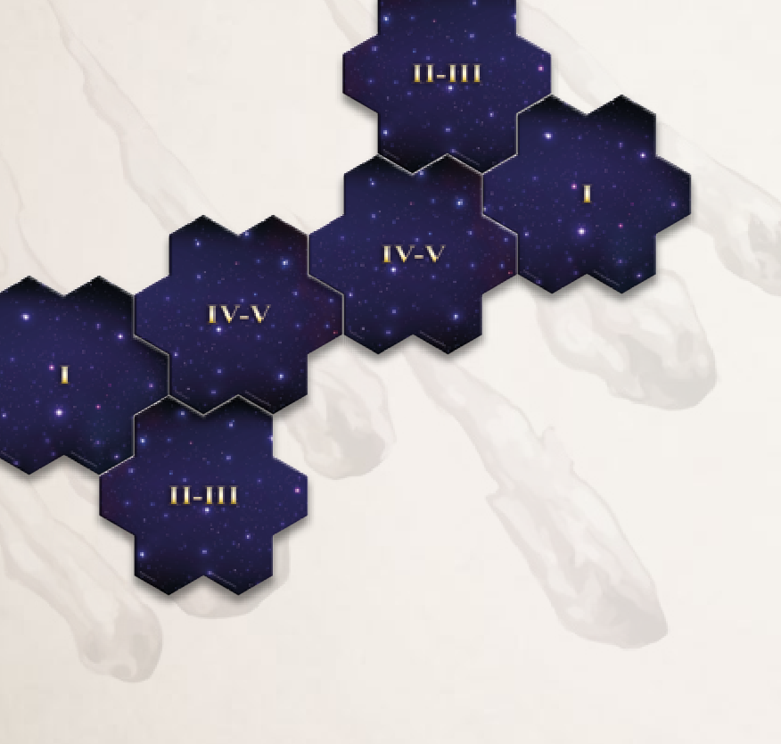
. Картинка со стр. 6.- 2 стартовых I.
- 2 ближних IV–V.
- 2 дальних II–III. На схеме они уже лежат.
Особые правила
Общие правила столкновения, стр. 4, пока сценарий их не отменяет:
- Три раунда без города (Town) и без посёлка (Settlement) — выбывание.
- Главный герой погиб, защищая осаждённый город, и других городов и посёлков нет — выбывание.
- Остался один игрок — он победил.
Победа кубиком фракции от каждого соперника на этой странице написана для партии на троих и больше. Здесь игроков двое.
Во время сценария:
- Вторичного героя нанимать нельзя.
- В начале ресурсного раунда игрок выбирает: 2 стройматериала или 1 драгоценность.
- Первый визит на обелиск (Obelisk): бросьте 2 кубика ресурсов и возьмите ресурсы одного из них, на свой выбор.
- Герой вошёл в город фракции другого игрока: защитник не платит золото, чтобы перебросить армию на защиту, и в этом бою может пользоваться своей колодой Силы и Магии.
Победа
Побеждает тот, кто разобьёт вражеского героя в бою.
Событий по раундам нет.
Brave New World
Столкновение · 2–3 игрока · База
Книга миссий базы. Сценарий: стр. 7–8. Столкновение: стр. 4.
О миссии
Источник: книга миссий базы, стр. 7–8. Общие правила столкновения — стр. 4. Режим: столкновение, 2–3 игрока.
Великий толчок расколол основания мира, разорвал материки и перекроил границы. Когда земля снова застыла, люди выбрались из укрытий и начали строить этот новый мир заново.
Кто играет
2 или 3 игрока. Каждый сам за себя. Фракцию книга не сужает.
Длина
8 раундов, и при необходимости 9-й.
Если в конце раунда кто-то контролирует 5 или больше шахт (Mine), играют ещё один раунд. Побеждает тот, у кого в конце этого раунда шахт больше. Если шахт поровну у всех — ничья.
Если к концу 8-го победителя всё ещё нет, побеждает тот, у кого больше шахт в конце 9-го. Что делать, если в конце 9-го шахт поровну, книга не пишет.
Условие победы закрывает партию в конце раунда, стр. 4.
Старт
Каждому:
- 15 золота, 3 стройматериала, 1 драгоценность.
- Доход: 10 золота, 2 стройматериала, 1 драгоценность.
- Бронзовое жилище (Dwelling).
- 1 бронзовый отряд стороной Few: самый дорогой по цене найма.
- 1 бронзовый отряд стороной Pack: самый дешёвый по цене найма.
Стартовый бонус сложности действует. Нейтралы на полях — от той же сложности.
Карта
Схема на двоих, стр. 8.
Схема на троих, стр. 8.
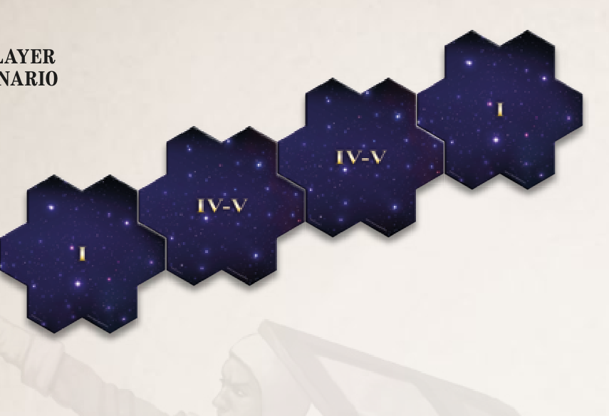
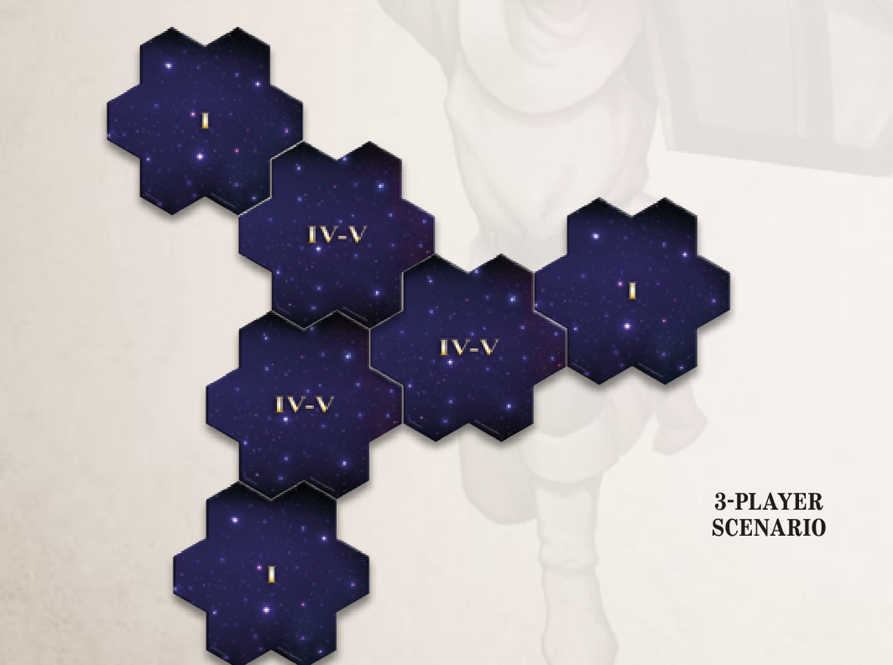
2 стартовых I и 2 ближних IV–V, как на схеме. 4 дальних II–III на схему не кладут: каждому игроку по два.
3 стартовых I и 3 ближних IV–V, как на схеме. 6 дальних II–III на схему не кладут: каждому игроку по два.
Когда выкладывать дальние тайлы, книга не пишет.
Особые правила
Общие правила столкновения, стр. 4:
- Три раунда без города (Town) и без посёлка (Settlement) — выбывание.
- Главный герой погиб, защищая осаждённый город, и других городов и посёлков нет — выбывание.
- Остался один игрок — он победил.
- На троих и больше кубик фракции от каждого соперника, который ещё в партии, даёт победу. Кубик берут, разбив любого героя этого игрока или захватив его город фракции.
Во время сценария:
- Первый визит на обелиск (Obelisk): бросьте 2 кубика ресурсов и возьмите один результат.
- Победа над чужим героем даёт победителю 20 золота.
Победа
См. «Длина»: больше всех шахт (Mine) после дополнительного раунда, либо больше всех шахт в конце 9-го, если за 8 раундов никто не победил.
События
3-й, 6-й и 9-й раунды, в начале: снимите все чёрные кубики со всех водяных колёс (Water Wheel) и ветряных мельниц (Windmill) на карте.
All for One
Столкновение · 3 игрока · База
Книга миссий базы. Сценарий: стр. 9–10. Столкновение: стр. 4.
О миссии
Источник: книга миссий базы, стр. 9–10. Общие правила столкновения — стр. 4. Режим: столкновение, 3 игрока.
Трое друзей с детства стали врагами: после смерти короля каждому досталась часть королевства. Бывшим друзьям предстоит показать, как правят. Завоеванием.
Кто играет
3 игрока. Каждый сам за себя. Фракцию книга не сужает.
Длина
11 раундов. Условие победы закрывает партию в конце раунда, стр. 4.
К концу 11-го, если победителя нет и никто не выбыл, проигрывают все. Если выбыл один, двое оставшихся добирают карты до лимита руки и начинают последний бой.
Старт
Каждому:
- 10 золота, 0 стройматериалов, 0 драгоценностей.
- Доход: 15 золота, 2 стройматериала, 1 драгоценность.
- Бронзовое жилище (Dwelling), магистрат (City Hall) и цитадель (Citadel).
- 1 бронзовый отряд стороной Few: самый дорогой по цене найма.
- 1 серебряный отряд стороной Few: самый дешёвый по цене найма.
До начала партии главный герой уже 3-го уровня. Дважды сделайте поиск (2) в колоде навыков и добавьте карты в стартовую колоду.
Стартовый бонус сложности действует. Нейтралы на полях — от той же сложности. Бои на поле грааля сценарий отменяет, см. ниже.
Карта
Соберите, как на картинке
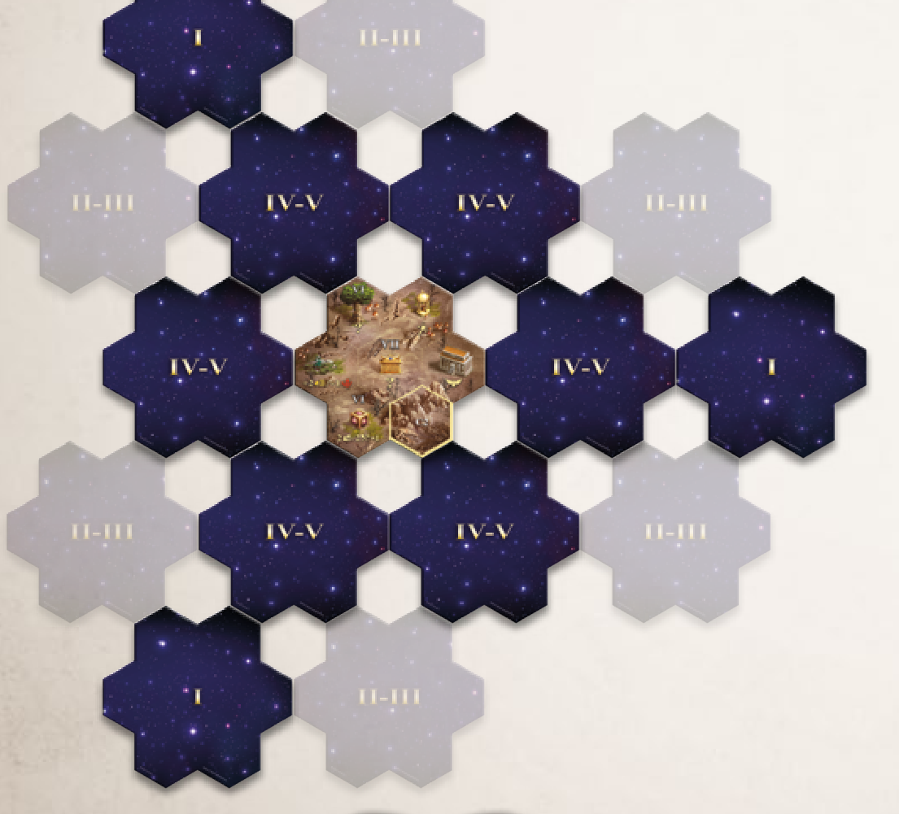
. Картинка со стр. 10.- 3 стартовых I.
- 6 ближних IV–V. Три с обелиском (Obelisk), три без. Перед укладкой разложите их на две стопки и кладите через одну, чтобы тайлы с обелиском не соседствовали.
- 1 центральный VI–VII с полем грааля (Grail). Код книга не печатает. В базе такое поле на C2.
- 6 дальних II–III. Каждому игроку по два. Бледные тайлы на схеме — подсказка, куда их класть. Класть сразу или при исследовании, книга не пишет.
Жетон грааля (Grail) из базы держите рядом, пока его не возьмут.
Особые правила
Общие правила столкновения, стр. 4: три раунда без города (Town) и посёлка (Settlement) — выбывание; гибель главного героя при защите осаждённого города, когда других городов и посёлков нет, — выбывание; последний оставшийся побеждает; кубик фракции от каждого соперника, который ещё в партии, даёт победу.
Во время сценария:
- Обелиск (Obelisk): бросьте 2 кубика сокровищ и разрешите один, на свой выбор.
- Защищая свой город фракции и платя золото, можно пользоваться колодой Силы и Магии.
- Захват чужого города: доход увеличивается на весь доход прежнего владельца, и сразу дают 15 золота, 2 стройматериала и 1 драгоценность.
- Победа над главным героем даёт 10 золота.
- Главный герой погиб в бою с вражеским героем — этот игрок проиграл и выбывает. Это шире общего правила осады со стр. 4.
- Бои на поле грааля не проводят.
- На поле грааля нельзя встать, пока герой не посетил хотя бы 2 разных обелиска или пока жетон грааля хотя бы раз не брал любой герой.
- Чтобы взять жетон, герой тратит на поле грааля 2 очка передвижения (Movement).
- Герой, который разбил героя с жетоном, забирает жетон себе.
- Герой с жетоном сдался: жетон кладут на поле, где он сдался.
- Нейтралы разбили героя с жетоном: жетон кладут на поле, где героя разбили.
Победа
Партия кончается, когда остался один игрок или когда игрок привозит грааль в свой город (Town). Этот игрок победил.
События
3-й и 6-й раунды, в начале: снимите все чёрные кубики со всех локаций на карте.
Gelea's Champions
Кооператив · 2–3 игрока · База
Книга миссий базы. Сценарий: стр. 12–14. Кооператив: стр. 11.
О миссии
Источник: книга миссий базы, стр. 12–14. Правила кооператива — стр. 11. Режим: кооператив, 2–3 игрока.
На вас с союзником напали военачальники из другого мира. Пора ударить в ответ. Соберите силы, заключите временные союзы и накопите ресурсы, чтобы спасти край.
Кто играет
2 или 3 игрока. Все заодно и играют вместе против сценария. Фракцию книга не сужает.
Нейтралов ведут по правилам боя ИИ, как в одиночной игре. Рынок (Trading Post), помимо обычного эффекта, можно использовать, чтобы отдать ресурсы любому игроку.
Если кто-то выполнил условие победы, партия сразу кончается и побеждают все, стр. 11. Этот сценарий своё условие формулирует сам: нужны кубики всех фракций.
Длина
11 раундов.
Старт
Каждому:
- 15 золота, 3 стройматериала, 1 драгоценность.
- Доход: 10 золота, 0 стройматериалов, 0 драгоценностей.
- Бронзовое жилище (Dwelling).
- 3 бронзовых отряда стороной Few. Каких именно, книга не пишет.
Стартовый бонус сложности действует. Нейтралы на полях — от той же сложности.
Карта
Схема на двоих, стр. 14.
Схема на троих, стр. 13.
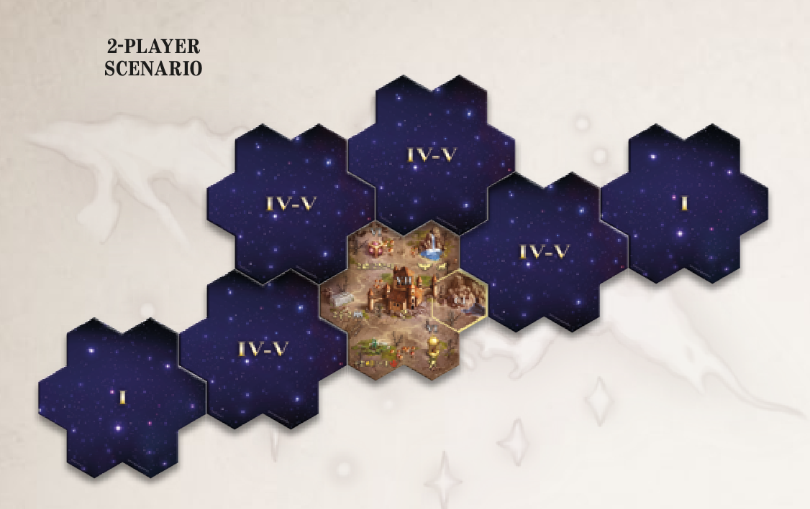
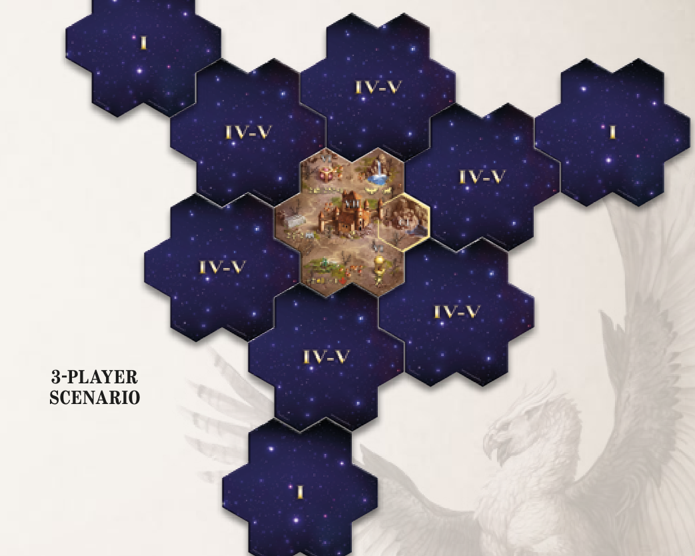
- Стартовых I — по числу игроков.
- Ближних IV–V — вдвое больше игроков. Половина с обелиском (Obelisk): два на двоих, три на троих.
- 1 центральный VI–VII с полем утопии драконов (Dragon Utopia). Код на этих страницах не напечатан. В базе это C1.
- Дальних II–III — по два каждому. Их кладут рубашкой вверх рядом с картой героя и используют по ходу сценария. На схеме их нет.
Особые правила
- Обелиск (Obelisk): бросьте два кубика сокровищ и разрешите один.
- На поле утопии драконов (Dragon Utopia) нельзя встать, пока фракция этого героя не посетила 2 обелиска в партии на двоих или 3 обелиска в партии на троих.
- Первый визит на утопию драконов: игрок кладёт на неё кубик своей фракции.
- Чужих героев атаковать нельзя.
- Шахту (Mine) или посёлок (Settlement), которые уже под контролем, захватывать нельзя.
Победа
Если на поле утопии драконов (Dragon Utopia) лежит кубик каждой фракции, партия кончается и все побеждают.
В конце 11-го раунда, если хотя бы у одного игрока кубика на утопии драконов нет, проигрывают все.
События
4-й и 8-й раунды, в начале: снимите все чёрные кубики со всех водяных колёс (Water Wheel) и ветряных мельниц (Windmill) на карте.
Unholy Quest
Кооператив · 2–3 игрока · База
Книга миссий базы. Сценарий: стр. 15–17. Кооператив: стр. 11.
О миссии
Источник: книга миссий базы, стр. 15–17. Правила кооператива — стр. 11. Режим: кооператив, 2–3 игрока.
Глубоко под землёй таятся чудовища, каких ещё не видели. Говорят, они готовятся подняться и заявить права на поверхность. Идите и перебейте их армии, пока те не выросли. Возможно, вы — единственная надежда мира.
Кто играет
2 или 3 игрока. Все заодно. Фракцию книга не сужает.
Нейтралов ведут по правилам боя ИИ. Рынок (Trading Post) можно использовать, чтобы отдать ресурсы любому игроку. Условие победы, которое выполнил один, кончает партию победой всех, стр. 11.
Длина
Зависит от сложности: лёгкая — 8 раундов, нормальная — 10, тяжёлая — 12, невозможная — 14. Число в «Что выложить» меняется вместе с выбором.
Старт
Каждому:
- 6 золота, 2 стройматериала, 0 драгоценностей.
- Доход: 10 золота, 2 стройматериала, 1 драгоценность.
- Бронзовое жилище (Dwelling), серебряное жилище и цитадель (Citadel).
- 1 серебряный отряд стороной Few: самый дешёвый по цене найма.
Стартовый бонус сложности действует. Нейтралы обычных полей — от той же сложности. Утопия драконов (Dragon Utopia) берёт армию не из таблицы, а из отдельной колоды, тоже по сложности.
Карта
Схема на двоих, стр. 17.
Схема на троих, стр. 17.
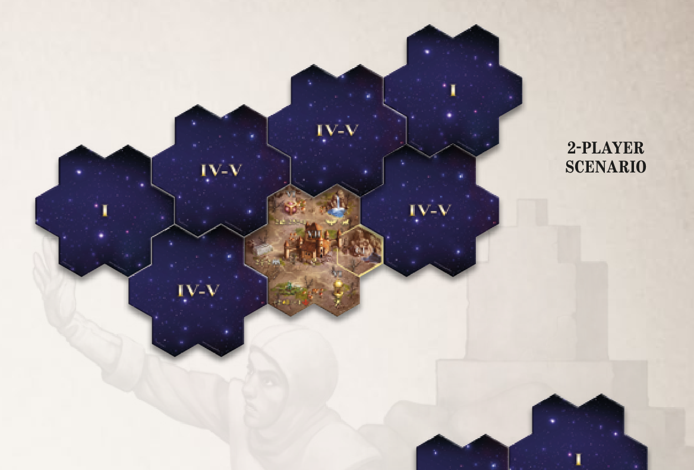
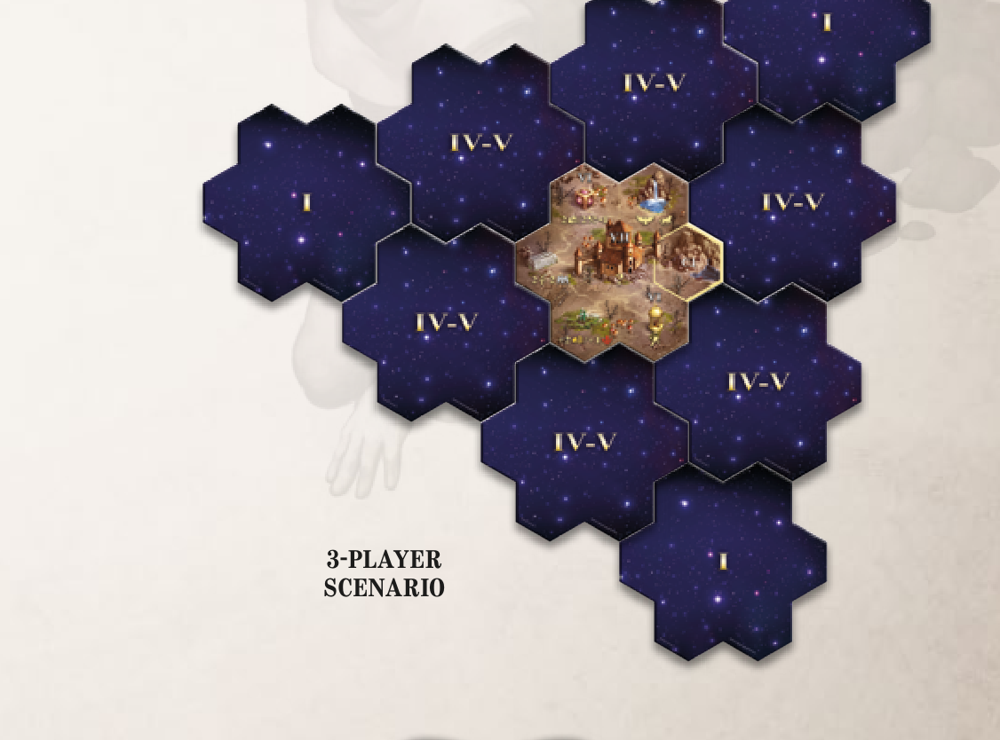
- Стартовых I — по числу игроков.
- Ближних IV–V — вдвое больше игроков. Половина с обелиском (Obelisk).
- 1 центральный VI–VII с полем утопии драконов (Dragon Utopia). Код на этих страницах не напечатан. В базе это C1.
- Дальних II–III — по одному каждому. Рубашкой вверх рядом с картой героя. На схеме их нет.
Особые правила
Колоду утопии драконов (Dragon Utopia) собирают до партии. Из колод нейтралов каждого яруса наугад берут:
- лёгкая: 5 бронзы, 5 серебра, 3 золота, 1 лазурь;
- нормальная: 4 бронзы, 5 серебра, 3 золота, 2 лазури;
- тяжёлая: 2 бронзы, 5 серебра, 5 золота, 3 лазури;
- невозможная: 1 бронза, 5 серебра, 7 золота, 4 лазури.
Колоду перемешивают. Герой, который входит на утопию драконов, берёт 5 карт из неё, а не из обычных колод нейтралов, и ставит отряды на доску боя. Если карт меньше пяти, берут сколько есть.
Побеждённые в этом бою нейтралы возвращают в колоды своего яруса, не в колоду утопии. Уцелевшие замешивают обратно в колоду утопии.
Бой с лазурным ярусом продлевают за 1 очко передвижения за раунд боя, как бой с нелазурным ярусом.
Обелиск (Obelisk): бросьте один кубик сокровищ и один кубик ресурсов, выберите один и разрешите его.
На утопию драконов нельзя войти, пока герой не посетил 2 обелиска на двоих или 3 обелиска на троих. Здесь книга говорит «герои», не «фракция», в отличие от Gelea's Champions.
Чужих героев атаковать нельзя. Шахту (Mine) или посёлок (Settlement), которые уже под контролем, захватывать нельзя.
Победа
Если все отряды из колоды утопии драконов (Dragon Utopia) разбиты, партия кончается и игроки побеждают.
Не уложились в срок своей сложности — проигрывают.
События
4-й и 8-й раунды, в начале: снимите все чёрные кубики со всех водяных колёс (Water Wheel) и ветряных мельниц (Windmill) на карте.
Long Live the Queen · 1. Homecoming
Кампания · 1 игрок · База
Книга миссий базы. Сценарий: стр. 20–21. Рассказ: стр. 22–23. Правила кампании: стр. 18–19.
1. Homecoming
Источник: книга миссий базы, стр. 20–23: подготовка и схема 20–21, рассказ 22–23. Правила кампании — стр. 18–19. Режим: кампания, 1 игрок, фракция Замок.
Высадка подтвердила и слухи, и страх. Со смертью отца соседи жадно делят земли Эрафии. Помогите Catherine создать форпост, с которого Эрафию освободят от захватчиков.
Подготовка игрока
Фракция: Замок. Герой: Catherine.
Армия: Few Halberdiers, Few Marksmen, Few Griffins.
Ресурсы: 15 золота и 1 драгоценность. Стройматериалов нет. Зданий нет.
Доход по правилам кампании, стр. 18: 10 / 0 / 0. Этот сценарий его подменяет: каждый раунд становится ресурсным, а доход дают только шахты (Mine) и посёлки (Settlement).
Бонус сценария, один на выбор:
- усилить карты отрядов Marksmen и Halberdiers;
- +3 драгоценности;
- поиск (3) в колоде артефактов.
Стартовый бонус сложности заменён этим выбором. Нейтралы полей сложность по-прежнему задаёт. Армия врага на старте — нейтралы уровня IV той же таблицы плюс Few Minotaurs.
Опыт героя не растёт выше 4-го уровня. Строения города (Town) строить нельзя. Бронзу и серебро нанимают без нужных зданий. Золотой ярус нанимать нельзя. Усиливать отряды можно без нужных зданий.
Поражения из-за того, что город не под контролем, в этом сценарии нет.
Подготовка героя ИИ
Фракция: Темница. Одну миниатюру героя Темницы поставьте на город (Town) стартового тайла Темницы.
Армия: нейтралы уровня IV выбранной сложности и Few Minotaurs.
Колода ИИ: 6 карт Might. Колоды заклинаний нет.
Карту отряда Troglodytes отложите: она понадобится в рассказе.
Враг не ходит. Он только ждёт.
Карта
Соберите, как на картинке
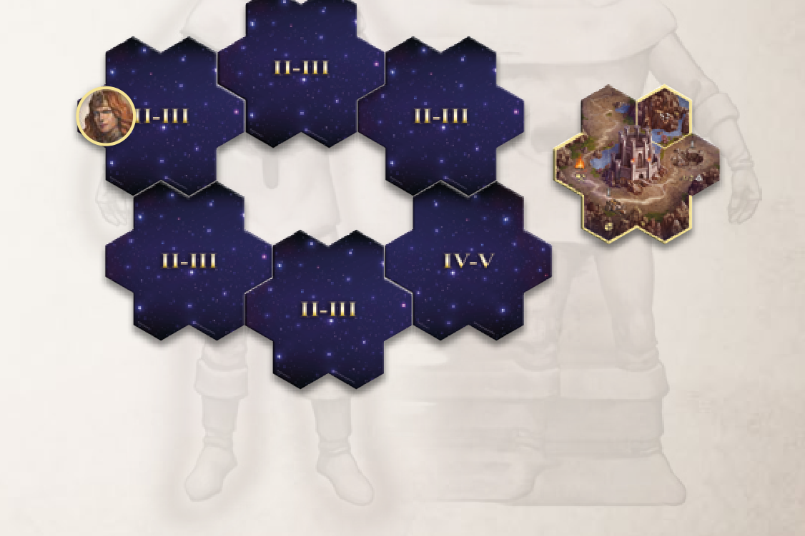
. Картинка со стр. 21.- 1 стартовый I: Темница S2, справа. Он уже открыт.
- 5 дальних II–III любой фракции базы: F1–F9.
- 1 ближний IV–V: Замок N3, зелёная трава и обелиск (Obelisk).
Catherine стоит на самом левом тайле. Этот тайл уже открыт. Пустое поле на нём поверните влево: оно должно стать самым левым полем карты. На схеме портрет лежит на левом дальнем тайле, а город (Town) Темницы открыт справа.
Особые правила
- Обелиск (Obelisk) запускает событие рассказа «Из-под земли…».
- Второе открытие дальнего тайла II–III запускает «Две дороги».
Победа и поражение
Победа: дойти до города (Town) на тайле Темницы, разбить занимающую его фракцию Темницы и освободить Rion.
Поражение:
- проигран один бой;
- к концу 8-го раунда город не взят.
События
1-й раунд: прочитайте «Приветственный приём».
8-й раунд, в конце: если фракция Темницы не разбита, всё потеряно.
Когда открыт второй дальний тайл II–III: прочитайте «Две дороги».
Когда сценарий завершён: прочитайте «Дурные вести приходят парами». В списке событий на стр. 21 заголовок напечатан как “Bad News Comes in Pairs”, в рассказе на стр. 23 — “Bad News Come in Pairs”. Это один и тот же кусок.
Колода между сценариями
После победы, стр. 19:
- Из текущей колоды отложите все карты характеристик и карту специальности 1-го уровня.
- Остальные карты специальности уберите.
- Из того, что осталось, выберите 5 карт и добавьте к отложенным. Это стартовая колода следующего сценария.
- Уровень опыта героя снова I.
Рассказ
Не читайте всё подряд. Каждый кусок открывают в свой момент:
- «Приветственный приём» — в 1-м раунде.
- «Две дороги» — когда открыт второй дальний тайл.
- «Травяная дорога» и «Снежная дорога» — по выбору на развилке, и снова, если герой входит на другую дорогу.
- «Из-под земли…» — при входе на поле с обелиском (Obelisk).
- «Дурные вести приходят парами» — когда город (Town) Темницы взят.
Приветственный приём (A Welcoming Party)
Когда читать: 1-й раунд.
Берег бушевал. Он был неспокоен, словно и сам злился на то, что видел: трупы, спрятанные среди волн.
Catherine заставила себя отвести взгляд и пробежала донесения на столе в шатре.
«Они за океаном…»
«…башня лучников к северо-востоку от Plinth легко пала под ордой Troglodytes…»
«…лодок на горизонте не было.»
«…мы видели жителей подземелий и дьяволов…»
«Предупреждения не было. Ночью мы оказались в кольце…»
Сказать, что дела плохи, было всё равно что назвать дыхание Troglodyte слегка спёртым. Сначала смерть отца, Nicolas Gryphonheart, а теперь этот хаос. Королевство отца должно устоять. Эрафия не падёт.
Она схватила перо и стала писать другим генералам.
«Первая высадка взяла разорённый форпост. Сведений мало, и им нельзя верить. Соседи бежали из деревень. Уцелевшие рассказывают разное.»
Рука на миг замерла: она снова прочла последнее донесение. Все генералы прочёсывают край. Его держали лучшие герои Эрафии. Никто не знает, куда они делись. Люди в ужасе. Тут нечему удивляться. Но слухи и находки… труп минотавра и окаменевшая голова среди обугленных руин…
«…улики указывают на вторжение Nighon», — дописала она после паузы. «Поднимите местное ополчение и обучите его быстро. Уничтожайте всякую враждебную силу, которую встретите.»
Вдалеке бормотали солдаты:
«…есть вести из Steadwick?», «…правда, что больше половины Эрафии уже пала?», «…а Tatalia?», «у меня родственник учился на Pikeman в караулке к северу от Caryatid…», «…молитесь, чтобы он пережил вторжение.»
Каждая кампания напоминала ей о двух вещах. Как невыносимо тонки стены полевого шатра. И как хрупок дух войска.
Чуть не сломав перо в пальцах, она прибавила строку:
«Исходите из худшего. Исходите из того, что мы на войне.»
Когда откроете второй дальний тайл II–III, прочитайте «Две дороги».
Две дороги (Two Paths)
Когда читать: открыт второй дальний тайл II–III.
Вы выходите к развилке. Две дороги делит величественный хребет. Первая — мощёная, среди деревьев и лугов. Вторая — крутая тропа по склону, её едва видно из-под снега. Но на этой тропе в дневном свете блестит не только снег.
Выберите:
- травяная дорога — прочитайте «Травяная дорога»;
- снежная дорога — прочитайте «Снежная дорога».
Травяная дорога (Grass Path)
Когда читать: выбран этот путь или герой вошёл на тайлы, назначенные снежными.
Вы входите в луга. Дорога широкая, войско идёт легко, и солнце со птицами могли бы радовать его. Должны были бы. Вокруг ненормально тихо. Землю пропитала вонь смерти, а в стороне деревень поднимается тошнотворный дым. Вы погоняете коня.
Дальний тайл II–III, который вы открыли, и следующий ещё не открытый тайл, соединённый с ним, считаются «травяной дорогой». Два других ещё не открытых дальних тайла — «снежная дорога». Если соединённых неоткрытых тайлов больше одного, книга не говорит, какой брать.
Если войдёте на «снежную дорогу», прочитайте «Снежная дорога». Тот кусок заново назначает, какие тайлы травяные, а какие снежные.
Когда войдёте на поле с обелиском, прочитайте «Из-под земли…».
Снежная дорога (Snow Path)
Когда читать: выбран этот путь или герой вошёл на тайлы, назначенные травяными.
Путь суров. Войско не решается ехать верхом: боится поскользнуться. Но глаза не обманули. Враг это место не тронул. Все сокровища богатой земли ваши.
Дальний тайл II–III, который вы открыли, и следующий ещё не открытый тайл, соединённый с ним, считаются «снежной дорогой». Два других ещё не открытых дальних тайла — «травяная дорога». Если соединённых неоткрытых тайлов больше одного, книга не говорит, какой брать.
Все награды за посещение полей удваиваются. Доход шахт и посёлков не меняется.
На снежной дороге у героя на 1 очко передвижения меньше.
Если войдёте на «травяную дорогу», прочитайте «Травяная дорога». Тот кусок заново назначает тайлы.
Когда войдёте на поле с обелиском, прочитайте «Из-под земли…».
Из-под земли… (From the Below…)
Когда читать: вход на поле с обелиском (Obelisk).
Авангард подходит и опускается на колено.
«Моя королева, мы нашли следы большого войска. Сотни отпечатков, это должно…»
«Покажите», — обрываете вы.
Следы выводят к одинокому обелиску посреди луга и вдруг обрываются. Видны следы разных существ, и все кончаются здесь. Если только…
Вы протягиваете руку к камню. Поверхность кажется цельной, без трещины. Рука говорит другое: вместо холодного камня она проходит сквозь скалу.
«Поднять войско!» — кричите вы ближайшему солдату. «Мы идём внутрь.»
Внутри — лабиринт тёмных путаных туннелей. После долгих часов узких ходов пещера расширяется в огромный зал, тускло освещённый факелами. Под гроздьями сталактитов стоит замок Nighon. Вокруг кишат чудовища. Minotaurs, troglodytes, мелкая шпана и твари, чьих имён вы и не вспомните.
Все в сборе. Ждут.
По спине бежит холод, и вы велите армии идти вперёд.
За столом:
- Поставьте героя на пустое поле стартового тайла Темницы.
- На каждое оставшееся поле этого тайла, кроме поля города, положите фиолетовый кубик. Книга пишет “every other field … except for the Town”: кубик на остальные поля, город без кубика. Поле, куда встал герой, кубика не получает.
- Каждый фиолетовый кубик — нейтральная армия. Трудность поля равна уровню главного героя. В каждый такой бой добавьте отряд Few Troglodytes.
- После победы над этой армией снимите кубик с поля и положите его на карту героя.
- На поле города нельзя войти, пока на карте героя нет хотя бы двух фиолетовых кубиков.
Когда город взят, прочитайте «Дурные вести приходят парами».
Дурные вести приходят парами (Bad News Come in Pairs)
Когда читать: город (Town) Темницы взят.
Разбив стражу, вы делите войско: одни на стены, другие обыскивают замок. Чутьё говорит, что пленные герои в самой глубине. Вы берёте несколько стражников и спускаетесь в подземелья. Чутьё не врёт. К облегчению, они живы. Истощены, в шрамах и ранах, но живы. Среди них — легендарный полевой лекарь эрафийской армии, Rion. Когда-то, после гибели капитана в бою с ордами чудовищ, он принял командование, обошёл врага и выиграл время подкреплениям. Его умение может понадобиться снова.
Пока вы обдумываете день, подбегает гонец.
«Моя королева… Steadwick… Столица под оккупацией Nighon!»
Long Live the Queen · 2. Guardian Angels
Кампания · 1 игрок · База
Книга миссий базы. Сценарий: стр. 24–25. Рассказ: стр. 26. Правила кампании: стр. 18–19.
2. Guardian Angels
Источник: книга миссий базы, стр. 24–26: подготовка и схема 24–25, рассказ 26. Правила кампании — стр. 18–19. Режим: кампания, 1 игрок, фракция Замок.
Подготовка игрока
Фракция: Замок. Герой: Catherine или Rion, на выбор.
Армия: Few Halberdiers, Few Marksmen, Few Griffins.
Ресурсы: 15 золота, 3 стройматериала, 1 драгоценность. Доход по правилам кампании: 10 / 0 / 0. Здание: бронзовое жилище (Dwelling).
Бонус сценария, один на выбор:
- добавить в руку заклинание Bless;
- +10 золота;
- добавить в армию Few Zealots.
Стартовый бонус сложности заменён этим выбором. Нейтралы полей сложность задаёт. Армии повелителей от сложности не меняются: книга задала их поименно.
Опыт не растёт выше 5-го уровня. «Славу Эрафии» (Glory of Erathia) строить нельзя, пока рассказ не даст особое условие.
Подготовка героев ИИ
Фракция: Темница. Два героя: First Overlord и Second Overlord. Их изображают две миниатюры героя Темницы.
First Overlord: Pack Troglodytes, Pack Evil Eyes, Few Minotaurs, Few Manticores. Колода ИИ: 3 Might и 2 Magic.
Second Overlord: Pack Evil Eyes, Pack Minotaurs, Few Manticores, Few Black Dragons. Колода ИИ: 3 Might и 2 Magic.
Общая колода заклинаний: 2 Stone Skin и 2 Magic Arrow. Ею пользуются оба.
Карту отряда Medusas отложите: она понадобится в рассказе.
Враги не ходят. Они только ждут. Первый враг, с которым вы дерётесь, — First Overlord. Второй — Second Overlord.
Когда открыт ближний тайл IV–V, вражеского героя ставят на поле обелиска (Obelisk) или хижины ведьмы (Witch Hut).
Карта
Соберите, как на картинке
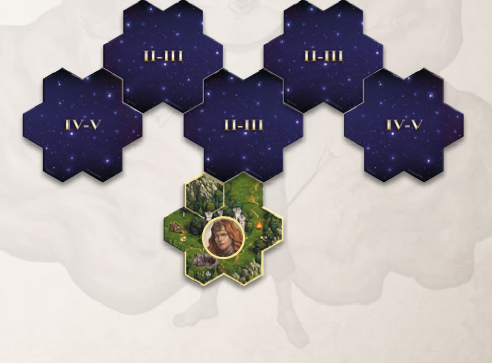
. Картинка со стр. 25.Особые правила
См. подготовку. Отдельных запретов, кроме предела опыта, неподвижных врагов и Glory of Erathia, на стр. 24 нет.
Победа и поражение
Победа: разбить обе вражеские армии.
Поражение:
- проигран один бой;
- к концу 10-го раунда разбиты не обе армии.
События
1-й раунд: прочитайте «Только вперёд».
10-й раунд, в конце: если разбиты не обе вражеские армии, всё потеряно.
Открыт тайл с посёлком (Settlement): прочитайте «Стражи Fair Feather».
Открыт тайл с хижиной ведьмы или обелиском (Obelisk): прочитайте «Ползком под землёй…».
Сценарий завершён: прочитайте «Времени ждать нет». В событиях на стр. 25 заголовок “No time to Wait”, в рассказе — “No Time to Wait”.
Колода между сценариями
После победы, стр. 19: отложите карты характеристик и специальность 1-го уровня; остальные специальности уберите; из оставшихся карт выберите 5 и добавьте к отложенным. Это стартовая колода следующего сценария. Уровень опыта снова I.
Рассказ
Не читайте всё подряд:
- «Только вперёд» — в 1-м раунде.
- «Стражи Fair Feather» — когда открыт тайл с посёлком (Settlement).
- «Ползком под землёй…» — когда открыт тайл с хижиной ведьмы или обелиском (Obelisk).
- «Времени ждать нет» — когда сценарий завершён.
Только вперёд (Pressing Forward)
Когда читать: 1-й раунд.
Пленным дали еды и воды, и они кое-что рассказали. Дела хуже самых мрачных ожиданий. Повелители Nighon уже повсюду. И они побеждают. Они не одни. Король Gryphonheart умер не своей смертью: его отравили едой. Хуже того, это случилось задолго до удара Nighon. Работа вражеского убийцы. Простолюдин такого мастера не наймёт. Какое королевство? Deyja? Tatalia? AvLee? Кто ещё прячется в тени?
Разведчики доносят: в округе несколько входов в пещеры. Скорее всего, под землёй скрыты укрепления Nighon.
Войско закрепило безопасный замок к северу. Это будет база для будущих боёв.
Бдительность терять нельзя. Время уходит, и права на ошибку нет.
Если откроете тайл с посёлком, прочитайте «Стражи Fair Feather».
Если войдёте на поле с хижиной ведьмы или обелиском, прочитайте «Ползком под землёй…». В списке событий на стр. 25 этот кусок открывают, когда открыт тайл с хижиной ведьмы или обелиском. В рассказе написано «войдёте на поле». Оба условия оставлены как в книге.
Стражи Fair Feather (Fair Feather's Guardians)
Когда читать: открыт тайл с посёлком (Settlement).
Издали видны искры в небе и густой дым внизу. Fair Feather дерётся. Побеждают они или проигрывают? Сейчас это едва ли важно. Весь край кишит армиями повелителей Nighon. Это война на истощение, и в кольце они. Обычные горожане не должны держать таких тварей. Искры в небе заставляют вас попросить у лейтенанта подзорную трубу. Одного взгляда хватает, чтобы улыбнуться.
«Это не чудовища Nighon», — говорите вы.
Ангелы. Их уже видели в Эрафии. Во время нашествия демонов разрозненные донесения говорили о крылатых существах, которые вырезали вражеские силы. Ангелы либо вернулись, либо не уходили. Сколько Fair Feather продержится против Nighon на этот раз, неизвестно. Если Fair Feather падёт, можно потерять союзника.
За столом: в бою с нейтралами на поле этого посёлка добавьте во вражескую армию Pack Medusas. Если посёлок захвачен, обычную награду не берите и вместо неё бесплатно постройте Glory of Erathia.
Если войдёте на поле с хижиной ведьмы или обелиском, прочитайте «Ползком под землёй…».
Ползком под землёй… (Crawling Underground...)
Когда читать: открыт тайл с хижиной ведьмы или обелиском (Obelisk), либо вход на такое поле, если вы пришли сюда из другого куска.
Разведчики подтверждают: силы Nighon снова прячутся в ближних пещерах.
«Мерзкие твари… ползают под ногами Эрафии, как насекомые», — отвечаете вы гонцу. «Мы выкурим их из нор.»
Вы благодарите разведчиков и просите известить остальных генералов. Потом обходите лагерь и смотрите, как войско готовится к следующему бою.
Скоро эта земля снова будет свободна. Скоро.
Когда сценарий завершён, прочитайте «Времени ждать нет».
Времени ждать нет (No Time to Wait)
Когда читать: сценарий завершён.
Останки тварей Nighon лежат обугленные перед вами и делают спёртый воздух подземелья ещё гаже. Войско расчищает место и ставит временный лагерь. Вы остаётесь наедине с мыслями. Пока всё идёт по плану. И всё же король Gryphonheart всегда говорил не терять бдительности.
Первый шаг к свободе Эрафии — снять со столицы Steadwick оккупацию Nighon. Это будет непросто: повелители Темницы перекрыли горные проходы в долину Steadwick.
Long Live the Queen · 3. Steadwick's Liberation
Кампания · 1 игрок · База
Книга миссий базы. Сценарий: стр. 27–28. Рассказ: стр. 29–30. Правила кампании: стр. 18–19.
3. Steadwick's Liberation
Источник: книга миссий базы, стр. 27–30: подготовка и схема 27–28, рассказ 29–30. Правила кампании — стр. 18–19. Режим: кампания, 1 игрок, фракция Замок. Это последний сценарий кампании.
Подготовка игрока
Фракция: Замок. Герой: Catherine или Rion, на выбор. Герой начинает со 2-го уровня.
Армия: Few Halberdiers, Few Marksmen, Few Griffins, Few Zealots.
Ресурсы: 15 золота, 3 стройматериала, 1 драгоценность. К производству стройматериалов +2. Доход по правилам кампании: 10 / 0 / 0. Как сложить +2 к производству с нулём стройматериалов на трекере, книга не пишет: прибавку возьмите как отдельное производство стройматериалов.
Здания: бронзовое жилище (Dwelling), серебряное жилище, цитадель (Citadel).
Бонус сценария, один на выбор:
- добавить в руку Bless;
- +10 золота;
- поиск (3) в колоде артефактов.
Стартовый бонус сложности заменён этим выбором. Нейтралы полей сложность задаёт. Армии Charging Heroes и Steadwick Army от сложности не меняются. Поле посёлка (Settlement) в рассказе «Пленники» считает трудность по уровню героя, не по таблице.
Обелиск (Obelisk) даёт 2 драгоценности.
Подготовка героев ИИ
Фракция: Темница. Две роли: Charging Heroes и Steadwick Army. Обоих изображают две миниатюры героя Темницы. На карте они появляются на заблокированных полях дальних тайлов по событиям раундов.
Charging Heroes, одна и та же армия у обоих: Pack Evil Eyes, Few Minotaurs, Few Manticores. Общая колода ИИ: 3 Might и 1 Magic.
Steadwick Army: Pack Medusas, Pack Minotaurs, Pack Manticores, Pack Black Dragons. Колода ИИ: 3 Might, 2 Skill и 2 Magic.
Общая колода заклинаний всех вражеских армий: 2 Stone Skin и 2 Slow. После боя обе колоды, ИИ и заклинаний, перемешивают заново.
Навык ИИ: Armorer. По правилам кампании, стр. 18, этот навык после применения не сбрасывают.
В отличие от прошлых сценариев враги ходят по обычным правилам, после хода человека. На заблокированное поле можно войти, если на нём стоит вражеский герой.
Победа над армией Charging Hero даёт 2 драгоценности. На утопии драконов (Dragon Utopia) герой дерётся со Steadwick Army.
Своего героя поставьте на центральное поле стартового тайла Замка.
Карта
Соберите, как на картинке
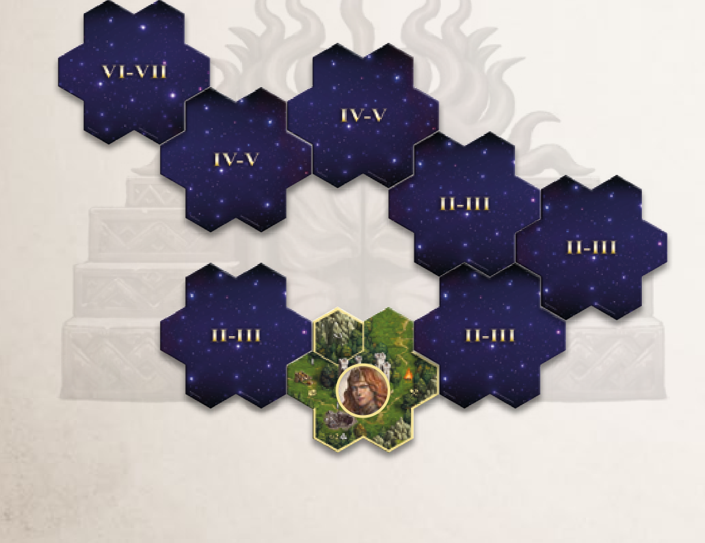
. Картинка со стр. 28.- 1 стартовый I: Замок S3.
- 4 дальних II–III: 1 Замок на выбор из F3, F6, F9 и 3 Некрополиса F1, F4, F7.
- 2 ближних IV–V: Темница N2 и N5.
- 1 центральный VI–VII: утопия драконов (Dragon Utopia) C1.
Самое правое заблокированное поле — то, куда события кладут Charging Heroes. На схеме это поле дальнего тайла справа. Какое именно поле тайла заблокировано, видно только на лице тайла.
Победа и поражение
Победа: разбить вражескую армию на утопии драконов (Dragon Utopia). Армию Charging Heroes для победы бить не обязательно.
Поражение:
- потерян контроль над своим городом (Town) фракции;
- к концу 13-го раунда армия на утопии драконов не разбита.
События
1-й раунд: прочитайте «Те, кто сражается мечом…».
5-й раунд: прочитайте «Тучи с севера». Первую армию Charging Hero поставьте на самое правое заблокированное поле.
8-й раунд: если первая армия Charging Hero уже разбита, вторую поставьте на самое правое заблокированное поле.
13-й раунд, в конце: вы проиграли.
Открыт тайл с посёлком (Settlement): прочитайте «Пленники».
Сценарий завершён: прочитайте «Освобождение».
Колода между сценариями
Следующего сценария в этой книге нет. Правило стр. 19 на случай, если колоду всё же сохраняют: отложите карты характеристик и специальность 1-го уровня, остальные специальности уберите, из оставшегося выберите 5 карт. Уровень снова I.
Рассказ
Не читайте всё подряд:
- «Те, кто сражается мечом…» — в 1-м раунде.
- «Тучи с севера» — в начале 5-го раунда.
- «Пленники» — когда открыт тайл с посёлком (Settlement).
- «Освобождение» — когда сценарий завершён.
Те, кто сражается мечом… (Those who Fight by the Sword...)
Когда читать: 1-й раунд.
Берег спокоен. Ни волны, ни ряби. Это всего лишь небольшое внутреннее озеро, так что удивляться нечему. Catherine всё равно находит это похожим на своё состояние: холодная решимость. Она отворачивается от вида за пологом и смотрит на собравшихся генералов.
Первые донесения: силы Nighon заперлись в долине Steadwick. Сухопутные пути перекрыты, значит припасы идут подземными туннелями. Иначе они давно умерли бы от голода.
«Хорошая новость, — начинает один из генералов, — с нами Bracada, а если доберёмся, то и AvLee. Больше сказать нечего. Мы не остановимся, пока Steadwick не освобождён!» Он вскидывает кулак. Остальные подхватывают.
«Если только это не кто-то из них отравил моего отца», — думает Catherine.
«Нам всё же нужен путь через горы.»
«Говорят, повелители Темницы снабжают Steadwick подземными туннелями, — спокойно говорит Catherine. — Но эти туннели ведь тянутся по всей земле?»
«Так и есть, моя королева.»
Королева Enroth улыбается холодно. Покойный король Gryphonheart говорил: ищи слабое место и бей туда. Скоро они отведают собственного зелья.
Если откроете тайл с посёлком, прочитайте «Пленники».
В начале 5-го раунда прочитайте «Тучи с севера».
Тучи с севера (Dark Clouds from the North)
Когда читать: начало 5-го раунда.
Гонец на загнанной лошади догоняет армию. Отдышавшись, он приносит дурную весть. Из пещер среди рек и гор этой земли идёт враг. Кто знает, где ещё выходы их подземных ходов.
Ускорите марш к вражеской твердыне и бросите все ресурсы на армию?
Или укрепите город и сохраните довольно золота, чтобы защитить его своей армией?
Книга выбора не разрешает наградой и не пишет, что меняется за столом. Вопрос остаётся в рассказе. На стол в этом раунде кладут первую армию Charging Hero, см. «События».
Пленники (Prisoners)
Когда читать: открыт тайл с посёлком (Settlement).
Весь край разорила война. Догорающие деревни по всему горизонту, в воздухе едкий дым дерева и тошнотворный запах горелой плоти. Иногда из леса доносятся крики, вой и оклики. Это могут быть перепуганные люди или дикие твари, отбившиеся от армии Nighon.
По словам немногих спасённых, генерала Kendal взяли в бою. Многие думают, что его держат в тюрьме на северо-западе, то есть где-то здесь.
«Будет мудро попытаться его освободить: он блестящий полководец», — напоминает советник, будто это и так не ясно. Настоящий вопрос в том, жив ли он и нет ли с ним кого-то ещё. Ждать милости от Nighon наивно, глядя на то, что они делают с землёй. Если повезёт… удача на войне вещь важная.
За столом: поле с посёлком имеет трудность, равную уровню героя. К армии на этом тайле добавьте Few Medusas.
Если посёлок захвачен:
- бесплатно наймите вторичного героя или получите 10 золота;
- получите жетон морали или сделайте поиск (2) в колоде артефактов.
Если в партии мораль ведут картами, жетон не берётся. «Получите жетон морали» — это получение морали: сбросить отрицательную карту, если она есть, иначе взять 1 положительную. Свод, стр. 19.
Когда сценарий завершён, прочитайте «Освобождение».
Освобождение (Liberation)
Когда читать: сценарий завершён.
Разбив силы внутри замка, вы ставите всех стрелков на внешние стены. Удар из замковых подземелий даёт особые возможности.
«По моей команде! — кричите вы. — Три. Два. Один. Огонь!»
Ливень стрел и заклинаний падает на чудовищ с неба. Первый удар невообразим. Дальше хаос. Армия Nighon рассыпается: командиры мертвы, все они были в замке. Войско в панике бежит. На этой дороге его уже ждут силы союзников.
Вы переводите взгляд на главную площадь, где ваши собирают уцелевших повелителей Nighon. Выходите на середину стены и ждёте, пока армия стихнет. Когда наступает тишина, вы начинаете:
«Мы закрепились в Эрафии, но страна почти в руинах. Мы начали с того, что освободили столицу Steadwick. Мы не остановимся, пока каждый захватчик не будет изгнан с нашей земли!»
«Эрафия не падёт!»
One Bad Day
Альянс · 4 игрока, двое на двое · Сопряжение
Книга миссий Сопряжения. Сценарий: стр. 8–9. Правила альянса: стр. 7.
О миссии
Источник: книга миссий Сопряжения, стр. 7–9. Режим: альянс, 4 игрока, двое на двое.
Война в этих землях тянулась годами. Её собирались кончить двумя договорными свадьбами. Всё шло сносно, пока женихи и невесты, которым этот договор был не нужен, не сбежали. Теперь родители снова воюют, уже всерьёз.
Кто играет
4 игрока. Союз — двое против двоих. Союз выбирают в начале, и он держится до конца сценария.
Каждый берёт свою фракцию. Книга список не сужает: любая фракция, чья коробка есть дома.
Четыре старта поделены на две зоны, A и B. Сначала команды выбирают зоны, потом каждый игрок выбирает позицию внутри зоны своей команды.
Стартового бонуса нет ни у кого.
Длина
16 раундов. Если к концу 16-го условие победы не выполнено, проигрывают все.
Старт
Каждому:
- 11 золота, 3 стройматериала, 1 драгоценность.
- Доход: 10 золота, 0 стройматериалов, 0 драгоценностей.
- Бронзовое жилище (Dwelling), то есть жилище 1 яруса.
- 3 отряда Few бронзового яруса своей фракции.
Карта
Римская цифра на обороте — тип тайла. I стартовый, II–III дальний, IV–V ближний, VI–VII центральный.
Соберите, как на картинке
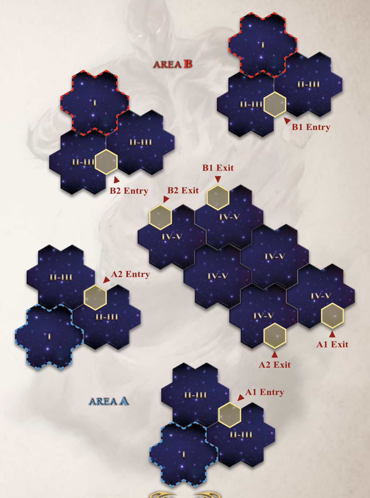
. Картинка со стр. 9.- 4 стартовых тайла I.
- 6 ближних IV–V.
- 8 дальних II–III.
Стартовых тайлов в базе три: Некрополис S1, Темница S2, Замок S3. Четвёртый берут из дополнения. Ближних и дальних в базе хватает: 6 и 9.
Жетоны одностороннего монолита (Monolith) кладите на те тайлы, которые отмечены на схеме. Схема не показывает клетку на тайле, только сам тайл. Куда именно на тайле, решают обычные правила монолита: не на заблокированное поле, не на другой жетон и не на поле, без которого не выполнить победу.
В коробке Сопряжения 12 жетонов монолита, двусторонние: одна сторона односторонняя, другая двусторонняя. Если односторонних не хватает, недостающие замените двусторонними и считайте их односторонними.
На схеме зона A снизу, зона B сверху. У каждой позиции подписаны вход и выход: A1, A2, B1, B2.
Союз
Правила альянса этой книги, стр. 7.
- Победа и поражение общие. Кто больше сделал для победы, не сравнивают.
- Артефакты союзники меняют, когда их герои стоят на соседних полях.
- Ресурсы меняют свободно в ход любого из двоих, вставать рядом не нужно.
- Союзник не ставит флаг на поле, которое уже пометил другой игрок того же союза.
Победа
Союз побеждает, если выполнено одно из двух:
- главный герой каждого противника разбит один раз;
- в конце раунда союз занимает оба выходных монолита (Monolith) врага сразу, то есть перекрывает их.
Событий по раундам нет.
Deluge
Столкновение · 3 игрока · Сопряжение
Книга миссий Сопряжения. Сценарий: стр. 10–11. Монолиты: стр. 45.
О миссии
Источник: книга миссий Сопряжения, стр. 10–11. Режим: столкновение, 3 игрока. На странице стоит пометка Clash, не альянс: правила альянса со стр. 7 здесь не действуют.
Месяцами лил дождь. Вода смыла большую часть земель и разорвала королевство. Теперь две другие фракции поднялись забрать то, что было вашим. Терпеть это нельзя. Землю нужно вернуть.
Кто играет
3 игрока. Каждый сам за себя.
Каждый берёт свою фракцию. Книга список не сужает. Одну фракцию, которую никто не взял, отложите для города (Town) в центре: об этом в «Старт».
Стартовый бонус сложности книга не отменяет и не заменяет. Берите обычный бонус столкновения, книга миссий базы, стр. 32.
Длина
10 раундов. Если к концу 10-го город (Town) в центре не удержан по условию победы, ничья.
Захват в 10-м раунде книга не разбирает. Победа требует держать город до конца следующего раунда, а в конце 10-го без выполненного условия партия уже ничья. Как эти две строки совместить, книга не пишет.
Старт
Перед партией: из фракций, которые игроки не взяли, выберите одну случайно. Её карты отрядов отложите. Ими защищён центральный город (Town).
Каждому игроку:
- 10 золота, 3 стройматериала, 1 драгоценность.
- Доход: 10 золота, 0 стройматериалов, 0 драгоценностей.
- Бронзовое жилище (Dwelling) и гильдия магов (Mage Guild).
- 3 отряда Few бронзового яруса своей фракции.
Вторичного героя нет ни у кого.
Карта
Римская цифра на обороте — тип тайла. I стартовый, II–III дальний, IV–V ближний, VI–VII центральный.
Соберите, как на картинке
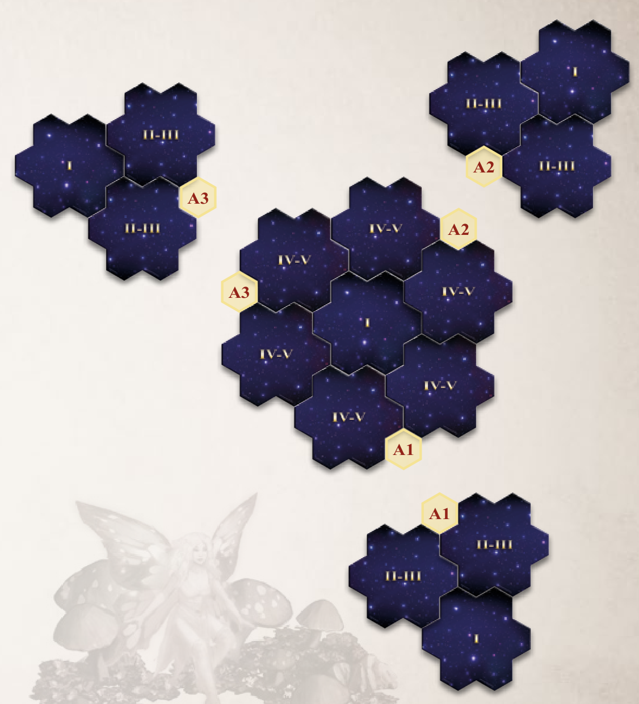
. Картинка со стр. 11.- 4 стартовых I. Три — острова игроков, четвёртый — город (Town) в центре кольца.
- 6 ближних IV–V. Они кольцом вокруг центрального старта.
- 6 дальних II–III, по два на каждом острове игрока. Ни на одном не должно быть посёлка (Settlement). Если на тайле напечатан посёлок, возьмите другой дальний.
Стартовых в базе три: Некрополис S1, Темница S2, Замок S3. Четвёртый — из дополнения.
На схеме три острова: слева сверху, справа сверху и снизу. У каждого стартовый I и два дальних II–III. В центре стартовый I и шесть ближних. Жёлтые метки A1, A2 и A3 стоят парами: одна на ближнем тайле кольца, вторая у острова того же номера.
Жетоны двустороннего монолита (Monolith) кладите, как на схеме: три пары, A1 с A1, A2 с A2, A3 с A3. Схема показывает тайл, не клетку на тайле. Куда именно на тайле, решают обычные правила монолита, стр. 45: не на заблокированное поле, не на другой жетон и не на поле, без которого не выполнить победу. Вход двустороннего монолита ведёт на парный выход, и с выхода можно вернуться.
В Сопряжении жетоны монолита двусторонние: одна сторона односторонняя, другая двусторонняя. Здесь нужна двусторонняя сторона.
Особые правила
- Город (Town) в центре защищают отряды отложенной фракции: 3 Pack бронзового яруса, 2 Pack серебряного яруса и 2 Few золотого яруса. Для опыта это поле считают уровнем трудности VI. Книга не пишет, чья это осада и ходит ли «герой» защитников: названы только отряды фракции.
- Обелиск (Obelisk): можно убрать одну карту навыка из руки или из сброса. Куда девается карта из руки, книга не пишет. Карту из сброса убирают из сброса.
- Раунды 3, 5, 7 и 9: игроки меняют ресурсы, как если бы посетили рынок (Trading Post). Сбросить карты и купить боевые машины в этот раз нельзя.
Победа
Побеждает тот, кто захватит город (Town) в центре и удержит его до конца следующего раунда.
Если к концу 10-го раунда этого нет — ничья.
Too Many Monsters
Кооператив · 2–4 игрока · Сопряжение
Книга миссий Сопряжения. Сценарий: стр. 13–15. Правила кооператива: стр. 12.
О миссии
Источник: книга миссий Сопряжения, стр. 12–15. Режим: кооператив, 2–3 игрока. Книга позволяет добавить и следующих тем же приёмом.
Чудовища бьют каждый город (Town) королевства. Король обещает награду тому лорду, кто поставит флаг у каждого логова, чтобы чудовища жили по закону.
Кто играет
Все игроки союзники и играют вместе. Нейтралов в бою ведут по правилам ИИ: расстановка и приоритет целей. Героя ИИ и его колод нет.
Игроков в схеме двое или трое. Каждый начинает в своём секторе 1. Сверх этого на каждого нового игрока добавьте: 1 стартовый тайл, 2 ближних, 1 центральный, 2 дальних и 3 жетона монолита (Monolith).
Вторичного героя нет ни у кого. Стартового бонуса нет.
Длина
Зависит от сложности:
- Лёгкая: 11 раундов.
- Нормальная: 12.
- Тяжёлая: 14.
- Невозможная: 16.
Если за этот срок не разбиты все нейтралы, сценарий проигран.
Старт
Каждому:
- 10 золота, 3 стройматериала, 1 драгоценность.
- Доход: 10 золота, 0 стройматериалов, 0 драгоценностей.
- Бронзовое жилище (Dwelling).
- 3 отряда Few бронзового яруса своей фракции.
Карта
Римская цифра на обороте — тип тайла, а не то, насколько далеко он лежит от вашего старта. I — стартовый. II–III — дальний: в английской книге это Far, тайл беднее. IV–V — ближний, Near, тайл богаче. VI–VII — центральный, самый тяжёлый и богатый. Картинка показывает, куда какой тип класть.
Схема на двоих, стр. 14.
Схема на троих, стр. 15.
Схемы на четверых в книге нет. Ниже схема на троих, стр. 15. Как добавить четвёртого — абзац под картинкой.
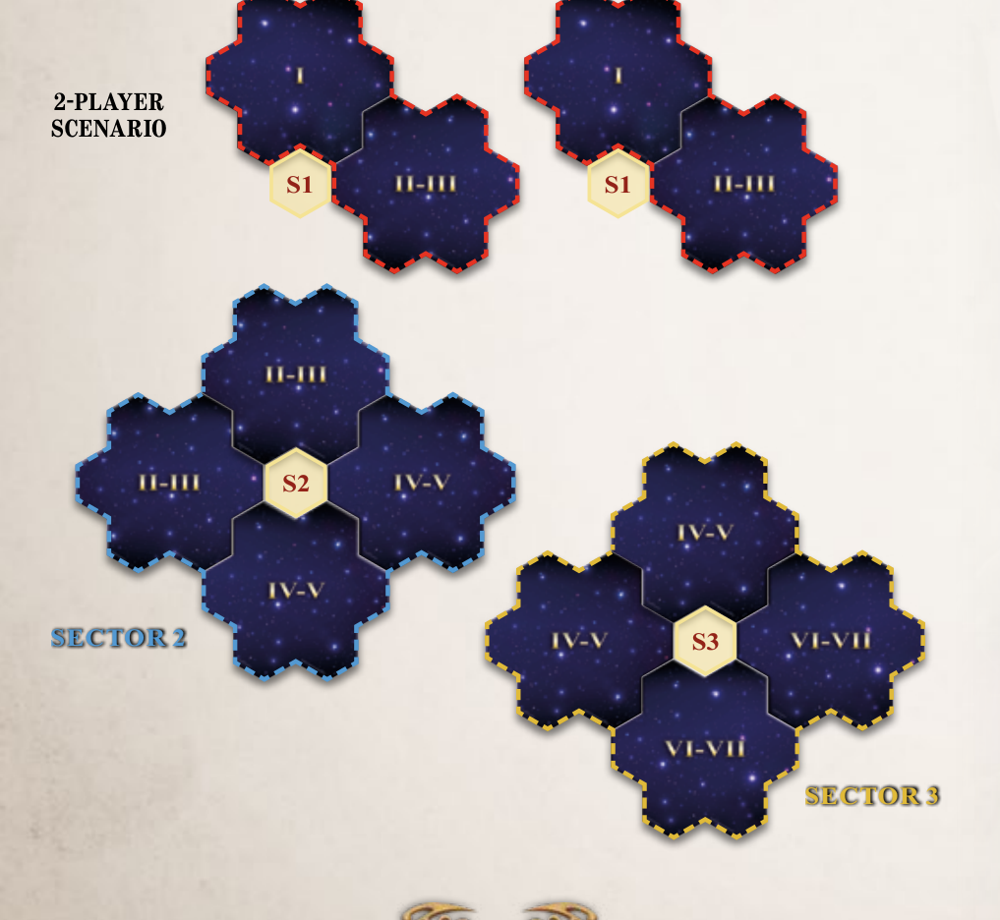
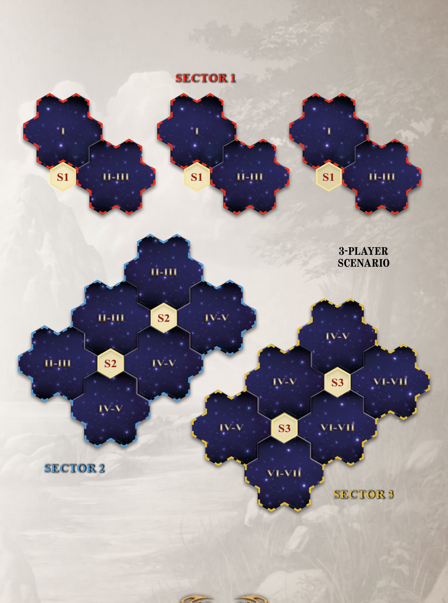
На четверых отдельной схемы нет. Четвёртый игрок ставит в секторе 1 такой же куст, как три уже нарисованных: свой стартовый I, рядом один дальний II–III и свой монолит (Monolith) входа. Стартовых тайлов в базе только три: Некрополис S1, Темница S2, Замок S3. Четвёртый старт берут из дополнения. Центральных в базе тоже два, C1 и C2, поэтому третий и четвёртый центральные — из дополнений: Оплот C3, Крепость C4, Инферно C5, Башня #C1. Секторы 2 и 3 просто получают ещё одну такую же группу тайлов, как при переходе от двоих к троим. Точное поле, которого нет на рисунке, книга не задаёт.
На двоих:
- 2 стартовых I, 4 ближних IV–V, 2 центральных VI–VII, 4 дальних II–III.
На троих:
- 3 стартовых I, 6 ближних IV–V, 3 центральных VI–VII, 6 дальних II–III.
Карта делится на три сектора. Сектор 1 — старты игроков. Сектор 2 и сектор 3 — общие, с монолитами S2 и S3.
Жетоны одностороннего монолита кладите, как на схеме. Если игроков больше, чем жетонов, недостающие замените любыми другими жетонами и считайте их монолитами. В Сопряжении самих жетонов монолита 12.
Особые правила
- Золото между игроками передавать нельзя. Про остальные ресурсы такого запрета в тексте нет.
- На рынке (Trading Post), помимо обычной торговли, ресурсы можно отдать другому игроку. Это правило кооператива, стр. 12. Золото этой миссии оно не отменяет: золото не передают.
- Обелиск (Obelisk) даёт 1 кубик ресурсов и 1 очко хода.
- Шахты (Mine) других игроков захватывать можно.
- Монолит (Monolith) из сектора 1 в сектор 2 открывается, когда в вашей части сектора 1 закончены все бои и открыты все тайлы.
- Из сектора 2 в сектор 3 — когда в секторе 2 закончены все бои и открыты все тайлы.
- Если сектор 2 уже весь открыт и все бои там закончены, монолит сектора 1 везёт героя сразу в сектор 3.
- Никакой эффект не снимает чёрный кубик с поля, где стоит римская цифра.
- Эффекты, которые уменьшают запас очков хода, игнорируйте. Тратить очки хода можно как обычно.
Победа
Нужно закончить каждый бой на карте до конца раунда, который задаёт сложность: 11, 12, 14 или 16. Как только условие выполнено, выигрывают все, если сценарий не сказал иначе. Здесь иначе не сказано.
Событий по раундам нет.
Masters of the Elements · 1. Troubled Walking on Clouds
Кампания · 1 игрок · Сопряжение
Книга миссий Сопряжения. Сценарий: стр. 19–25. Правила кампании: стр. 16–18.
1. Troubled Walking on Clouds
Источник: HoMM-Conflux-Mission-Book_EN.pdf, стр. 16–25. Таблица нейтралов уровня III: книга миссий базы, стр. 32. Это одиночная кампания. Игроков: 1.
Перемирие Повелителей стихий кончается. Предки поручают бессмертному герою Тарнуму остановить их план насчёт Энрота. Пройдите с ним по планам стихий.
Длина
13 раундов.
Подготовка игрока
Фракция — одна на выбор: Замок (Castle), Темница (Dungeon), Башня (Tower), Крепость (Fortress), Оплот (Rampart), Цитадель (Stronghold). Сопряжения в этом списке нет.
Герой в тексте миссии — Tarnum. В списке компонентов этой книги отдельной карты Tarnum нет: там две двусторонние карты героев Сопряжения. Берите героя выбранной фракции. Кампания разрешает любого другого героя той же фракции.
Армия на старте: нет.
Ресурсы: 20 золота.
Постройки города (Town): нет.
Доход по правилам кампании этой книги, стр. 17: 10 золота, 0 стройматериалов, 0 драгоценностей. Свой бонус сценария заменяет обычный стартовый бонус сложности. Бонус таблицы «лёгкий / нормальный» сверху не берите.
Бонус, один из трёх:
- Поиск (3) в колоде артефактов.
- Поиск (3) в колоде навыков.
- +6 золота.
Тот же выбор фракции книга повторяет в 1-м раунде: тогда вы берёте планшет и отряды.
Подготовка героев ИИ
Враги: Fiur и Lord of Air’s Guardians.
Армии:
- Fiur: нейтральная армия уровня III, Pack Storm Elementals, Few Energy Elementals.
- Lord of Air’s Guardians: Pack Sprites, Pack Storm Elementals, Pack Energy Elementals. Бронзовых Storm Elementals и серебряных Energy Elementals отложите: они понадобятся по ходу сценария.
Уровень III зависит от сложности. Таблица на обороте книги миссий базы, стр. 32:
- Лёгкая: 1 бронзовый и 1 серебряный нейтрал.
- Нормальная: 2 бронзовых и 1 серебряный.
- Тяжёлая: 1 бронзовый и 2 серебряных.
- Невозможная: 3 серебряных.
К этому набору Fiur добавляются названные элементали. Sprites, Storm Elementals и Energy Elementals — нейтральные карты коробки Сопряжения. Бронзовая звезда у Storm Elementals, серебряная у Energy Elementals. Ярус Sprites книга в этой строке не пишет: смотрите звезду на карте.
Колоды:
- Fiur: 4 карты Might.
- Lord of Air’s Guardians: 8 карт Magic, 3 карты Skill.
- Общая колода заклинаний врага: 2 Magic Arrow, 1 Lightning Bolt, 1 Chain Lightning.
- Навык: карта заклинания Summon Air Elemental. Книга не пишет, что она только у одного из двух героев.
Навык. Когда карта навыка срабатывает, положите на неё один розовый кубик Сопряжения. Когда кубиков два и в армии ИИ в этом бою меньше двух элементалей воздуха, огня, земли или воды, снимите кубики и примените Summon Elemental с силой магии 4. Призванного поставьте в первую пустую клетку передней линии, считая слева у стороны ИИ. Если колода ИИ кончилась, а на карте ещё есть кубик, примените Summon Elemental с силой магии 2.
Если подготовка не говорит, что колода только у одной армии, колода общая. После боя смешайте использованные и неиспользованные карты обратно. Заклинаний в колоде может быть больше, чем карт Magic. Это не ошибка.
Карта
Римская цифра на обороте — тип тайла. I стартовый, II–III дальний, IV–V ближний, VI–VII центральный. «Дальний» в книге — это тип II–III, а не «тот, что лежит дальше по столу».
Соберите, как на картинке
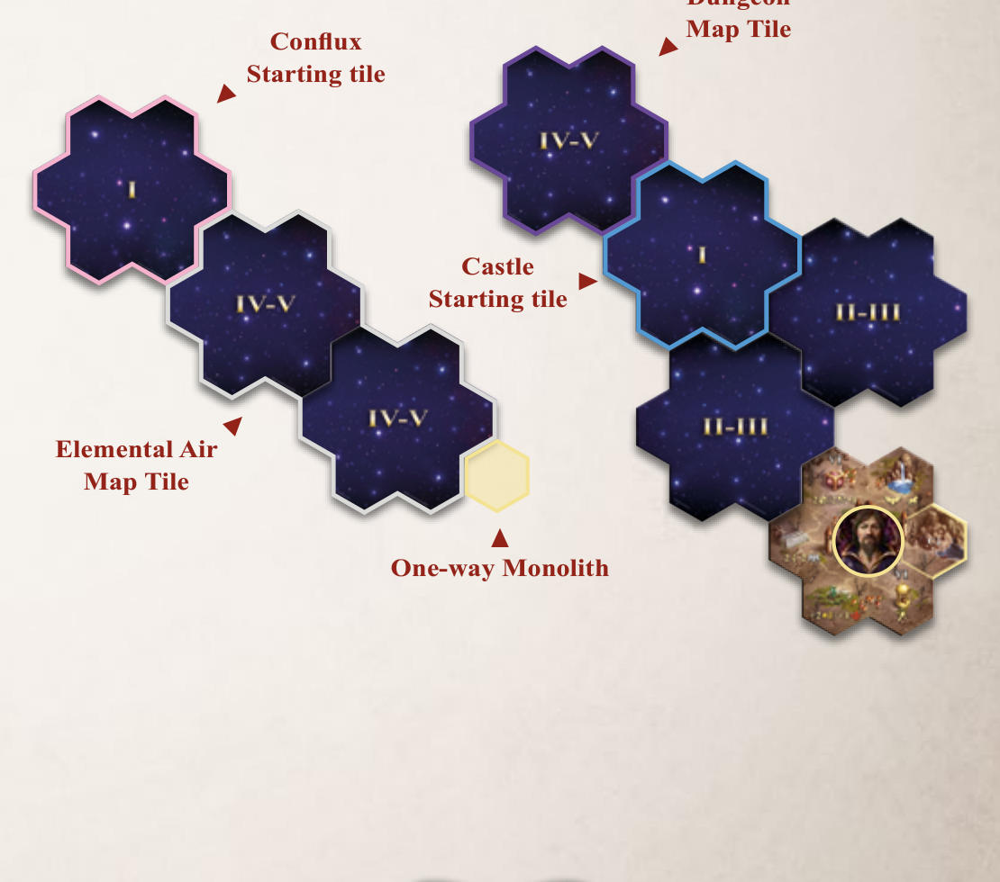
. Она вырезана из стр. 21.- 1 центральный тайл VI–VII: Dragon Utopia, C1.
- 2 стартовых I: Castle S3 и Conflux S8 (в гиде подписан S5).
- 2 дальних II–III, случайные из пула: Замок F3, F6, F9; Башня #F1–#F3; Крепость F13–F15; Оплот F10–F12.
- 1 ближний IV–V: Темница с обелиском (Obelisk), N5.
- 2 ближних стихийных IV–V: воздушные N18 и N19.
Жетон одностороннего монолита (Monolith) положите, как на схеме. Односторонний монолит ведёт только от входа к выходу.
На схеме слева розовый тайл I — старт Сопряжения. Соседний с ним IV–V — воздушный. Следующий IV–V со стартом Сопряжения не соседний: его открывают при первом обелиске. Справа синий I — старт Замка, верхний IV–V — тайл Темницы, два II–III — случайные дальние. Центральный тайл — тот, на котором стоит герой в начале.
Герой на карте
Поставьте героя на центральное поле центрального тайла, на поле Dragon Utopia. Этот тайл уже открыт. На стр. 20 книга пишет «your Conflux Hero». Фракция игрока при этом одна из шести других.
Особые правила
- Герой не получает опыт выше 4-го уровня.
- Карты астрологов в этом сценарии не используются.
- Нельзя использовать: Summon Fire Elemental, Summon Air Elemental, Summon Earth Elemental, Summon Water Elemental, Basic Fire Magic, Basic Air Magic, Basic Water Magic, Basic Earth Magic, Fire Magic, Air Magic, Water Magic, Earth Magic. Вытянули такую из колод заклинаний или навыков — сразу сбросьте и возьмите другую.
- Первый обелиск (Obelisk) запускает событие. После него каждый обелиск — пустое поле.
- Постройки города (Town) нельзя строить, пока город не ваш. При этом бронзовых юнитов можно нанимать без нужного жилища (Dwelling), а усиливать отряды можно без нужных построек.
- До 5-го раунда отсутствие города не проигрывает сценарий. Если к концу 5-го раунда города нет, сценарий проигран.
- Бой с нейтралами на воздушном тайле: первую вытянутую серебряную карту замените на серебряных Energy Elementals и добавьте бронзовых Storm Elementals.
- Герою ИИ сдаться нельзя. Герой ИИ ходит после игрока.
- Если карта навыка ИИ велит тянуть карту, тяните ещё одну карту ИИ и выполните её.
- Карта ИИ, которая даёт защиту, остаётся на отряде, пока её не используют против одной атаки.
Сложные заклинания ИИ (несколько целей, Каменная кожа, Лечение, усиление на раунд, Слабость) в этой книге расписаны на стр. 17–18. В папке они уже на странице памятки, механика «Сложные заклинания ИИ».
Победа и поражение
Победа: разбить обе вражеские армии.
Поражение: герой проиграл любой бой. Отступить из боя с нелазурными нейтралами можно. Конец 12-го раунда — поражение.
События
1-й раунд:
- Чёрный кубик на каждое поле центрального тайла, где есть римская цифра. Эти поля пустые.
- Выберите фракцию из списка выше и возьмите её отряды и планшет города (Town).
- Возьмите 4 карты из колоды серебряных нейтралов. Одну можно купить за цену найма. Дальше найм по обычным правилам.
- Прочитайте «Перемирие на десять тысяч лет».
3-й раунд:
- Получите отрицательную мораль.
- Прочитайте «Стыд».
5-й раунд:
- Если к концу раунда город не ваш, вы проиграли.
- После дохода этого раунда потеряйте 10 золота.
- Прочитайте «Храбрец».
9-й раунд:
- Прочитайте «Положение в королевстве».
12-й раунд:
- В конце раунда вы проиграли.
Поле с городом на стартовом тайле Замка:
- Бой с армией Fiur. После победы постройте бронзовое жилище (Dwelling), цитадель (Citadel) и ратушу (Town Hall).
- Прочитайте «Древние библиотеки».
Поле с городом на стартовом тайле Сопряжения:
- Бой с армией Lord of Air’s Guardians.
Первый обелиск (Obelisk):
- Откройте воздушный ближний тайл, который не соседний со стартовым тайлом Сопряжения.
- Поставьте главного героя на жетон монолита (Monolith).
- Прочитайте «Зеркальный пруд».
Сценарий пройден:
- Прочитайте «Его здесь нет».
- Соберите колоду к следующему сценарию по шагам ниже. Уровень героя в начале каждого сценария снова I. Свитки заклинаний в колоду не входят и в следующий сценарий не переносятся.
Колода между сценариями
После победы:
1. Верните карты из руки и сброса в колоду.
2. Отложите из них все карты характеристик и карту специальности 1-го уровня.
3. Уберите остальные карты специальностей.
4. Из оставшихся выберите 5 и добавьте к отложенным. Это стартовая колода следующего сценария.
5. Запишите, какие карты в неё вошли.
Поражение в сценарии: уберите из колоды всё, чего нет в текущей стартовой колоде.
Смена героя между сценариями. На шаге 3 замените характеристики и специальность 1-го уровня прежнего героя на такие же карты нового. Усиленные характеристики можно переложить: снимите у нового героя обычную карту того же типа и положите усиленную. На шаге 4 любую оставшуюся карту можно заменить стартовым навыком нового героя или Magic Arrow. Вторую копию его навыка так не добавить. Magic Arrow не больше четырёх.
Если карт не хватает
Карта из подготовки уже в вашей стартовой колоде: можно взять другую. Двум героям ИИ нужна одна и та же карта отряда, а копия одна: соберите армии без неё и добавьте карту в ту армию, с которой начался бой. Навык ИИ другой картой не заменяют. Если нужный навык у вашего героя, заберите его у героя и сделайте поиск (3) в колоде навыков. Нет нужного заклинания у ИИ — замените его на Magic Arrow. Нет заклинания, артефакта или навыка, назначенного вашему герою, — поиск (3) в соответствующей колоде.
Рассказ
Не читайте всё подряд. Каждый кусок открывают в свой момент. Раунды идут по порядку. «Древние библиотеки» и «Зеркальный пруд» могут выпасть в любом раунде: когда герой дойдёт до нужного поля.
- «Перемирие на десять тысяч лет» — в 1-м раунде.
- «Стыд» — в 3-м раунде.
- «Храбрец» — в 5-м раунде.
- «Положение в королевстве» — в 9-м раунде.
- «Древние библиотеки» — когда возьмёте город (Town) на стартовом тайле Замка, после боя с Fiur.
- «Зеркальный пруд» — на первом обелиске (Obelisk).
- «Его здесь нет» — после победы в сценарии.
Перемирие на десять тысяч лет
Когда читать: 1-й раунд.
Предки меня ненавидят.
День был солнечный и тихий. Озеро стояло гладью, вокруг ни души. Самый день для рыбалки. И тут явились Предки.
Их призрачные фигуры повисли над водой и кружили вокруг лодки. «Тарнум, — сказали они хором, — это самое важное дело, какое мы тебе поручали».
Удочка исчезла из руки, одежда стала меняться, всё вокруг поплыло. Они переносили меня магией. Не успел я сказать ни слова, как они уже рассказывали древнюю историю: вскоре после сотворения мира боги воевали с Повелителями стихий и после веков войны принудили их к перемирию на десять тысяч лет.
«Десять тысяч лет прошли, — закончили они. — Жестокие и жадные Повелители стихий хотят разделить все стихии и тем погубить мир. Ты должен им помешать». Они растаяли, будто их и не было.
«Сказали, чего хотят, и бросили меня перед башней мага. В снежных горах. Это Бракада?» Я стоял у подножия огромной тонкой башни, в дурацких одеждах, как у этих волшебников.
«Ещё бы Предки торопились. Повелители стихий идут в наш мир, чтобы его уничтожить». Я поднимался ко входу и собирал мысли. «А что, если не ждать их? Ударить самим, на планах стихий, где они живут? Такого они не ждут. Беда в том, что на планы стихий попадают только через город Сопряжения, и во всём мире он остался один». Долгая жизнь даёт хотя бы это: память об истории мира.
Внутри волшебники встретили меня холодно. Я был для них неизбежным злом, которое навязали Предки. Чувство было взаимным. Они показали башню и объяснили, чем я могу пользоваться. Нанять наёмников через свои связи казалось полезнее. От этих хлипких волшебников толку мало.
На следующий день пришли люди короля Бракады, Гэвина Магнуса. Он уже собрал для меня войско против Повелителей стихий. Как это устроили Предки, я не знаю. Вместе с помощью Магнус прислал своего человека, Барсолара, чтобы тот берёг интересы королевства. С первой минуты Барсолар указывал, что мне делать. Надоедливее я никого не встречал, и вдобавок он волшебник. Две причины его ненавидеть. Лично я столкнул бы его с ближайшего утёса. Беда в том, что пропажа троюродного брата короля создаст ещё больше проблем.
После целого дня его ворчания я надеялся посидеть в тишине. Едва я сел за стол в шатре, ворвался его помощник и принялся объяснять планы стихий.
«Выслушайте, господин!» Маг повысил голос, видя, что я качаю головой. «У нас есть свидетельства. Рассказы тех, кто сам там был».
«Они не часть этого мира. Это я знаю. Но целый мир из одного огня? Так не бывает».
«Господин, на планах стихий законы нашего мира не действуют. Там можно ходить по облакам, а земля может быть из огня. Потому никто не решался вести туда армию».
«Бывает или нет, я буду первым, — сказал я. — Магией, может, и придётся пользоваться. Драться я всё равно буду как настоящий варвар».
Из шатра я видел всадников, а за ними войско.
«Незачем сидеть и ждать, пока Повелители стихий придут сами. Я принесу бой к ним и кончу его, пока они не тронули этот мир». С этими словами я пошёл смотреть новую армию.
Стыд
Когда читать: 3-й раунд.
Барсолар уже битый час гудел про тонкости изготовления големов. Я мечтал, как голем падает на тощего волшебника и выдавливает из него жизнь. Потом Барсолар замолчал. Я обернулся. Он чего-то ждал. Значит, задал вопрос.
«Чего?» — сказал я и зевнул.
«Я же говорю: нам нужны заклинания. Как вы собрались воевать без заклинаний?»
«Это битва. Солдаты по всему свету выигрывают войны без магии». Магии вокруг и так хватало, кожа от неё зудела. Ещё мне не надо. Просьбы дать ресурсы на гильдию магов сыпались одна за другой, и громче всех, конечно, Барсолар. Этих волшебников я знаю давно: дай им палец, они заберут весь мир. Но нытьё достало. Письма каждый день от людей, которые спят в соседнем шатре. Волшебники пишут письма по любому поводу. Не удивлюсь, если они напишут, что вышли в лес по нужде.
«Ладно. Звучит разумно, — сказал я и ткнул вправо. — Смотри, кролик!»
Барсолар посмотрел. Кролика не было, и он нахмурился. Я уже был снаружи и уходил как можно дальше. Нужен был воздух.
Было ещё темно, утро едва занималось. Тратить день на разговоры о магии я не собирался и поехал осмотреть окрестности. Глупо, может быть. От всей этой магии голова трещала, будто её разрубили топором. Одинокая прогулка должна была поставить меня на ноги.
А потом на меня напали.
Элементали воздуха вынырнули из ниоткуда и сняли меня с коня. Посох против них был бесполезен. Вокруг них слишком много воздуха. Они подняли меня над облаками и всю дорогу издевались. Потом отпустили. Прямо на твёрдую землю. Падение длилось вечность. Я готовился к боли. И кто-то подхватил меня сзади. Сначала я решил, что элементали вернулись поиздеваться ещё. Обернулся: это один из моих помощников, мастер гаргулий.
Маленький человек летел с помощью магии и опустил меня целым. Я опустил голову. Стыдно, что спасла меня магия.
По дороге к шатру я думал. Он сделал дело, пока остальные смотрели. Не то чтобы мне и правда грозила смерть. Но такие люди нужны. А должность закроет ему рот об этом случае. Место казначея пустует. Всё складывается: мастер гаргулий только что заработал повышение.
Храбрец
Когда читать: 5-й раунд.
«Господин? — сказал морщинистый помощник. — Вы звали?»
У волшебников помощников больше, чем волос на впалой груди. У меня есть теория. На каждую беду, от трудной формулы до тесных сапог, волшебник нанимает нового помощника. Самый сильный маг тот, кто сам не поднимает пальца, а вокруг суетится свита, которой хватило бы на город.
«Ты который?»
«Понифик, мастер големов».
«А, да. Раз уж эти големы всё равно в моей армии, можешь сделать так, чтобы они дышали?» Волшебник смотрел с видимым недоумением.
«Зачем вам это, господин?»
«Они мне не нравятся. Сильные, да. Но жуткие, как ходячие трупы. Тебе нравятся трупы, Понтификат?»
«Понифик, господин. И нет, трупы мне особенно не нравятся».
«Так ты можешь что-нибудь сделать?»
«Не думаю, господин. Но големы и так полезны. Они сделают всё, что вы скажете, когда скажете».
«Да, Пролифик…»
«ПО-НИ-ФИК, господин».
«Да, только они делают не всё, о чём просишь. Я велел одному дышать, и у него треснула голова, пока он пытался это понять».
«Господин, это совершенно невозможно».
«Ладно, забудь про дыхание, — сказал я и усмехнулся, проверяя, докуда этого волшебника можно дожать. — А моргать они могут?»
Он открыл рот, и тут ударила тревога.
Несколько штормовых элементалей перелетели стены и ударили. Стража не пострадала: это была уловка. Другие элементали в то же время ворвались в казну. Мастер гаргулий, мой новый казначей, пытался их остановить. Заклинания оказались слабы. Он погиб, а враг ушёл, нагруженный золотом и драгоценностями. Деньги можно собрать снова. Долг человеку, который спас мне жизнь, я уже не отдам.
Пусть он и был волшебником. Он был храбрецом.
Положение в королевстве
Когда читать: 9-й раунд.
Я решил, что Предки меня наказывают. Поселили среди волшебников и сделали одним из них, чтобы унизить до конца.
Сегодня я попытался с ними подружиться. Разделся по пояс и вызвал на борьбу каждого в лагере.
Ни один не вышел.
Ещё бы им не нужны были заклинания. Они боятся всего, от чего вспотеешь. И какая насмешка: я, варварский король, который перебил тысячи магов, теперь должен сам овладеть магией, иначе мир погибнет. Предки надо мной смеются. Я бы на их месте тоже смеялся.
«Ну же! Ты, ты и ты. Все разом».
Я тыкал в каждого волшебника, кого видел. Они смотрели на меня как на безумного. Наконец один подошёл. С письмом.
«А. Ты просто гонец, — вздохнул я. — Может, потом сойдёмся один на один?» Я толкнул его локтем. Он молча сунул мне донесение и отвёл глаза.
Несколько дней назад я послал разведчика проверить слухи местных. Не прочитав и нескольких слов, я сжал кулаки. И сжимал их с каждой следующей строкой.
«Что… в клетках… в рабстве у Повелителя воздуха?»
Спрайты. Повелитель воздуха держит их детей в заложниках и заставляет взрослых воевать за него, работать в шахтах и терпеть прочее. Спрайты магические твари, но они рабы. Это беспомощное чувство, когда жизнь тебе не принадлежит, я знаю. Нет ничего хуже чужой жестокой воли. Эти воспоминания и сделали меня тем безумцем, каким я был. Может, я зашёл слишком далеко. Но дело мне до сих пор кажется правым.
«Мы освободим этих спрайтов», — пообещал я.
Древние библиотеки
Когда читать: Город (Town) на стартовом тайле Замка ваш: после боя с армией Fiur.
Взяв последний город Сопряжения в этих землях, я послал помощников искать путь на планы стихий. Барсолар взялся охотно. Значит, пару дней, а может и недель, я не услышу его тявканья.
Несколько дней без него поправили мне настроение. Я пригласил наставника магов, Хеморосса, на ужин. Тихий разговор за едой мог растопить лёд.
Так день и был испорчен.
«Места учёбы вроде башни Марлетто, Камня знаний и Сада откровения важны, чтобы совершенствовать себя», — говорил Хеморосс. К еде он почти не притронулся. «Они помогут вам поднять навыки и…»
«К чему ты это? Хочешь сказать, со мной что-то не так, Геморрой?»
«Нет! Я только думал, что стоит упомянуть, господин. Простите». Наставник ушёл и оставил еду. Даже не заметил, что я переврал его имя. Я расхохотался. Этих волшебников так легко сбить с толку.
В тот же день пришло письмо от короля Бракады. Я знал, что в нём, ещё до того как вскрыл его, и знал, что это работа Барсолара. Гэвин Магнус очень вежливо объяснял, что его людям нужна магия, иначе от них мало толку. В недавнем письме король беспокоился, что после перехода на план воздуха мы не сможем с ним связаться или даже вернуться. Он предлагал остаться здесь и ждать Повелителей стихий. Я отказался. Они не ждут удара, потому я и бью. Зачем давать им время собрать армию, какую они хотят? Он несколько раз напомнил, что я веду силы Бракады и их могут отозвать одним словом.
Меня отчитали. Я скомкал письмо и нашёл Барсолара: он пил чай с наставником магов Хемороссом.
«Прости, Геморрой».
Глаза Хеморосса полезли на лоб, и он убежал без слова. Барсолар уставился на меня. «Наставника зовут Хеморосс, лорд Тарнум. Эти дурацкие клички уже надоели».
Я схватил Барсолара за ворот и поднял в воздух.
«Если у тебя проблема, иди ко мне. — Я затолкал ему в рот письмо Магнуса. — Ещё раз полезешь за спиной, пожалеешь. И подумай о другой работе, подальше от меня».
На следующий день он говорил гораздо тише. В библиотеке Сопряжения он нашёл книгу о пути на план воздуха. Он предложил уехать в этот невозможный горный хребет и искать Врата к облакам. Магический дар, сказал он, лучше потратить на разведку, а ещё он хочет изучать планы стихий без помех. По-моему, он уехал, потому что понял: я близок к тому, чтобы снять ему голову. Я смотрел, как он уезжает, и улыбался. Вот бы так же избавиться от остальных волшебников.
Зеркальный пруд
Когда читать: Первый обелиск (Obelisk), после переноса героя на монолит (Monolith).
Сегодня помощники позвали меня к замёрзшему пруду у рощи. Волшебники пробили лёд посохами и выгребли осколки голыми руками. Когда всё было готово, все встали кругом у проруби.
«Это называется Зеркальный пруд, — сказал Хеморосс. — Его можно сделать из любой стоячей воды».
«И что он делает?»
«По нему можно найти человека даже на большом расстоянии».
Они хотели найти Барсолара. Я не знал, чего ждать. Вода засветилась жутким синим, и я отступил от проруби. Хеморосс усмехнулся, заметив мой страх. Поверхность стала гладкой, как зеркало, и в ней появилась фигура. Я наклонился. Это был Барсолар. Он шёл по полю белых облаков. Может быть, план воздуха.
«Он жив», — сказал Хеморосс. Остальные зааплодировали.
Раз есть доказательство, что в том краю мы не провалимся сквозь облака, пришёл мой черёд. Я прошёл воротами, которые нашёл Барсолар. Сделал первый шаг.
«Вот он, план воздуха». По ту сторону, ещё не сойдя с монолита, я уронил посох в клубящиеся белые облака. Древко легло на них, как на воду, и не тонуло. Поразительно. Я осторожно шагнул и почувствовал под ногой что-то вроде твёрдой земли, хотя знал, что её нет. К такому, думаю, я не привыкну.
Его здесь нет
Когда читать: Сценарий пройден.
Часть спрайтов узнала, что дети в безопасности, и дезертировала из армии Повелителя воздуха. Они хотели к своим детям, и уговорить их остаться я не смог. Кое-что они всё же рассказали, прежде чем улететь. Повелитель воздуха бежал с плана воздуха. Жаль: встретиться с ним мне не придётся. Куда он делся, спрайты только пожимали плечами. Зачем, они не знали. Знали другое: большую часть войска он оставил стеречь свои владения до возвращения.
Masters of the Elements · 2. Dancing in Water and Fire
Кампания · 1 игрок · Сопряжение
Книга миссий Сопряжения. Сценарий: стр. 26–27. Схема: стр. 28. Рассказ: стр. 29–31. Правила кампании: стр. 16–18.
2. Dancing in Water and Fire
Источник: книга миссий Сопряжения, стр. 26–31: подготовка 26–27, схема 28, рассказ 29–31. Правила кампании — стр. 16–18. Это одиночная кампания. Игроков: 1.
Длина
16 раундов.
Подготовка игрока
Фракция — одна на выбор: Замок (Castle), Темница (Dungeon), Башня (Tower), Крепость (Fortress), Оплот (Rampart), Цитадель (Stronghold). Сопряжения в списке нет.
Герой в тексте — Tarnum. Отдельной карты Tarnum в книге нет: берите героя выбранной фракции. Кампания разрешает любого другого героя той же фракции.
Армия на старте: нет.
Ресурсы: 10 золота, 3 стройматериала, 2 драгоценности.
Постройки города (Town): бронзовое жилище (Dwelling) и ратуша (Town Hall). Гильдии магов (Mage Guild) на старте нет: её можно взять бонусом.
Доход по правилам кампании, стр. 17: 10 золота, 0 стройматериалов, 0 драгоценностей. Бонус сценария заменяет обычный стартовый бонус сложности.
Бонус, один из трёх:
- Поиск (3) в колоде артефактов, дважды.
- Построить гильдию магов бесплатно.
- +10 золота.
Подготовка героев ИИ
Враги: Lord of Water’s Guardians и Lord of Fire’s Guardians.
Армии. Карты со звездой яруса заранее не готовьте: их берут из нейтралов и из колоды призыва Сопряжения в тот момент, когда начинается бой с этой армией. Они могли уже лежать в своих колодах.
- Lord of Water’s Guardians: Pack Ice Elementals, Pack Energy Elementals, Pack Water Elementals, бронзовые Ice Elementals, серебряные Energy Elementals.
- Lord of Fire’s Guardians: Pack Fire Elementals, Pack Magma Elementals, Pack Phoenixes, серебряные Magma Elementals, лазурные Phoenixes.
Ice Elementals, Water Elementals, Fire Elementals, Magma Elementals, Phoenixes и Energy Elementals — карты Сопряжения. Бронзовая звезда у Ice, серебряная у Energy и Magma, лазурная у Phoenixes. Ярус Pack-отрядов смотрите на карте.
Колоды:
- Оба стража: 5 карт Magic и 2 карты Might. Книга пишет «the same AI deck»: состав один. Отдельных двух колод она не задаёт.
- Заклинания воды: 1 Magic Arrow, 1 Weakness, 1 Cure.
- Заклинания огня: 1 Magic Arrow, 1 Fire Shield, 1 Fireball.
Если подготовка не говорит, что колода только у одной армии, колода общая. После боя смешайте использованные и неиспользованные карты обратно, стр. 17.
Карта
Римская цифра на обороте — тип тайла. I стартовый, II–III дальний, IV–V ближний.
Соберите, как на картинке
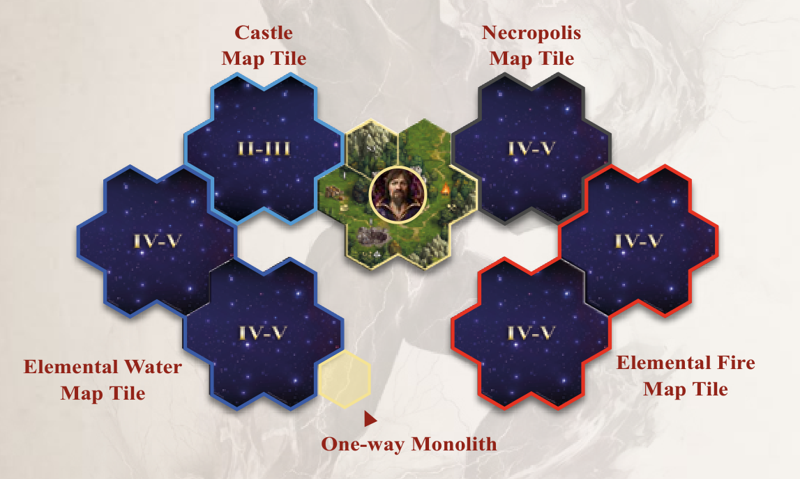
. Она вырезана из стр. 28.- 1 стартовый I: Замок S3, в центре, с портретом героя.
- 1 дальний II–III, случайный из Замок F3, F6, F9. На схеме он слева от центра, синяя рамка.
- 1 ближний IV–V: Некрополис N1. На схеме справа сверху.
- 2 ближних стихийных воды: N16 и N17. На схеме слева, синяя рамка.
- 2 ближних стихийных огня: N14 и N15. На схеме справа, красная рамка.
Жетон одностороннего монолита (Monolith) — как на схеме, под центральным тайлом. Односторонний монолит ведёт только от входа к выходу, стр. 45. В этом сценарии посещение переносит героя в город (Town).
До победы над стражами воды нельзя входить на обычный ближний тайл (Некрополис N1) и на огненные тайлы.
Герой на карте
Поставьте героя на поле города (Town) стартового тайла Замка. Этот тайл уже открыт.
Особые правила
- Герой не получает опыт выше 5-го уровня.
- Карты астрологов не используются.
- Нельзя использовать: Summon Fire Elemental, Summon Air Elemental, Summon Earth Elemental, Summon Water Elemental, Basic Fire Magic, Basic Air Magic, Basic Water Magic, Basic Earth Magic, Fire Magic, Air Magic, Water Magic, Earth Magic. Вытянули такую из колод заклинаний или навыков — сразу сбросьте и возьмите другую.
- Бой с нейтралами на водном тайле: первую вытянутую бронзовую карту, если она есть, замените бронзовыми Ice Elementals, первую серебряную — серебряными Energy Elementals. Затем добавьте Pack Water Elementals.
- Бой с нейтралами на огненном тайле: первую вытянутую серебряную, если она есть, замените серебряными Magma Elementals, первую золотую — лазурными Phoenixes. Затем добавьте Pack Fire Elementals.
- Обелиск (Obelisk): уберите из руки до 2 карт артефактов, заклинаний и навыков или сделайте поиск (3) в колоде артефактов, заклинаний или навыков. После розыгрыша положите на поле чёрный кубик.
- Герою ИИ сдаться нельзя. Герои ИИ ходят после игрока.
- Если карта навыка ИИ велит взять карту, возьмите ещё одну карту ИИ и выполните её.
- Карта ИИ, которая даёт защиту, остаётся на отряде, пока её не используют против одной атаки.
Сложные заклинания ИИ — стр. 17–18. У воды есть Weakness и Cure, у огня Fire Shield и Fireball.
Победа и поражение
Победа: на водных и огненных тайлах каждое поле с локацией либо помечено флагом, либо пустое.
Поражение: герой проиграл любой бой. Отступить из боя с нелазурными нейтралами можно. Конец 16-го раунда — поражение: Повелители стихий разоряют Энрот.
События
1-й раунд:
- Нельзя входить на обычные ближние тайлы и на огненные ближние тайлы.
- Прочитайте «Застряли на планах».
3-й раунд:
- Получите 10 золота и 4 стройматериала.
- Прочитайте «Донесение».
5-й раунд:
- Прочитайте «Царство воды».
8-й раунд:
- Если Lord of Water’s Guardians ещё не разбиты, вы проиграли.
- Прочитайте «Удачная шутка».
10-й раунд:
- Прочитайте «Царство огня».
16-й раунд:
- В конце раунда вы проиграли.
Последнее не помеченное и не пустое поле двух водных тайлов:
- Если поле стережёт нейтральная армия, обычный бой не играйте.
- Бой с Lord of Water’s Guardians.
- После победы герой получает 3 очка хода.
- Теперь можно входить на обычные ближние тайлы и на огненные.
- Уровень трудности каждого боя на карте становится на один выше. Книга отсылает к таблице «Field Difficulty Level Table» на стр. 35 основных правил, не этой книги. Самой таблицы здесь нет.
Последнее не помеченное и не пустое поле двух огненных тайлов:
- Если поле стережёт нейтральная армия, обычный бой не играйте.
- Бой с Lord of Fire’s Guardians.
Сценарий пройден:
- Прочитайте «В последнее царство».
- Соберите колоду к следующему сценарию. Уровень героя в начале каждого сценария снова I. Свитки заклинаний в колоду не входят и дальше не переносятся.
Колода между сценариями
Правила кампании, стр. 16–17. После победы:
1. Верните карты из руки и сброса в колоду.
2. Отложите из них все карты характеристик и карту специальности 1-го уровня.
3. Уберите остальные карты специальностей.
4. Из оставшихся выберите 5 и добавьте к отложенным. Это стартовая колода следующего сценария.
5. Запишите, какие карты в неё вошли.
Поражение: уберите из колоды всё, чего нет в текущей стартовой колоде.
Смена героя. На шаге 3 замените характеристики и специальность 1-го уровня прежнего героя на такие же карты нового. Усиленные характеристики можно переложить: снимите у нового героя обычную карту того же типа и положите усиленную. На шаге 4 любую оставшуюся карту можно заменить стартовым навыком нового героя или Magic Arrow. Вторую копию его навыка так не добавить. Magic Arrow не больше четырёх.
Если карт не хватает
Стр. 17. Карта из подготовки уже в вашей стартовой колоде: можно взять другую. Двум героям ИИ нужна одна и та же карта отряда, а копия одна: соберите армии без неё и добавьте карту в ту армию, с которой начался бой. Навык ИИ другой картой не заменяют. Если нужный навык у вашего героя, заберите его у героя и сделайте поиск (3) в колоде навыков. Нет нужного заклинания у ИИ — замените его на Magic Arrow. Нет заклинания, артефакта или навыка, назначенного вашему герою, — поиск (3) в соответствующей колоде.
Рассказ
Не читайте всё подряд. Каждый кусок открывают в свой момент.
- «Застряли на планах» — в 1-м раунде.
- «Донесение» — в 3-м раунде.
- «Царство воды» — в 5-м раунде.
- «Удачная шутка» — в 8-м раунде.
- «Царство огня» — в 10-м раунде.
- «В последнее царство» — после победы.
Застряли на планах (Stuck in the Planes)
Когда читать: 1-й раунд.
«Это царство воды хуже Плана воздуха!» — крикнул я, и несколько волшебников рядом вздрогнули. Поднял ногу и посмотрел на твёрдую землю. Если эту грязь вообще можно назвать твёрдой. Всё медленно качалось вверх и вниз, будто весь мир стоит на корабле в шторм. Меня вдруг бросило к обочине: морская болезнь накрыла приступами.
«Предки… это уже слишком… нужно лекарство… от дурноты… магическое…» — выдохнул я в сторону волшебников, которые ходили за мной, будто им больше нечем заняться. Геморосс посмотрел на меня озадаченно.
Повелитель воздуха, уходя из своего царства, раздавил за собой Врата в облака. И при всех этих волшебниках никто не предупредил, что другой дороги назад в наш мир нет: надо взять власть над всеми планами стихий. Вот я и пришёл сюда, на План воды, чтобы его покорить.
Наконец мы добрались. Граница «потвёрже» земли, и Барсолар готовит лодку, чтобы смотреть «менее твёрдую» часть.
«Как связь?» — спросил я, борясь с тошнотой. Он только покачал головой.
«Ну и волшебники! Там…»
«Мы всю ночь пробовали, всеми магическими способами!» — перебил он. Голос спокойный, а злость плохо спрятана. «Короля Магнуса мы просто не достаём».
«Значит, сами», — сказал я.
«Да. Боюсь, он решит, что мы пропали».
«Что ж, — начал я, стараясь не звучать слишком довольным, — ничего не поделать, идём дальше». Может, теперь я поведу это войско волшебников без чужих указаний.
«Именно. Я попробую определить, где враг», — ответил он и снова взялся за лодку. По нему было видно: он ещё и природу этого плана изучать собрался. Всю прошлую неделю он сидел в шатре чаще обычного и строчил.
«Шлите донесения регулярно. Связь со своими людьми мы тоже терять не можем», — приказал я и оставил его готовиться. Сведения пригодятся, но больше мне нужно, чтобы он в отлучке не разъезжался мыслями.
Донесение (Report)
Когда читать: 3-й раунд.
Ночью я почти не спал из-за этой проклятой морской болезни. От рвоты худею, а драться, когда земля уходит из-под ног, так и не привык. Странно: хвораю, кажется, только я. Волшебники ходят легко. Краем глаза вижу, как маги хихикают и тычут в меня пальцем. Сначала не обращал внимания, потом тошнота довела, и я спросил, как они это делают. Каждый дал своё средство от дурноты. Ни одно, конечно, не помогло. Сейчас во мне держится только чай и тост.
В отчаянии я рухнул на мокрую землю у шатра. Грязь, которая впитывалась в одежды, уже не имела значения. Одежда и так покрыта срамом трёх с лишним недель: рвота и марш по болоту. Мыться сил не было, да мне и не до того. Немного грязи ещё никого не убило.
Лежу, и на ветку рядом садится сова и начинает ухать. Я сел, раздражённый, посмотрел на неё и чуть не подскочил: она заговорила гнусавым голосом Барсолара.
«Господин Тарнум. Я уже далеко ушёл. Элементали перекрывают здесь почти каждый проход. Они бьют без вопросов, так что я пока держусь от них в стороне. Зато по воде плавает целое состояние. Часть собранного я отправил».
Я огляделся и не понял, о чём он. Сова клюнула маленький мешочек на лапе и уронила мне на колени, потом улетела. Я едва развязал его, как он лопнул мне в лицо и чуть не засыпал грудой дерева и золота.
Царство воды (Realm of Water)
Когда читать: 5-й раунд.
Геморосс завтракал прямо передо мной, а мне этим утром хватало чая. Особый настой, единственное, что не давало свалиться от голода.
«Я слышал, вы звали Предков. Зачем?» — спросил он.
«Потому что, — я сделал вид, что долго пью, пока подбирал ответ, — вселенная сейчас меня ненавидит. Решил: почему бы не позвать каких-нибудь богов».
«Любопытный выбор. Боги варваров».
«Мне забавно». Я пожал плечами и заметил подозрительный взгляд наставника магов.
«Что ж, оставлю вас с чаем, господин Тарнум», — сказал Геморосс и быстро откланялся. В последних словах было что-то странное.
Не успел я это обдумать, как мне на руку село какое-то существо. Слышать Барсолара из клюва совы по-прежнему дико, но сегодня я поймал себя на том, что привыкаю.
«Повелитель воды ушёл», — доложила сова Барсолара.
Дальше я не слушал: в больном желудке что-то провалилось. Не рано ли я сунулся на планы стихий? Если Повелители уже ушли в мой мир, какой разгром они учинят, пока я овладею стихиями?
Удачная шутка (Good Joke)
Когда читать: 8-й раунд.
Когда я последний раз был здоров, не вспомню. Проснулся и час смотрел на чайник у огня. Ещё один день этой бурды я не вынесу, и сразу велел гремлину принести вина. «И побольше!» — крикнул я. Раз уж меня всё равно выворачивает, пусть я буду ещё и пьян.
На другое утро я подошёл к волшебникам. Они сидели вместе и завтракали.
Я улыбнулся, поставил на стол початую бутылку вина. Потом сгрёб горсть яиц, кинул сверху колбасы и запихнул всё в рот. У них отвисли челюсти. Они смотрели, как я давлюсь едой, откидываюсь и рыгаю в небеса.
«Вам, кажется, лучше», — сказал Геморосс.
«Да», — сказал я, забрал вино и пошёл прочь. Через несколько шагов остановился и крикнул назад: «Если мне опять станет дурно, я приду за тобой, Геморосс. Тебе не понравится». Я ушёл, а волшебники зашептались.
Да, я понял: они что-то подмешивали мне в чай, оттого и тошнило. Хорошая шутка, если вспомнить, как я с ними обращался.
Шутку я стерплю. Один раз.
Царство огня (Realm of Fire)
Когда читать: 10-й раунд.
Я вышел из шатра и оглядел этот странный мир. Одни озёра бурлящей лавы, обугленные горы и пламя до горизонта, а может, и дальше. С каждым вдохом я тянул обжигающий воздух: сухой, пота нет, но так жарко, что хочется содрать одежды.
На План огня я шёл с опаской. Воздух, воду и землю я ещё понимаю, а целый мир из пламени? Перед переходом я настоял идти одним. Незачем гнать всех в портал, чтобы на той стороне загорелись одежды и волосы. А нашёл царство в ярком оранжевом свете, и пламя лижет ноги, как высокая трава.
По-своему это было красиво.
Мимо шатра прошёл Барсолар: только вернулся с обхода этого плана. Когда мы прибыли, он полез в опыты и сказал, что должен сверить записи с другими волшебниками. Я, к своему удивлению, спросил: «Что узнал?»
Барсолар запнулся. Смотрел так, будто проверял, не шучу ли я.
«Что? — сказал я. — Мне нельзя интересоваться твоей работой?»
«Раньше вы не интересовались».
«Раньше она не была интересной», — ответил я с ухмылкой, чтобы он понял шутку. Увы, чувства юмора у Барсолара по-прежнему не было. Или было? Я до сих пор подозреваю, что зелье в чай, из-за которого меня мутило весь План воды, подстроил Барсолар, а не Геморосс.
«Итак, — начал Барсолар, — я всё думал, почему здешний огонь нас не жжёт. Даже бумагу не жжёт, если только…» Он вынул из одежды лист пергамента, свернул трубкой и держал над пламенем у ног. Сначала ничего. Потом бумага вспыхнула так быстро, что он отшвырнул её, пока не обожгло пальцы.
«Как ты это сделал?» — спросил я.
«Огонь слушает мысли. Хотите, чтобы что-то сгорело, — сгорит. Он почти живой, как элементали, только не разумный», — сказал Барсолар.
Я был впечатлён. Хлопнул его по плечу: «Хорошая работа!»
В последнее царство (Into the Last Realm)
Когда читать: После победы в сценарии.
Мы уже собирались на План земли, когда Барсолар вернулся из странствий.
«Ну, есть что новое?» — спросил я, когда он выпил холодной воды.
«Почти ничего, кроме…» — он полез в одежду и вынул короткий обломок дерева, с одного конца сломанный и в щепках.
«Что это?»
«Основание посоха волшебника. Знаки внизу я даже узнаю. Посох знаменитого мага, он пропал почти двести лет назад».
«И что он тут делает?»
«История такая: сильные маги хотели создать идеального голема и искали ход на План земли, где, возможно, лежит самое твёрдое вещество во вселенной. Многие думают, они погибли на заклинании. Или оказались на дне океана, или ещё где. Другие думают, они дошли до Плана земли и не нашли дороги назад».
«Знакомо звучит», — сказал я.
«Да. Всё равно это было двести лет назад…»
«Ты пробовал найти их магией?» — перебил я.
«Их здесь нет. И даже если заклинание сработало, они уже мертвы», — сказал Барсолар.
«Не… здесь», — повторил я про себя. Если бы заклинание не сработало, этого обломка дерева здесь бы не было.
«Жаль, — сказал я и похлопал Барсолара по спине. — Помощь бы не помешала».
Masters of the Elements · 3. Hard Place
Кампания · 1 игрок · Сопряжение
Книга миссий Сопряжения. Сценарий: стр. 32–33. Схема: стр. 34. Рассказ: стр. 35–37. Правила кампании: стр. 16–18.
3. Hard Place
Источник: книга миссий Сопряжения, стр. 32–37: подготовка 32–33, схема 34, рассказ 35–37. Правила кампании — стр. 16–18. Это одиночная кампания. Игроков: 1.
Длина
10 раундов.
Подготовка игрока
Фракция: Сопряжение (Conflux). Других в этом сценарии нет.
Герой: Tarnum или любой герой Сопряжения. Отдельной карты Tarnum в книге нет: берите героя Сопряжения.
Армия на старте: нет.
Ресурсы: 15 золота.
Постройки города (Town): бронзовое жилище (Dwelling), цитадель (Citadel), гильдия магов (Mage Guild), магический университет (Magic University). Обычные эффекты старта с уже построенной гильдией магов не выполняйте. Какие именно это эффекты, книга не перечисляет.
Доход по правилам кампании, стр. 17: 10 золота, 0 стройматериалов, 0 драгоценностей. Бонус сценария заменяет обычный стартовый бонус сложности.
Бонус, один из трёх. Карты кладут в колоду Силы и Магии:
- Summon Fire Elemental и Basic Fire Magic.
- Summon Water Elemental и Basic Water Magic.
- Summon Air Elemental и Basic Air Magic.
Золотое жилище, Magical Pyre, строить нельзя, пока это не откроет событие рассказа.
Подготовка героев ИИ
Враги: First Overlord и Second Overlord. Обоих изображают две модели героя Темницы. Держите их под рукой: на карту они выходят по событиям.
Армии:
- First Overlord: Pack Earth Elementals (колода призыва), Few Troglodytes, Few Evil Eyes, Few Medusas.
- Second Overlord: Pack Medusas, Pack Manticores, Few Black Dragons, Pack Earth Elementals (колода призыва), серебряные Mummies, 1 карта Arrow Tower, 1 карта Gate, 3 карты Wall.
Troglodytes, Evil Eyes, Medusas, Manticores и Black Dragons — карты Темницы. Мантикоры «Набора целей 2» заменяют мантикор Темницы. Earth Elementals — колода призыва Сопряжения. Mummies — нейтралы базы, серебряный ярус. Arrow Tower, Gate и Wall — карты осады базы.
Колоды:
- First Overlord: 3 карты Might, 1 карта Magic.
- Second Overlord: 2 карты Might, 2 карты Magic, 3 карты Skill.
- Общая колода заклинаний: 1 Weakness, 1 Fire Shield.
- Навык: Armorer.
Armorer. Когда навык срабатывает, положите жетон защиты на отряд ИИ с самой высокой защитой. Жетон лежит, пока отряд не отразит одну атаку. Если жетон уже есть, берите следующего по убыванию защиты. При равной защите — отряд старшего яруса, затем с большим уроном.
Если подготовка не говорит, что колода только у одной армии, колода общая. После боя смешайте использованные и неиспользованные карты обратно, стр. 17.
Карта
Римская цифра на обороте — тип тайла. I стартовый, II–III дальний, IV–V ближний.
Соберите, как на картинке
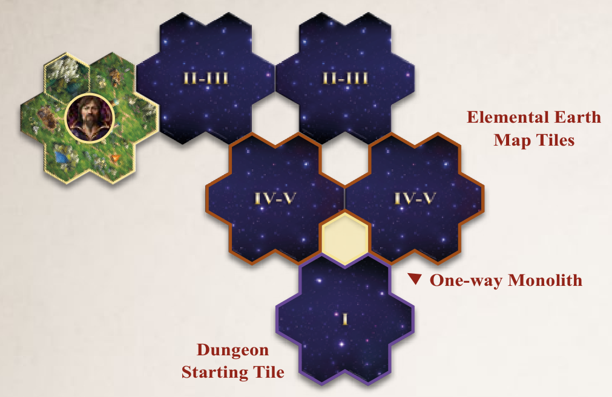
. Она вырезана из стр. 34.- 2 стартовых I: Сопряжение S8 (в гиде подписан S5) слева, с героем, и Темница S2 снизу.
- 2 дальних II–III, случайные из Темница F2, F5, F8. На схеме они сверху.
- 2 ближних стихийных земли: N20 и N21. На схеме в середине, коричневая рамка.
Жетон одностороннего монолита (Monolith) — как на схеме, между земными тайлами и стартом Темницы, стрелка вниз. Односторонний монолит ведёт только от входа к выходу, стр. 45. Куда именно он выводит, кроме картинки, книга не пишет.
Герой на карте
Поставьте героя Сопряжения на поле города (Town) стартового тайла Сопряжения. Этот тайл уже открыт.
Модели повелителей на старте на карте нет.
Особые правила
- Карты астрологов не используются.
- За каждого побеждённого врага ИИ получите 14 стройматериалов и 2 драгоценности.
- Обелиск (Obelisk): уберите из руки до 2 карт артефактов, заклинаний и навыков или сделайте поиск (3) в колоде артефактов, заклинаний или навыков. После розыгрыша положите на поле чёрный кубик.
- Из колод нейтралов уберите все карты, кроме этих:
- бронзовые: Rogues, Zombies, Wraiths, Harpies, Evil Eyes, Troglodytes, Sprites;
- серебряные: Nomads, Vampires, Liches, Medusas, Minotaurs, Energy Elementals;
- золотые: Enchanters, Dread Knights, Ghost Dragons, Manticores, Black Dragons.
- Second Overlord не двигается. Про First Overlord книга этого не пишет: его ведут обычные правила хода героя ИИ.
- Герою ИИ сдаться нельзя. Герои ИИ ходят после игрока.
- Если карта навыка ИИ велит взять карту, возьмите ещё одну карту ИИ и выполните её.
- Карта ИИ, которая даёт защиту, остаётся на отряде, пока её не используют против одной атаки.
Сложные заклинания ИИ — стр. 17–18. Здесь Weakness и Fire Shield.
Победа и поражение
Победа: разбить обе вражеские армии.
Поражение: герой проиграл любой бой. Отступить из боя с нелазурными нейтралами можно. Конец 10-го раунда — поражение.
Когда сценарий пройден, уберите из колоды карту Summon Elemental и карту Basic Magic, которые дал бонус.
События
1-й раунд:
- Главный герой теряет 1 к передвижению (Movement).
- Прочитайте «Тяжело и твёрдо».
3-й раунд:
- Главный герой теряет ещё 1 к передвижению.
- Прочитайте «Тяжёлые времена рождают жёстких людей».
Книга не пишет, снимается ли штраф 1-го раунда. Напечатаны два отдельных потери, по 1.
5-й раунд:
- Прочитайте «Тяжёлая правда».
- Поставьте модель First Overlord на жетон монолита (Monolith).
7-й раунд:
- Прочитайте «Трудно поверить».
- После дохода этого раунда потеряйте 10 золота.
- До 9-го раунда соберите 8 стройматериалов и 4 драгоценности.
9-й раунд:
- После дохода потеряйте 8 стройматериалов и 4 драгоценности. Если ресурсов нет, вы проиграли.
- Постройте золотое жилище (Dwelling) Magical Pyre бесплатно.
- Прочитайте «Тяжёлые начала».
10-й раунд:
- В конце раунда вы проиграли.
Открыт стартовый тайл Темницы:
- Поставьте модель Second Overlord на поле города (Town) этого тайла. Этот герой ИИ не двигается.
Сценарий пройден:
- Уберите из колоды Summon Elemental и Basic Magic бонуса.
- Соберите колоду к следующему сценарию. Уровень героя в начале каждого сценария снова I. Свитки заклинаний в колоду не входят и дальше не переносятся.
Колода между сценариями
Правила кампании, стр. 16–17. После победы:
1. Верните карты из руки и сброса в колоду.
2. Отложите из них все карты характеристик и карту специальности 1-го уровня.
3. Уберите остальные карты специальностей.
4. Из оставшихся выберите 5 и добавьте к отложенным. Это стартовая колода следующего сценария.
5. Запишите, какие карты в неё вошли.
Поражение: уберите из колоды всё, чего нет в текущей стартовой колоде.
Смена героя. На шаге 3 замените характеристики и специальность 1-го уровня прежнего героя на такие же карты нового. Усиленные характеристики можно переложить: снимите у нового героя обычную карту того же типа и положите усиленную. На шаге 4 любую оставшуюся карту можно заменить стартовым навыком нового героя или Magic Arrow. Вторую копию его навыка так не добавить. Magic Arrow не больше четырёх.
Если карт не хватает
Стр. 17. Карта из подготовки уже в вашей стартовой колоде: можно взять другую. Двум героям ИИ нужна одна и та же карта отряда, а копия одна: соберите армии без неё и добавьте карту в ту армию, с которой начался бой. Навык ИИ другой картой не заменяют. Если нужный навык у вашего героя, заберите его у героя и сделайте поиск (3) в колоде навыков. Нет нужного заклинания у ИИ — замените его на Magic Arrow. Нет заклинания, артефакта или навыка, назначенного вашему герою, — поиск (3) в соответствующей колоде.
Рассказ
Не читайте всё подряд. Каждый кусок открывают в свой момент.
- «Тяжело и твёрдо» — в 1-м раунде.
- «Тяжёлые времена рождают жёстких людей» — в 3-м раунде.
- «Тяжёлая правда» — в 5-м раунде.
- «Трудно поверить» — в 7-м раунде.
- «Тяжёлые начала» — в 9-м раунде.
Тяжело и твёрдо (Hard and Heavy)
Когда читать: 1-й раунд.
«Наконец твёрдая земля!» Это были первые слова, когда я ступил на План земли. С тех пор прошло несколько недель, а сборы покорить это царство тянулись куда дольше, чем мы ждали. Причина лежала на виду. Как и всех, меня первым делом прижало, будто к лодыжкам привязан свинцовый груз и бесконечно тянет вниз. Маги жаловались, что стали тяжелее и вялее. Скоро я заметил: они выдыхаются быстрее, и днём приходится делать больше привалов.
Как в прошлый раз, Барсолар ушёл смотреть окрестности. Я отпустил его одного с условием: пусть ищет хозяев того странного посоха. Или то, что от них осталось. Сегодня я наконец снова увидел его сову. На лапе была грубо набросанная карта края.
«Повелитель земли оставил Повелителей подземелий стеречь царство, пока его нет», — объяснила сова, дав мне посмотреть карту. Она сама начинает говорить через паузу, или Барсолар правит ею издали? С карты я разобрал немного: база врагов далеко на юго-востоке. А между нами, тоже к югу, стоит армия и занимает тамошние города.
«Повелители подземелий, значит». Я взвешивал его слова и кормил птицу остатками овса от завтрака. С этими тварями Темницы я дрался давно. Они почти всю жизнь проводят под землёй, в тёмных ходах, и в темноте бьются хорошо. Даже предпочитают её. Часто бьют из засады, а не лицом к лицу.
«Чести в них нет. Им бы только победить!» — воскликнул я, скрестил руки и покачал головой. Но жалобой дела не сделаешь. Я снова смотрел в карту и думал, куда ударить.
Тяжёлые времена рождают жёстких людей (Hard Times Create Hard People)
Когда читать: 3-й раунд.
Утром я вышел из шатра и сразу расхохотался. Чтобы сбросить часть тяжести, которую таскают весь день, многие маги бросили пыльные одежды и ходят с голым торсом. Столько бледной плоти разом я не видел. Но признаю: почти два месяца на Плане земли, и эти тощие начинают приходить в форму.
Белые животы чуть опали, палки-руки начали обрастать мясом.
Я сорвал одежду и пошёл между ними.
«Кто хочет бороться?» Несколько магов даже смотрели так, будто хотят, но никто не вышел. Смелость почти нашлась.
«Ха! Я ещё сделаю из вас варваров!» — крикнул я весело. Краем глаза увидел: к лагерю идёт группа крепких людей. Позади, с большим трудом, тащилась фигура куда тоньше, но очень знакомая.
«Барсолар?!» — крикнул я и побежал к ним. Он был вымотан и покрыт той же грязью, что остальные волшебники. Но в поясе он похудел, лицо стало чётче. Недели ходьбы, видно, ему на пользу.
«Мы все решили, что они мертвы, — начал он, жадно допив флягу, которую я ему дал. — А когда они вышли из большой пещеры, где я хотел встать лагерем, я бы ни за что не угадал: это те самые маги, что пришли на План земли делать идеального голема».
Я подошёл к новым людям и хотел назваться, но меня сразу перебили.
«Приветствую, Тарнум! Вы именно такой, как описывал Барсолар… да», — начал один и оглядел меня с головы до ног. Я подозрительно глянул на Барсолара, но он был слишком измотан, чтобы я понял, о чём он думает.
«Мы рады видеть других магов. Я Реамус», — сказал их старший.
Мы сели с ними, ели и много говорили. Потом Реамус сказал такое, что половина поперхнулась.
«Что ты сказал?» — у Барсолара расширились глаза.
«Я просто поражён, что за шестнадцать лет явилось столько новых лиц, — повторил Реамус. — Но, право, некоторые из вас выглядят старыми».
«Невозможно… они же пропали на двести… Кто-то ошибся», — лихорадочно думал я.
«Но вас не было…» — начал Понифик, мастер големов.
«Так долго!» — перебил я. Если эти люди и правда не понимают, сколько их не было, выпаливать это не способ им сказать.
«Как вы выжили?» — быстро спросил я, пока кто-нибудь не проговорился.
«Мы строили големов в солдаты. Два стража на мага. Одного уничтожат — делаем другого. Увы, идеального голема мы так и не нашли, как сделать. Но если мы…» — Реамус с радостью пустился объяснять. Я слушал их весь вечер и гасил вопросы других магов. После еды собрал советников.
«Как это возможно? Как они верят, что их не было всего шестнадцать лет?» Я уже чуял, что ответ мне не понравится. Геморосс, наставник магов, покачал головой. Понифик и остальные тоже. Только у Барсолара, судя по серьёзному лицу, была мысль.
«Что, Барсолар?» Он изучал планы стихий даже пока ходил по ним.
«Теорию надо проверить опытами, господин Тарнум», — уклончиво сказал Барсолар.
«Плевать мне на опыты, Барсолар! Мне нужны ответы!» — крикнул я и ударил кулаком по столу. «Даже если не уверен. Что здесь творится?»
«Время, господин Тарнум», — спокойно начал он, и искры с его рук сложили образы двух миров. Сначала солнце на обоих всходило и садилось разом, а с каждым кругом всё виднее: один отстаёт. «Планы стихий устроены иначе, чем наш мир. Логично, что и время здесь другое», — продолжал Барсолар. Волшебники закивали: мысль коллеги они уже ловили.
«То есть, — сказал я, — здесь всё движется медленнее, чем у нас?»
«Да. Или время у нас бежит быстрее. Так или иначе, двести лет нашего мира — это шестнадцать здешних. К возвращению у нас пройдёт хотя бы пара десятков лет». Несколько советников уронили кубки.
Я закрыл глаза и надеялся, что за это время Повелители стихий не уничтожат мир.
Тяжёлая правда (The Hard Truth)
Когда читать: 5-й раунд.
Несколько недель назад я решил сказать гостям правду. Рты держать становилось всё труднее, и лучше, если скажу я. Я был как мог мягок, но нет хорошего способа сказать человеку, что вся его семья и все, кого он знал, давно мертвы и похоронены. Часть этого чувства я знаю. Моя семья давно ушла, друзья тоже. Даже мир так переменился, что я уже не помню, какой была жизнь, когда я был ребёнком.
Утром я собрал помощников и решил назначить Реамуса заместителем: годы войны с элементалями, и человек он дельный. На это место он подходил. И меньше будет думать о своём положении. Сильнее становишься, только глядя правде в лицо. Я был уверен, что ему хватит сил. Но не обязательно сегодня.
И надоедает он меньше прочих помощников. Не пойму, почему с ним мне легче, чем с остальными, тем более что его имя так удобно коверкать.
Мы уже близко к цели: покорить все четыре плана стихий. Я созвал совет, как бить Повелителей.
«К сожалению, господин Тарнум, — сказал Реамус, — их четверо, а вы один».
«У Повелителей стихий власть над своими стихиями, какой не бывало», — добавил другой волшебник, лицо я едва узнал.
«Верно. Даже поодиночке у каждого сила за гранью воображения. А когда они вместе… не думаю, что мы их одолеем», — подхватил Реамус.
«Должен быть способ, — сказал я. Предки не послали бы меня, если бы это было невозможно. — Нам нужно то, чего у них нет. Встать с ними грудь в грудь я смогу, когда возьму этих элементалей под контроль. А нужно оружие, от которого у них нет защиты».
«Мы поработаем, господин», — сказал Реамус.
Трудно поверить (Hard to Believe)
Когда читать: 7-й раунд.
Барсолар и Реамус пришли ко мне ночью, оба серьёзные.
«Мы только что сложили теории. Они указывают на новый вид элементаля, который может помочь против Повелителей стихий», — сказал Реамус.
«Если он есть, — добавил Барсолар. — Объясняй». Он кивнул Реамусу начинать.
«Годы на планах стихий дали мне довольно случаев ставить опыты над их природой. Я давно думал: если воду, воздух, огонь и землю можно так разнять, то что держит их вместе? Что связывает их, скажем, в нашем мире?»
«Что?» — спросил я.
«Магия», — сказал Барсолар.
Я дал понять, что сомневаюсь. У волшебника магия — ответ на любой вопрос.
«Да, — продолжал Реамус, — доказать я не мог, пока не поговорил с Барсоларом о его опытах с огнём. Мы знаем, огонь не живой, но он слышит мысли и отвечает на них. Может, так Повелители и правят своим миром легко: они связаны с самой стихией. Мы думаем, магия и, может, даже мысль — такие же стихии, как огонь и вода. Если так, может быть План магии».
«И элементали магии!» — добавил Барсолар.
Выглядело натянуто, но я разрешил двоим делать что нужно, лишь бы докопаться до правды.
Чем бы Барсолар и Реамус ни занялись, они забрали всех моих помощников и немало ресурсов. Строят что-то вроде магических порталов, которыми мы ходим между планами. Надеюсь, это не рванёт им в лицо. Или хуже.
Тяжёлые начала (Hard Beginnings)
Когда читать: 9-й раунд.
Опыт, которым искали План магии, сошёлся прошлой ночью: Барсолар и Реамус готовились включить устройство, которое строили. Вместо взрыва, которого я боялся, вышел скорее писк. Ни молнии, ни огня, ничего.
«Может, мы что-то упустили», — сказал Реамус и погладил бороду.
«Может, Плана магии нет», — сказал я. Я ошибался.
Мгновение спустя там, где ничего не было, стояла высокая фигура в чёрной одежде и красном тюрбане. Я подошёл и сразу увидел: лица нет. Только клубок искрящихся огней. Она стояла неподвижно. Если у неё и были ноги, сходить с портала, который сделали Барсолар и Реамус, она не стала.
«Приветствую, — сказал я, — мы…»
«Я ЗНАЮ. И ЗНАЮ, ЗАЧЕМ ВЫ МЕНЯ ПОЗВАЛИ». Слова я услышал не ушами, а в голове. И как-то знал, что они от этого существа. Не успел я сложить следующий вопрос, как услышал снова.
«Я ПСИХИЧЕСКИЙ ЭЛЕМЕНТАЛЬ. ДА, Я С ПЛАНА МАГИИ». Колени ослабли, будто я бежал весь день. Я опёрся на посох, чтобы не упасть.
«Он с Плана магии», — сказал Реамус.
«Со мной тоже говорит», — добавил Барсолар.
«Это психический элементаль, а бывают ещё элементали магии!»
«Я ГОВОРЮ СО ВСЕМИ ВАМИ, КАК И ВЫ ВСЕ ГОВОРИТЕ СО МНОЙ».
Я поднял руки и крикнул: «Стойте! Все прекратите думать!» Психическому элементалю я сказал: «Нам нужно поговорить».
«НАЕДИНЕ. ДА, Я ЗНАЮ».
«…»
«ХОРОШО. Я ПЕРЕСТАНУ ОТВЕЧАТЬ НА ВОПРОСЫ РАНЬШЕ, ЧЕМ ВЫ ИХ ЗАДАДИТЕ, И ДАМ ВАМ ГОВОРИТЬ».
Masters of the Elements · 4. Master of the Elements
Кампания · 1 игрок · Сопряжение
Книга миссий Сопряжения. Сценарий: стр. 38–39. Схема: стр. 40. Рассказ: стр. 41–43. Правила кампании: стр. 16–18.
4. Master of the Elements
Источник: книга миссий Сопряжения, стр. 38–43: подготовка 38–39, схема 40, рассказ 41–43. Правила кампании — стр. 16–18. Это последний сценарий кампании. Игроков: 1.
Длина
14 раундов.
Подготовка игрока
Фракция: Сопряжение (Conflux). Других в этом сценарии нет.
Герой: Tarnum или любой герой Сопряжения. Отдельной карты Tarnum в книге нет: берите героя Сопряжения.
Армия на старте: нет.
Ресурсы: 30 золота.
Постройки города (Town): ратуша (Town Hall), цитадель (Citadel), бронзовое жилище (Dwelling), серебряное жилище, гильдия магов (Mage Guild), магический университет (Magic University). Обычные эффекты старта с уже построенной гильдией магов не выполняйте. Какие именно это эффекты, книга не перечисляет.
Доход по правилам кампании, стр. 17: 10 золота, 0 стройматериалов, 0 драгоценностей. Бонус сценария заменяет обычный стартовый бонус сложности.
Бонус, один из двух:
- В колоду Силы и Магии: 2 карты Summon Elemental и 2 карты Basic Magic. Сочетание стихий любое.
- Поиск (4) в колоде заклинаний, трижды.
Подготовка героев ИИ
Враги: Lord of Air, Lord of Earth, Lord of Fire, Lord of Water.
Армии. Звезда яруса — нейтрал этого яруса, если не сказано иначе.
- Lord of Air: бронзовые Storm Elementals (Сопряжение), золотые Archangels (нейтралы базы), 2 лазурных Azure Dragons (нейтралы базы).
- Lord of Earth: Pack Troglodytes, Pack Black Dragons, Pack Manticores (карты Темницы; мантикоры «Набора целей 2» их заменяют), лазурные Crystal Dragons (нейтралы базы).
- Lord of Fire: серебряные Magma Elementals (Сопряжение), лазурные Phoenixes (Сопряжение), золотые Diamond Golems (нейтралы базы).
- Lord of Water: бронзовые Ice Elementals (Сопряжение), золотые Enchanters (нейтралы; карта Enchanters есть и в базе, и в Сопряжении, книга метит золотой звездой), лазурные Azure Dragons (нейтралы базы).
Колоды:
- Каждый повелитель: 4 карты Magic и 3 карты Might. Книга пишет «Lords’ Decks» одним составом.
- Заклинания воздуха: Lightning Bolt, Chain Lightning.
- Заклинания земли: Stone Skin, Blind.
- Заклинания огня: Fire Shield, Fireball.
- Заклинания воды: Weakness, Prayer. Для Prayer берите вариант атаки (Attack).
Если подготовка не говорит, что колода только у одной армии, колода общая. После боя смешайте использованные и неиспользованные карты обратно, стр. 17.
Карта
Римская цифра на обороте — тип тайла. I стартовый, II–III дальний, IV–V ближний.
Соберите, как на картинке
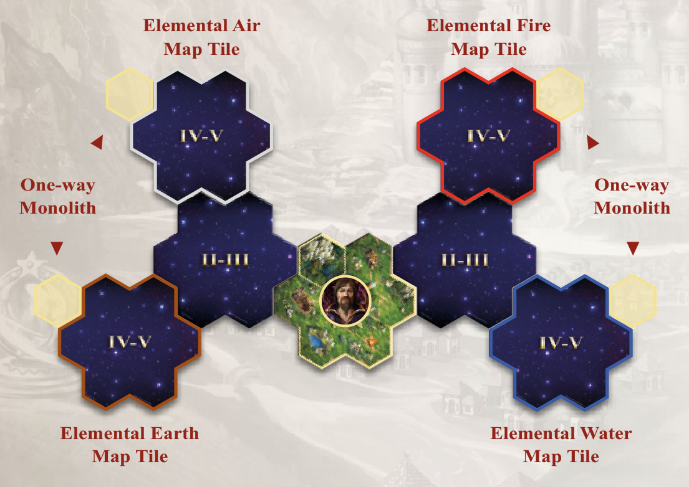
. Она вырезана из стр. 40.- 1 стартовый I: Сопряжение S8 (в гиде подписан S5), в центре, с героем.
- 2 дальних II–III, случайные из пула: Замок F3, F6, F9; Башня #F1, #F2, #F3; Набор целей #F7; Крепость F13, F14, F15; Оплот F10, F11, F12. На схеме они слева и справа от центра.
- 4 ближних стихийных IV–V, по одному случайному каждого вида: огонь N14 или N15 (справа сверху, красная рамка), вода N16 или N17 (справа снизу, синяя), воздух N18 или N19 (слева сверху), земля N20 или N21 (слева снизу, коричневая).
4 жетона одностороннего монолита (Monolith) — как на схеме: два у воздушного тайла и два у огненного. Посещение переносит героя в город (Town). Обычный односторонний монолит ведёт от входа к выходу и назад не пускает, стр. 45. Сценарий заменяет цель: всегда город.
Герой на карте
Поставьте героя Сопряжения на поле города (Town) стартового тайла. Этот тайл уже открыт.
Моделей повелителей на карте нет. Бой с ними начинается на последнем не помеченном и не пустом поле их тайла.
Особые правила
- Карты астрологов не используются.
- За каждую побеждённую армию врага ИИ получите 2 опыта (Exp). Книга не переводит это в уровень.
- Герою ИИ сдаться нельзя. Герои ИИ ходят после игрока.
- Если карта навыка ИИ велит взять карту, возьмите ещё одну карту ИИ и выполните её.
- Карта ИИ, которая даёт защиту, остаётся на отряде, пока её не используют против одной атаки.
Сложные заклинания ИИ — стр. 17–18. Здесь Lightning Bolt, Chain Lightning, Stone Skin, Blind, Fire Shield, Fireball, Weakness и Prayer.
Победа и поражение
Победа: выиграть все бои с вражескими армиями.
Поражение: герой проиграл любой бой. Отступить из боя с нелазурными нейтралами можно. Конец 14-го раунда — поражение: надежды нет, мир уничтожен.
Это последний сценарий кампании. Следующего книга не называет.
События
1-й раунд:
- Прочитайте «Наконец дома».
- Герой сразу получает один уровень опыта. Вместо обычного поиска (2) сделайте поиск (4).
3-й раунд:
- Прочитайте «Четыре элементаля».
6-й раунд:
- Прочитайте «Королевское подкрепление». В конце куска есть выбор армии.
9-й раунд:
- Прочитайте «Прибытие короля Магнуса».
- После дохода потеряйте 10 золота, затем получите 3 драгоценности.
14-й раунд:
- В конце раунда вы проиграли.
Последнее не помеченное и не пустое поле воздушного тайла:
- Если поле стережёт нейтральная армия, обычный бой не играйте.
- Бой с Lord of Air. Затем герой получает 2 очка хода.
То же на земном тайле — бой с Lord of Earth и 2 очка хода. На огненном — Lord of Fire и 2 очка хода. На водном — Lord of Water и 2 очка хода.
Сценарий пройден:
- Прочитайте «Тайны Сопряжения».
Колода между сценариями
Общие правила кампании, стр. 16–17. Следующего сценария книга не даёт. Если колоду всё же записываете, шаги те же, что после прошлых сценариев: вернуть руку и сброс, оставить характеристики и специальность 1-го уровня, убрать прочие специальности, выбрать ещё 5 карт, записать состав. Уровень в начале сценария снова I. Свитки заклинаний в колоду не входят.
Если карт не хватает
Стр. 17. Карта из подготовки уже в вашей стартовой колоде: можно взять другую. Двум героям ИИ нужна одна и та же карта отряда, а копия одна: соберите армии без неё и добавьте карту в ту армию, с которой начался бой. Навык ИИ другой картой не заменяют. Если нужный навык у вашего героя, заберите его у героя и сделайте поиск (3) в колоде навыков. Нет нужного заклинания у ИИ — замените его на Magic Arrow. Нет заклинания, артефакта или навыка, назначенного вашему герою, — поиск (3) в соответствующей колоде.
Рассказ
Не читайте всё подряд. Каждый кусок открывают в свой момент.
- «Наконец дома» — в 1-м раунде.
- «Четыре элементаля» — в 3-м раунде.
- «Королевское подкрепление» — в 6-м раунде. В конце куска выбор армии.
- «Прибытие короля Магнуса» — в 9-м раунде.
- «Тайны Сопряжения» — после победы.
Наконец дома (Finally Back Home)
Когда читать: 1-й раунд.
Дорога домой вышла длиннее, чем ждут. Но это уже другая история. Мы наконец на своём плане бытия, и я рад как никогда.
Я велел накрыть стол снаружи и позавтракать с помощниками. Сидел и радовался солнцу, траве, ветру. Чистота планов стихий резко отличается от дома. Впервые я понял: на планах стихий нет запахов. Здесь воздух несёт запах. Цветы, дождь, гнилые листья, грязь. Всё такое… настоящее. Даже волшебники были бодрее обычного и несли доклады о том, что нашли. Довольно скоро один маг прикинул, сколько нас не было в этом мире.
«Тридцать лет?! — крикнул я, когда он назвал грубую оценку. — За тридцать лет столько может перемениться…»
«Но дело наше не переменилось. Повелителей стихий всё равно надо остановить. Если не разобьём их, всё, что мы потеряли, зря», — сказал Барсолар и поднял нож для масла, вымазанный вареньем.
«Король Магнус мог погибнуть, пока нас не было», — вдруг понял я и повернулся к Понифику. «Немедленно выступи в Бракаду».
«Сейчас?» — спросил Понифик.
«Да, сейчас. Иди». Я его торопил: он мялся. Нам нужно знать, как обстоят дела, если идти дальше. При своём отряде охраны Понифик должен пройти вражеские линии без беды.
Над лагерем носились пикси, хихикали и визжали в какой-то детской игре. Одна нырнула ниже, чтобы её не осалили, и ногой опрокинула мою миску каши.
«Проклятые пикси!» — крикнул я им вслед. Встал и соскребал с одежды густые комья завтрака. «Ищите другое место для игр, или, клянусь Предками, я снесу вам крылья молнией!» Пикси умчались и захихикали ещё пуще.
С одежды это так просто не сойдёт. Я откланялся и пошёл к шатру. А значит, пошёл рядом с Понификом, которого только что отослал. Едва я увидел его торжествующую улыбку, захотелось дать ему пощёчину.
«Что?» — рявкнул я.
«Ну надо же, как вы переменились с тех пор, как приняли командование.
Борода аккуратно подстрижена, и я слышал, утром вы мылись. А теперь носитесь из-за грязной одежды!»
Я посмотрел на себя и к стыду понял: Понифик прав. Я стал одним из них. Я волшебник. Если бы не рост, чужой ни за что не заподозрил бы, что я был варваром. Я сорвал заляпанную одежду и швырнул её мастеру големов.
«Сделай полезное дело и отдай это вычистить!» — бросил я.
Понифик рассмеялся и пошёл своей дорогой, слишком довольный победой, чтобы обижаться.
Четыре элементаля (Four Elementals)
Когда читать: 3-й раунд.
В день прибытия я послал элементалей магии смотреть землю и искать врага.
Сегодня они вернулись и принесли любопытные вести.
«Повелитель огня поднял огромные вулканы, — начал первый, тот, что вернулся с северо-востока. — Он залил землю лавой. Его Огненные поля расползаются каждый день и жрут всё на пути».
«А Повелитель воздуха занял северо-запад, — подхватил следующий. — Каждый день он стелет по земле свои Магические облака. С виду безобидно, по ним даже можно ходить… но мир отвергает его стихию. Земля медленно теряет форму и скоро пропадёт совсем».
«Во влажных землях на юго-востоке, — вступил третий разведчик, — Повелитель воды. Земля там болотистая. Реки и озёра выходят из берегов и становятся Светлыми омутами. Скоро весь край будет у него».
Я кивнул докладу и повернулся к последнему элементалю магии. Он пришёл с юго-запада, где нашёл Повелителя земли.
«Господин Тарнум, земля под властью Земли крошится и сохнет. Реки пересохли. Озёр осталось немного, знак, что Повелитель земли ещё не взял край целиком. Зато земля трясётся каждый день. Этого, конечно, следовало ждать».
«Да», — согласился я.
«Но есть новость хуже», — продолжал элементаль магии.
«Какая?»
«Повелители стихий и правда стали союзниками. Они делят ресурсы, сведения и даже войска. Каждый может призывать все четыре вида элементалей, так что ждите огромных армий!»
«И все они будут бить по мне одному. Прекрасно!»
Королевское подкрепление (Royal Reinforcements)
Когда читать: 6-й раунд.
Разведчик, элементаль воздуха, примчался и предупредил: впереди стоит войско. Я велел остановиться и послал гонца предложить переговоры. Командир согласился. У края их лагеря меня встретил надменный молодой волшебник на белом коне.
«Вы и правда господин Тарнум?» — спросил волшебник.
«Да, а ты кто?»
«Я представляю Гэвина Магнуса, короля Бракады!» — воскликнул он, к моему удивлению, и протянул письмо. «Вот, здесь всё объяснено. Войско со мной — вам, подкрепление против Повелителей стихий. Делайте с ним что хотите. Король Магнус ещё шлёт удачу в боях впереди».
Письмо короля Магнуса гласило:
Тарнум,
Поразительно. После всех этих лет вернуться живым — просто поразительно. Кое-что о том, что вы видели на планах стихий, я слышал от человека, которого вы ко мне прислали, но мне хочется знать больше. Знаю, руки у вас ещё заняты Повелителями стихий. К сожалению, за десятилетия вашего отсутствия у нас были свои беды, и предложить сейчас почти нечего. Войско, которое я шлю, — всё, что удалось собрать так скоро. Понимаю, посреди войны вы не можете объяснить мне тайны планов стихий. Хотел бы я сидеть с вами и говорить хотя бы по паре часов каждый вечер: думаю, узнал бы много. Но при удаче мы скоро увидимся.
Удачи, и жду вестей снова.
Гэвин Магнус
Король Бракады
Я снова повернулся к командиру отряда.
«Передай, что я благодарю. Он явился в самый раз».
Выберите один вариант. Второй требует дополнение «Башня»:
- В армию: Few Crusaders, Few Zealots и Few Champions. Это отряды Замка.
- В армию: Few Genies, Few Magi и Few Nagas. Это отряды Башни. Без коробки Башни этот вариант не берите.
Прибытие короля Магнуса (King Magnus’s Arrival)
Когда читать: 9-й раунд.
Ещё до первых лучей солнца в лагере оказались нежданные гости. Гэвин Магнус приехал на вороном жеребце, одежды бились за спиной. С ним почти сотня людей. Ни одного бойца. Теперь мне их кормить и одновременно вести войну. И я сразу заметил: Гэвин Магнус совсем не изменился с нашей первой встречи. Я ждал старика. Прошло тридцать лет, а он не выглядит ни на день старше.
Есть ли правда в слухах, что Гэвин Магнус тоже бессмертен? Я слышал, он наложил на себя мощное заклинание, чтобы стать таким. Мне нужно знать больше.
Позже я позвал его на ужин с глазу на глаз, но никому из нас было не очень уютно.
Едва мы сели, Магнус сказал: «Я впервые увидел вас давно, незадолго до того, как вы взяли Замок Стилхорн».
Магнус будто знал, о чём я спрошу. Этот человек бессмертен, и я хотел знать почему.
«Вы бессмертны», — подсказал я.
«Конечно, но не так, как вы, — сказал Магнус. — Я узнал, что бессмертен, когда один из ваших бегемотов меня убил. Представьте удивление, когда я ожил. С тех пор много времени я потратил на магию и на мир вокруг», — объяснял он, медленно жуя стейк. От моей еды он отказался и велел своему повару готовить отдельно. «Потому я и приехал: узнать о планах стихий».
«Вы сказали, тогда видели меня впервые», — заметил я.
«Да, я видел ваш подъём и вашу смерть. С тех пор слышал о вас истории, но ничего существенного. Знал, что пути когда-нибудь снова пересекутся, тем более когда я стал королём Бракады. Я вас ненавидел, Тарнум, король варваров, но время умеет заставлять забывать. Теперь, если вы одолеете этих Повелителей стихий, я сочту нас квитами…» Он помолчал, поднял бокал и широко улыбнулся. «Может, даже братьями».
Дружить с этим человеком мне было неинтересно. В нём был холодный гонор, хуже всего, что я видел в Барсоларе. Он казался нечеловеком.
Я обмяк в кресле, и прежний пыл ушёл. «Правда ли слухи, заклинание что-то в нём изменило? Или его таким сделало таинственное бессмертие», — думал я.
«Другие видели меня таким же? Я тоже стал меньше человеком?»
Тайны Сопряжения (The Secrets of the Conflux)
Когда читать: После победы в сценарии.
Выиграв бой с последним Повелителем стихий и заперев их своей силой, я устроил огромный пир. Барсолар пил до ночи и смеялся, как глупо мы друг с другом обращались. Мы расставались друзьями и обещали увидеться снова. Хотя я знал, что обещания не сдержу. Чувствовал: дело кончается, и моё время тоже. Предки наверняка швырнут меня в новое испытание, чтобы наказать ещё сильнее.
На другой день король Магнус решил возвращаться. Барсолару, к несчастью, велено ехать с ним. Перед отъездом я отвёл Магнуса в шатёр.
«Сперва советую: воздайте Барсолару высшие почести, какие можете. Он храбрый человек, один из храбрейших у вас, и заслужил. Он и все остальные заслужили: ушли на планы стихий и навсегда оставили своих. »
Король Магнус посмотрел удивлённо, потом кивнул.
«Воздам», — пообещал он.
«Ещё: войска, которые принадлежат вам, я передаю Реамусу. Элементалям я дам свободу и отошлю их домой, в их царства».
«Понятно», — сказал Магнус после длинной паузы. Доволен он явно не был.
«И если думаете, что Реамус или Барсолар расскажут, как попасть на планы стихий: я уже говорил с психическими элементалями. Когда всё кончится, они вынут это знание из голов тех, кто его узнал», — твёрдо сказал я.
Потом, не сказав никому ни слова, я ушёл и оставил короля стоять. Он наверняка думал, что теперь делать. Но лучше всех он знал, какая сила сейчас у меня в руках. Потому что именно её он хотел. Он ждал, что возьмёт элементалей под контроль и сам станет Мастером стихий. Сила стихий — слишком большой соблазн для людей этого мира. Я уже договорился с элементалями магии: тайны Сопряжения тоже исчезнут. Навсегда. Когда Повелители стихий разбиты, о них больше не услышат. И другого Мастера стихий не будет.
Strait of Storms
Альянс · 4 игрока, двое на двое · Причал
Книга миссий Причала. Сценарий: стр. 7–8. Правила альянса: стр. 6. Морские тайлы и водовороты: стр. 3.
О миссии
Источник: книга миссий Причала, стр. 7–8. Правила альянса этой книги — стр. 6. Режим: альянс, 4 игрока, двое на двое.
Хрупкий мир в проливе сломало вторжение Повелителей стихий. Они открыли портал в самом сердце моря. Подступы к монолиту (Monolith) вы укрепили, но враг не отступил.
Кто играет
4 игрока, два союза по двое. Союз выбирают в начале, и он держится до конца сценария. Режиму нужно хотя бы одно дополнение.
Каждый игрок выбирает фракцию в начале сценария. Книга список не сужает.
Четыре старта поделены на две стартовые зоны. Сначала команды выбирают зону, потом каждый игрок выбирает позицию внутри зоны своей команды.
Длина
14 раундов. Если один из игроков ставит флаг на вражеский город (Town) в 13-м раунде, партия продлевается до конца 15-го. Если в 14-м — до конца 16-го.
Старт
Каждому:
- 14 золота, 4 стройматериала, 1 драгоценность.
- Доход: 10 золота, 0 стройматериалов, 0 драгоценностей.
- Постройки: бронзовое жилище (Dwelling) и гильдия магов (Mage Guild).
- 2 бронзовых отряда стороной Pack («много»): берут самые дешёвые по цене найма.
Вместо обычного стартового бонуса можно нанять вторичного героя за 5 золота. На невозможной сложности этого выбора нет: там стартового бонуса нет вообще.
Карта
Римская цифра на обороте — тип тайла. I стартовый, II–III дальний, IV–V ближний, VI–VII центральный.
Соберите, как на картинке
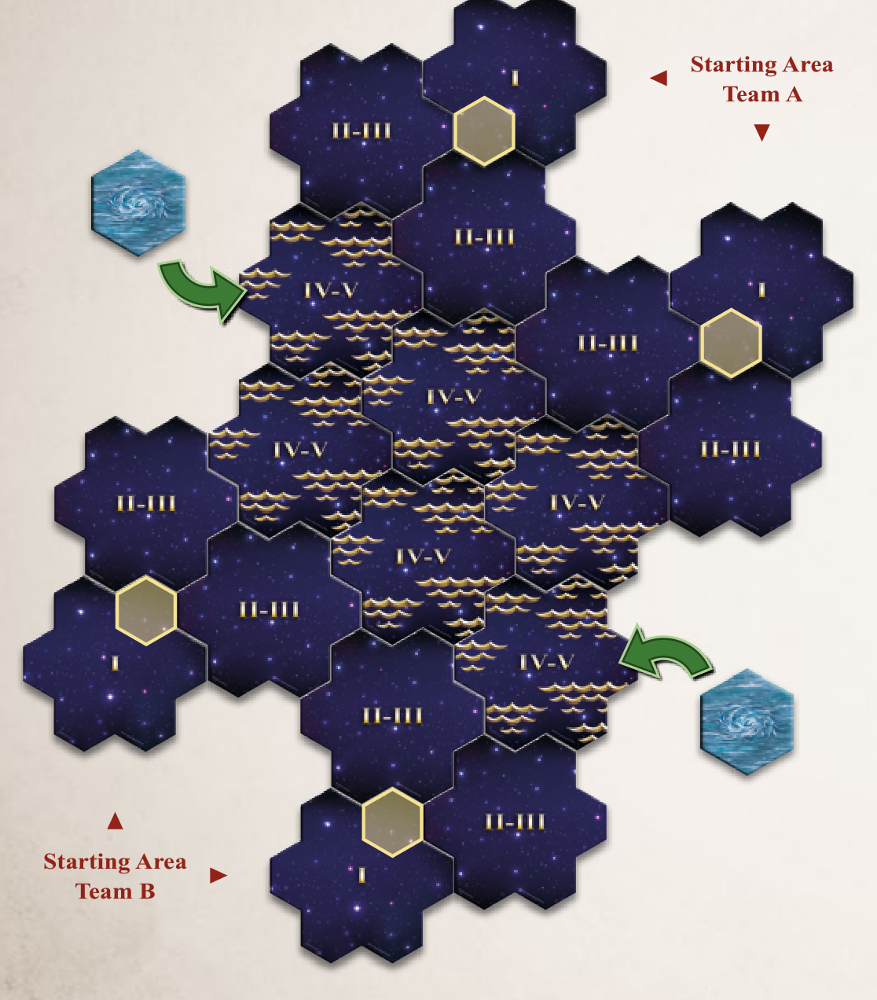
. Картинка со стр. 8.- 4 стартовых тайла I. Один из них обязательно с городом (Town) Темницы — это Темница S2 из базы.
- 6 ближних морских тайлов IV–V. Морские тайлы есть только в Причале: W1–W6.
- 8 дальних тайлов II–III.
Стартовые тайлы кладите так, чтобы заблокированное поле стояло, как на схеме. На тайле это поле с жёлтой рамкой по краям.
Два жетона водоворота (Причал) положите, как на схеме: на два морских тайла, куда показывают зелёные стрелки. Точное поле схема не задаёт. Действуют обычные правила жетона: не на заблокированное поле, не на другой жетон и не на поле, без которого не выполнить победу. Водоворотов (Whirlpool) два, поэтому кубик не бросают: вход ведёт во второй водоворот.
На схеме стартовая зона команды A справа сверху, команды B — слева снизу.
Морской тайл может содержать и сушу, и воду. Шаг с суши на воду заканчивает движение героя в этот ход. Подробно — механика «Фрагменты карты: морские» в памятке и стр. 3 книги.
Особые правила
Во время сценария:
- Ресурсы союзнику можно отправить только в свой ход. Обычное правило альянса разрешает это в ход любого из двоих.
- Вторичного героя каждый игрок нанимает только один раз за партию.
- Главный герой не может сдаться в бою с другим героем. Сдаваться могут только вторичные герои.
Правила альянса этой книги, стр. 6:
- Победа и поражение у союза общие. Кто сделал больше, не сравнивают.
- Артефакты союзники меняют, когда их герои стоят на соседних полях. Про заклинания книга Причала здесь не пишет.
- Союзник не ставит флаг на поле, которое уже пометил другой игрок того же союза.
Победа
Союз побеждает, если выполнено одно из двух:
- захватить один из вражеских городов (Town) и держать его под контролем следующие 2 раунда;
- разбить обоих главных героев вражеского союза.
Если условие выполнили обе команды — ничья. Если ни одна — проигрывают оба союза.
Событий по раундам нет.
With Sword and Fire
Столкновение · 2 игрока · Причал
Книга миссий Причала. Сценарий: стр. 9–10. Морские тайлы: стр. 3.
О миссии
Источник: книга миссий Причала, стр. 9–10. На странице стоит пометка Clash. Режим: столкновение, 2 игрока. Морские тайлы — стр. 3.
У любого пирата, даже у легенды, наступает день, когда золото кончилось, а последняя бутылка рома суха. От этой хвори лечит только грабёж. Нужны корабль, абордажная сабля и бочонок пороха, чтобы разнести болезнь в клочья.
Кто играет
2 игрока. Каждый сам за себя. Фракцию книга не сужает.
Длина
11 раундов. Если к концу 11-го никто не выполнил условие победы — ничья. Кончается ли партия сразу в момент победы или только в конце раунда, книга не пишет.
Старт
Каждому:
- 13 золота, 3 стройматериала, 1 драгоценность.
- Доход: 10 золота, 0 стройматериалов, 0 драгоценностей.
- Бронзовое жилище (Dwelling) и гильдия магов (Mage Guild).
- 1 бронзовый отряд стороной Pack: самый дорогой по цене найма.
Вторичного героя заводить нельзя.
Стартовый бонус сложности действует. Нейтралы на полях — от той же сложности.
Карта
Соберите, как на картинке
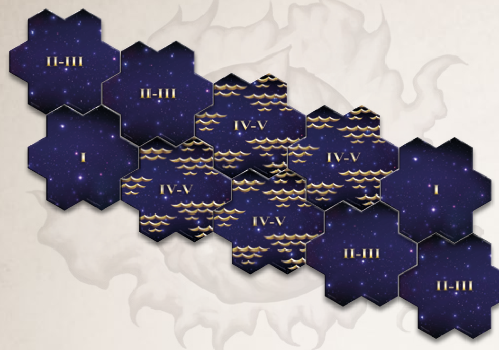
. Картинка со стр. 10.- 2 стартовых I.
- 4 ближних морских IV–V. В Причале это W1–W6.
- 4 дальних II–III. Ни на одном не должно быть посёлка (Settlement).
Шаг с суши на воду кончает движение в этот ход. Непотраченные очки передвижения при этом не сгорают: ими можно, например, продлить бой. Подробно — «Фрагменты карты: морские» и стр. 3.
Особые правила
Защищая свой город (Town) фракции и платя золото, можно пользоваться колодой Силы и Магии.
Победа
Побеждает тот, кто захватит город (Town) соперника или разобьёт его героя.
События
В 3-м, 6-м и 9-м раундах игроки могут меняться ресурсами, как если бы посетили рынок (Trading Post).
Blazing Archipelago
Столкновение · 3 игрока · Причал
Книга миссий Причала. Сценарий: стр. 11–12. Морские тайлы и водовороты: стр. 3.
О миссии
Источник: книга миссий Причала, стр. 11–12. На странице стоит пометка Clash. Режим: столкновение, 3 игрока. Морские тайлы и водовороты (Whirlpool) — стр. 3.
Жара, нехватка припасов и постоянная угроза морских тварей делают эти острова богозабытым местом. Что же сюда тянет искателей приключений?
Кто играет
3 игрока. Каждый сам за себя. Фракцию книга не сужает. Победителей может быть несколько.
Длина
13 раундов, либо момент, когда условие выполнил последний из игроков. Партия может кончиться в этот момент, не дожидаясь конца раунда.
Старт
Каждому:
- 14 золота, 4 стройматериала, 1 драгоценность.
- Доход: 10 золота, 0 стройматериалов, 0 драгоценностей.
- Бронзовое жилище (Dwelling).
- 3 бронзовых отряда стороной Few. Каких именно, книга не пишет.
Вторичного героя заводить нельзя.
Стартовый бонус сложности действует. Нейтралы обычных полей — от той же сложности. Армия уровня VII, о которой говорит победа, тоже берётся из этой таблицы. Состав для выбранной сложности написан в «Что выложить».
Карта
Соберите, как на картинке
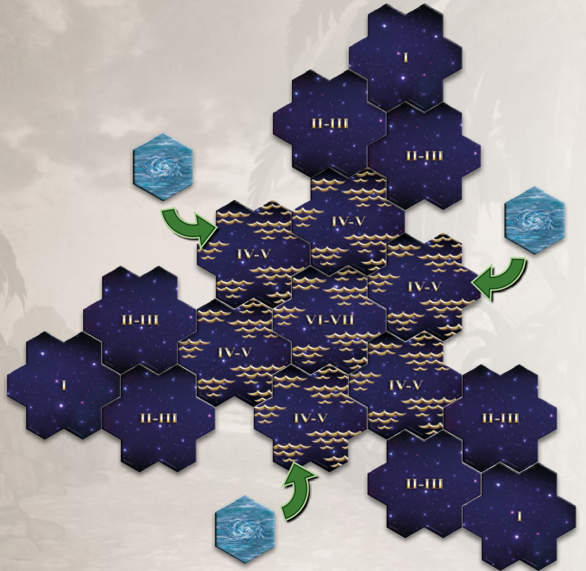
. Картинка со стр. 12.- 3 стартовых I.
- 6 ближних морских IV–V, W1–W6.
- 1 центральный морской VI–VII. В Причале это W7.
- 6 дальних II–III. Ни на одном не должно быть посёлка (Settlement).
- 3 жетона водоворота (Whirlpool), как на схеме. Стрелки показывают морские тайлы. Точное поле на тайле книга не пишет: жетон не кладут на заблокированное поле, на другой жетон и на поле, без которого не выполнить победу. Водоворотов три, поэтому при входе бросают кубик атаки.
Особые правила
- Защищая свой город (Town) фракции и платя золото, можно пользоваться колодой Силы и Магии.
- Нейтральная армия уровня VII. Поле книга называет только уровнем, не именем локации. После победы над ней кубики на это поле не кладут. Каждый следующий вход героя снова начинает бой.
- Когда игрок выигрывает этот бой, его героя снимают с карты. Что этот герой делает дальше, книга не пишет.
- После того как первый игрок разбил армию уровня VII, остальные, чтобы победить, должны разбить её в свой следующий ход. Если уже идёт 13-й раунд, это правило не применяют.
Победа
Побеждает тот, кто разбил нейтральную армию уровня VII. Кто успел — победил, кто нет — проиграл.
События
В 3-м, 6-м и 9-м раундах каждый игрок выбирает одно: перебросить 1 кубик один раз или бросить и разрешить 1 кубик ресурсов. Какой кубик перебрасывать и какой бросок, книга не пишет.
Terror of the Seas · 1. Evenmorn
Кампания · 1 игрок · Причал
Книга миссий Причала. Сценарий: стр. 16–18. Рассказ: стр. 19–22. Правила кампании: стр. 13–15. Морские тайлы: стр. 3–4.
1. Evenmorn
Источник: книга миссий Причала, стр. 16–22: подготовка 16–17, схема 18, рассказ 19–22. Правила кампании этой книги — стр. 13–15. Таблица нейтралов: книга миссий базы, стр. 32. Это одиночная кампания. Игроков: 1.
Один взгляд, одно неверное слово, одно безрассудное решение — и жизнь идёт кувырком. Решив помочь таинственной женщине, Джереми круто изменил судьбу свою и брата. Друга от врага заранее не отличить, и так же трудно угадать, когда жизнь повернёт. Со времён своей маленькой войны с демонами на далёком острове Джереми ходит по тонкому льду. Пока он списывает всё на удачу. Но хватит ли её, чтобы снова поплыть спокойно, или на этот раз он откусил больше, чем может проглотить?
Длина
13 раундов.
Подготовка игрока
Фракция: Причал (Cove). Других фракций в этом сценарии нет.
Герой: Jeremy или любой другой герой Причала.
Армия на старте: Few Oceanids и Few Sea Dogs.
Ресурсы: 10 золота, 2 стройматериала, 0 драгоценностей.
Постройки города (Town): бронзовое жилище (Dwelling).
Доход по правилам кампании этой книги, стр. 14: 10 золота, 0 стройматериалов, 0 драгоценностей. Бонус сценария заменяет обычный стартовый бонус сложности, стр. 13.
Бонус, один из трёх:
- Поиск (4) в колоде артефактов.
- Поиск (4) в колоде заклинаний.
- Усилить Sea Dogs.
Подготовка героев ИИ
Враги: Drakon, Nimbus, Drakon Vanguards и Nimbus Vanguards.
Армии:
- Drakon: Pack Medusas, Pack Minotaurs, Few Manticores, золотые Nix, золотые Trolls.
- Nimbus: Pack Zombies, Pack Wraiths, Pack Vampires, Pack Dread Knights, Few Ghost Dragons.
- Drakon Vanguards: нейтральная армия уровня «номер текущего раунда, делённый на 2, с округлением вверх». Если в армии меньше 5 отрядов, добавьте Pack Harpies.
- Nimbus Vanguards: так же, а при нехватке до 5 отрядов добавьте Pack Skeletons.
Отряд со звездой яруса в этом списке — карта из колоды нейтралов этого яруса, стр. 14. Остальные — карты фракций: Medusas, Minotaurs, Manticores и Harpies — Темницы, Zombies, Wraiths, Vampires, Dread Knights, Ghost Dragons и Skeletons — Некрополиса. Если у вас есть мантикоры «Набора целей 2», они заменяют мантикор Темницы.
Колоды:
- Nimbus: 2 карты Might, 4 карты Magic.
- Drakon: 2 карты Might, 3 карты Skill.
- Остальные герои ИИ, то есть оба авангарда: 3 карты Might, 1 карта Magic.
- Общая колода заклинаний врага: 3 Magic Arrow, 2 Slow.
- Навык: карта Armorer.
Armorer. Когда навык срабатывает, положите жетон защиты на отряд ИИ с самой высокой защитой. Жетон лежит, пока этот отряд не отразит одну атаку. Если на отряде уже есть жетон защиты, берите следующий по убыванию защиты. При равной защите — отряд старшего яруса.
Если подготовка не говорит, что колода только у одной армии, колода общая. После боя смешайте использованные и неиспользованные карты обратно, стр. 14.
Карта
Римская цифра на обороте — тип тайла. I стартовый, II–III дальний, IV–V ближний, VI–VII центральный. Морские тайлы IV–V с волнами на обороте есть только в Причале: W1–W6.
Соберите, как на картинке
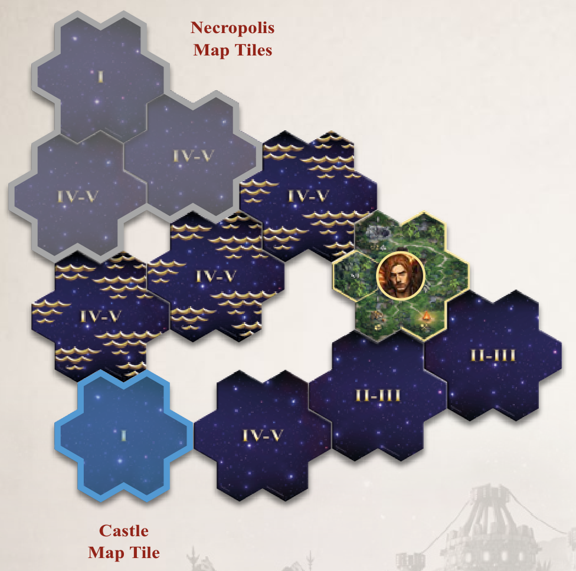
. Она вырезана из стр. 18.- 3 стартовых I: Некрополис S1, Замок S3, Причал S9.
- 2 дальних II–III, случайные из пула: Замок F3, F6, F9 и Причал F25–F27.
- 3 ближних IV–V: Некрополис N1 и N4, Причал N22.
- 3 морских IV–V: случайные из W1–W6.
На схеме серые тайлы — Некрополис: старт I и два ближних N1, N4. Синий I — старт Замка. Зелёный тайл с портретом — старт Причала. Три тайла с волнами — морские. Одиночный IV–V снизу — Причал N22. Два II–III справа — случайные дальние.
Герой на карте
Поставьте своего героя на поле города (Town) стартового тайла Причала. Этот тайл уже открыт.
Для Nimbus Vanguards возьмите модель героя Некрополиса, для Drakon Vanguards — модель героя Темницы. Держите их под рукой: они выходят на карту по событиям раундов. У Nimbus и Drakon моделей нет, на карте они не появляются.
Особые правила
- Когда ваш герой берёт под контроль любой город (Town), получите 10 золота. Затем снимите чёрные кубики со всех локаций карты: их можно посетить снова.
- За каждого побеждённого врага ИИ получите 8 золота.
- Вход на поле с обелиском (Obelisk) запускает событие рассказа, см. «События».
Уточнения кампании этой книги, стр. 13:
- Герою ИИ сдаться нельзя.
- Герои ИИ ходят после игрока. Как именно двигаются авангарды после выхода на карту, сценарий не пишет.
- Если карта навыка ИИ велит взять карту, возьмите ещё одну карту ИИ и выполните её.
- Карта ИИ, которая даёт защиту, остаётся на отряде, пока её не используют против одной атаки.
Сложные заклинания ИИ расписаны на стр. 15. У врагов этого сценария только Magic Arrow и Slow, под эти правила они не попадают.
Жетоны времени (стр. 4 книги). Чтобы отмечать срок продолжительного эффекта, положите на его карту или жетон жетоны времени. В конце раунда уменьшайте их сумму на 1. Жетонов не осталось — эффект кончился, карту или жетон сбросьте. В своде эти жетоны есть только в списке компонентов, правила к ним в своде нет.
Победа и поражение
Победа: под вашим контролем оба города (Town) — Некрополиса и Замка.
Поражение: ваш герой проиграл любой бой или вы потеряли контроль над городом своей фракции. Отступить из боя с нейтралами не лазурного яруса можно. Конец 13-го раунда без победы — поражение.
События
1-й раунд:
- Прочитайте «Тонкий лёд под названием доверие».
3-й раунд:
- Прочитайте «Не моё дело, но…».
- Поставьте модель Nimbus Vanguards на поле города (Town) Некрополиса.
- Поставьте модель Drakon Vanguards на поле города Замка.
7-й раунд:
- Прочитайте «Честь среди пиратов».
- Поставьте модель Nimbus Vanguards на поле города Некрополиса, если он не под вашим контролем.
- Поставьте модель Drakon Vanguards на поле города Замка, если он не под вашим контролем.
10-й раунд:
- Прочитайте «Всегда слушай свой ром».
- Поставьте модель Nimbus Vanguards на поле города Некрополиса, если он не под вашим контролем.
- Поставьте модель Drakon Vanguards на поле города Замка, если он не под вашим контролем.
13-й раунд:
- Если к концу раунда победы нет, вы проиграли, сухопутная крыса!
Вход на поле с обелиском (Obelisk), где ещё нет вашего кубика фракции:
- Прочитайте «Хижина провидца».
Сценарий пройден:
- Прочитайте «Встреча и новые цели».
- Соберите колоду к следующему сценарию по шагам ниже. Уровень героя в начале каждого сценария снова I. Свитки заклинаний в колоду не входят и в следующий сценарий не переносятся.
Колода между сценариями
Правила кампании этой книги, стр. 13–14. После победы:
1. Верните карты из руки и сброса в колоду.
2. Отложите из них все карты характеристик и карту специальности 1-го уровня.
3. Уберите остальные карты специальностей.
4. Из оставшихся выберите 5 и добавьте к отложенным. Это стартовая колода следующего сценария.
5. Запишите, какие карты в неё вошли.
Поражение в сценарии: уберите из колоды всё, чего нет в текущей стартовой колоде.
Смена героя между сценариями. На шаге 3 замените характеристики и специальность 1-го уровня прежнего героя на такие же карты нового. Усиленные характеристики можно переложить: снимите у нового героя обычную карту того же типа и положите усиленную. На шаге 4 любую оставшуюся карту можно заменить стартовым навыком нового героя или Magic Arrow. Вторую копию его навыка так не добавить. Magic Arrow не больше четырёх.
Если карт не хватает
Стр. 14. Карта из подготовки уже в вашей стартовой колоде: можно взять другую. Двум героям ИИ нужна одна и та же карта отряда, а копия одна: соберите армии без неё и добавьте карту в ту армию, с которой начался бой. Навык ИИ другой картой не заменяют. Если нужный навык у вашего героя, заберите его у героя и сделайте поиск (3) в колоде навыков. Нет нужного заклинания у ИИ — замените его на Magic Arrow. Нет заклинания, артефакта или навыка, назначенного вашему герою, — поиск (3) в соответствующей колоде.
Рассказ
Не читайте всё подряд. Каждый кусок открывают в свой момент:
- «Тонкий лёд под названием доверие» — в 1-м раунде.
- «Хижина провидца» — каждый раз, когда входите на обелиск (Obelisk) без вашего кубика фракции. Это игровой выбор, а не только текст.
- «Не моё дело, но…» — в 3-м раунде.
- «Честь среди пиратов» — в 7-м раунде. В конце куска есть игровой эффект.
- «Всегда слушай свой ром» — в 10-м раунде. В конце куска есть игровой эффект.
- «Встреча и новые цели» — после победы в сценарии.
Хижина провидца (Seer's Hut)
Когда читать: Каждый раз, когда входите на поле с обелиском (Obelisk), где ещё нет вашего кубика фракции.
Выберите один из вариантов ниже. Выполните его, затем положите на поле свой кубик фракции.
Охота на драконов. Отряд искателей удачи разбил лагерь в маленькой хижине. Они пришли исследовать заброшенную библиотеку, но войти им мешает стая драконов. Искатели просят помочь.
- Тяните карты из лазурной колоды нейтралов, пока не вытянете отряд Dragons. Остальные карты вмешайте обратно и начните бой с драконами. После победы получите 15 золота и 2 драгоценности, затем можете сделать поиск (2) в колоде артефактов.
Морская жрица. Морская жрица хочет отправиться в путешествие, и ей нужна свита. Подойдёт отряд Oceanids. Приведёте их — она научит вас тайному заклинанию.
- Сбросьте Few Oceanids или переверните эту карту с Pack на Few, чтобы сделать поиск (3) в колоде заклинаний. Если сбросили Pack Oceanids, поиск (3) можно сделать дважды.
Тонкий лёд под названием доверие
Когда читать: 1-й раунд.
— Знаешь, а криганы строят отличные корабли, — чесал я языком перед Патрисом, моим старпомом. — Скорости маловато, зато для долгих походов в самый раз.
Он едва кивал на мою болтовню, но мне было всё равно: я просто убивал время. Мы знали друг друга достаточно, и я знал: будь у него что-то важное, он бы не постеснялся сказать.
К тому же Патрис своё уже отболтал: днём он говорил с новобранцами, которые пристали к нам на острове. Кажется, они были из старого гарнизона Утопии — или как там звался форт, пока мы его не заняли. Алкин обещал присмотреть за Утопией и вернуть её мне, если я когда-нибудь вернусь. А сейчас мне нужен был новый корабль, достойный капитана с гордым именем Джереми Альбатрос.
Мы шли в Эрафию. Возвращаться в Регну сейчас было бессмысленно: стычки с эрафийскими патрулями всерьёз нам грозили, а мы всё ещё были далеко за линией врага. Поэтому выбрали безопасный путь посередине. Плавание обещало быть скучным…
Вахтенный заметил что-то похожее на землю. Я сверился с криганской картой: никакой земли там не было. «Любопытно», — подумал я. Тут-то морские черти в меня и вселились и нашептали подойти ближе и бросить якорь. Да, любопытство меня когда-нибудь погубит.
Ещё до высадки нам открылся внушительный вид: посреди острова громоздилось здание, обнесённое острым частоколом. Я сошёл на берег с Патрисом и парой самых верных ребят. На пляже нас уже ждали встречающие. Как ни удивительно, одни женщины — и весьма хорошенькие!
— Тысяча чертей! — воскликнул я, ступив на берег. — Я что, в раю?
— Смотря что считать раем, — ответила одна из женщин и шагнула вперёд. — Меня зовут Касметра. Я верховная гидромантка и хранительница библиотеки.
— Джереми Альбатрос. Адмирал флота Регны, — представился я с поклоном. Где-то за спиной кто-то подавился смешком.
— Что привело вас на остров, адмирал? — спросила Касметра. Прежде чем ответить, я не спеша разглядел новую знакомую. Возраст определить было трудно, но красива она была несомненно. Слыхал я про одного капитана, у которого любовницей была волшебница. Жили душа в душу, пока он не узнал, что она вдвое старше его. Ох уж эти маги!
Мои мысли прервала девчонка, выбежавшая из-за башни с криком:
— Госпожа, на нас снова напали!
Не раздумывая, я бросился за чародейками и увидел большой отряд: люди, орки, ящеролюди и нежить. Кто знает, что могло собрать такой сброд, но держались они слаженно: тащили таран и явно собирались выбить ворота форта.
Касметра и её чародейки ударили заклинаниями, а я, как подобает истинному джентльмену, выстрелил из пистолета в кучку орков у тарана. «На абордаж, парни!» — заорал я и спрыгнул со стены. Я ворвался в ряды врага, рубя саблей. К такому удару они явно не были готовы, и едва пали самые горячие головы, нападавшие отступили.
— Ты мне нравишься, Джереми Альбатрос, — улыбнулась Касметра со стены.
— Просто Джереми, — ответил я, убирая саблю в ножны.
— Ты помог, хотя тебя даже не просили. Спасибо.
— Пустяки. Джереми Альбатрос всегда защищает женщин и детей. Я, может, и пират, но пират просвещённый и сострадательный, — скромно сказал я.
— Раз так, не поможешь ли женщине защитить дом от разбойников?
Позже, за кружкой эля, Касметра рассказала, что остров зовётся Эвенморн. Я слышал о нём ещё в Регне. Некроманты с помощью Лунного храма хотели разграбить здешнюю тайную библиотеку, где хранились знания о магии воды и связанных с ней артефактах. Одно нападение уже провалилось, но теперь некроманты привели наёмников со всего света. Жрицы обучены как чародейки, но в одиночку против такой силы им не выстоять.
Если у меня когда-нибудь будут дети и спросят, зачем я ввязался в войну совершенно чужих людей, я отвечу: «Понятия не имею! Просто захотелось!»
Не моё дело, но…
Когда читать: 3-й раунд.
Патрис был недоволен моим решением.
— Капитан, я знаю, это не моё дело, но не пойму, зачем мы помогаем этим… женщинам, — ворчал он.
— Слушай, Патрис, тут много выгод. Они станут благодарными союзниками, а Сакредков может стать нашей передовой базой. Вот почему капитан я: я умею планировать наперёд! А ты поэтому старпом, — объяснил я.
— Как скажешь, Джереми, — нехотя согласился Патрис, — но мне всё это не нравится.
— Почему этот матрос пререкается? — спросила Касметра, возникнув из ниоткуда. Я аж подпрыгнул.
— Это не простой матрос, это мой старпом, Патрис, — ответил я.
— Очень приятно, — холодно ответила чародейка и представилась: — Касметра, верховная гидромантка.
— И вам доброго дня, сударыня, — ухмыльнулся Патрис и заковылял прочь своей фирменной хромой походкой.
— Тебе стоит строже держать порядок среди подчинённых, — упрекнула жрица.
— Не будь занудой. Мы, пираты, друг другу братья! Всё держится на взаимном уважении, — соврал я, прекрасно зная, что Регна кишит командами и капитанами, которые ничем не лучше огрских банд из Опустошённых земель Джадама.
— Врать ты не умеешь, — вздохнула Касметра и исчезла в магической вспышке.
— Врун никудышный, командир никудышный… Похоже, я немного неудачник, — пробормотал я себе под нос.
Честь среди пиратов
Когда читать: 7-й раунд. В конце куска — игровой эффект.
Бои с некромантами всё больше походили не на стычки, а на настоящую войну. Порох кончался быстрее, чем ром в портовой таверне. И в отличие от нежити, нам ещё надо было кормить людей. Я попросил жриц магией связаться с моим приятелем Диего: пора было взыскать с него старый долг.
Сегодня с его кораблей пришли первые припасы: ящики с бочонками пороха, свинцовыми пулями, бочки с провизией и прочее. Диего даже прислал отличного эля мне и ребятам! Добра было столько, что пересчитали и перетаскали всё на склад только к закату. А что ещё бывает в такой экспедиции… Остаётся надеяться, что у некромантов нет флота, способного угрожать моим кораблям, и снабжение не прервётся.
Я уже собирался спать, когда явился Патрис с донесением.
— Капитан, я тут разведал: у врага две крепости. А ещё под землёй есть колония Нигона. Похоже, её построили во время войны, а потом бросили. Эти подземные твари пойдут служить кому угодно. Боюсь, враг пустит их против нас.
Новости были мрачные, но такие сведения могли дать нам преимущество. Знание — сила, как говорится!
— Ты не перестаёшь меня удивлять, Патрис. Был когда-то рейнджером АвЛи или вроде того? — поддразнил я, едва сдерживая радость.
— Нет, капитан, — сухо ответил старпом. — Им я не был… Не люблю об этом говорить.
— Да брось, мы же все тут друзья. У товарищей по команде не должно быть секретов.
— Раз настаиваешь, — сдался Патрис. — Я с архипелага далеко на востоке. Там эрафийская колония, и я был одним из тех, кто бился за её независимость. Красться крысой по болотам и лесам мне привычно.
— И как, удачно бились? — спросил я.
— Губернатор переловил всех, кто был в нашем движении, — кроме меня. В то утро, когда начались аресты, я нанялся на корабль, шедший в Эрафию, так и спасся. Остальные сплясали пеньковую джигу. С тех пор я поклялся никогда не возвращаться домой, — закончил Патрис, и голос его был полон тоски.
— Почему же ты не поклялся отомстить? — воскликнул я.
— Что может сделать в одиночку человек средних лет? Ни богатства, ни умения убеждать, ни дара к магии. К тому же там до сих пор жена и дочь. Надеюсь, с ними ничего не случилось. Дочь, наверное, уже совсем взрослая, может, замужем, и даже не знает, кто был её отец.
— А если я пообещаю, что мы туда отправимся и восстановим справедливость для твоего народа? Отправим этого губернатора поплавать с акулами, а тебя сделаем новым королём — или кем ты там хотел быть, — предложил я с улыбкой.
Патрис побледнел и долго молчал. Потом, помедлив, тихо ответил:
— Это был бы самый большой подарок, какой ты можешь мне сделать, капитан.
Игровой эффект. Ваш главный герой теряет 1 очко хода. Затем выберите два варианта из списка:
- Получить 5 золота.
- Получить 4 золота.
- Получить 3 стройматериала.
- Получить 2 драгоценности.
Так напечатано в книге: два варианта с золотом, 5 и 4.
Всегда слушай свой ром
Когда читать: 10-й раунд. В конце куска — игровой эффект.
С флота пришла новая партия припасов. Диего написал, что к острову идёт шторм и им, возможно, придётся искать новую стоянку. Чёрт побери! Значит, припасы скоро перестанут приходить и без всяких некромантов!
Зато на этот раз Диего прислал несколько бочонков рома! Отличный подарок, чтобы поднять дух команды… и покрепче сдружиться с новыми друзьями.
После пары стаканов я вспомнил, что давно не писал любимому брату Бидли. И с этой вдохновлённой ромом мыслью сел за письмо. Мысли долго не желали складываться во что-то внятное. Я мучил бумагу около часа, и вышло вот что:
«У меня кое-какие проблемы. Твой любящий брат Дж.»
Игровой эффект. Ваш главный герой теряет 1 очко хода. Выберите два варианта из списка:
- Получить 5 золота.
- Получить 4 золота.
- Получить 3 стройматериала.
- Получить 2 драгоценности.
Встреча и новые цели
Когда читать: После победы в сценарии.
Небо затягивали большие чёрные тучи.
«Похоже, Диего был прав. Надеюсь, они найдут место, где будут в безопасности и от шторма, и от наёмников», — думал я, застёгивая свой кричащий камзол.
Уладив дела на Эвенморне, я поднял паруса, чтобы соединиться с братом. К моему удивлению, когда безопасность Сакредкова была обеспечена, Касметра решила отправиться со мной. Её неутомимые перепалки с Патрисом оживили корабль. Не то чтобы я жаловался, но им придётся научиться работать вместе… а Касметре — ещё и подчиняться приказам. «Не она ли всем твердила про неподчинение?» — подумал я с лёгкой усмешкой. Даже сегодня они орали друг на друга, как пара бешеных гноллов. Когда я сказал, что схожу на берег, она без раздумий пошла со мной. Может, прогулка поможет ей выпустить пар…
Я толкнул дверь «Чёрной метки» — вонючей таверны-дыры, которую мы выбрали местом встречи. Внутри было шумно и темно, и только через добрую минуту я разглядел Бидли: он сидел в углу и пил своё обычное дешёвое пиво. Он возненавидел это место больше всего на свете, но изменить старой традиции не мог.
Я подошёл и весело гаркнул:
— Ага, старый пёс! Сто лет не виделись! Где тебя носило?
Бидли встал и обнял меня. Мы были поразительно похожи, разве что я чуть ниже и стройнее… совсем чуть-чуть.
— Ты ничуть не изменился — всё тот же молодой пьянчуга, — начал Бидли. — Что стряслось?
— Да ничего особенного, — отмахнулся я и сел рядом с Касметрой. Она была роскошно одета, и её появление сопроводили шепотки и ещё больше пьяных взглядов. — Кстати, это Касметра, верховная гидромантка.
— Бидли. Капитан Бидли.
— Рада знакомству, капитан. Я много о вас слышала, — сказала Касметра.
— Неужели? И что же вам рассказали? — ухмыльнулся Бидли, отхлебнув своего мерзкого пойла.
— Я слышала, что вы спасли Ксантора, архимага Катерины.
Я не удержался и присвистнул:
— Разрази меня гром! Работаешь на эрафийцев, братец?
— Откуда мне было знать, что я найду Ксантора в той камере? — проворчал Бидли. — Пустая трата времени, да ещё и мерзавец, и неблагодарный. Теперь ходят слухи, что я работаю на королеву! «Корсар её величества…»
— Неблагодарный, вот как? — удивилась Касметра.
— Ну, не совсем. Он рассказал мне легенду о чём-то под названием Рог Бездны…
— Не может быть! — воскликнула чародейка.
Мы оба удивлённо на неё посмотрели.
— А что в нём такого? — спросил я.
— Вы слышали о Клинке Армагеддона или о Плаще Короля нежити? — взволнованно спросила Касметра. — Это легендарные артефакты исключительной силы! Совершенно уникальные! Рог Бездны — из того же ряда. Говорят, он лежит где-то на дне моря и ждёт того, кто его возьмёт. Нашедший его будет править морями и станет живым воплощением Повелителя воды!
— Любопытно, — пробормотал Бидли. — Ксантор сказал мне, где именно лежит Рог. Если не соврал, конечно.
— Вы даже не представляете, как важно это знание, — прошептала Касметра, прижав изящную руку к щеке.
— Ну тогда пойдём искать этот Рог Бездны! — воскликнул я.
— Нет, слишком рискованно: у нас мало людей, кораблей и припасов. Мы всего лишь два капитана с горсткой морских волков на борту, — ответил брат, скривившись, будто снова хлебнул своей бурды.
— У вас есть ещё я, верховная гидромантка, и мои ученицы, — добавила Касметра. — И я знаю, как добыть всё, что нужно. Правда, придётся потрудиться.
— Кстати, Джереми, — вдруг сменил тему Бидли. — Я слышал, ты попал в переплёт. Как там «Чёрный единорог»?
— Затонул, — ответил я, откидываясь на спинку стула.
Terror of the Seas · 2. In Search of the Horn
Кампания · 1 игрок · Причал
Книга миссий Причала. Сценарий: стр. 23–25. Рассказ: стр. 26–29. Правила кампании: стр. 13–15. Морские тайлы: стр. 3.
2. In Search of the Horn
Источник: книга миссий Причала, стр. 23–29: подготовка 23–24, схема 25, рассказ 26–29. Правила кампании — стр. 13–15. Морские тайлы — стр. 3. Режим: кампания, 1 игрок, фракция Причал.
Подготовка игрока
Фракция: Причал. Герой: Jeremy или любой герой Причала.
Армия: Few Oceanids, Few Sea Dogs.
Ресурсы: 16 золота, 3 стройматериала, 2 драгоценности. Доход: 10 / 0 / 0. Здания: бронзовое жилище (Dwelling) и цитадель (Citadel).
Бонус сценария, один на выбор:
- поиск (4) в артефактах;
- поиск (4) в заклинаниях;
- +4 золота.
Стартовый бонус сложности заменён этим выбором. Нейтралы полей сложность задаёт. Армии Gerwulf и стражи тюрьмы (Prison) от сложности не меняются. У стражей рога к золотым Haspids добавлена нейтральная армия уровня VII той же таблицы.
Вторичного героя нанимать нельзя. Его дают бесплатно, когда захватите шахту (Mine) на стартовом тайле Причала. Оба героя свободно пользуются колодой Силы и Магии. Запас экспертных применений на раунд у них общий: если один исчерпал эксперта, второму в этот ход он уже не достанется.
В свой ход, в первый раз, когда любой из героев тратит последнее очко передвижения, и если карт в руке меньше лимита: возьмите либо до лимита, либо половину лимита, округляя вниз. Берут то, что меньше.
Сдаваться героям ИИ нельзя. Герой, проигравший любой бой, проваливает сценарий. Отступить всё ещё можно из боя с нейтралами нелазурного яруса.
Подготовка героев ИИ
На карте их нет: ни моделей, ни фигур. Бои начинаются, когда герой входит на нужное поле. Общее правило кампании «герои ИИ ходят после игрока» здесь не к чему применить.
Gerwulf: Pack Zealots, серебряные нейтралы Sharpshooters, серебряные нейтралы Sorceresses, золотые нейтралы Manticores, лазурные нейтралы Crystal Dragons, 1 карта Gate, 1 карта Arrow Tower, 3 карты Wall. Колода ИИ: 3 Might, 2 Magic, 2 Skill. У Pack Zealots в книге нет значка яруса. У остальных четырёх отрядов значок есть, их берут из колод нейтралов.
Стража тюрьмы (Prison): Pack Halberdiers, Pack Zealots, Pack Crusaders, Pack Champions, 1 Gate, 1 Arrow Tower, 3 Wall. Колода ИИ: 1 Might, 4 Magic. Значков яруса у этих отрядов нет.
Стражи рога: золотые нейтралы Haspids и нейтральная армия уровня VII выбранной сложности. Колода ИИ: 4 Might, 1 Magic.
Общая колода заклинаний, книга не делит её по героям: 3 Magic Arrow, 1 Lightning Bolt, 1 Slow. После боя колоду, если она общая, перемешивают вместе со сбросом, стр. 14.
Боевая машина Cannon. Не включайте её по тексту карты. Включайте только когда карта Skill велит это сделать.
Карта
Соберите, как на картинке
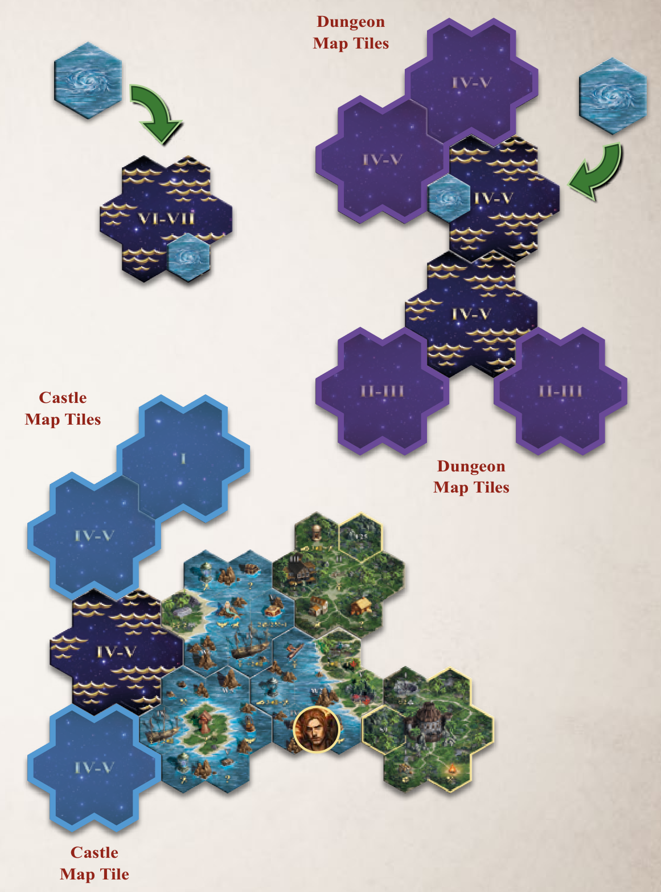
. Картинка со стр. 25. На ней три группы: тайлы Замка, тайлы Темницы и центральный морской тайл.- Стартовые I: Замок S3 и Причал S9.
- Дальние II–III: 1 случайный из Причала F25–F27 и Замка F3, F6, F9; 2 случайных из Темницы F2, F5, F8.
- Ближние IV–V: Темница N2 и N5, Замок N3 и N6.
- Морские IV–V: все шесть, W1–W6.
- Центральный морской VI–VII: W7.
Два жетона водоворота (Whirlpool) пока только отложите. На стол их кладут после боя со стражей тюрьмы (Prison).
Героя Причала поставьте на пустое поле морского тайла, соседнего со стартовым тайлом Причала. Поверните этот морской тайл так, чтобы пустое поле не соседствовало со стартом Причала. Этот тайл и все соседние с ним уже открыты.
Особые правила
Вход на обелиск (Obelisk) запускает событие из списка ниже. Осада ИИ, если книга не задала расстановку сама: ворота перед наземным отрядом с самой высокой инициативой, башня как серебряный стрелок. Порядок целей башни и стен — стр. 14.
Победа и поражение
Победа: разбить армию Gerwulf и стражей рога.
Поражение: герой проиграл любой бой. К концу 13-го раунда, если победы нет, секреты рога потеряны.
События
1-й раунд: получите отрицательную мораль и потеряйте 1 очко передвижения. На этот раунд потеря или до конца сценария, книга не пишет. Прочитайте «Риск быть пиратом».
6-й раунд: прочитайте «Подозрение».
13-й раунд, в конце: вы проиграли.
Захват шахты (Mine) на стартовом тайле Причала:
- Откройте оба дальних тайла Темницы.
- Поверните «тайл с шахтой» так, чтобы шахта не соседствовала с морским тайлом. Какой из двух тайлов с шахтой вертеть, книга не говорит.
- Получите вторичного героя. Поставьте его на шахту дальнего тайла Темницы и поставьте флаг. Бой, который там был бы, не проводите.
- Доход поднимите как обычно. Бонус за захват этой шахты не берите.
- Прочитайте «Лабиринт змея».
Вторичный герой в первый, второй и третий раз открывает морской или ближний тайл: прочитайте «Записку 1», затем «Записку 2», затем «Записку 3». Дальше эффект молчит. Поле после записки разрешают как обычно.
Вход на обелиск (Obelisk) тайла Темницы: бой со стражей тюрьмы (Prison). Ворота и стены — посередине доски боя, башню рядом с доской. Pack Champions стоит перед воротами. Остальные отряды не ходят, пока не разрушена стена перед ними или пока они не могут выйти через ворота. После победы прочитайте «Тюрьма». Положите свой кубик фракции на поле. Затем два жетона водоворота (Whirlpool), как в «Тюрьме» и на схеме.
Вход на обелиск тайла Замка, если там ещё нет вашего кубика: прочитайте «Хижина провидца».
Вход на поле города (Town) Замка: сразу бой с армией Gerwulf.
Вход на центральное поле центрального тайла: бой со стражами рога вместо обычных нейтралов.
Сценарий завершён: прочитайте «Кормящую руку кусают».
Колода между сценариями
Правила кампании этой книги, стр. 13–14. После победы:
1. Верните карты из руки и сброса в колоду.
2. Отложите из них все карты характеристик и карту специальности 1-го уровня.
3. Уберите остальные карты специальностей.
4. Из оставшихся выберите 5 и добавьте к отложенным. Это стартовая колода следующего сценария.
5. Запишите, какие карты в неё вошли.
Поражение: уберите из колоды всё, чего нет в текущей стартовой колоде. Уровень в начале каждого сценария снова I. Свитки заклинаний в следующий сценарий не переносятся.
Смена героя: на шаге 3 замените характеристики и специальность 1-го уровня. Усиленные характеристики можно переложить на нового героя вместо обычной карты того же типа. На шаге 4 оставшуюся карту можно заменить его стартовым навыком или Magic Arrow. Вторую копию навыка так не добавить. Magic Arrow не больше четырёх.
Если карт не хватает
Стр. 14. Карта подготовки уже в вашей стартовой колоде: возьмите другую. Двум героям ИИ нужна одна карта отряда, а копия одна: соберите армии без неё и добавьте карту в ту армию, с которой начался бой. Навык ИИ другой картой не заменяют. Если нужный навык у вашего героя, заберите его и сделайте поиск (3) в колоде навыков. Нет нужного заклинания у ИИ — замените его на Magic Arrow. Нет заклинания, артефакта или навыка, назначенного вашему герою, — поиск (3) в соответствующей колоде.
Рассказ
Не читайте всё подряд:
- «Риск быть пиратом» — в 1-м раунде.
- «Лабиринт змея» — когда взята шахта (Mine) на старте Причала.
- «Записка 1», «Записка 2», «Записка 3» — первый, второй и третий раз, когда вторичный герой открывает морской или ближний тайл.
- «Подозрение» — в 6-м раунде.
- «Тюрьма» — после победы над стражей тюрьмы (Prison).
- «Хижина провидца» — вход на обелиск (Obelisk) Замка без вашего кубика.
- «Кормящую руку кусают» — когда сценарий завершён.
Хижина провидца (Seer's Hut)
Когда читать: вход на обелиск (Obelisk) тайла Замка, если на поле ещё нет вашего кубика фракции.
Выберите одно. После разрешения положите на поле кубик своей фракции.
Знание русалки. Русалка учит за артефакт и обещает полезное заклинание. Уберите артефакт из руки и дважды сделайте поиск (3) в колоде заклинаний.
Питомцы нимфы. Морская нимфа потеряла талисман и просит замену. Взамен отдаст «питомцев». Уберите артефакт из руки, чтобы усилить или нанять Ayssids, и получите 5 золота.
Подозрительный череп в стене. Bidley видит в стене череп. Тот шевелится и говорит: «Накорми меня самоцветами, и я научу тебя всему, что знаю». Заплатите 1 драгоценность, найдите в колоде навыков карту Offense и возьмите её в руку. Колоду после этого перемешайте.
Записка 1 (Note 1)
Когда читать: вторичный герой впервые открыл морской или ближний тайл.
Несколько недель пути под землёй съели скудные припасы, и голод стал постоянным спутником команды Bidley. Когда они нашли брошенный плот с остатками еды, он промолчал и смотрел, как они набрасываются на него. Гордые пираты.
На дне бочки, среди заплесневелых корок, Bidley нашёл клочки пергамента. Страница чужого дневника.
«…обуви. Пришлось обмотать ноги льняным тряпьём. Госпожа сказала, что лабиринт полон сокровищ, и сам рог — ещё не всё. Если повезёт, найду себе волшебные сапоги. Впрочем, я всё больше склоняюсь к мысли, что…»
«Любопытно», — подумал Bidley, стараясь не чувствовать вкус хлеба. Кто-то уже искал здесь Horn of the Abyss. Нашёл ли? Он забрал страницу и пошёл дальше.
Записка 2 (Note 2)
Когда читать: вторичный герой во второй раз открыл морской или ближний тайл.
«Люди нашли целый бочонок солений. Вместе с горстью ящериц, пойманных утром, вечером будет настоящий пир!» Bidley причмокнул. Носовая фигура с «её-величества-корабля-богом-забытого», на которой он сидел, скрипнула ему в тон. «Откуда столько обломков… эти воды как-то связаны с поверхностью?»
Он вытащил ещё несколько страниц из последней «кучи сокровищ». Чернила расплылись, читать трудно.
«…конец! В этом подземелье меня берёт паника. Я не знаю, что делать и куда идти… Если бы только она… Надеюсь, затея окупится. Я ид…»
«И всё, сдаюсь», — сказал Bidley вслух и перевернул страницу.
«…здесь. Страшнее всего, что лабиринт полон одержимых, которые бродят тут неизвестно сколько. И это помимо водяных тварей и прочей проклятой живности. Сколько храбрецов здесь сгинуло. Окажусь ли я среди них? Задача нелегка. Госпожа предупреждала о ловушках и иллюзиях…»
Записка 3 (Note 3)
Когда читать: вторичный герой в третий раз открыл морской или ближний тайл.
Снова страница дневника.
«…евозможно! Проклятое место! Sandra на моих глазах стала чудовищем. Не знаю, иллюзия это была или настоящее проклятие, но мне пришлось убить её, или то, чем она… О боги, никогда я не был так жалок и так растерян!»
Bidley смотрел на кусок хлеба, на который полчаса не мог решиться. Видимо, голоден он ещё не настолько. Или не настолько отчаялся. «А может, это и не хлеб?» Он подозрительно разглядывал странный комок. Синий? Белый? Сероватый?
«ПОЧЕМУ В ЭТОМ ПРОКЛЯТОМ СВЕТЕ ВСЁ ОДИНАКОВОЕ?» — крикнул он и швырнул комок назад. Люди кинулись к нему, как голуби.
«…это конец. Почти все мертвы. Я едва унёс ноги! Ужасные гигантские змеи… Таких я не видел. На этот раз не иллюзия. О них и предупреждала госпожа. Кто-то у меня на пятках, и вряд ли он хочет спросить дорогу к библиотеке. Надо готовиться к бою. Наверное, последнему. Скоро никто не вспомнит скромного мага Da…»
Риск быть пиратом (The Risk of Being a Pirate)
Когда читать: 1-й раунд.
Несколько месяцев мы шли к месту, которое отметил Xanthor. В тот день удача ушла вместе с ветром. Путь вёл южнее Tatalia, к неизвестным островам. То ли случай, то ли за нами следили: едва мы прибыли, дорогу перекрыл королевский флот Tatalia. Два фрегата и чуть не дюжина судов помельче. Мелочь топить было нетрудно. Когда подошли фрегаты, стало ясно: не отступим скоро — эти болотные крысы украсят корабли нашими шкурами.
Каравелла Bidley дала последний залп и на попутном ветре пошла в опасный угол: во фланг и прочь от остального флота. Мой корабль шёл следом, за ним галеры. Фрегаты Tatalia не отставали.
Вдруг в борт слева вонзилась дюжина острых кусков железа, а второй залп прошёл у меня над головой. Картечь. Первый дали слишком низко. Про второй этого не скажешь: он ударил в галеру позади и порвал паруса в клочья.
Один вражеский корабль воспользовался мигом и набросился на галеры замыкающей линии. Ящеры с кинжалами в зубах прыгнули в воду, влезли на борт и устроили на палубе бойню. Вскоре осталась одна галера. Она отбивалась от абордажа из последних сил.
«Таталийцев надо остановить немедленно, — твёрдо сказала Casmetra. — Магией.»
«Постой, это ведь корабль Patris?» Мысль вспыхнула сразу. Мой помощник впервые вёл судно как капитан.
«Ты не заденешь галеру Patris?» — спросил я.
«Не знаю. Что будет, то будет», — ответила жрица. Изящным жестом она стала чертить в воздухе знаки.
«Подожди, мы не можем рисковать его жизнью!» — крикнул я. Голос утонул в грохоте её заклинания. На головы посыпались лёд и щепки. В один миг она подняла из воды айсберги и смяла всё на пути. Я своими глазами видел тонущий фрегат Tatalia и рядом остатки галеры, насаженные на ледяной шип.
Когда всё стихло, Casmetra молча ушла в каюту. Я постоял, беспомощный.
«Я знаю, что она спасла мне жизнь… но цену заплатил Patris. Она даже не дала ему шанса.» Я смотрел на уходящий айсберг. «Я всегда знал, что рано или поздно потеряю помощника и близких друзей. Таков риск пиратской жизни. Но не думал, что это случится сегодня.»
На следующий день мы дошли до места. Остров, отмеченный Xanthor: неприметный клочок земли в кольце скал. На камне, торчащем из воды, чья-то рука вывела: «Island of the Vengeful Serpent».
«Всё лучше и лучше… правда, Patris?» — пробормотал я и сделал хороший глоток рома из фляги.
Лабиринт змея (The Serpent's Labyrinth)
Когда читать: захвачена шахта (Mine) на стартовом тайле Причала.
«Никакого рога я тут не вижу», — поделился я наблюдением.
«Конечно, друг мой! Рог внутри Змеиного лабиринта, глубоко под землёй. И только я знаю, как туда попасть!» — объявила Casmetra.
Она шагнула вперёд, развела руки и стала читать заклинание. Слова обернулись пылающими знаками, полетели к горе и исчезли в ней. Когда она замолчала, горы взревели, и голос, похожий на удар молота о наковальню, сказал: «Пароль принят. Открываю проход.»
«Что это было?» — вздрогнул Bidley.
«Не знаю, — пожала плечами Casmetra. — Говорят, Оракул Enroth звучит примерно так.»
«Тысяча дьяволов! Это… не описать!» Между скал открылся чёрный проход. Внутри виднелась каменная лестница, другой конец терялся во тьме. Bidley вооружился: пистолет в одной руке, сабля в другой.
«Будьте крайне осторожны, — предупредила колдунья. — Внизу полно ловушек и иллюзий.»
Bidley кивнул и повёл верных морских псов вниз. Мы уже собирались за ним, когда железный голос прогремел: «Второй уровень защиты снят. Доступ прекращаю.»
Последний пират едва успел обернуться. Горы сомкнулись у него перед носом. Я бросился к сплошной стене и стал бить её кулаками и ногами. Casmetra повторила заклинание. Бесполезно. Сколько бы светящихся букв она ни слала в гору и что бы я ни делал, проход больше не открывался.
«Проклятие! Я потерял помощника и брата разом!» Кулак был в крови, и я этого почти не замечал.
«Нееет!» Я выхватил саблю и попытался рассечь камень.
«Успокойся!» Casmetra положила руку мне на плечо. Она старалась быть мягкой. Получилось как масло в огонь. «Твой брат жив. Он внутри лабиринта. Выберется он или нет, зависит от него.»
«О, замечательно.» Я ударил скалу ещё раз и замер. Дыхание сбилось. Лица её видеть не хотелось. Не оборачиваясь, я спросил: «И что ты теперь собираешься делать?»
Она помолчала. Потом спокойно сказала: «Вернуться в лагерь и ждать Bidley. Я уверена, с ним всё будет хорошо.»
Я молча отшвырнул саблю. Она вздрогнула. Я пошёл прочь.
«Как она и сказала…» Она была права. Я это знал. Легче не становилось.
А группа Bidley оказалась в полной темноте. Они кричали и поняли: звук наружу не проходит, и снаружи их не слышно. Он хотел велеть зажечь факелы, но едва кто-то шагнул вперёд, место засветилось странным синим светом. Хватало, чтобы видеть на шаг, и не хватало, чтобы понять, как далеко тянутся туннели. Вскоре стало ясно: они в ловушке. Сырые пещеры. Почти без припасов. Одни.
«Обратной дороги нет!» Кто-то в панике побежал вслепую, и свои его вырубили.
«Куда, кэп?» — тревожно спросил один из псов.
«Вперёд, — ответил Bidley. — Мы выйдем отсюда с рогом или не выйдем вовсе. Я верю, что судьба от нас ещё не отвернулась.»
Подозрение (Suspicion)
Когда читать: 6-й раунд.
Я собрался с духом и пошёл к Casmetra. Она смотрела в магический шар и сверялась с картой на столе. Услышав меня, тревожно встала. Платье тихо шуршало на каждом движении.
Я тряхнул головой и отвёл взгляд. Обошёл её и наклонился к столу, чтобы увидеть, на что она смотрит.
«Осторожно! В лягушку превратишься!» — сказала жрица.
«Серьёзно?» Я отскочил. Casmetra улыбнулась широко.
«Нет, шучу. Но лягушки всё ещё рядом.»
«Что?»
«Таталийцы. Флот отступил, но они чинят корабли. Воины на берегу приходят в себя. Скоро снова наберутся храбрости выследить нас и попробуют уничтожить. Наверное, думают, что Regna решила грабить Tatalia.»
«Надо их как-то сдержать.» Я ткнул в карту и пальцем провёл путь от нашего корабля к берегу. «Надо взять ближний замок на полуострове и закрепиться. Иначе Bidley выйдет прямо на ухмылки этих лягушек. И псов.»
«Но я пришёл не за этим.» Я повернулся к её глазам. Она смотрела вопросительно.
«Casmetra, у меня есть подозрение, что ты могла прочитать то заклинание и не задеть галеру Patris.»
«С чего ты взял? Такие заклинания трудно удержать. Они как твоя пушка: не знаешь точно, куда лягут ядра. Зато если попало, то попало.»
«Я могу сбить птицу на лету! И не поучай меня… Там был Patris! Я видел, что вы с ним не ладили.»
«Что? Ты правда веришь, что я погубила бы собственных учеников и отличную команду из-за одного ворчливого старика?» Она топнула, глаза вспыхнули.
«Я… прости, я об этом не подумал, — пробормотал я и сел на койку, совсем сбитый. — Просто я прокручиваю это снова и снова. Patris спит с рыбами. Брат застрял в подземелье, и одни боги знают, выберется ли он живым. Я напиваюсь каждый вечер, лишь бы уснуть.»
Casmetra тихо улыбнулась и подошла. «Ты устал, Jeremy. Тебе надо передохнуть.» Её руки были тонкими, запах приятным. «И правда… отдых — это хорошо», — улыбнулся я.
За столом этот кусок ничего не меняет.
Тюрьма (Prison)
Когда читать: победа над стражей тюрьмы (Prison) на обелиске (Obelisk) Темницы.
Bidley подошёл к обваленному туннелю. Сквозь щебень донёсся слабый дрожащий голос: «Эй, приятель! Слышу, как ты там ходишь, и на шаркающего мертвеца ты не похож! Помоги! Вытащи меня!»
«Я тебе не приятель, — спокойно ответил Bidley. — Сначала скажи, кто ты и что здесь делаешь.»
«Меня зовут Dargem. Я просто маг, который оказался не в том месте и не в то время. С этими камнями сам не справлюсь.»
«Dargem… Dargem… где я слышал это имя…»
«Это не твои каракули я нахожу по всей дороге сюда?»
«Мой… дневник? А я гадал, куда он делся! Видишь ли, я попал тут в ловушку.»
«Ты охотился за Horn of the Abyss?»
«Да. И ты, полагаю, тоже. Сюда за свежим воздухом не ходят.»
«И зачем мне выпускать соперника?»
«Подожди! Не уходи! Я тебе не соперник! Рог мне больше не нужен! Забирай его и делай что хочешь! Дунь в него, пей из него ром, засунь его себе… мне всё равно. Но без меня ты не пройдёшь иллюзии.»
«Какие иллюзии?» Bidley встревоженно шагнул к завалу.
«Часть морских змеев, которых ты увидишь, ненастоящие. Без моего заклинания настоящих от поддельных не отличить.»
«Звучит как безумец, и он может быть опасен. Такого выпускать не стоит…» Bidley оглядел своих. Пара крыс уже вылезла из трещины, и несколько пиратов за ними гонялись. Ещё один смеялся, разговаривая с камнем. Двое в углу дрались из-за аппетитного на вид кожаного башмака.
Bidley пожал плечами.
«Ладно. Ты меня почти убедил.»
За столом: положите жетон водоворота на пустое поле ближайшего морского тайла и второй на центральный тайл. Они связаны. Герой, который входит на поле с жетоном, сразу переносится на другой. К чему «ближайший», книга не уточняет. Стрелки на схеме показывают те же места. В списке событий после этого ещё кладут свой кубик фракции на поле обелиска.
Кормящую руку кусают (Biting the Hand That Feeds You)
Когда читать: сценарий завершён.
Я взял ночную вахту, чтобы собраться с мыслями. Бутылка рома в руке, спина на вантах, взгляд на гору, в которой Змеиный лабиринт.
«Patris… так далеко от дома, на том дальнем острове.» Я думал об этом каждую ночь после того боя. «В тот дом он уже не вернётся. Кто-то мог уцелеть при крушении, но шанс тонок. Когда-нибудь я приеду на тот архипелаг и найду жену и дочь Patris.» Я допил ром и зло швырнул бутылку в полную луну. «…или отомщу за них, если тамошний наместник — собака, которая обижает невинных. Мы, пираты, всегда исполняем последнюю волю мёртвых.»
В тот миг, когда бутылка плюхнулась в море, в дальней части острова, под землёй, Bidley миновал последнего змея и встал перед ларцом.
«Вот твой рог, в ларце», — сухо сказал Dargem. Он перевёл взгляд с Bidley на ларец и нетерпеливо добавил: «Бери, живо!»
Едва пират положил на него руки, сзади крикнули: «Невероятно! Это не иллюзия! Он мой, наконец!»
Потом Dargem ударил Bidley по голове и схватил ларец. Стены древнего склепа задрожали. Каменный алтарь, на котором стоял ларец, рассыпался. Комната стала подниматься и крушить потолок лабиринта. Не успел Dargem опомниться, как комната вышла посреди моря: остров из каменных обломков, которые она утащила за собой. Предатель схватил рог и плохо понимал, как им пользоваться. Dargem призвал лодку, прыгнул в неё и забрал бесчувственного Bidley с собой.
Terror of the Seas · 3. Treachery
Кампания · 1 игрок · Причал
Книга миссий Причала. Сценарий: стр. 30–32. Рассказ: стр. 32–34. Правила кампании: стр. 13–15. Морские тайлы: стр. 3.
3. Treachery
Источник: книга миссий Причала, стр. 30–34: подготовка 30–31, схема на стр. 32, рассказ 32–34. Правила кампании — стр. 13–15. Морские тайлы — стр. 3. Режим: кампания, 1 игрок, фракция Причал. Это последний сценарий кампании.
Подготовка игрока
Фракция: Причал. Герой: Jeremy или любой герой Причала.
Армия: Few Oceanids, Few Sea Dogs.
Ресурсы: 0 золота, 0 стройматериалов, 0 драгоценностей. Доход: 10 / 0 / 0. Здания: бронзовое жилище (Dwelling), серебряное жилище, цитадель (Citadel).
Бонус сценария, один на выбор:
- поиск (4) в артефактах;
- поиск (4) в заклинаниях;
- +6 золота.
Стартовый бонус сложности заменён этим выбором. Нейтралы полей сложность задаёт. Обе названные армии врага от сложности не меняются. Бой в центре утопии драконов (Dragon Utopia) идёт с защитниками крепости Regna, а не с обычными нейтралами этого поля.
Со стартового тайла герой ходит только на морские тайлы.
Захват города (Town) даёт 15 золота, 2 стройматериала и 3 драгоценности.
На посёлки (Settlement) и шахты (Mine) кубик фракции не кладут и производство не повышают. Бонус за флаг берут дважды, если поле на дальнем или стартовом тайле, и трижды, если на ближнем. Потом на поле кладут чёрный кубик.
Сдаваться героям ИИ нельзя. Герой, проигравший любой бой, проваливает сценарий. Отступить можно из боя с нейтралами нелазурного яруса.
Подготовка героев ИИ
На карту их не ставят. Бой начинается при входе на поле.
Защитники аванпоста Замка: Pack Halberdiers, Pack Marksmen, Pack Zealots, Pack Crusaders, Pack Champions. Колода ИИ: 4 Might, 1 Magic.
Защитники крепости Regna: Pack Crusaders, Pack Champions, золотые нейтралы Enchanters, золотые нейтралы Nix, золотые нейтралы Haspids. Колода ИИ: 2 Might, 4 Magic, 2 Skill.
Общая колода заклинаний: 1 Magic Arrow, 1 Lightning Bolt, 1 Fireball, 1 Blind.
Боевая машина Cannon. Не включайте её по тексту карты. Включайте только когда карта Skill велит это сделать. Цену эксперта не платят. Цель — отряд самого высокого яруса. Если таких несколько, бейте того, кто ближе к гибели: у кого меньше разница между здоровьем и уже полученным уроном. Если и тут несколько, выбираете вы.
Отложите 3 карты Wall и 1 Arrow Tower. Они нужны в «Крепости Regna».
Карта
Соберите, как на картинке
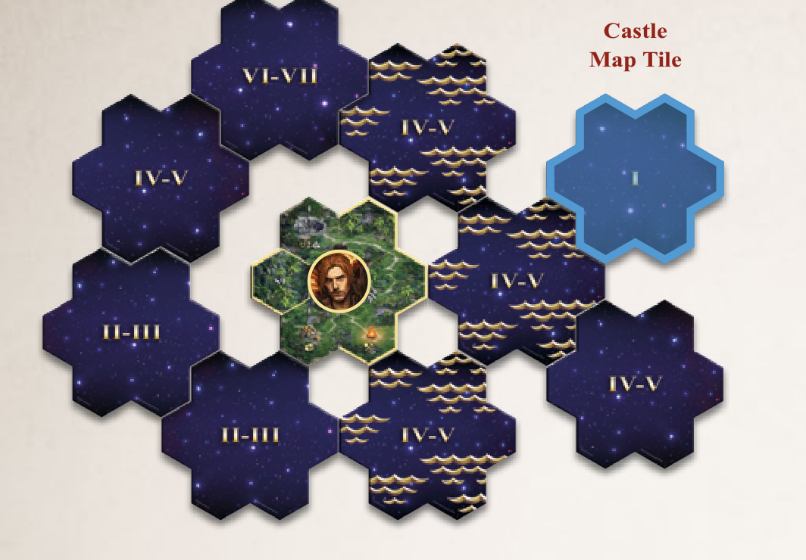
. Картинка со стр. 32.- Стартовые I: Замок S3 и Причал S9. Героя поставьте на поле города (Town) Причала. Этот тайл уже открыт. На схеме Замок S3 вынесен в сторону и обведён. К какому тайлу он примыкает, подпись не говорит.
- Дальние II–III: 2 случайных из Замка F3, F6, F9 и Причала F25–F27. После выбора хотя бы на одном должен быть рынок (Trading Post). Нет — выберите заново.
- Ближние IV–V: 2 случайных из Причала N22 и Замка N3, N6.
- Морские IV–V: 3 случайных из W1–W6.
- Центральный VI–VII: утопия драконов (Dragon Utopia) C1.
Победа и поражение
Победа: поставить флаг на утопии драконов (Dragon Utopia).
Поражение: герой проиграл любой бой. К концу 12-го раунда, если победы нет, рог остаётся у Dargem.
События
1-й раунд: прочитайте «Если входить, то с грохотом».
3-й раунд: прочитайте «Копчёный угорь на ужин?»
5-й раунд: прочитайте «Ром и письмо по ночам идут рука об руку». В этом раунде золотой доход не получаете.
7-й раунд: прочитайте «Ответы и ещё больше вопросов».
12-й раунд, в конце: вы проиграли.
Вход на обелиск (Obelisk) без вашего кубика фракции: прочитайте «Хижина провидца».
Вход на поле города (Town) Замка: бой с защитниками аванпоста Замка.
Вход на центральное поле центрального тайла: прочитайте «Крепость Regna» и начните бой с защитниками крепости Regna вместо обычных нейтралов.
Сценарий завершён: прочитайте «Эпилог».
Колода между сценариями
Следующего сценария в этой книге нет. Если колоду всё же сохраняют, шаги те же, стр. 13–14: вернуть руку и сброс в колоду, отложить характеристики и специальность 1-го уровня, убрать остальные специальности, из оставшегося выбрать 5. Уровень снова I. Свитки не переносятся.
Поражение снимает из колоды всё, чего нет в текущей стартовой.
Если карт не хватает
Стр. 14. Карта подготовки уже в стартовой колоде: возьмите другую. Общая карта отряда у двух героев ИИ, если копия одна, входит в армию в момент боя. Навык ИИ не заменяют. Чужой навык, который нужен ИИ и лежит у вас, заберите и сделайте поиск (3). Нет заклинания ИИ — вместо него Magic Arrow. Нет вашей назначенной карты — поиск (3) в её колоде.
Рассказ
Не читайте всё подряд:
- «Если входить, то с грохотом» — в 1-м раунде.
- «Копчёный угорь на ужин?» — в 3-м раунде.
- «Ром и письмо по ночам идут рука об руку» — в 5-м раунде. В куске есть правило.
- «Ответы и ещё больше вопросов» — в 7-м раунде.
- «Хижина провидца» — вход на обелиск (Obelisk) без вашего кубика.
- «Крепость Regna» — вход на центральное поле утопии драконов (Dragon Utopia). В куске расстановка боя.
- «Эпилог» — когда сценарий завершён.
Хижина провидца (Seer's Hut)
Когда читать: вход на обелиск (Obelisk), если на поле ещё нет вашего кубика фракции.
Выберите одно. После разрешения положите на поле кубик своей фракции.
Недовольные пираты. Группе пиратов не по нраву власть Dargem, и они хотят к вам. Возьмёте ли вы их? Бесплатно усильте два бронзовых или серебряных отряда в армии.
Охота на драконов. Старая провидица выходит из покрытой грибами хижины и говорит сиплым голосом: «Драконы… Драконы грозят западному подземному краю этой земли. Если хватит дерзости их разбить, я щедро награжу.» Тяните из колоды лазурных нейтралов, пока не вытянете отряд Dragons. Остальное замешайте обратно и начните бой с этими драконами. Если до боя герой ниже 6-го уровня, после победы получите 15 золота, 2 драгоценности и 1 опыт. Что делать, если карты Dragons в колоде нет, книга не пишет.
Чары русалки. Русалка предлагает песню, чтобы унести печаль: «Память бывает тяжёлой ношей… дай мне облегчить её на эту ночь.» Уберите из колоды до 2 карт навыков или заклинаний. Если убрали хотя бы одну, получите 1 драгоценность. Перемешайте колоду и сброс в новую колоду.
Если входить, то с грохотом (If You Enter, Do It With a Blast)
Когда читать: 1-й раунд.
Маленькая лодка удирала. За ней гнались несколько змеев, нет, семеро, нет, целая стая. Ветра почти не было, и казалось, твари вот-вот догонят. Хорошо ещё, что и звери, и лодка были из тёмных туч на синем небе. Картина стояла неподвижно, но красные отсветы рассвета зажгли её и сделали ещё ярче.
Потом корабль тряхнуло, и я чуть не выпал из вантов. Прилив поднялся, словно его толкали невидимые ветры. Casmetra выскочила из каюты. И тут на глазах случилось ещё одно: из воды стала подниматься земля и гнала на нас волны ещё выше.
«Все на палубу!» — крикнул я тем, кто ещё храпел в каютах. Надо было повернуть нос на волну. «Паруса на левый борт!»
У бока новорождённого острова вода вскипела, и из моря ударил огромный гейзер. Он выплюнул нескольких морских змеев и волшебное судно.
«На том корабле Bidley! — Casmetra, спотыкаясь, шла ко мне. Глаза затянуло молочной плёнкой. — Но с ним кто-то ещё. Нет! Они забрали рог… и твоего брата.» Волны были уже рядом.
«Держаться!» — крикнул я последнюю команду и привязал себя к вантам. Casmetra стояла рядом и ничего не замечала. Я схватил её за талию. Волна ударила. Несколько невезучих смыло в ревущее море.
«Это Dargem», — зло сказала колдунья, глядя на уходящее судно.
«Человек за бортом!» — крикнули сзади. И сразу ещё несколько голосов.
«Что ещё за Dargem?» — проорал я сквозь суматоху.
«Маг-наёмник. Работал на Regna…» — вставил Diego, только что спрыгнувший сверху. «Точнее, на одного из лордов Regna. Там змеиное гнездо, каждый норовит ударить каждого в спину. Один из лордов хотел Horn of the Abyss, и хотел сильнее нас. Вот он и послал Dargem.»
«Чтоб его… надо догнать их немедленно! Diego, готовь корабли!»
Мы гнались за Dargem, но он скрылся за островом. Вместо него нас встретил флот Regna. Кораблей у нас была горстка, пришлось бежать.
Мы разбили лагерь на маленьком острове и решили собрать силы для удара по крепости Dargem, где он держит рог и моего брата. Надеюсь, Bidley цел.
Копчёный угорь на ужин? (Smoked Eel for Dinner?)
Когда читать: 3-й раунд.
«Jeremy, — улыбнулась Casmetra. — У меня ещё хорошие новости. Кража рога разбудила морских змеев. Теперь они бродят по океану.»
«Отличные новости. По крайней мере, копчёного угря будет вдоволь.»
«Глупый, — ответила Casmetra. — Эти твари всё ещё считают, что должны защищать Horn of the Abyss. И бедные дуры не могут решить, надо ли вернуть его или стеречь там, где он сейчас. Я могу зачаровать тех, кто хочет вернуть рог, чтобы они помогли нам отбить его у предателя Dargem.»
«Хорошая мысль, — согласился я. — Только что мы им скажем, когда заберём рог? „Отбой, мы пошутили“?»
«Вы, мужчины, вечно думаете на двадцать шагов вперёд.» Casmetra закатила глаза.
Я не удержался от смеха. Но от помощи морских змеев отказываться не собирался. Перед последним боем они нужны. Даже одна такая красавица способна пустить фрегат ко дну.
За столом этот кусок ничего не меняет.
Ром и письмо по ночам идут рука об руку (Rum and Writing at Night Go Hand in Hand)
Когда читать: 5-й раунд.
Сегодня люди сказали, что налётчики Dargem ударили по нашим судам со снабжением и исчезли в закатном солнце. Таких новостей я не ждал. Зато пришло приглашение на вечер от старого друга: бутылки рома.
«За что мы вообще дерёмся? Что я буду делать с этим рогом? Всё это сопротивление такое бессмысленное…» — бормотал я стеклянному собеседнику, и в голову пришла отличная мысль. Я решил написать Dargem. Голова в тот миг была не самая ясная.
Я написал: «Dargem! Это Jeremy Albatross, адмирал армады Regna. Ты встал у меня на пути и захватил моего брата. Немедленно отпусти его и отдай нам артефакт! Если сделаешь, обещаю: ты и твои люди уйдут с острова невредимыми.»
За столом: в этом раунде золотой доход не получаете.
Ответы и ещё больше вопросов (Answers and Even More Questions)
Когда читать: 7-й раунд.
Dargem, конечно, не спешил с ответом. Ещё одно доказательство его глупости и неумения думать, полная противоположность качествам, которыми я знаменит. Письмо было таким:
«Моей высокочтимой самозваной адмиральше Jenny Grouse! Я слишком долго сидел в тех пещерах и ждал, пока госпожа Удача улыбнётся и пришлёт путника ещё несчастнее меня. Так и вышло. Рог я заслужил, хотя ещё не понял, как он работает. Советую тебе заблудиться. Твой брат — лишь залог моей безопасности. Как только тебя не станет, его отпустят. Dargem.»
Очаровательно.
Его слова, даже когда звучали как бред, не давали мне уснуть всю ночь. Утром первым делом я позвал Casmetra в каюту и сказал, что думаю отступить, чтобы Bidley отпустили целым. Глаза жрицы расширились.
«Jeremy! Как ты вообще мог такое подумать!»
«Мы могли бы спасти Bidley и обойтись без лишней крови», — начал я, но она перебила.
«Ты даже не представляешь, какой Dargem негодяй и что здесь поставлено на кон. Horn of the Abyss — один из величайших артефактов, какие создавали. Кто его сделал, записей нет. Наверное, он старше Безмолвия. Это дар Эпохи чудес! Если бы мы поняли, как он работает, мы были бы равны богам!» Она шагнула к столу и, к моему удивлению, сделала изрядный глоток моего рома. «Dargem — подлец и чудовище. Он до сих пор не убил Bidley только потому, что мы рядом. Уйдёшь — он скормит твоего брата акулам. Пойми это. Если только ты не трус…»
«Нет, миледи. Jeremy Albatross — самый храбрый и дерзкий пират между Enroth, Antagarich и Jadame!» Я вскочил.
«За это я тебя и люблю», — засмеялась жрица и обняла меня.
За столом этот кусок ничего не меняет.
Крепость Regna (Regnan Fortress)
Когда читать: вход на центральное поле центрального тайла.
Очертания крепости Regna темнели на отвесных скалах. Каменные челюсти, готовые проглотить того, кто ошибётся шагом. Так это чувствовалось, когда я с людьми лез по предательским уступам. Крюк в руке, внизу бездонная голодная бездна. Я решил ударить в сумерках. Подъём занял время, но нам нужно было любое преимущество, чтобы вернуть Bidley. И целым.
Внезапность удалась лишь отчасти. Когда мы били первых стражей на главной площади, молния ударила в нескольких дюймах от моей головы и осыпала всё щебнем. Я поднял взгляд и увидел тёмную фигуру в ближней башне. Должно быть, маг.
«Не Dargem ли это?» Впрочем, теперь это было уже неважно. Люди открывали ворота, чтобы остальная армия ворвалась в крепость.
За столом: карту Arrow Tower положите в один из углов стороны ИИ, а золотых Enchanters — в другой угол. Башню окружите тремя картами Wall. Остальную армию ИИ поставьте в третий ряд доски одной линией. Начните бой с защитниками крепости Regna. В начале боя, до хода любого отряда, можно сыграть две карты, а затем взять ещё две.
Эпилог (The Epilogue)
Когда читать: сценарий завершён.
Защитники крепости Regna дрогнули, и Casmetra с Jeremy ворвались внутрь. Dargem отпустил пленника, схватил рог и побежал на самую высокую башню.
Пока Jeremy помогал брату развязать верёвки, Casmetra крикнула: «Верни рог! Немедленно!»
Dargem, с гримасой ужаса, рявкнул в ответ: «Никогда! Вы предали меня и бросили одного! Теперь я знаю, что делать!»
Он уже поднёс рог к губам, когда Casmetra пронзительно крикнула «СТОЙ!!!» и метнула в него заклинание. Взрыв был так силён, что земля дрогнула. Потом дрогнула ещё раз. Почти половина крепости обрушилась, и под ней стал закручиваться странный водоворот.
Jeremy помнил только, как отчаянно карабкался выше, и как Casmetra кричала: «Идиот! Из-за тебя нас вот-вот затянет на другой план!»
Часы или, может, недели спустя Jeremy очнулся на морском берегу. Где Bidley? Что стало с артефактом? Это конец легенды о Horn of the Abyss?
Arrogance
Альянс · 4 игрока, двое на двое · Крепость
Книга миссий Крепости. Сценарий: стр. 6–7. Правила альянса: стр. 5.
О миссии
Источник: книга миссий Крепости, стр. 6–7. Правила альянса этой книги — стр. 5. Режим: альянс, 4 игрока, двое на двое.
Когда-то, века назад, в мире был мир. Четыре культуры жили согласно и свободно общались. Потом к власти пришли вы и поняли: вам будет лучше, если весь мир будет ваш.
Кто играет
4 игрока, два союза по двое. Союз выбирают в начале, и он держится до конца сценария. Режиму нужно хотя бы одно дополнение. Фракцию каждый выбирает сам. Книга список не сужает.
Длина
12 раундов. Если к концу 12-го грааль не доставлен в город (Town) союза, проигрывают все.
Старт
Каждому:
- 13 золота, 4 стройматериала, 1 драгоценность.
- Доход: 10 золота, 0 стройматериалов, 0 драгоценностей.
- Бронзовое жилище (Dwelling).
- 2 бронзовых отряда стороной Few: самые дорогие по цене найма.
Стартовый бонус сложности действует. Нейтралы на полях — от той же сложности.
Карта
Соберите, как на картинке
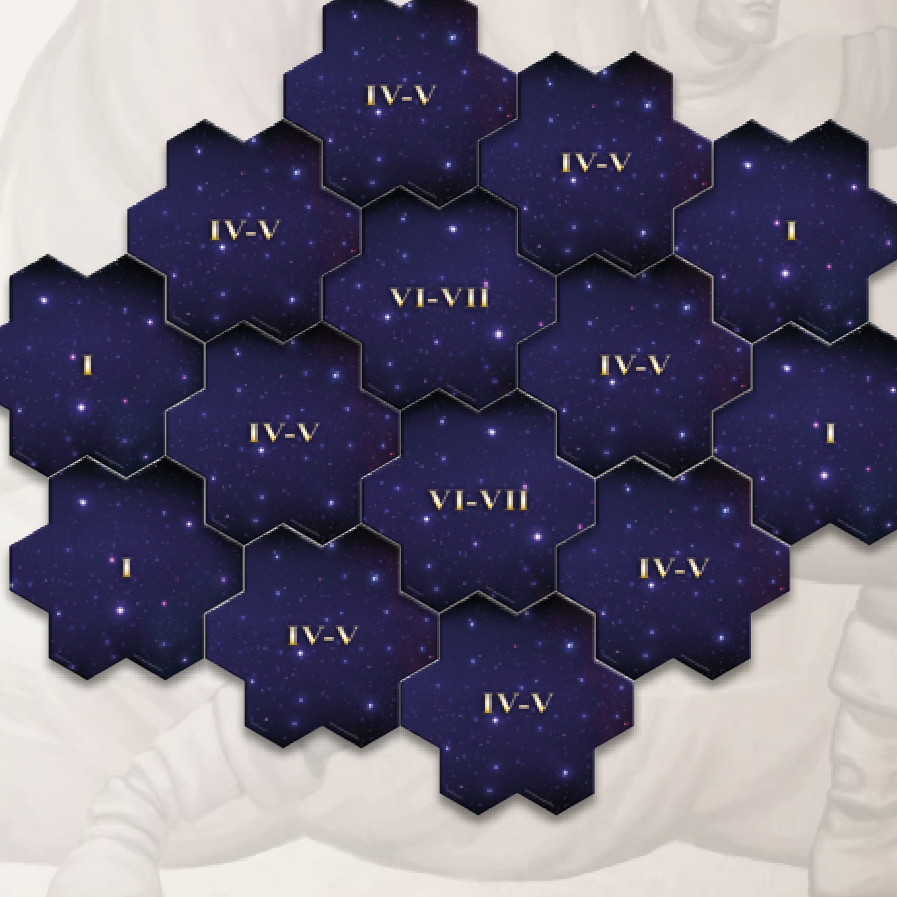
. Картинка со стр. 7.- 4 стартовых I.
- 8 ближних IV–V. Четыре с обелиском (Obelisk), четыре без. Перед укладкой разложите их на две стопки и кладите через одну, чтобы тайлы с обелиском не соседствовали.
- 2 центральных VI–VII. На одном должно быть поле грааля (Grail). В базе это C2. Второй — без грааля. В базе остаётся C1.
- 8 дальних II–III. Каждому игроку по два, рубашкой вверх рядом с картой героя. На схеме их нет.
Жетон грааля из базы держите рядом, пока его не возьмут.
Особые правила
Правила альянса, стр. 5: победа и поражение общие. Артефакты меняют, когда герои стоят на соседних полях. Ресурсы можно передать в ход любого из двоих, соседство не нужно. Союзник не ставит флаг на поле, которое уже пометил другой игрок того же союза.
Во время сценария:
- Грааль берёт только главный герой.
- Грааль можно взять только один, даже если тайлов с граалем два.
- Союз не входит на поле с жетоном грааля, пока не посетил 4 разных обелиска (Obelisk) или пока жетон хотя бы раз не брал любой герой. Книга пишет «союз», не «каждый герой».
- Чтобы взять жетон, герой тратит на поле грааля 2 очка передвижения.
- Герой, который разбил героя с жетоном, забирает жетон.
- Герой с жетоном сдался: жетон кладут на поле сдачи.
- Нейтралы разбили героя с жетоном: жетон кладут на поле, где героя разбили.
- Жетон грааля повышает доход золота на 5.
Победа
К концу 12-го раунда союз побеждает, если жетон грааля доставлен в один из его городов (Town).
События
3-й, 6-й и 9-й раунды, в начале: каждый герой получает положительную мораль. На этот раунд она или дольше, книга не пишет.
Search for the Grail
Столкновение · 2–3 игрока · Крепость
О миссии
Источник: книга миссий Крепости, стр. 8–9. На странице стоит пометка Clash. Режим: столкновение, 2–3 игрока.
Говорят, грааль потерян где-то в этих краях, и вам велено его найти и вернуть. Берегитесь: приспешники врагов тоже тянут к нему руки.
Кто играет
2 или 3 игрока. Каждый сам за себя. Фракцию книга не сужает.
Длина
10 раундов. Если к концу 10-го условие не выполнено, проигрывают все. Если при этом у игрока уже есть жетон грааля, ему дают срок до конца 13-го, чтобы вернуть грааль в свой город (Town) фракции. Не вернул — проигрывает и он. Что в эти лишние раунды делают игроки без жетона, книга не пишет.
Старт
Каждому:
- 16 золота, 4 стройматериала, 1 драгоценность.
- Доход: 10 золота, 0 стройматериалов, 0 драгоценностей.
- Бронзовое жилище (Dwelling).
- 2 бронзовых отряда стороной Pack: самые дешёвые по цене найма.
Стартовый бонус сложности действует. Нейтралы на полях — от той же сложности.
Карта
Схема на двоих, стр. 9.
Схема на троих, стр. 9.
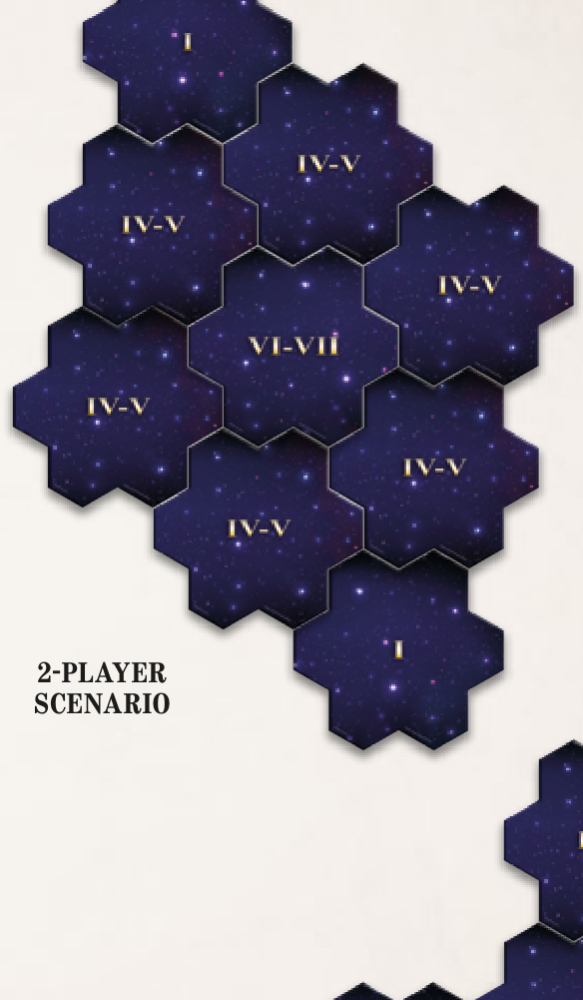
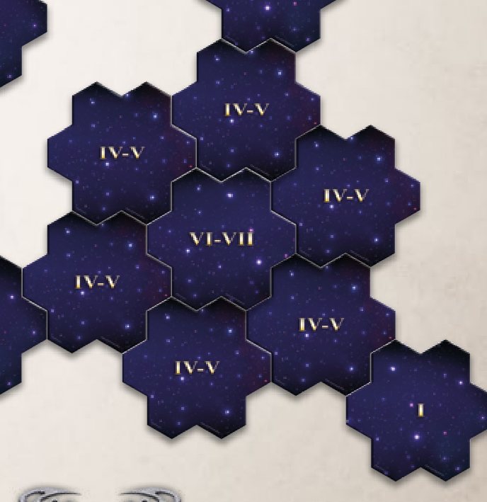
- Стартовых I — по числу игроков.
- 6 ближних IV–V. Три с обелиском (Obelisk), три без, через одну стопку, чтобы тайлы с обелиском не соседствовали.
- 1 центральный VI–VII с полем грааля. В базе это C2.
- Дальних II–III — по два каждому. На схеме их нет. Когда класть, книга не пишет.
Жетон грааля из базы держите рядом.
Особые правила
- Грааль берёт только главный герой.
- Грааль можно взять только один, даже если тайлов с граалем два. На этой схеме тайл один.
- На поле с жетоном нельзя встать, пока герой не посетил 2 разных обелиска (Obelisk) или пока жетон хотя бы раз не брал любой герой.
- Чтобы взять жетон, герой тратит на поле 2 очка передвижения.
- Герой, который разбил героя с жетоном, забирает жетон.
- Сдача: жетон остаётся на поле сдачи.
- Нейтралы разбили героя с жетоном: жетон остаётся на поле боя.
- Жетон повышает доход золота на 5.
Победа
Главный герой берёт жетон грааля и возвращается с ним в свой город (Town) фракции.
События
3-й и 9-й раунды, в начале: все герои получают +1 к передвижению (Movement). На раунд или до конца партии, книга не пишет.
Playing with Fire · 1. Farming Towns
Кампания · 1 игрок · Крепость
Книга миссий Крепости. Сценарий: стр. 10–11. Рассказ: стр. 12–15.
1. Farming Towns
Источник: книга миссий Крепости, стр. 10–15: подготовка и схема 10–11, рассказ 12–15. Правила кампании — книга миссий базы, стр. 18–19. Режим: кампания, 1 игрок, фракция Крепость.
После восстановления Эрафии культ некромантии лорда Haart объявили вне закона, и его люди ушли под землю. Культисты воскресили вождя и решили перебраться в Tatalia. В то же время ведьма Adrienne, отучившись у клириков в Steadwick, возвращается на родину. Свои ей не доверяют ещё и потому, что она берёт огонь, редкий в Tatalia. Она узнаёт, что рыцарь смерти превращает местных в жатву для нежити. Верните землю и выследите это зло.
Подготовка игрока
Фракция: Крепость. Герой: Adrienne или Wystan.
Армия: Few Gnolls и бронзовый нейтрал Rogue. Карту Rogue найдите в колоде нейтралов до начала.
Ресурсы: 12 золота. Зданий нет. Доход по правилам кампании базы: 10 / 0 / 0. Пока город (Town) не взят, нанимать постройками города и производить ресурсы нельзя.
Бонус сценария, один на выбор: поиск (3) в артефактах, поиск (3) в заклинаниях или +4 золота. Стартовый бонус сложности заменён этим выбором.
Опыт не растёт выше 5-го уровня. Карту Diplomacy можно применять к бронзе и серебру даже без соответствующего жилища (Dwelling). Отложите две копии Diplomacy. Если в колоде навыков карта одна, книга не пишет, откуда взять вторую.
Нейтралы полей — от выбранной сложности. Город врага защищает нейтральная армия уровня III той же таблицы. Армия NightStalkers от сложности не меняется.
Подготовка героя ИИ
Фракция: Некрополис. Герой: NightStalkers.
Армия: Pack Vampires, Pack Liches, Pack Zombies, серебряные нейтралы Mummies. Карту Mummies найдите в колоде нейтралов.
Колода ИИ: 2 Magic и 4 Might. Колода заклинаний: 2 Curse.
Карту Zombies отложите: её подменяют в бои с нейтралами.
На карте отдельной фигуры врага нет. Бой начинается из рассказа.
Карта
Соберите, как на картинке
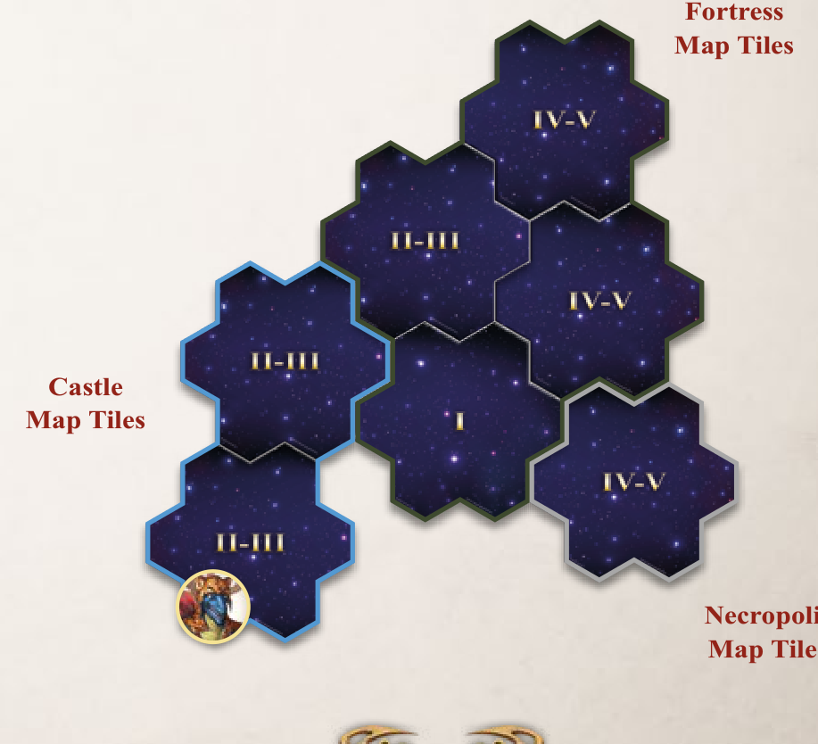
. Картинка со стр. 11. На ней три группы: Замок, Крепость, Некрополис.- Стартовый I: Крепость S5.
- Дальние II–III: 2 Замка из F3, F6, F9 и 1 Крепость из F13, F14, F15.
- Ближние IV–V: 1 Некрополис из N1, N4 и Крепость N9, N10.
Героя поставьте на пустое поле самого нижнего левого тайла, как можно дальше от старта Крепости. Поверните тайл так, чтобы пустое поле стало самым левым полем карты. Этот тайл уже открыт. На схеме портрет лежит на дальнем тайле группы Замка.
Победа и поражение
Победа: выполнить оба условия из «Кое-что не меняется». Их открывает 6-й раунд.
Поражение:
- к концу 4-го раунда город (Town) не взят;
- условия «Кое-что не меняется» не выполнены. В конце 13-го это поражение, если условия всё ещё не выполнены.
События
1-й раунд: прочитайте «Прошу, помогите нам!». Герой сразу получает один уровень. Вместо обычной карты навыка возьмите Diplomacy. Когда стартовая рука собрана, вторую Diplomacy положите на верх колоды.
Вход на поле вражеского города (Town): город можно взять. Его защищает нейтральная армия уровня III. После захвата прочитайте «Город Basdar».
4-й раунд, в конце: нет города — поражение.
6-й раунд: прочитайте «Кое-что не меняется».
До 6-го раунда обелиск (Obelisk) ничего не делает. После 6-го он запускает событие рассказа.
8-й раунд: снимите чёрные кубики со всех локаций. Их можно посетить снова.
13-й раунд, в конце: поражение, если условия «Кое-что не меняется» не выполнены.
Каждый бой с нейтралами: замените один бронзовый отряд на Few Zombies.
Сценарий завершён: прочитайте «Где свет, там и тень».
Колода между сценариями
Книга миссий базы, стр. 19. После победы из текущей колоды отложите карты характеристик и специальность 1-го уровня. Остальные специальности уберите. Из того, что осталось, выберите 5 карт и добавьте к отложенным. Это стартовая колода следующего сценария. Уровень снова I.
Рассказ
Не читайте всё подряд:
- «Прошу, помогите нам!» — в 1-м раунде.
- «Город Basdar» — после захвата вражеского города (Town).
- «Кое-что не меняется» — в 6-м раунде. Здесь открываются условия победы.
- «Грязная политика» — когда собраны 40 золота, 20 стройматериалов и 10 драгоценностей.
- «Ночные охотники» — вход на обелиск (Obelisk) после 6-го раунда.
- «Тюрьма вампиров» — победа над NightStalkers.
- «Где свет, там и тень» — когда выполнены оба условия победы, и ещё раз, когда сценарий завершён.
Прошу, помогите нам! (Please, Help Us!)
Когда читать: 1-й раунд.
Adrienne поднялась на холм. За ним край ещё больше походил на её Tatalia: лес гуще, луга уступают мшистым болотам, мелькнули травы, которые растут только дома. Радости это не принесло. Куда ни глянь, пусто. Нет дыма из труб, нет телег, нет крестьян на полях. Она надеялась, что знакомые виды окупят долгую дорогу из Эрафии. Сердце падало у каждого брошенного города.
«Живой души я так и не встретила, — пробормотала она. — Только застарелый запах…»
Она предпочла бы даже дразнилки детей этой тишине. Огненную ведьму, как её стали звать, тянет на свою землю, и своя земля её не жалует. В Tatalia боятся магии огня и чураются тех, кто ей владеет. Эту цену Adrienne платила сознательно. Она знала, какая в огне сила, и хотела ею владеть. Это желание вывело её из дома и из всего прежнего мира. Она не жалела. Годы у клириков в Steadwick были нужны. Без них её бы не было. Но слишком долго не было болот, которые она звала домом.
Шевельнулись кусты под сосной. Она спрыгнула и приготовилась к бою. Это были не звери, а крестьяне. Кровь запеклась на лицах, тела как у призраков. Насилу, после воды и уговоров, один рассказал.
«Я пахал, жена с детьми собирала ягоды.» Он закрыл глаза. «Потом на нас налетел вой, какого мы не слышали. Я замер и смотрел, как эти твари летят к жене и детям.» Он всхлипнул. «Потом я бежал, бежал и не оглядывался. Через два дня меня нашёл Mortimer. Теперь он мёртв. Или почти. Ходит, а нас не видит и не слышит. Он убил собственного сына.»
Хуже и быть не могло. Кто и зачем — неизвестно.
За столом: герой сразу получает один уровень. Вместо обычной карты навыка возьмите Diplomacy. Когда стартовая рука собрана, вторую копию Diplomacy положите на верх колоды.
Если войдёте на поле вражеского города, его можно взять. Защита — нейтралы уровня III. После захвата прочитайте «Город Basdar».
Город Basdar (Town of Basdar)
Когда читать: вражеский город (Town) взят.
У полуразрушенного Basdar в рядах шепчутся. Люди думают о домах и о том, останется ли к чему возвращаться. Дух падает. Нужны добрые вести, иначе войну не удержать.
Донесения подтверждают худшее: крестьян режут, чтобы собрать армию нежити. Зачем, неясно.
За руинами прячется девочка. Платье рваное, сама полуголодная. Ей отдают скудные припасы, и она глотает их. Несколько дней она пряталась от разъездов и считала гарнизон. Пятеро на больших чёрных конях. Десять со светящимися посохами. Двадцать кровососов. Тридцать пять парящих женщин в лохмотьях со светящимися глазами. Пятьдесят гниющих тел и сто скелетов в битых доспехах. Договорив, она рыдает.
Этому надо положить конец. Вы объявляете место базой и пишете в Эрафию.
Письмо кончено, когда закат красит шатёр в красный. «Меня зовут Adrienne, ведьма Tatalia. Я знаю, что недавно мы воевали, но теперь нашим землям пора работать вместе. По дороге из Steadwick я встретила крестьян из Brastleton. Мои люди подтвердили: нежить захватила край. Эрафия под ударом этих тварей. На их мольбу ответила только я. Я знаю о вашей беде, но любая помощь будет кстати.»
Вы уже собираетесь отправить письмо, и входит Baltron, самый доверенный советник.
«Adrienne, Эрафия нам не поможет, а ты всё равно клянчишь. Они ещё злы из-за войны и, верно, сами под ударом. Зачем?»
«Я должна попробовать.» У вас короткая улыбка. «Так я закрыла все ходы. Если проиграем, никто не скажет, что я не просила помощи. А если не откажут? Этот шанс я не упущу. Ты не воин. Мне нужны войска, воины или заклинатели. Твоя помощь мне дорога, но её мало. Бой будет нелёгкий, и ты это знаешь.»
Он молчит. На лицо возвращается привычная хмурость.
За столом, после захвата города, выберите одно.
Первый дар: магистрат (City Hall), бронзовое жилище, +30 золота, +3 драгоценности, производство стройматериалов поставить на 2, производство золота поставить на 20.
Второй дар: бронзовое жилище, серебряное жилище, +8 золота, +8 стройматериалов, +1 драгоценность, производство стройматериалов на 2, производство золота на 20.
Кое-что не меняется (Some Things Never Change)
Когда читать: 6-й раунд.
Ночью вы наткнулись на кучи гниющей плоти. Они не двигались, но вы узнали ловушку. Вместо нового боя вы выпустили пламя и выжгли тела. Люди отшатнулись от огненной магии и от того, что ещё недавно было Zombies. Страх в их глазах отвечал на вопрос «зачем».
По дороге за войском поднимается пыль. Скачут двое гонцов. Один из тех, кого вы послали разведать Tatalia. Вернулся только он. Зараза перешла границу. До вождей весть быстро не дойдёт. С бедой придётся справиться без родины. Вождя видели несколько дней назад: рыцарь смерти на огромном чёрном скакуне. Верные исполняют каждый его приказ. Он ушёл глубже в Tatalia. Времени нет.
Второй гонец заставляет сердце дрогнуть: на нём официальный знак Эрафии.
Такой быстрый ответ значит одно. Вы хватаете письмо и деревенеете.
«С сожалением сообщаем, что помочь таким образом не можем. Из-за новой грозной напасти мы не можем отдать ни одного рыцаря или клирика. Смута на границе Эрафии и Tatalia, и мы были бы благодарны, если бы вы со своими людьми убрали эту докуку. Есть, впрочем, один рыцарь, которого, может быть, удастся нанять. Его держат за выкуп люди, называющие себя NightStalkers. Освободите его и покажите это письмо, и он предложит нужную вам помощь.»
Вы комкаете письмо. Дураки не слушают. Пока вы читали, появился Baltron. По лицу он всё понимает.
«Дорогая юная ведьма…» Сейчас будет «я же говорил».
«Я предупреждал не клянчить помощи у Эрафии. Даже до таталийцев не достучаться. Я удивлён, что они вообще написали…»
«Тихо! Решения здесь принимаю я. Не надо мне этого „я же говорил“. Я знала, каким будет ответ. Ходы закрыты, и мы можем жечь эту чуму.» Руки сжались, сила поползла вокруг вас змеёй. В его глазах страх. Вы выходите и ругаете его за то, что так разозлились. Гонцы вас останавливают.
«Это не всё.» Он отдаёт второе, менее официальное письмо лордов окраин Эрафии. Они заметили ваши передвижения. Им нужны деньги на войну. Своими бедами они так заняты, что беды на границе не видят. Если гонец не вернётся с податью этого края, он донесёт военным Эрафии, что землями тут правит таталийская ведьма. Это для вас очень плохо. Наглости нет предела. Baltron молча уходит. Вы велите ставить лагерь.
Ночью свои, боясь огненной магии, сторонились вас. Утром в небо пошёл чёрный дым. Лес горел. Люди мрачно стояли вокруг костра и жгли мёртвых. Они свыклись с огнём: если тела не уничтожить дотла, те встанут в ряды нежити. Так лучше.
За столом этот кусок открывает два условия победы. Нужны оба.
1. Соберите 40 золота, 20 стройматериалов и 10 драгоценностей. Когда соберёте, прочитайте «Грязная политика». Эти ресурсы вы потеряете.
2. Войдите на поле с обелиском, прочитайте «Ночные охотники» и победите армию NightStalkers.
Когда выполнены оба, прочитайте «Где свет, там и тень».
Грязная политика (Dirty Politics)
Когда читать: собраны 40 золота, 20 стройматериалов и 10 драгоценностей.
Скрипя зубами, вы отдаёте подать. Люди в последний раз считают ящики, которых требуют эрафийские лорды, под глазом их гонца.
Одной заботой меньше, и вы идёте дальше. Войску от этого не легче. В лёгких вонь смерти, в воздухе вкус тлена. На ближнем камне надпись: «Бойтесь NightStalkers!»
Вы собираете людей и идёте с новой решимостью.
За столом верните в запас ресурсов 40 золота, 20 стройматериалов и 10 драгоценностей.
Ночные охотники (NightStalkers)
Когда читать: вход на обелиск (Obelisk) после того, как прочитано «Кое-что не меняется».
В маленькой долине земля иссечена недавней битвой. Тела, оружие, лошади. По деревьям гуляет крик мучимых. Разведчики доносят: Vampires кормятся уцелевшими. Слышен крик их вождя. Sir Michael жив.
Вы бежите на голос. Из кустов чужая рука хватает вас за локоть.
«Ну надо же, кто пожаловал на порог. Думаешь, возьмёшь нас? Мы так не думаем.»
Вы поднимаете голову. Вампир только что подражал крику Michael.
«Смотрите! Обед!»
Вы выпускаете огонь. Хватка рассыпается, тварь визжит. Их вождь выходит.
«Жалкая кучка, которая хочет стать нашим ужином. Пальчики оближешь. За дело, парни!»
За столом: бой с армией NightStalkers. В первый раунд боя все её отряды получают +2 к инициативе. На отряд Vampire положите 2 жетона урона.
Если победили, прочитайте «Тюрьма вампиров».
Тюрьма вампиров (Prison of the Vampires)
Когда читать: победа над NightStalkers.
Бой кончен. Вы подходите к маленькой тюрьме, которую стерегли вампиры. Внутри ждут эрафийцы. Кто прикован к стене, кто лежит. На всех следы клыков. Вы зовёте Sir Michael. Выходит крепкий человек, живой и в добром виде. Вы показываете письмо. Он читает и опускается на колено. «Я и мои люди клянёмся в верности.» Вы идёте освобождать остальных.
Где свет, там и тень (Where There Is a Light, There Is Always a Shadow)
Когда читать: выполнены оба условия победы.
День был долгий. Знакомая земля стала кучей гниющих тел. Разведчики принесли ещё одну дурную весть. Они выследили рыцаря смерти и узнали, кто он. Эти рыцари смерти и некроманты были живыми членами культа лорда Haart. Они подняли его из мёртвых. Потом он поднял мёртвых собратьев по культу, и те служат ему без остатка.
Вы уходите в простой шатёр поспать. Полог открыт. Если нежить понимает, что такое убийцы, сегодня вы этого не узнаете. Внутри десятки цветов. Это не солдаты и не Baltron. За дверью хихикают спасённые дети. Вы улыбаетесь им и отправляете спать. Эту ночь вы спите хорошо и видите только детство.
Playing with Fire · 2. March of the Undead
Кампания · 1 игрок · Крепость
Книга миссий Крепости. Сценарий: стр. 16–17. Рассказ: стр. 18–20.
2. March of the Undead
Источник: книга миссий Крепости, стр. 16–20: подготовка 16–17, схема 17, рассказ 18–20. Правила кампании — книга миссий базы, стр. 18–19. Режим: кампания, 1 игрок, фракция Крепость.
Подготовка игрока
Фракция: Крепость. Герой: Adrienne или Wystan. Героя поставьте на центральное поле стартового тайла.
Армия: Pack Gnolls.
Ресурсы: 10 золота, 3 стройматериала, 1 драгоценность. Доход: 10 / 0 / 0 и отдельно +5 к производству золота. Как сложить эту прибавку с десяткой на трекере, книга не пишет. Здания: бронзовое жилище (Dwelling) и серебряное жилище.
Бонус сценария, один на выбор:
- Few Lizardmen, Few Dragon Flies и Few Basilisks в армию;
- Few Marksmen, Few Griffins и Few Crusaders в армию.
Стартовый бонус сложности заменён этим выбором. Нейтралы полей — от выбранной сложности. С 3-го раунда книга повышает трудность каждого боя на карте на 1 по таблице поля основных правил (Field Difficulty Level Table, страница 35 той книги). Этой таблицы в книге миссий нет. Это не шкала лёгкая–невозможная: шкала по-прежнему задаёт состав нейтралов, а римская трудность поля растёт отдельно. Армия Nagash от шкалы не меняется. На тяжёлой и невозможной к ней добавляют Arrow Tower.
Подготовка героя ИИ
Фракция: Некрополис. Герой: Nagash.
Армия: Pack Dread Knights, Pack Vampires, Pack Wraiths, Pack Liches.
Колода ИИ: 6 Magic, 1 Might, 3 Skill. Заклинания: 2 Magic Arrow, 2 Curse, 2 Slow.
Навык: Sorcery. Если карты Skill выпали две подряд или в колоде заклинаний ИИ больше нет карт, нанесите урон, равный силе заклинания (Spell Power), отряду игрока с наименьшим здоровьем.
Отложите карты Zombies, Skeletons и Wraiths.
На карте фигуры Nagash нет, пока рассказ не начнёт бой.
Карта
Соберите, как на картинке
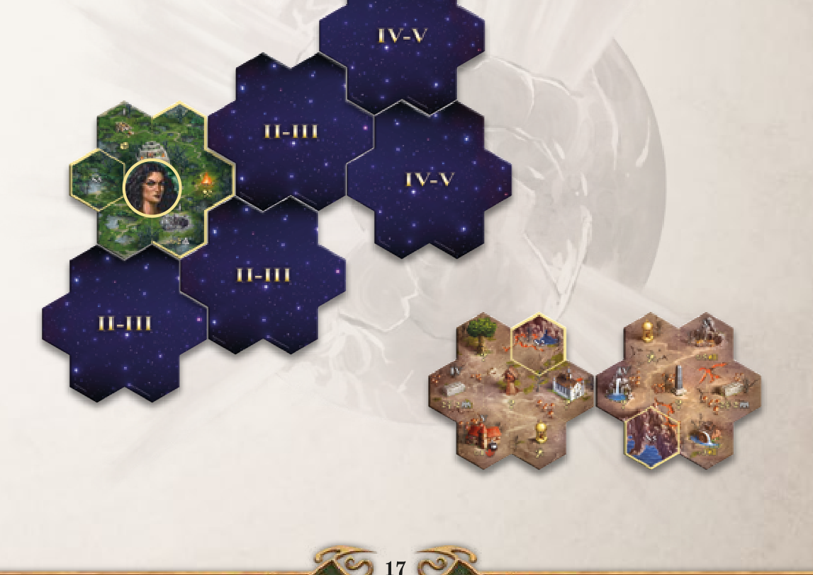
. Картинка со стр. 17.Особые правила
- Первый раз, когда открыт ближний тайл Крепости с обелиском (Obelisk), прочитайте «Дурные решения…».
- На поле с обелиском нельзя войти, пока не помечены флагом все шахты (Mine) и посёлки (Settlement), кроме тех, что на ближних тайлах Темницы.
- Вход на обелиск ближнего тайла Крепости переносит героя на поле с обелиском ближнего тайла Темницы.
Победа и поражение
Победа по стр. 16: поставить кубик фракции на все посёлки (Settlement) и шахты (Mine) карты.
Поражение по стр. 16: конец 12-го раунда, и это условие не выполнено.
Стр. 17 говорит иначе: в конце 12-го поражение, если вражеская армия не разбита. Книга не пишет, входит ли бой с Nagash в условие флагов или это второе, отдельное поражение. В «Дурных решениях…» вторую из двух локаций как раз защищает Nagash.
События
1-й раунд: прочитайте «Тень рыцаря смерти». В каждом бою с нейтралами первый вытянутый бронзовый отряд замените на Few Skeletons.
3-й раунд: прочитайте «Дни рождения — худшее, что есть». С этого хода и до конца сценария трудность каждого боя на карте на 1 выше. В бою с нейтралами первый бронзовый замените на Few Zombies, второй бронзовый — на Few Skeletons.
5-й раунд: прочитайте «Подарок ко дню рождения». В бою с нейтралами первый бронзовый замените на Few Zombies, первый серебряный — на Pack Wraiths.
12-й раунд, в конце: см. «Победа и поражение».
Открыт ближний тайл Крепости с обелиском (Obelisk): прочитайте «Дурные решения…».
Сценарий завершён: прочитайте «Последние из них».
Колода между сценариями
Книга миссий базы, стр. 19. Отложите характеристики и специальность 1-го уровня, остальные специальности уберите, из оставшегося выберите 5 карт. Уровень снова I.
Рассказ
- «Тень рыцаря смерти» — в 1-м раунде.
- «Дни рождения — худшее, что есть» — в 3-м раунде.
- «Подарок ко дню рождения» — в 5-м раунде.
- «Дурные решения…» — когда открыт ближний тайл Крепости с обелиском (Obelisk). В конце куска бой.
- «Последние из них» — победа над Nagash и когда сценарий завершён.
Тень рыцаря смерти (The Death Knight's Shadow)
Когда читать: 1-й раунд.
Освободив границу Эрафии и Tatalia от нежити, вы уходите глубже и боитесь того, что видите. После войны восстановления культ Haart распался и затаился. Теперь они снова наверху и воскресили вождя. Lord Haart поднят из мёртвых и идёт по Tatalia, собирая армию нежити чудовищного размера. Он ходит по таталийской земле рыцарем смерти.
«Если я продолжу охоту, мне нужна помощь. Надеюсь, соотечественники окажутся мудрее и не отвернутся от героя, который берёт огонь…» С этими мыслями вы пытаетесь уснуть. В шатёр врывается Baltron.
«Adrienne! С людьми беда! Скорее!»
Вы выскакиваете в лагерь и попадаете в свалку. Таталийцы и эрафийцы дерутся. «Прекратить!» Голос несётся, и никто не слушает. Вы зовёте гнев и выпускаете огонь. Пламя бьёт в ночное небо, люди бросаются в укрытие.
Вы ищете зачинщиков. Это легко. Двух горячих кавалеров уже дважды наказывали за то, что они травили Mighty Gorgons в рядах, пытаясь на них ездить. Один мёртв: узнал, почему на Mighty Gorgon не смотрят в глаза. Вы ловите второго.
«Драк. Больше. Не. Будет.» Последнее слово вы отмечаете маленьким выплеском огня. Кавалеру стоит сменить штаны. Вы возвращаетесь в шатёр. Baltron доругивает, лечит раненых и хоронит мёртвых.
У входа ждут разведчики. Вести плохие. Первые не ушли далеко: налетели на нежить. У рыцаря смерти нашлась выдумка. Войско он оставил стеречь жилища всех жителей Tatalia. Когда появились новобранцы, готовые драться за Tatalia, нежить ударила. На места наложена сильная магия: если нежить просто стоит в крае, павшие таталийцы встают и пополняют врага. Так армии рыцаря смерти будут пухнуть каждую неделю и скоро станут неостановимы. Следующие разведчики говорят, что так уже повсюду. Нежить надо вычистить, а таталийцев вырвать из костяных рук.
Замены отрядов в боях с нейтралами — в «Событиях», они зависят от раунда.
Дни рождения — худшее, что есть (Birthdays Are the Worst)
Когда читать: 3-й раунд.
Сегодня ваш день рождения, и день тяжёлый. В отличие от многих, вы не можете праздновать с семьёй, и даже соотечественники не станут праздновать с вами. Вы тихо уходите в лес. Хотелось тишины на день, хватит и нескольких утренних часов. Не хватило: знакомый голос советника.
«Миледи, беда.» Вы оборачиваетесь и держите лицо. «В край пришла чужая ведьма, чтобы нам помочь. Она обрадовалась, что кто-то уже бьётся с чумой, пока не узнала про вас, Adrienne. Ваш огонь заставил её уйти к Вождям и донести о вашем прегрешении. Её страх может свести наши труды на нет.»
Лицо Baltron серьёзно. Вы ждёте дурных вестей. Они всегда дурные.
«Если она дойдёт до Вождей, это будет через несколько недель. Потом ей ещё ждать приёма. С Праздником жизни в Krewlod они смотрят, кто станет новым королём, если король вообще будет. Пока нового вождя Krewlod не оценят, наши вожди держат большие силы на границе.» Он ждёт ответа и продолжает: «Когда всё это решится, Вожди смогут заняться вами. Если мы проиграем, виноватой назовут вас, даже если вы ни при чём. Из-за огня таталийцы будут вас чураться, пока их собственные жизни не окажутся под угрозой.»
Он сплюнул: ему противен взгляд своего народа на магию огня. Только этим знанием вы очистили границу и теперь освобождаете людей. Память у людей короткая. И всё же, едва выберут krewlodского короля и у Вождей освободятся руки, все глаза будут на вас. Время кончается.
«К тому сроку мы должны уйти из этого края и, надеюсь, сесть на хвост настоящей угрозе.»
«Согласен, друг мой. Мой выбор силы — моя ноша. Тебе её нести не обязательно.»
«Чушь, и ты это знаешь.» От его слов у вас слабая улыбка. «Теперь к делу. От спасённых дурные вести: кто-то пытался обмануть смерть и спрятался в ближних подземных пещерах. Нежить пошла за ними. Этих тварей надо уничтожить, пока не поздно.»
Вы киваете. День и так плох, и вам нужна хоть минута покоя. Baltron уходит. Наконец вы одни. Ненадолго.
С этого хода трудность боёв на карте выше на 1, и меняется подмена нейтралов. См. «События».
Подарок ко дню рождения (Birthday Present)
Когда читать: 5-й раунд.
«Простите, — осторожно подходит один из лейтенантов. Последние дни у вас дурное настроение. — Мы поняли, что день рождения был несколько дней назад. Вот вам кое-что.» Вы берёте свёрнутый свиток. Это копия письма той чужой ведьмы, о которой говорил Baltron. Адресовано великим Вождям Tatalia.
Дела плохи. Мы завалены нежитью. Все деревни в крае пали. Нас мало, врага вдвое больше. Подтверждено: Lord Haart поднят из мёртвых и ведёт своих, а это одни Liches и рыцари смерти. Они жгут болота, пока ничего не останется. Помогите, или сгорит вся Tatalia. Tiva.
Письмо не оставило Вождям выбора: такое заявление надо проверить. Если Lord Haart и правда на свободе, это важнее ведьмы, которая пользуется огнём. Вождей задержали. По крайней мере пока.
Вам нравится подарок.
Подмена нейтралов с этого раунда — в «Событиях».
Дурные решения… (Bad Decisions...)
Когда читать: открыт ближний тайл Крепости с обелиском (Obelisk).
У рыцаря смерти добрая фора, и он её не разбазарил. Недавно здесь были дымящиеся руины. Земля приходит в себя, но сочным болотам ещё лечить её. Кое-где деревья уже быстро возвращаются, кое-где ещё голо. Первый лейтенант спрашивает, почему вы улыбаетесь. «Эти болота трудно сжечь: воды много, она гасит огонь. Пожары съели большие куски леса и гор, а земля лечится быстрее, чем они ждали. Только чужаки не понимают, как быстро встают наши болота.» Улыбка сходит, когда вы видите старый ход под землю и кучи гниющих тел у входа. Сюда бежали многие таталийцы. Теперь их надо освободить: нежить слепо пошла следом.
Внутри по туннелям гуляет леденящий вой. Пещеры так велики, что не понять, откуда он. Нежить может быть за много миль или за ближайшим поворотом. Войско дрожит. Вы проходите вперёд. Всё тело велит повернуть и спрятаться. Это не выход. Войску нужен вождь, за которым идут. Вы зажигаете путь магией и ускоряете шаг, чтобы стряхнуть собственную дрожь. Скоро люди идут за вами.
За столом: после этого куска две локации надо пометить кубиком фракции. На второй вместо обычной армии бой с армией Nagash. На его сторону доски положите карты Wall и Gate.
На тяжёлой и невозможной сложности добавьте ещё карту Arrow Tower.
Если победили, прочитайте «Последние из них».
Последние из них (The Last of Them)
Когда читать: победа над Nagash.
Бой был долгий. Люди разбрелись: кто добивает уцелевшую нежить, кто вяло ставит временный лагерь. Вид у них не лучше, чем у нежити, с которой они только что дрались. В одном овраге вы находите сотни перепуганных Gnolls. Они не смели выйти, пока тварей не раздавили. Угроза ушла, и они встречают вас радостно. Хоть кого-то из своих спасти удалось.
В арьергарде суета. Гонец несёт официальный ответ на письмо Tiva. От того, что они решили, может стать очень скверно.
«Tiva. Мы оценили ближайшее положение. Tatalia жгут Lord Haart и его люди, не огненная ведьма. Всякую её вольность оценят позже. Помощь пришлём, как только сможем. Продолжайте отличные успехи. Вожди.»
Вы смеётесь вголос.
Playing with Fire · 3. Burning of Tatalia
Кампания · 1 игрок · Крепость
Книга миссий Крепости. Сценарий: стр. 21–22. Рассказ: стр. 23–25.
3. Burning of Tatalia
Источник: книга миссий Крепости, стр. 21–25: подготовка 21–22, схема 22, рассказ 23–25. Правила кампании — книга миссий базы, стр. 18–19. Режим: кампания, 1 игрок, фракция Крепость. Это последний сценарий кампании.
Подготовка игрока
Фракция: Крепость. Герой: Adrienne или Wystan, на центральном поле старта.
Армия: Pack Gnolls, Few Lizardmen.
Ресурсы: 15 золота, 6 стройматериалов, 1 драгоценность. Доход: 10 / 0 / 0, отдельно +5 к производству золота и +1 к производству драгоценностей. Как сложить прибавки с трекером, книга не пишет. Здания: бронзовое жилище (Dwelling), серебряное жилище, цитадель (Citadel).
Бонус сценария, один на выбор:
- Pack Dragon Flies и Few Basilisks в армию;
- Pack Marksmen и Few Crusaders в армию.
Стартовый бонус сложности заменён этим выбором. Нейтралы полей — от выбранной сложности. Трудность каждого боя на карте с самого начала на 1 выше по таблице поля основных правил (Field Difficulty Level Table, страница 35 той книги). Книга миссий этой таблицы не печатает. Армии трёх врагов от шкалы сложности не меняются.
Подготовка героев ИИ
Фракция: Некрополис. Трое: Lord Haart’s Follower 1, Lord Haart’s Follower 2 и Lord Haart. Две миниатюры героя Некрополиса изображают врагов. На карту их кладут по событиям, на заблокированные поля ближних тайлов.
Оба последователя, одна армия: Pack Zombies, Pack Vampires, Pack Liches, Few Dread Knights. Колоды: «Follower 1 and 2 Decks: 2 Might». Книга не говорит, это одна колода на двоих или по 2 Might каждому.
Lord Haart: Pack Black Dragons, Pack Dread Knights, Pack Ghost Dragons, Pack Liches. Колода ИИ: 6 Might, 3 Magic, 2 Skill. Навык: Offense.
Общая колода заклинаний: 2 Curse, 1 Slow. Книга не делит её по героям.
Враги ходят по обычным правилам, после хода человека. На заблокированное поле можно войти, если на нём стоит вражеский герой. Победа над армией вражеского героя даёт 2 драгоценности.
Карта
Соберите, как на картинке
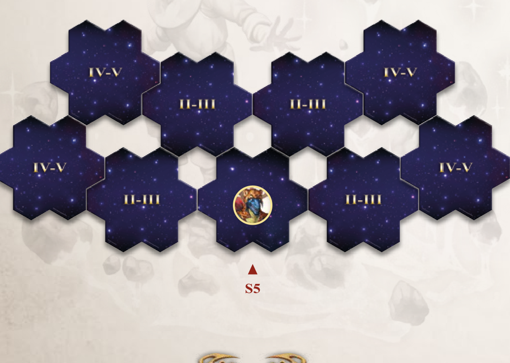
. Картинка со стр. 22.- Стартовый I: Крепость S5.
- Дальние II–III: 4 случайных из Некрополиса F1, F4, F7 и Крепости F13, F14, F15. Книга пишет «or» и не говорит, все четыре из одной фракции или каждый тайл из любой.
- Ближние IV–V: Некрополис N1, N4 и Крепость N9, N10.
Центральный тайл вначале не кладут. Отложите утопию драконов (Dragon Utopia) C1. Её добавляют после обоих последователей, см. «Четыре всадника».
Особые правила
Вход на обелиск (Obelisk) запускает рассказ. Трудность боёв на карте выше на 1 с первого раунда, см. подготовку.
Победа и поражение
Победа: посетить оба обелиска (Obelisk) и разбить все три вражеские армии.
Поражение:
- потерян контроль над своим городом (Town) фракции;
- проигран один бой;
- конец 14-го раунда, и вражеские армии не разбиты.
События
1-й раунд: прочитайте «Сезон благословений». Герой сразу получает один уровень: поиск (2) в колоде навыков.
5-й раунд: прочитайте «Армии со всех сторон». Откройте все ещё закрытые ближние тайлы на правой стороне карты. Первого последователя Lord Haart поставьте на самое правое заблокированное поле ближних тайлов.
9-й раунд: прочитайте «Четыре всадника». Откройте все ещё закрытые ближние тайлы на левой стороне. Второго последователя поставьте на самое левое заблокированное поле ближних тайлов.
14-й раунд, в конце: нет победы — поражение.
Вход на обелиск (Obelisk): прочитайте «Фолиант земли», если это первый, и «Фолиант огня», если другой.
Сценарий завершён: прочитайте «Умереть героем или…».
Колода между сценариями
Следующего сценария в книге нет. Если колоду сохраняют, шаги те же, книга миссий базы, стр. 19: отложить характеристики и специальность 1-го уровня, убрать остальные специальности, из оставшегося выбрать 5. Уровень снова I.
Рассказ
- «Сезон благословений» — в 1-м раунде.
- «Армии со всех сторон» — в 5-м раунде. В куске выбор награды.
- «Четыре всадника» — в 9-м раунде. Выбор награды и выход к последнему бою.
- «Фолиант земли» и «Фолиант огня» — входы на обелиски (Obelisk).
- «Как нежить в мышеловке» — вход на центральное поле добавленного центрального тайла, перед боем с Lord Haart.
- «Умереть героем или…» — после победы над Lord Haart и когда сценарий завершён.
Сезон благословений (A Season of Blessings)
Когда читать: 1-й раунд.
«Не верю», — бормочете вы Baltron, разглядывая карты края на мшистом полу шатра. Последние донесения о Lord Haart не складываются. Разведчики говорят, мёртвый рыцарь повернул на северо-запад и встал у берега. Сидит и ничего не делает. «Не знаю, что мёртвые помнят из жизни среди живых. Если у Lord Haart и была память о Tatalia, она ему изменила. Теперь он у меня в ловушке.»
Baltron кивает, будто ждал этой минуты. «Однако…»
«Однако дух армии низок, — договариваете вы. — Мои не любят идти за огненной ведьмой.»
Вы выходите из шатра. Gnolls только что разожгли сырые дрова и показывают людям Sir Michael фокусы, которые знают только жители этого края. Те сначала не хотели, потом попробовали разжечь свой костёр. Получился взрыв смеха. Начался сезон дождей, и он щедро полил лес. Вы улыбаетесь.
«И всё же нежитью им нравится становиться ещё меньше.»
«Вырвать Tatalia из костяных рук будет нелегко…» Он выдерживает паузу, видит, что восторга нет, и продолжает: «Но нам, может быть, повезло. В этом крае два старца знают древние обряды и заклинания. Хижины провидцев должны вывести нас к фолиантам огня и земли.»
«Будем надеяться, они согласятся помочь огненной ведьме», — шепчете вы.
За столом: герой сразу получает один уровень. Поиск (2) в колоде навыков.
Вход на обелиск: прочитайте «Фолиант земли».
Армии со всех сторон (Armies from All Directions)
Когда читать: 5-й раунд.
Вожди сдержали слово и прислали помощь. Часть войск уже собирается, вернувшись с границы. Это закалённые люди. Пока вы смотрите на сбор, гонец приносит весть о нескольких городах, которые устояли. Долго они не продержатся. Нежить Haart сточила их силы. Горожане просят помощи, пока их не сделали нежитью. Гонец знает только последнее место вражеской армии, но по следу разрушений понятно, куда она идёт. Прямо на вас.
Выберите одно:
- Few Gorgons и +5 золота;
- Few Zealots и +5 золота;
- +15 золота.
На карту в этом раунде выходит первый последователь, см. «События».
Четыре всадника (Four Riders)
Когда читать: 9-й раунд.
Через болота быстро приходят четыре всадника. За каждым ещё две лошади, все в сумах. Они спешиваются, стаскивают сумы и тяжело бросают на землю. По виду понятно, что внутри.
Один говорит: «Привет, Adrienne. Весть от вождей. Войск сейчас не пришлют, но шлют припасы на строительство городов здесь…»
Разведчики доносят: ещё одна армия идёт на вас.
Выберите одно:
- +15 золота, +4 стройматериала, +4 драгоценности;
- +10 стройматериалов, +6 драгоценностей.
За столом: когда разбиты обе вражеские армии, которые уже на карте, герой может идти в последний бой. Подойдите к правому верхнему тайлу карты и потратьте 1 очко передвижения, чтобы добавить центральный тайл. Лишь бы он соединялся с картой, кладите его куда хотите. Войти на него можно, только если посещены оба обелиска. На центральном поле этого тайла прочитайте «Как нежить в мышеловке» и бейтесь с армией Lord Haart.
Фолиант земли (Tome of Earth)
Когда читать: вход на обелиск (Obelisk). Если этот обелиск уже разрешён, читайте «Фолиант огня».
Вы подходите к старой хижине в густой зелени. Сама хижина в мху и лишайнике. Осторожно открываете дверь. У очага в кресле-качалке сидит старая провидица. Лицо сморщено так, что вы думаете, не лишайник ли это. Едва вы допускаете, что она мертва, глаза открываются.
«Я ждала тебя.»
«Значит, ты знаешь, за чем я пришла.»
«Я слышала о твоей нужде, но и у меня есть нужда. Чтобы покинуть этот дом, я должна быть хорошо защищена, прежде чем отдам свою единственную другую защиту — фолиант магии земли.»
Вы роетесь в пожитках.
Выберите одно: уберите из руки один артефакт со значком защиты (Defense) или уберите из армии один серебряный отряд. Если не можете ни того ни другого, вернитесь, когда сможете. Тогда кусок можно закончить.
Положите на поле кубик фракции. С этих пор, посещая поле снова, можно убрать из руки одну карту артефакта и взять одну новую карту заклинания.
Вход на другой обелиск: прочитайте «Фолиант огня».
Фолиант огня (Tome of Fire)
Когда читать: вход на второй обелиск (Obelisk).
За Lord Haart и его нежитью тянется заживающий след разрушения. Сквозь горы уже пробивается зелень. Болота Tatalia скоро оправятся от больших пожаров. Но если Haart и его людей не разбить скоро, прекрасные болота станут голой землёй нежити. Даже болоту нужно, чтобы что-то осталось целым.
Впереди ещё одна хижина провидца. Будто кто-то выдолбил огромный гриб и сделал из него дом. Baltron бежит туда первым, и к вашему приходу они уже говорят.
«…Чтобы закончить фолиант магии огня, мне нужен Sword of Hellfire», — говорит старуха страшно сиплым голосом. Она живее прежней провидицы, хотя не моложе.
«Мы спешили, зная, что у вас фолиант огня. Нежить кишит по всему краю, и времени нет. И зачем вам меч, чтобы делать магическую книгу?»
«Это моё добро, и я решаю, готово оно или нет. Меч. Принесите его, и я…»
«Если вам нужен адский огонь, я могу принести его сюда», — перебиваете вы. Голос холодный, а в руке яростно вспыхивает пламя.
«Я не говорила, что не открыта к переговорам», — отвечает старуха, не в силах оторвать взгляд от огненного шара.
Выберите одно: уберите из руки один артефакт-реликвию (в книге Relict) или потеряйте 4 драгоценности. Если не можете, вернитесь позже.
Положите на поле кубик фракции. Повторный визит, как у фолианта земли: уберите артефакт из руки и возьмите одно новое заклинание.
Как нежить в мышеловке (Like an Undead Mouse in a Trap)
Когда читать: вход на центральное поле добавленного центрального тайла, до боя с Lord Haart.
Дни вы шли за густым столбом дыма. Дым редеет, и вот разрушение. Здесь Lord Haart выжег путь через Tatalia и собрал армию нежити из убитых огнём. В носу едкий смрад горелых тел. Напротив войска стоит сам Lord Haart, за спиной нежить, неподвижная. Он лично ведёт людей в бой, а не держит расстояние и не бежит. Чёрная фигура на чёрном коне завораживает. Почти величественно. Сколько уважения эта осанка держала, когда он был жив.
«Почему он не бежал? Почему дал загнать себя в угол? Гордость? Кривой остаток рыцарских правил? Или другое?»
Вы велите Baltron готовить атаку. Сами берёте в руки фолиант земли и фолиант огня. Влив в них силу, вы открываете их. Воздух густеет от магии. Вы плетёте заклинания, пока армия идёт в атаку.
За столом: в первый раунд этого боя можно прочитать одно заклинание школы Земли и одно школы Огня. Ни одно не считается в лимит заклинаний. Оба читают с наибольшей силой заклинания (Spell Power) и возвращают в руку, а не в сброс. После победы над этой армией прочитайте «Умереть героем или…».
Умереть героем или… (Die a Hero Or…)
Когда читать: армия Lord Haart разбита.
Очистив землю от нежити, вы велите похоронить обгорелые останки Lord Haart в земле, куда ему и дорога. Люди кончают и быстро уходят, не оглянувшись. Ни молитв, ни траура.
Скоро вы одни. Как обычно.
Вы смотрите на могилу, на свежую землю, набросанную как попало. Вы слишком хорошо знаете: он был великим рыцарем Эрафии и при том связан с культом нежити. Как его запомнят? И почему он остановился? Правды вы, верно, не узнаете, но рады, что это случилось.
«Завтра я проснусь, и этот кошмар кончится для меня, для Tatalia и её людей, — шепчете вы. — Не знаю, героя я похоронила или злодея.»
«В странствиях я слышала много историй о храбрости Lord Haart и о его последнем падении. Теперь у меня есть собственная.» Вы поворачиваетесь и медленно уходите через поле боя. Войско суетится: перевязывает раненых, оплакивает своих. Кто-то просто лежит и смотрит в пустоту.
Через несколько минут вы исчезаете в ближнем лесу. И там одна мысль не отстаёт: «Когда я лягу на покой, расскажут ли мои соотечественники обо мне как об огненной ведьме в земле воды и земли… или как о герое?»
Tale of Two Lands
Альянс · 4 игрока, двое на двое · Инферно
Книга миссий Инферно. Сценарий: стр. 6–7. Правила альянса: стр. 5.
О миссии
Источник: книга миссий Инферно, стр. 6–7. Правила альянса этой книги — стр. 5. Режим: альянс, 4 игрока, двое на двое.
Материки Восточный и Западный Варесбург решили воевать в последний раз. Лучший план: с помощью союзника закрепить ресурсы своего материка и как можно быстрее перейти на чужой.
Кто играет
4 игрока, два союза по двое. Союз выбирают в начале, и он держится до конца сценария. Режиму нужно хотя бы одно дополнение.
Каждый берёт свою фракцию. Книга список не сужает.
Четыре старта поделены на две зоны, A и B. Сначала команды выбирают зону, потом каждый игрок выбирает позицию внутри зоны своей команды.
Длина
11 раундов, если условие победы выполнено. Если вражеский город (Town) помечен флагом в 10-м раунде, партия идёт до конца 12-го. Если в 11-м — до конца 13-го.
Если условие выполнили обе команды — ничья. Если ни одна — проигрывают оба союза.
Старт
Каждому:
- 14 золота, 4 стройматериала, 1 драгоценность.
- Доход: 10 золота, 0 стройматериалов, 0 драгоценностей.
- Бронзовое жилище (Dwelling).
- 2 бронзовых отряда стороной Pack: самые дешёвые по цене найма.
Стартовый бонус сложности действует, книга миссий базы, стр. 32. Состав нейтралов на полях тоже берётся от выбранной сложности. И то и другое — в «Что выложить».
Карта
Римская цифра на обороте — тип тайла. I стартовый, II–III дальний, IV–V ближний.
Соберите, как на картинке
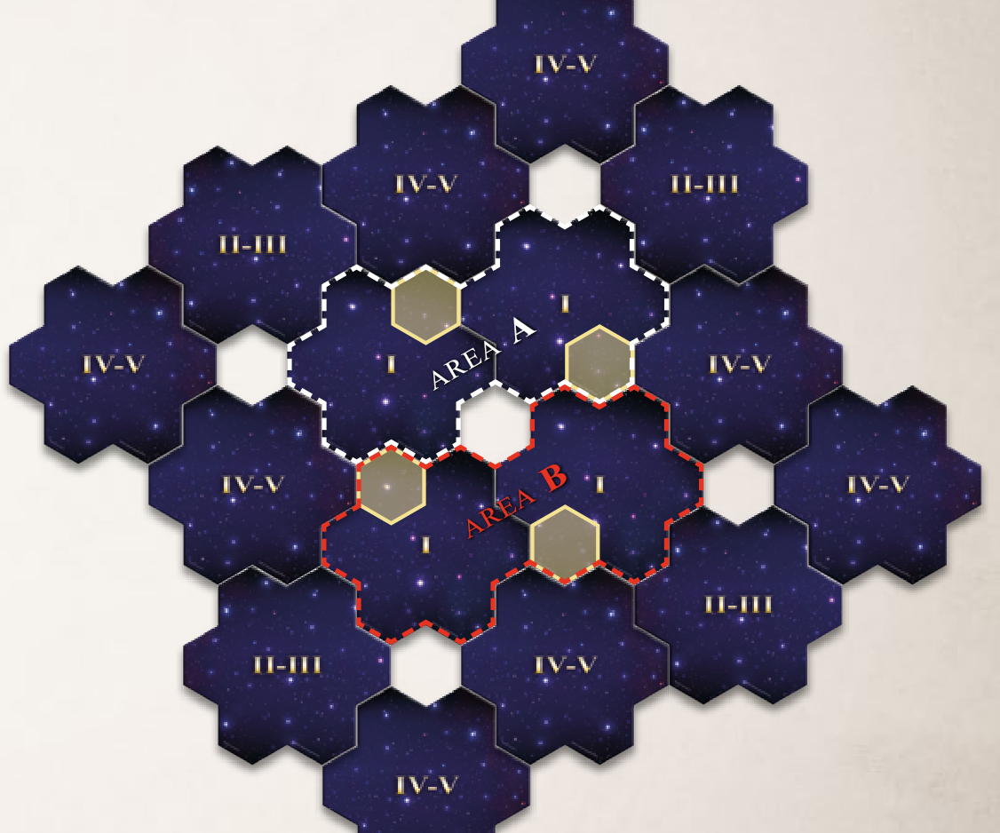
. Картинка со стр. 7.- 4 стартовых I. Заблокированное поле (жёлтая рамка по краям) поставьте, как на схеме.
- 8 ближних IV–V. Четыре из них с обелиском (Obelisk), четыре без. Разложите через один: два тайла с обелиском не соседствуют.
- 4 дальних II–III на карте, как на схеме.
- Ещё 4 дальних II–III не кладите сразу: каждому игроку по одному. Это запас, его добавляют при исследовании. Книга не пишет, в какой момент запас выкладывают на стол.
На схеме зона A сверху, белый пунктир, зона B снизу, красный пунктир.
Союз
Правила альянса этой книги, стр. 5.
- Победа и поражение общие. Кто больше сделал, не сравнивают.
- Артефакты союзники меняют, когда герои стоят на соседних полях.
- Ресурсы меняют свободно в ход любого из двоих.
- Союзник не ставит флаг на поле, которое уже пометил другой игрок того же союза.
Особые правила
- Обелиск (Obelisk) даёт мораль. Жетонами или картами — как выбрано в модуле морали.
- Защищая свой город (Town) и платя золото, можно пользоваться своей колодой Силы и Магии. Книга не расписывает, какую именно оплату это заменяет.
- По желанию, для равной игры: уберите или не применяйте карты, которые позволяют герою перешагнуть жёлтую рамку, например Angel Wings.
- Тайл под контролем, если на нём помечены флагом шахта (Mine) или посёлок (Settlement) и на тайле нет вражеского героя.
Победа
Союз побеждает, если выполнено одно из двух:
- в конце раунда под его контролем 12 тайлов;
- захвачен вражеский город (Town) и удержан следующие 2 раунда.
События
4-й и 9-й раунды, в начале: каждый игрок бросает и разыгрывает 1 кубик ресурсов.
Manifest Destiny
Столкновение · 3 игрока · Инферно
О миссии
Источник: книга миссий Инферно, стр. 8–9. Режим: столкновение, 3 игрока. На странице стоит пометка Clash.
Соседние земли всё теснее. Править остальными достойно только одно королевство. Пора показать мелким лордам, что эта земля ваша по праву.
Кто играет
3 игрока. Каждый сам за себя. Фракцию книга не сужает.
Длина
12 раундов, если условие победы выполнено. Если вражеский город (Town) помечен флагом в 11-м раунде, партия идёт до конца 13-го. Если в 12-м — до конца 14-го.
Кто выполнил условие — победил. Кто не выполнил — проиграл. Книга допускает, что победителей несколько.
Старт
Каждому:
- 12 золота, 4 стройматериала, 0 драгоценностей.
- Доход: 10 золота, 0 стройматериалов, 0 драгоценностей.
- Бронзовое жилище (Dwelling) и гильдия магов (Mage Guild).
- 1 бронзовый отряд стороной Pack: самый дорогой по цене найма.
Стартовый бонус сложности действует. Нейтралы на полях — от той же сложности. Оба пункта в «Что выложить».
Карта
Соберите, как на картинке
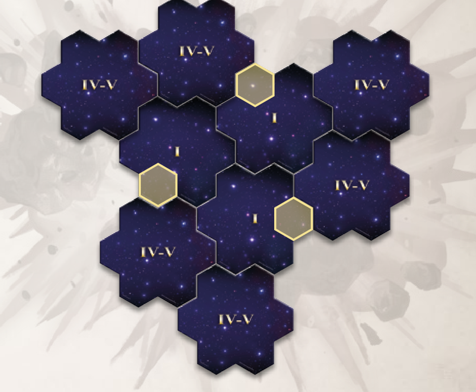
. Картинка со стр. 9.- 3 стартовых I. Заблокированное поле (жёлтая рамка) — как на схеме.
- 6 ближних IV–V. Три с обелиском (Obelisk), три без. Через один: два с обелиском не соседствуют.
- 6 дальних II–III на схему не кладут. Каждому игроку по два в запас. Книга не пишет, когда запас выкладывают.
На схеме только старты и ближние. Серые шестиугольники у стартов — заблокированные поля.
Особые правила
- Обелиск (Obelisk) даёт мораль.
- Защищая свой город (Town) и платя золото, можно пользоваться своей колодой Силы и Магии. Какую оплату это заменяет, книга не пишет.
- По желанию: уберите или не применяйте карты, которые позволяют перешагнуть жёлтую рамку, например Angel Wings.
- Тайл под контролем, если на нём флаг на шахте (Mine) или посёлке (Settlement) и нет вражеского героя.
Победа
Побеждает тот, кто в конце раунда контролирует 7 тайлов, или захватил вражеский город (Town) и удержал его следующие 2 раунда.
События
4-й и 9-й раунды, в начале: каждый герой получает 1 к передвижению (Movement). Книга не пишет, на один раунд это или до конца партии.
Carpe Diem
Столкновение · 2 игрока · Инферно
Книга миссий Инферно. Сценарий: стр. 10–11. Случайный город: стр. 3–4.
О миссии
Источник: книга миссий Инферно, стр. 10–11. Режим: столкновение, 2 игрока. На странице стоит пометка Clash. Случайный город (Random Town) — стр. 3 и 12 этой книги.
Несколько лет назад боги решили, что этот мир им больше не нужен. Теперь полная анархия. Каждый винит каждого, что боги ушли. Сидя в тронном зале, вы решили: править достоин только один человек. Вы.
Кто играет
2 игрока. Каждый сам за себя. Фракцию книга не сужает.
Длина
14 раундов. Если к концу 14-го случайный город (Random Town) не взят — ничья.
Старт
Каждому:
- 10 золота, 3 стройматериала, 1 драгоценность.
- Доход: 10 золота, 0 стройматериалов, 0 драгоценностей.
- Бронзовое жилище (Dwelling) и гильдия магов (Mage Guild).
- 1 бронзовый отряд стороной Pack: самый дорогой по цене найма.
Стартовый бонус сложности действует. Нейтралы на полях — от той же сложности. Оба пункта в «Что выложить».
Карта
Соберите, как на картинке
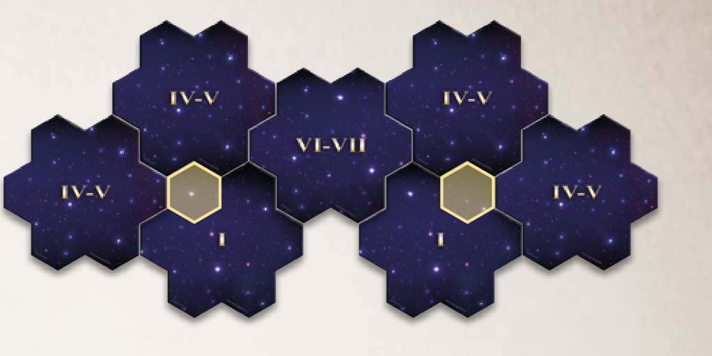
. Картинка со стр. 11.- 2 стартовых I. Заблокированное поле — как на схеме, серый шестиугольник у старта.
- 4 ближних IV–V. Два с обелиском (Obelisk), два без. Через один.
- 1 центральный VI–VII. На нём должна быть локация «случайный город». Книга код тайла не называет: берите центральный, где она напечатана.
- 4 дальних II–III на схему не кладут. Каждому игроку по два в запас. Когда их выкладывать, книга не пишет.
Особые правила
- Обелиск (Obelisk) даёт мораль.
- Герой на центральном тайле не может войти на стартовый тайл врага.
- Защищая свой город (Town) и платя золото, можно пользоваться своей колодой Силы и Магии. Какую оплату это заменяет, книга не пишет.
- По желанию: уберите или не применяйте карты, которые позволяют перешагнуть жёлтую рамку, например Angel Wings.
Победа
Побеждает тот, кто покорит случайный город (Random Town) на центральном тайле.
События
3-й, 6-й и 9-й раунды, в начале: главный герой второго игрока получает 1 к передвижению (Movement). Кто такой «второй», книга не определяет. Порядок ходов в столкновении не меняется, так что это второй по очереди хода. На один раунд прибавка или до конца партии, книга не пишет.
The Challenge
Альянс · 4 игрока, двое на двое · Оплот
Книга миссий Оплота. Сценарий: стр. 5–6. Правила альянса: стр. 4.
О миссии
Источник: книга миссий Оплота, стр. 5–6. Правила альянса этой книги — стр. 4. Режим: альянс, 4 игрока, двое на двое.
Король открыл, что ему остались считаные месяцы. Кто за шесть месяцев возведёт строение грааля в столице Osha, того и помажут наследником. Перчатка брошена. Поднимете?
Кто играет
4 игрока, два союза по двое. Союз выбирают в начале, и он держится до конца сценария. Режиму нужно хотя бы одно дополнение. Фракцию каждый выбирает сам. Книга список не сужает.
Длина
11 раундов, и ещё до 14-го, если жетон грааля уже брали. Если к концу 11-го жетон ни разу не взят, проигрывают все. Если жетон брали, срок до конца 14-го: принести его в свой город (Town) фракции. Иначе проигрывают все. Что делают остальные, пока жетон уже у кого-то, книга не пишет.
Старт
Каждому:
- 16 золота, 4 стройматериала, 1 драгоценность.
- Доход: 10 золота, 0 стройматериалов, 0 драгоценностей.
- Бронзовое жилище (Dwelling).
- 2 бронзовых отряда стороной Pack: самые дешёвые по цене найма.
Стартовый бонус сложности действует. Нейтралы на полях — от той же сложности.
Карта
Соберите, как на картинке
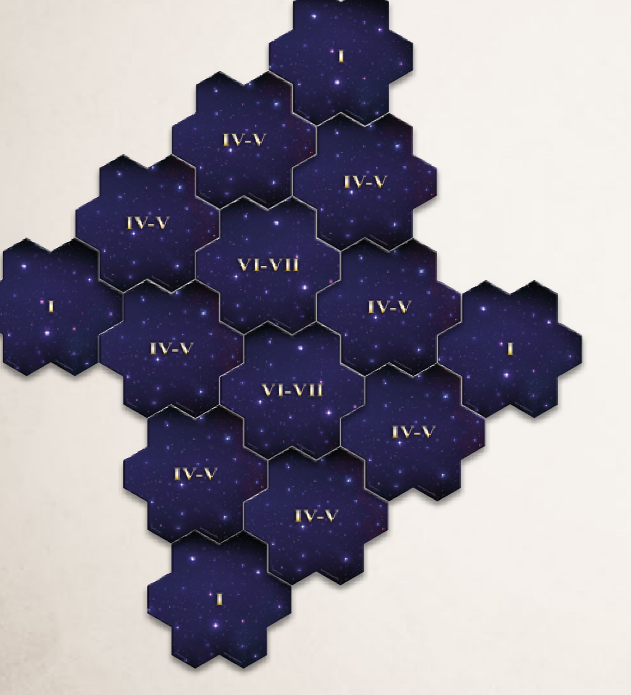
. Картинка со стр. 6.- 4 стартовых I.
- 8 ближних IV–V. Четыре с обелиском (Obelisk), четыре без. Перед укладкой разложите их на две стопки и кладите через одну, чтобы тайлы с обелиском не соседствовали.
- 2 центральных VI–VII. На одном должно быть поле грааля (Grail). В базе это C2. Второй — без грааля. В базе остаётся C1.
- 8 дальних II–III. Каждому игроку по два. На схеме их нет. Когда класть на карту, книга не пишет.
Жетон грааля из базы держите рядом, пока его не возьмут.
Особые правила
Правила альянса, стр. 4: победа и поражение общие. Артефакты меняют, когда герои стоят на соседних полях. Ресурсы можно передать в ход любого из двоих, соседство не нужно. Союзник не ставит флаг на поле, которое уже пометил другой игрок того же союза.
Во время сценария:
- На обелиске (Obelisk) игрок бросает 2 кубика сокровищ (Treasure Die) и разрешает один из двух результатов.
- Когда за защиту своего города (Town) фракции платят золотом, можно пользоваться колодой Силы и Магии.
- Союз не входит на поле с жетоном грааля, пока не посетил 4 разных обелиска или пока жетон хотя бы раз не брал любой герой. Книга пишет «союз», не «каждый герой».
- Чтобы взять жетон, герой тратит на поле грааля 2 очка передвижения.
- Герой, который разбил героя с жетоном, забирает жетон.
- Герой с жетоном сдался: жетон кладут на поле сдачи.
- Нейтралы разбили героя с жетоном: жетон кладут на поле, где героя разбили.
- Жетон грааля повышает доход золота на 5.
Победа
Герой берёт жетон грааля и приносит его в свой город (Town) фракции.
События
4-й и 9-й раунды, в начале: снимите все чёрные кубики со всех локаций карты. Можно ли эти локации посетить снова, книга здесь не дописывает.
Dwarven Gold
Столкновение · 2–3 игрока · Оплот
О миссии
Источник: книга миссий Оплота, стр. 7–9. На странице стоит пометка Clash. Режим: столкновение, 2–3 игрока.
Золотая лихорадка гномов накрыла край, когда рудокоп Invis Smythers наткнулся на жилу в 75 000 золотых. Местные лорды уже снаряжают походы.
Кто играет
2 или 3 игрока. Каждый сам за себя. Фракцию книга не сужает.
Длина
10 раундов. Победить можно в конце любого раунда. Если к концу 10-го условия нет, проигрывают все.
Старт
Каждому:
- 15 золота, 3 стройматериала, 1 драгоценность.
- Доход: 10 золота, 2 стройматериала, 0 драгоценностей.
- Бронзовое жилище (Dwelling).
- 1 бронзовый отряд стороной Pack: самый дорогой по цене найма.
Стартовый бонус сложности действует. Нейтралы на полях — от той же сложности.
Карта
Схема на двоих, стр. 9.
Схема на троих, стр. 9.
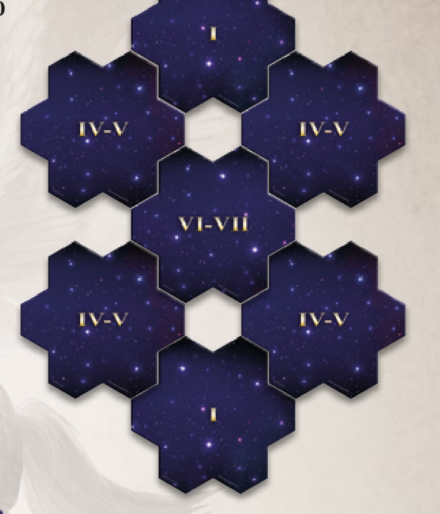
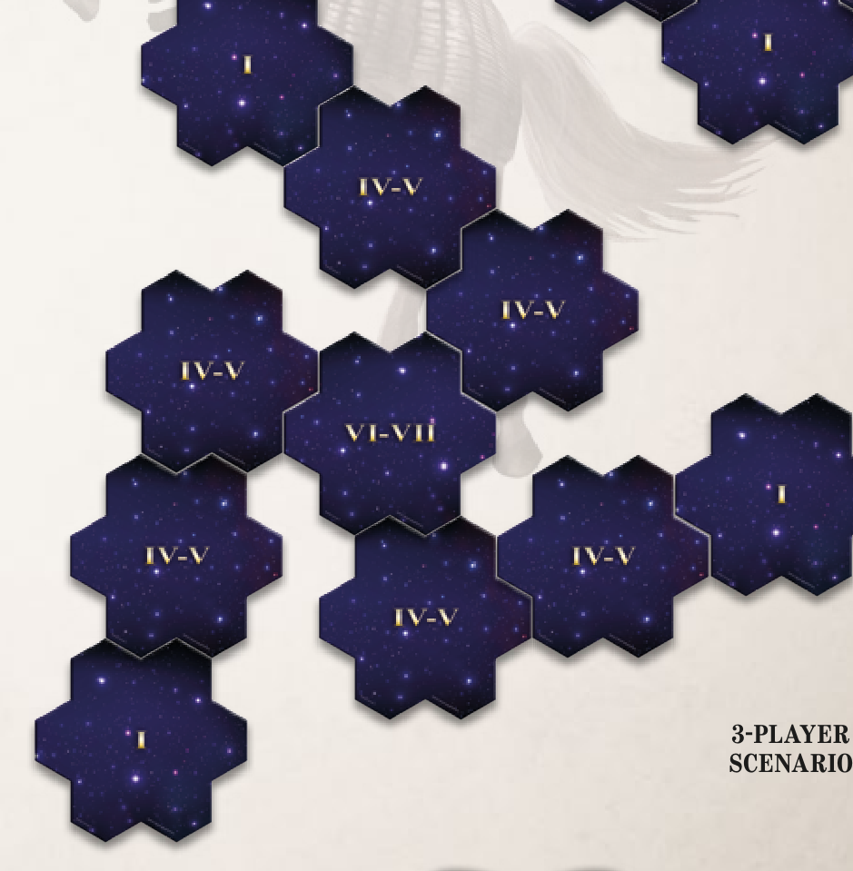
- Стартовых I — по числу игроков.
- Для двоих: 4 ближних IV–V, все с обелиском (Obelisk). Делить их на стопку «без обелиска» не из чего.
- Для троих: 6 ближних IV–V, три с обелиском и три без. Перед укладкой две стопки, класть через одну, чтобы тайлы с обелиском не соседствовали.
- 1 центральный VI–VII с полем грааля. В базе это C2.
- Дальних II–III — по два каждому. На схеме их нет. Когда класть, книга не пишет.
Жетон грааля из базы держите рядом.
Особые правила
Карты, которые дают ресурсы, в этом сценарии запрещены. Если такая карта выпала при поиске, покажите её, сбросьте и возьмите другую. Какие именно карты книга считает «дающими ресурсы», она не перечисляет.
- Грааль берёт только главный герой.
- Взяв жетон, главный герой сразу получает 15 золота. Доход золота растёт на 5 только когда этот герой вернулся в свой город (Town) с жетоном.
- На обелиске (Obelisk) игрок бросает 2 кубика сокровищ (Treasure Die) и разрешает один из двух результатов.
- Когда за защиту своего города фракции платят золотом, можно пользоваться колодой Силы и Магии.
- На поле с жетоном нельзя встать, пока герой не посетил 2 разных обелиска или пока жетон хотя бы раз не брал любой герой.
- Чтобы взять жетон, герой тратит на поле 2 очка передвижения.
- Герой, который разбил героя с жетоном, забирает жетон.
- Сдача: жетон остаётся на поле сдачи.
- Нейтралы разбили героя с жетоном: жетон кладут на поле, где героя разбили.
- Если в пуле не хватает жетонов золота, чёрный кубик на жетоне «1» золота считается жетоном «10».
Победа
В конце раунда у игрока 75 золота. Если таких несколько, побеждает тот, у кого золота больше. Если у двоих и это большее число одно и то же, книга не пишет.
События
2-й, 4-й, 6-й, 8-й и 10-й раунды, в начале: снимите все чёрные кубики с ветряных мельниц (Windmill) и водяных колёс (Water Wheel).
Dead-Cold Revenge · 1. Search for a Killer
Кампания · 1 игрок · Оплот
Книга миссий Оплота. Сценарий: стр. 10–11. Рассказ: стр. 12–14.
1. Search for a Killer
Источник: книга миссий Оплота, стр. 10–14: подготовка 10–11, схема 11, рассказ 12–14. Отдельных правил кампании книга Оплота не печатает. Режим: кампания, 1 игрок, фракция Оплот.
Двух лордов AvLee нашли мёртвыми. Gem и Gelu идут мстить и искать справедливость. Судьба ведёт их дальше, чем они ждали. Успеют ли они сорвать заговор на границах AvLee, или находка уже опоздала и замысел некромантов не остановить?
Подготовка игрока
Фракция: Оплот. Герой: Gelu. Героя поставьте на центральное поле стартового тайла Оплота.
Армия: Few Centaurs, Few Dwarves, Few Elves.
Ресурсы: 14 золота, 4 стройматериала. Отдельно +5 к производству золота. Доход на трекере книга не выставляет и не пишет, как сложить эту прибавку с правилами кампании других книг. Здания: бронзовое жилище (Dwelling), серебряное жилище, цитадель (Citadel).
Бонус сценария, один на выбор:
- +2 драгоценности;
- +4 стройматериала;
- карта боевой машины Ammo Cart.
Стартовый бонус сложности заменён этим выбором. Нейтралы полей — от выбранной сложности. С 7-го раунда трудность каждого боя на карте на 1 выше по таблице поля основных правил (Field Difficulty Level Table, страница 35 той книги). Армии врагов от шкалы не меняются.
Подготовка героев ИИ
Фракция: Некрополис. Трое: Galthran, Aislinn и армия города (Town). Две миниатюры героя Некрополиса изображают вражеских героев. Кому какая, решите сами. На карту их кладут по событиям и рассказу, не в начале.
Aislinn: Pack Skeletons, Pack Zombies, Few Liches, бронзовый нейтрал Rogue. Колода ИИ: 1 Might, 3 Magic. Заклинания: 2 Haste, 1 Magic Arrow.
Galthran: Pack Vampires, Pack Zombies, Pack Liches, серебряные нейтралы Mummies. Колода ИИ: 4 Might. Колоды заклинаний у него книга не даёт.
Армия города: Pack Zombies, Pack Vampires, Pack Dread Knights, Pack Liches, карты Wall и Gate, Few Black Dragons. Колода ИИ: 3 Might, 2 Skill. Навык: боевая машина Ballista. Держите карту рядом с этой армией. Эффект включается, когда этого просит карта Skill, а не в начале боя. Колоды заклинаний у армии города книга не даёт.
Враги ходят после человека. На заблокированное поле можно войти, если там вражеский герой. Победа над армией вражеского героя даёт 2 драгоценности.
Карта
Соберите, как на картинке
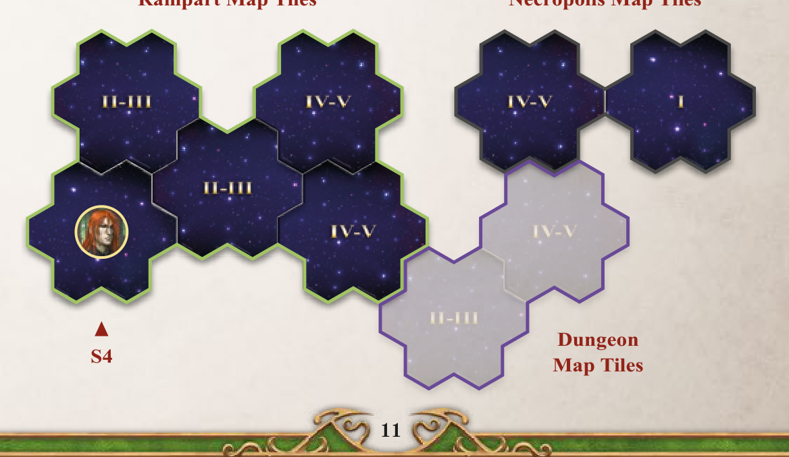
. Картинка со стр. 11.- Стартовые I: Некрополис S1 и Оплот S4. Герой на центре S4.
- Дальние II–III: 2 Оплота из F10, F11, F12.
- Ближние IV–V: 1 Некрополис из N1, N4 и Оплот N7, N8.
Для события отложите 1 случайный дальний Темницы из F2, F5, F8 и 1 случайный ближний Темницы из N2, N5. На схеме они светлее, между двумя частями карты. В раскладку их кладут по куску «Путь вперёд», не в начале.
Особые правила
Первый вход на обелиск (Obelisk) запускает рассказ. Когда герой впервые входит на другой обелиск, бросьте 2 кубика сокровищ (Treasure Die) и разрешите один результат.
Победа и поражение
Победа: разбить все вражеские армии.
Поражение:
- потерян свой город (Town) фракции;
- проигран бой с вражеской армией;
- конец 11-го раунда, и не все вражеские армии разбиты.
События
1-й раунд: прочитайте «Таинственная смерть».
5-й раунд: если «Спасение Soledare» уже читали, этот пункт пропустите. Иначе прочитайте «Руины Soledare».
7-й раунд: с этого хода и до конца трудность каждого боя на карте на 1 выше. Прочитайте «Путь, который выбираешь». Galthran поставьте на заблокированное поле ближнего тайла Некрополиса. Если тайл закрыт, откройте его.
11-й раунд, в конце: нет победы — поражение.
Сценарий завершён: прочитайте «Ответы, от которых вопросов больше».
Колода между сценариями
Как переносить колоду, книга Оплота не пишет.
Рассказ
- «Таинственная смерть» — в 1-м раунде. В куске срок до конца 4-го.
- «Спасение Soledare» — если к концу 4-го герой дошёл до обелиска (Obelisk).
- «Руины Soledare» — в 5-м раунде, если «Спасение Soledare» не читали.
- «Путь вперёд» — после победы над Aislinn или после «Руин Soledare».
- «Путь, который выбираешь» — в 7-м раунде.
- «Загон» — вход на стартовый тайл Некрополиса. Дальше бой с армией города (Town).
- «Ответы, от которых вопросов больше» — победа над армией города и когда сценарий завершён.
Таинственная смерть (Mysterious Death)
Когда читать: 1-й раунд.
День обещал быть скучным. Докладывать лорду, что нашли Лесные стражи, всегда было мукой. У судьбы свои сюрпризы, и в тот день очередь дошла до вас.
«Капитан Gelu, хвала Старшим!» Молодой городской страж встречает вас в Willowglen. «Случилось страшное», — начинает он дрожа и замолкает, будто не знает, как дальше.
«Говори. У меня нет целого дня.» Голос режет утренний воздух.
«Лорда Falorel убили!» Страж выпаливает и долго выдыхает. Вы сразу знаете следующие слова: «Но… это не всё…»
Дальше он рассказывает, что было в последние дни.
Лорда Falorel, похоже, отравили. Для знати способ не самый странный, но самый бесчестный. Хуже другое: осмотр тела показал, что лорд Falorel вовсе не эльф. Он только притворялся эльфом. На деле это Vampire.
Пока вы слушаете, стражи всё больше. Взгляд упирается в стол. Шум: прибыл гонец. Вести с востока ещё мрачнее. Силы некромантов взяли город Soledare. По улицам ходят Skeletons, город потерян. Гонец просит спешить на восток и освободить Soledare.
Смерть лорда Falorel и то, что он был Vampire, ставит под вопрос все ваши прежние дела. Вы дрались под его началом и не знаете, что из этого было во имя справедливости. Это были приказы лорда Falorel или самозванца? Лица тех, кого вы недавно убили, вспыхивают перед глазами. И их крики.
Чего хотел самозванец, вы, верно, не узнаете. Знаете другое: у него были враги, и они его настигли. Здесь творится что-то очень странное, и вы должны понять что. Какой бы ни была ложь, убийцу надо найти и покарать. Ради AvLee.
За столом: откройте один ближний тайл Оплота. Он уже открыт.
До конца 4-го раунда надо дойти до обелиска. Успели — прочитайте «Спасение Soledare». Не успели — эту часть пропустите.
Спасение Soledare (Saving Soledare)
Когда читать: вход на обелиск (Obelisk) к концу 4-го раунда.
Вы подходите к Soledare, глухому городу к востоку от обычных дозоров. С вашей точки он выглядит брошенным. Был бы брошенным, если бы его не заполнила нежить. Вы берёте подзорную трубу. Сердце пропускает удар: сопротивление ещё есть. Город можно спасти.
Вы смотрите на врага. Среди ходячих мертвецов бледная фигура, костлявая рука указывает безжизненным тварям. Это, должно быть, командир.
Внезапный мерзкий визг заставляет вздрогнуть. Он напоминает крики ваших жертв. Крики тех, кого вы убили несправедливо, будут вас преследовать. Забыть это нельзя. Душу надо очистить искуплением, и освобождение этого места — хорошее начало. Вожди Эрафии должны узнать. И вы боитесь, что ваша роль им не понравится.
Вы опускаете трубу и ищете войско. Острый глаз сразу находит его далеко внизу, под вашей позицией в кронах. Люди прячутся в кустах и ждут. Коротким кивком вы даёте приказ атаковать.
За столом: вход на поле обелиска — бой с армией Aislinn.
Если победили, выберите одно:
- +4 стройматериала и +2 к производству стройматериалов;
- +15 золота и +5 к производству золота.
Затем прочитайте «Путь вперёд».
Руины Soledare (The Ruins of Soledare)
Когда читать: 5-й раунд, если «Спасение Soledare» не читали.
Сегодня к вам пришёл неожиданный гость: единственный уцелевший из Soledare. Из его рассказа вы узнаёте, что он видел, пока прятался с семьёй в руинах, и каким тяжёлым был путь к вашему лагерю. Меньшее, что вы можете, — разделить с ним еду и воду. Он жадно глотает и говорит.
«…Город почти разрушен, но вы найдёте, как вернуть Soledare прежний вид.» В глазах, поднятых на вас, отчаянная надежда.
Вы думаете над его словами. Кое-чего не изменить, как ни хоти.
После всего, что случилось, крики тех, кого вы убили несправедливо, будут преследовать вас. Нужно искупление. Вожди Эрафии должны узнать. Вы боитесь, что ваша роль им не понравится.
За столом: получите 8 стройматериалов и ещё 2 очка передвижения в этот раунд.
Миниатюру Aislinn поставьте на поле обелиска ближнего тайла Оплота. Если тайл закрыт, откройте все ближние тайлы Оплота и потом поставьте миниатюру. В её армию добавьте Few Vampires.
Прочитайте «Путь вперёд».
Путь вперёд (A Way Forward)
Когда читать: после победы над Aislinn или после «Руин Soledare».
Уцелевшие из Soledare дают ценные вести. В крае, говорят они, большая сеть подземных туннелей. Она уходит далеко под реку и выводит во многие места. Если пользоваться ею с умом, можно бить внезапно и с неожиданной стороны. Мысль стоит проверки: враг наверняка зорко стережёт берега.
За столом: возьмите два тайла Темницы, отложенные при сборке карты, и положите их между двумя частями карты так, чтобы они соединили ближний тайл Некрополиса и ближний тайл Оплота. Как именно сложить, решайте сами. Оба тайла уже открыты.
Путь, который выбираешь (The Path One Chooses)
Когда читать: 7-й раунд.
Ниоткуда вы оказываетесь в лесу. Бежите. Кто-то гонится. Множество голосов кричит ваше имя. Место вы узнаёте: были здесь ребёнком. Но с каждым шагом темнее и злее, чем в памяти. Тропа раздваивается. Одна ветка, залитая светом, ведёт из леса. Другая — глубже во тьму. Выбор лёгкий. Вы сворачиваете к выходу, и вдруг хватка сжимает ноги. Внизу бледные страшные руки тянут вас в землю. У рук лица. Знакомые лица, врытые в землю. Лица всех, кого вы убили. Это они кричали. Теперь ещё громче, голоса лезут друг на друга:
«Лёгкого выхода нет… Слышишь…? Это сделал ты… Не убежишь! Капитан… Тебе нет искупления… Слышишь меня, капитан?»
Вы просыпаетесь. Сами хватаете кинжал и оборачиваетесь на голос. У входа в шатёр перепуганная фигура повторяет:
«Слышите меня, капитан?»
Вы узнаёте молодого новобранца и опускаете клинок.
«Доклад.» Солдат берёт под козырёк.
«Прорицатели говорят: настоящее имя лорда Falorel — Vayarad, вампирский лорд из северо-западной Deyja. Он сеял в AvLee свой выводок и готовил переворот в Deyja. Армии росли медленно, но росли. Ещё они считают, что настоящего лорда Falorel убили раньше и подменили этим Vayarad. Очень может быть, что Falorel обратили в нежить, и теперь он служит в дейянских армиях.»
«Служит? Это уже догадка. С чего они так решили?»
«Они прорицатели…» Он пожимает плечами. Видит вашу хмурость и быстро переходит к другому.
«Ещё мы заметили движение армии некроманта к югу от нас. Идут прямо сюда.»
Вы киваете. Раз вы пошли этой дорогой, за вами кого-нибудь пришлют.
«И пришло донесение от ваших эрафийских командиров!» Он почти сияет и подаёт письмо.
«Весть о гибели лорда Falorel дошла до людей и разошлась быстро. Эльфийская знать напугана и подозрительна. Узнайте, кто убийца. Эльфы проверяют своих: не затронут ли AvLee глубже. Нам сообщили о новой активности некромантов. Разыщите друида по имени Gem. Она тоже разбирает похожие события.
О том, что вы делали под началом самозванца, не бойтесь. Король Gryphonheart понимает положение и поддерживает вас.»
Слова успокаивают и будто отвечают на зов бессонной ночи. Почему же сердце не на месте? Можно ли снять такую вину и списать ответственность по прихоти тех, кто выше?
За столом: Galthran выходит на карту в этом раунде, см. «События». Вход на стартовый тайл Некрополиса: прочитайте «Загон» и бейтесь с армией города.
Загон (Herding)
Когда читать: вход на стартовый тайл Некрополиса.
Вы подходите к глубокой широкой яме у ближней деревни. Вы слышали: некроманты сгоняют жителей в загоны, чтобы разом зарезать и поднять в армии нежити. Вы догадываетесь, что внутри, и смотрите. Донесения разведчиков и слухи предупреждали, что обряды обращения в скелетов отвратительны до крайности. Знать и видеть — разные вещи. Подробности мерзкие, желудок просит наружу. Выучка не даёт этому случиться при всех. Вас душит ярость, и вы клянётесь отомстить за эти души.
Вы шарите по омерзительной выемке: нельзя ли узнать больше. По размеру ямы войска некромантам нужны всё сильнее. Это может сыграть вам на руку: делать остаётся одно. Вы бросаете на войско свирепый взгляд и даёте знак атаковать позиции некромантов.
За столом: когда армия города разбита, прочитайте «Ответы, от которых вопросов больше».
Ответы, от которых вопросов больше (Answers That Breed More Questions)
Когда читать: армия города (Town) разбита.
Сегодня пришло письмо от друида по имени Gem. Она хочет встретиться, когда вы покончите с делами в земле лорда Falorel, и копать дальше в событиях с некромантами. Она считает, что они готовят удар вглубь AvLee. Вы с ней согласны.
«Что вы будете делать, капитан?» — спрашивает один из офицеров.
«…Когда закончу здесь… встречусь с ней.» Вы отвечаете и берёте паузу подумать.
Офицер, отпущенный кивком, козыряет и уходит собирать вести. Вы оглядываетесь. Следы на стенах, сломанная мебель, треснувшее окно, кровь на стенах сгоревшей хижины могут рассказать историю. Но едва ли интереснее той, которую вы только начали.
Вы находите годный стул, тащите его через комнату и садитесь перед фигурой на полу. Точнее, перед тем, кого ваши люди пришпилили к полу.
«Значит, этот Sandro был соперником Vayarad и, возможно, приказал его отравить? Рассказывай дальше.»
Dead-Cold Revenge · 2. Final Peace
Кампания · 1 игрок · Оплот
Книга миссий Оплота. Сценарий: стр. 15–16. Рассказ: стр. 17–18.
2. Final Peace
Источник: книга миссий Оплота, стр. 15–18: подготовка 15–16, схема 16, рассказ 17–18. Отдельных правил кампании книга Оплота не печатает. Режим: кампания, 1 игрок, фракция Оплот.
Подготовка игрока
Фракция: Оплот. Герой: Gem. Героя поставьте на центральное поле стартового тайла Оплота. Этот тайл уже открыт.
Армия: Few Centaurs, Few Dwarves, Few Elves.
Ресурсы: 12 золота, 4 стройматериала, 2 драгоценности. Отдельно +5 к производству золота. Доход на трекере книга не выставляет и не пишет, как сложить эту прибавку с правилами кампании других книг. Здания: бронзовое жилище (Dwelling), серебряное жилище, цитадель (Citadel).
Бонус сценария, один на выбор:
- +8 золота;
- +4 стройматериала;
- поиск (2) в колоде заклинаний, два раза.
Стартовый бонус сложности заменён этим выбором. Нейтралы полей — от выбранной сложности. Трудность боёв на карте вырастает на 1 не со шкалы, а с хода, когда прочитаны «Старые друзья»: таблица поля основных правил (Field Difficulty Level Table, страница 35 той книги). Армии врагов от шкалы не меняются.
Подготовка героев ИИ
Фракция: Некрополис. Двое: стража лорда Fayette и сам Lord Fayette. Одну миниатюру героя Некрополиса книга отдаёт страже. На карту её кладут по рассказу, не в начале. Вторую миниатюру книга для лорда не называет.
Стража: Pack Skeletons, Pack Vampires, Pack Zombies, Few Liches. Колода ИИ: 5 Might. Колоды заклинаний книга не даёт.
Lord Fayette: Pack Zombies, Pack Vampires, Pack Liches, Pack Dread Knights. Колода ИИ: 3 Might, 2 Magic. Заклинания: 2 Stone Skin.
Враги ходят после человека. На заблокированное поле можно войти, если там вражеский герой. Победа над армией вражеского героя даёт 2 драгоценности.
Карта
Соберите, как на картинке
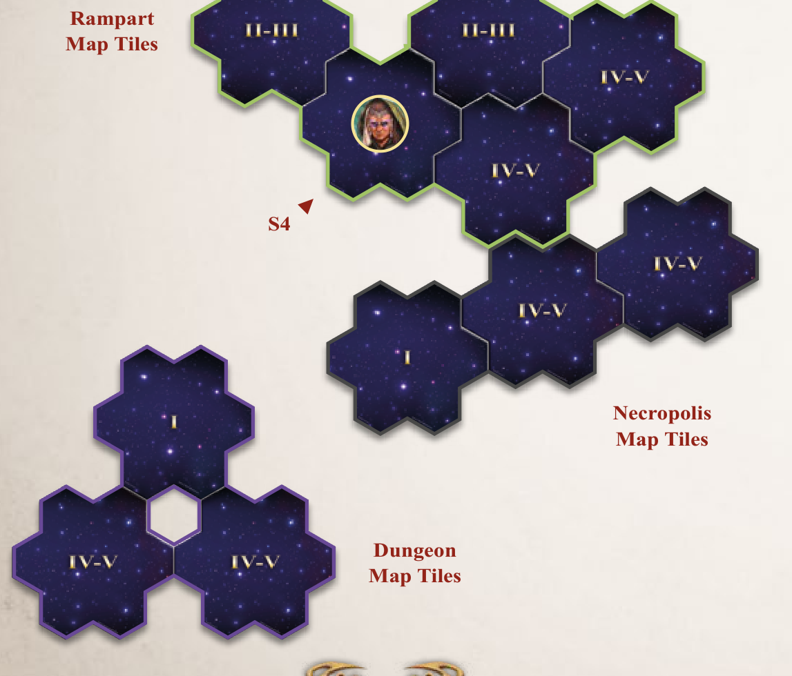
. Картинка со стр. 16.Особые правила
Первый вход на обелиск (Obelisk) запускает рассказ.
Победа и поражение
Победа: разбить все вражеские армии.
Поражение:
- потерян свой город (Town) фракции;
- проигран бой с вражеской армией;
- конец 13-го раунда, и не все вражеские армии разбиты.
В конце 13-го книга пишет отдельно: если Lord Fayette не разбит, поражение.
События
1-й раунд: прочитайте «Последняя служба».
4-й раунд: прочитайте «Дорогие воспоминания».
7-й раунд: если «Старые друзья» уже читали, этот пункт пропустите. Иначе поставьте армию стражи на центр стартового тайла Некрополиса и добавьте в неё Few Dread Knights.
13-й раунд, в конце: Lord Fayette не разбит — поражение.
Сценарий завершён: прочитайте «Последний долг».
Колода между сценариями
Как переносить колоду, книга Оплота не пишет.
Рассказ
- «Последняя служба» — в 1-м раунде.
- «Дорогие воспоминания» — в 4-м раунде.
- «Заговор за заговором» — вход на обелиск (Obelisk) ближнего тайла Оплота.
- «Старые друзья» — после победы над стражей.
- «Последний долг» — после победы над Lord Fayette и когда сценарий завершён.
Последняя служба (One Last Service)
Когда читать: 1-й раунд.
Вы сидите в шатре. Свет только тусклый, магический: друид не тратит силу на такую прихоть, как яркое освещение. Силу берегут для большего. Перо скребёт пергамент. Вы пишете очередное письмо Clancy, другу из следопытов. Частью чтобы передать всё полезное. Частью чтобы собрать собственные мысли.
«Я пошла сказать лорду Fayette, что Sandro меня провёл, и узнала: пока меня не было, он ушёл с поручением в Deyja и ещё не вернулся. Я посмотрела ворожбой и увидела, что поручение кончилось страшно. Его убили некроманты и…» Рука дрожит, и вы останавливаетесь. Чтобы унять волнение, сжимаете перо крепче и дописываете.
«…и… подняли рыцарем смерти!» Восклицательный знак вы давите так, что дырявите письмо. Глубокий вдох. Неважно.
«Будь прокляты все некроманты!» Через миг вы выплёскиваете злость.
«Лорду я могу сослужить последнюю службу. Мы перешли границу, в ничью землю между AvLee и Deyja. Отсюда соберём силы и ударим в саму Deyja. Я дам его душе последний покой: уничтожу мёртвое тело, которое держит её в этом мире. Я ему это должна.»
За столом: вход на обелиск ближнего тайла Оплота — прочитайте «Заговор за заговором».
Вход на поле города стартового тайла Некрополиса — бой со стражей лорда Fayette. На сторону врага положите три карты Wall и одну Gate. Когда эта армия разбита, прочитайте «Старые друзья».
Дорогие воспоминания (Fond Memories)
Когда читать: 4-й раунд.
Снаружи шатра спокойно трещат костры. Ветер шепчет ночные тайны, насекомые возятся в остатках еды. Вы всё ещё в шатре. В одной руке перо над листом, в другой письмо. Письмо в пятнах слёз. От жены покойного лорда Fayette.
«Сегодня мне написала жена лорда Fayette», — начинаете вы доклад Clancy. «Она узнала, зачем было тайное поручение мужа. Он, оказывается, искал, что случилось с соседом, лордом Falorel. Лорда Falorel мёртвым нашёл следопыт по имени Gelu, но труп был вампирский. Что было, неясно. Falorel подменили вампиром? Настоящего Falorel схватили и обратили? Или дело в другом? И кто убил вампира?»
Пока вы пишете, снаружи проходят эльфийские голоса.
«…эти синие пятна вокруг глаз что-то значат.»
«Боевая раскраска? На воительницу она не похожа.»
«Никогда не знаешь… всякие бывают… друиды…» До вас долетают последние обрывки, и они уходят.
«Будь времена другие, мы бы все посмеялись…» — шепчете вы. «Я бы рассказала, как наложила это на лицо в обряде: малая тварь сделала мне услугу, а у меня это было, когда еноты мыли мою еду в воде. Просто часть того, что я друид. Ты бы засмеялся? Разочаровался? Тогда я бы разозлилась и надулась: жест енотов, может, и не великий дар, но память мне дорога.» На губах слабая улыбка. Вы снова смотрите в доклад и опять шепчете.
«Хм, ещё вопрос… Почему дейянский пограничный лорд вообще стал говорить с лордом Fayette об этом?»
Заговор за заговором (One Scheme After Another)
Когда читать: вход на обелиск (Obelisk) ближнего тайла Оплота.
Вы встречаете Clancy: он ушёл вперёд разведать край. Он называет самый безопасный путь из найденных и говорит, что его человек видел большую армию некромантов, уходящую под землю. Они явно кого-то стерегли, но кого, не разобрать. Ещё оказалось: даже в Deyja есть жители не из нежити. Вчера разведчики Clancy с ними говорили. Вести любопытные. Здешнего дейянского пограничного лорда недавно убили. Похоже, в тот же день, что и лорда Fayette.
«Интересное вот в чём: те, кого спрашивали разведчики, считают, что пограничного лорда убил другой дейянский лорд.» Он смотрит на вас многозначительно.
Из новых кусков ясно: вы едва царапнули поверхность гораздо большего заговора. Разбить лорда Fayette может не хватить, чтобы остановить то, что зреет.
За столом: откройте один ближний тайл Некрополиса. Затем откройте оба ближних тайла Темницы.
Старые друзья (Old Friends)
Когда читать: стража лорда Fayette разбита.
Вы шепчете последние молитвы, пока люди закапывают последних из разбитых мертвецов.
«Может, теперь они найдут покой», — бормочете вы и пытаетесь стряхнуть скверное чувство, которое тянется с середины боя. Вражеские отряды… все они когда-то были армией лорда Fayette. Его личная стража. Кое-кого вы даже считали друзьями. Освободить их души из-под гнилых некромантских чар — слабое утешение. Тот, кто это сделал, ещё на свободе и может творить дальше.
«Этому надо положить конец», — клянётесь вы и смотрите на восток, в горизонт.
За столом: с этих пор вход на обелиск ближнего тайла Некрополиса переносит героя на обелиск ближнего тайла Темницы. Вход на обелиск ближнего тайла Темницы переносит на обелиск ближнего тайла Некрополиса.
С этого хода и до конца сценария трудность каждого боя на карте на 1 выше.
Вход на поле города стартового тайла Темницы — бой с армией Lord Fayette. На его сторону доски положите три карты Wall, одну Gate и одну Arrow Tower. Когда эта армия разбита, прочитайте «Последний долг».
Последний долг (Last Duty)
Когда читать: армия Lord Fayette разбита.
Вы смотрите на неподвижное тело лорда. Спокойное лицо резко против вихря, который внутри вас. Великий лорд Fayette. Ваш друг. Обратить его в нежить было неправильно. Несправедливо. Впереди у него было ещё столько. Столько пережить. Столько историй услышать. И ещё больше рассказать. Столько…
Вы сердито мотаете головой. Не время. Траур подождёт. Для него будет час, когда вы доведёте начатое. Сейчас надо собраться. Вы зовёте Clancy.
«Мне всё яснее: смерть лорда Fayette — часть большего заговора.» Вы закрываете глаза и отворачиваетесь от тела. «Только не знаю, убили его потому, что он пограничный лорд, или потому, что он узнал слишком много.»
«Я бы сказал, это план вторжения в AvLee», — он выдерживает паузу, чтобы слова легли. «Стратегия довольно явная и прямая. В смуте после смерти двух соседних пограничных лордов AvLee…»
«Это бы сходилось», — перебиваете вы. «Если бы… если бы дейянского пограничного лорда напротив тоже не убили. Похоже, заговор больше одного вторжения. Или здесь происходит не одна вещь.»
Clancy только кивает вашим мыслям вслух.
«Я решила послать то, что знаю, Высшему совету друидов и просить их передать это Совету старейшин AvLee. Пишу Gelu: думаю, смерти Falorel и Fayette связаны, и…» Во рту сухо, слова встают. «…И прошу его встретиться со мной после…» Голос снова садится. «После того, как я предам лорда Fayette з-земле.» Несколько глубоких вдохов. «Я хочу узнать, что ему известно. Мне нужно знать.»
Dead-Cold Revenge · 3. Agents of Vengeance
Кампания · 1 игрок · Оплот
Книга миссий Оплота. Сценарий: стр. 19–21. Рассказ: стр. 22–24.
3. Agents of Vengeance
Источник: книга миссий Оплота, стр. 19–24: подготовка 19–20, схема 21, рассказ 22–24. Отдельных правил кампании книга Оплота не печатает. Режим: кампания, 1 игрок, фракция Оплот. Это последний сценарий кампании.
Подготовка игрока
Фракция: Оплот. Главный герой: Gem или Gelu. На карту книга ставит одного героя, на центральное поле стартового тайла Оплота. Тайл уже открыт.
Армия: Few Centaurs, Few Dwarves, Few Elves.
Ресурсы: 14 золота, 8 стройматериалов, 3 драгоценности. Отдельно +5 к производству золота. Доход на трекере книга не выставляет и не пишет, как сложить эту прибавку с правилами кампании других книг. Здания: бронзовое жилище (Dwelling), серебряное жилище, цитадель (Citadel).
Бонус сценария, один на выбор:
- +2 драгоценности;
- поиск (4) в колоде артефактов;
- усилить (Reinforce) два своих отряда. Брать ли за это плату усиления, книга не пишет.
Стартовый бонус сложности заменён этим выбором. Нейтралы полей — от выбранной сложности. Трудность каждого боя на тайлах Некрополиса на 1 выше по таблице поля основных правил (Field Difficulty Level Table, страница 35 той книги). На тайлах других фракций этой прибавки нет. Армии врагов от шкалы не меняются. В бою с Vidomina урон в первый момент зависит от того, кто главный герой.
Подготовка героев ИИ
Фракция: Некрополис. Трое: Charna, Galthran и Vidomina. Две миниатюры героя Некрополиса изображают Charnu и Galthran. Кому какая, решите сами. На карту их кладут по событиям. Vidomina по карте не ходит.
Charna: Pack Zombies, Pack Wraiths, Pack Liches, Few Vampires. Колода ИИ: 4 Might. Колоды заклинаний книга не даёт.
Galthran: Pack Vampires, Pack Liches, Pack Zombies, Few Dread Knights. Колода ИИ: 4 Might. Колоды заклинаний книга не даёт.
Vidomina: Pack Skeletons, Pack Dread Knights, Pack Ghost Dragons, Pack Liches. Колода ИИ: 4 Magic, 3 Skill. Заклинания: 2 Haste, 2 Cure. Навык: Sorcery. Если карты Skill выпали две подряд или в колоде заклинаний ИИ больше нет карт, нанесите урон, равный силе заклинания (Spell Power), отряду игрока с наименьшим здоровьем.
Для события отложите карты специальности Sandro: I и VI.
Враги ходят после человека. Победа над армией вражеского героя даёт 2 драгоценности.
Карта
Соберите, как на картинке
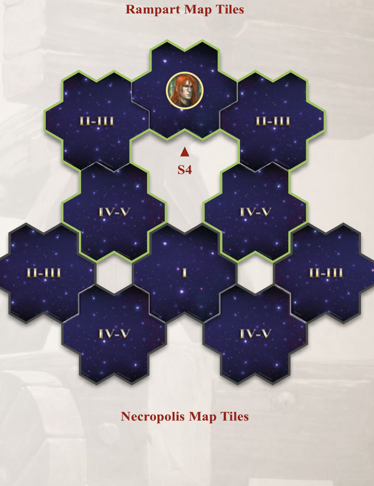
. Картинка со стр. 21.- Стартовые I: Некрополис S1 и Оплот S4. S4 уже открыт.
- Дальние II–III: 2 Оплота из F10, F11, F12 и 2 Некрополиса из F1, F4, F7.
- Ближние IV–V: Некрополис N1, N4 и Оплот N7, N8.
Центральный тайл вначале не кладут. Отложите утопию драконов (Dragon Utopia): C1 или C3. Её добавляют в куске «И это всё?».
Особые правила
Каждый вход на обелиск (Obelisk) запускает событие рассказа. Какой кусок при этом читать, книга не называет.
Победа и поражение
Победа: разбить вражескую армию на утопии драконов (Dragon Utopia).
Поражение:
- потерян свой город (Town) фракции;
- конец 12-го раунда, и армия на утопии драконов не разбита.
Проигранный бой книга в список поражений не ставит.
События
1-й раунд: прочитайте «Дейянских лордов надо остановить».
3-й раунд: прочитайте «Призраки за горизонтом». Charnu поставьте на центральное поле стартового тайла Некрополиса.
7-й раунд: прочитайте «Подкрепление некромантов». Galthran поставьте на центральное поле того дальнего тайла Некрополиса, который дальше от вашей миниатюры. Если оба на одном расстоянии, выберите любой.
12-й раунд, в конце: нет победы — поражение.
Сценарий завершён: прочитайте «Ещё не конец».
Колода между сценариями
Следующего сценария в книге нет. Как переносить колоду, книга Оплота не пишет.
Рассказ
- «Дейянских лордов надо остановить» — в 1-м раунде.
- «Призраки за горизонтом» — в 3-м раунде.
- «Подкрепление некромантов» — в 7-м раунде.
- «И это всё?» — вход на поле города (Town) стартового тайла Некрополиса.
- «Замок Crypthome» — вход на поле утопии драконов (Dragon Utopia). Дальше бой с Vidomina.
- «Ещё не конец» — после этого боя и когда сценарий завершён.
Дейянских лордов надо остановить (Deyjan Lords Must Be Stopped)
Когда читать: 1-й раунд.
Несколько дней назад Совет старейшин AvLee велел Gem и Gelu отомстить за смерть лорда Falorel, лорда Fayette, лордов-драконов и всех остальных, кто пал в набегах некромантов. С врагом оба уже имели дело, но к ужасу на дейянской границе это их не готовило. Ямы. Наспех вырытые ямы, полные тел. Нет, не тел. Остатков плоти, куч гниющей плоти, которая стала не нужна, когда из неё вырвали скелет.
«Это… чудовищно», — выдавливает Gelu и давит тошноту.
Gem только смотрит. Глаза холодные, ничего не видят. Потом она приседает и прячет лицо.
«Меня доконала кукла. Она была точь-в-точь как у сестры перед смертью. Я помню, думала: ей повезло больше всех на свете, раз у неё такая кукла… Потом орда скелетов убила всех в моей деревне…» Голос сходит на нет.
«Не смотри. Это не для…»
«Я одна уцелела.» Она поднимает голову и смотрит Gelu в глаза.
«Я РАДА, что Совет старейшин выбрал меня в пару, которая покарает Deyja.»
Во взгляде нет дрожи. Только злая решимость. Gelu отворачивается к горизонту. С холма хорошо видны долины этой странной умирающей земли. Будто осень пришла рано и выкрасила листья и кусты в бурое и красное. Трава без зелени уступает тёмной грязи. Все деревья в поле зрения едва живы или уже сухие.
«Когда я узнал, что за убийством лорда Falorel стоит Sandro, я копал дальше и открыл: лорды-драконы, которых я уничтожил, не были бандитами. Это были настоящие пограничные лорды AvLee. Я должен был сам объясниться перед Советом старейшин и принять их суд за ошибку. Совет сомневался, спросил оракула и сказал: лучше всего искупить вину, пойдя в карательный поход на Deyja.» Gem встаёт и подходит. Gelu делает паузу. «Я связан честью принять их суд и взял отпуск в Лесной страже.»
Ложится мёртвая тишина. Они взвешивают выбор.
«Дейянских лордов надо уничтожить, пока весь AvLee не собрали в их армии нежити», — решает Gelu.
«Всех», — вторит Gem.
За столом: вход на поле города стартового тайла Некрополиса — прочитайте «И это всё?».
Призраки за горизонтом (Wraiths Over the Horizon)
Когда читать: 3-й раунд.
Только что пришёл доклад разведчиков. Сегодня они встретили эрафийских нерегуляров, ополчение из города Clovergreen. Те знали Gem и передали вести. Два варвара, Crag Hack и Yog, вторгаются в Deyja из Эрафии.
Пока вы думаете, что это значит, сквозь войско бежит гонец. Добежав, она падает без сил. В горячке и бреду она говорит бессвязно, но кое-что разобрать можно. Одно видение не отпускает: десятки бледных призраков рвут посёлки на своём пути. Правда и то, что целый рой этих некромантских тварей видели к югу отсюда. В таком состоянии гонцу нужно хотя бы пару дней, чтобы полегчало. Бросить её или ждать, пока оправится? В конце концов… это всего один человек. Верно?
Если вы победили, выберите одно:
- потерять 1 очко передвижения и получить положительную мораль;
- получить отрицательную мораль.
Какую победу книга имеет в виду, до этой строки она не называет.
За столом: откройте стартовый тайл Некрополиса. Он уже открыт. Charnu поставьте на его центральное поле. В бою с её армией атака Wraiths на 1 выше.
Подкрепление некромантов (Necromancer Reinforcements)
Когда читать: 7-й раунд.
Сегодня вы должны встретить напарника по этой операции. Вы спешите к месту встречи, но бродить по вражеской земле — не прогулка. Когда вы добираетесь, уже давно темно. Усталые и поздние, вы входите в шатёр. Говорить можно и отдыхая.
После часов, за которые вы делитесь вестями, Gem взрывается.
«…Сегодня мне написал Ethric. Он сказал, что Sandro был его учеником десятки лет назад. Ещё сказал, что Sandro сбежал и стал некромантом!» Она кричит и ходит взад-вперёд.
«Это имя всплыло и на допросе», — спокойно добавляет Gelu.
«Вести были и хуже. Ethric сказал, Sandro, может быть, собирает сильный артефакт из всех артефактов, которые я ему носила. Я так разозлилась, что закричала.»
«Могу представить», — думает Gelu.
«Час ни один мой солдат ко мне не подходил. Надо передать это Совету старейшин…»
Вдруг шорох, и на стене шатра тень. Почти сами собой вы переглядываетесь и бьёте фигуру. Это вампир. Парой магических слов Gem освещает место. Несколько мрачных фигур жмурятся и закрывают глаза. Ещё вампиры. Лагерь задел малый авангард, и молодые новобранцы, видно, пали под клыками.
Опыт, чутьё убийц и слаженность делают бой очень коротким. То ли их было мало, то ли ваше сопротивление их удивило. Зато внезапность потеряна: тот, кто их послал, уже знает, что вы в Deyja.
«Sandro мог собрать сильный артефакт из всего, что собрал.» Вы думаете вслух. «Интересно, мёртвые лорды AvLee наткнулись на этот план?»
Выберите одно:
- если усилен серебряный отряд, переверните его на сторону Few;
- если есть бронзовый отряд, сбросьте его.
Если ни то ни другое сделать нельзя, эффект пропустите.
Затем откройте оба дальних тайла Некрополиса. Galthran выходит на карту в этом раунде, см. «События».
И это всё? (Is that all?)
Когда читать: вход на поле города (Town) стартового тайла Некрополиса.
Вы оба приходите к одному из замков некромантов. Он выглядит брошенным. В спешке. Недавно.
«Думаешь, они так нас боятся?» — удивляется Gem.
«Сомневаюсь», — отвечает Gelu и осторожно смотрит вокруг. «Даже если они знают, что мы идём, точное время прибытия им не вычислить. Они бежали от кого-то другого.»
Вы потрошите замок. После долгого тяжёлого поиска в одном камине находите полусгоревший клочок. Это карта, путь к «Castle Crypthome». Вы роетесь в цитадели дальше и ничего нужного не находите. Через час эльфийские разведчики, к вашему удивлению, вводят оркских лазутчиков с посланием. Оно от варвара по имени Yog.
«Хм, я встречала его однажды в Enroth», — задумывается Gem.
«Он с другим варваром, Crag Hack», — добавляет гонец.
«О Crag я тоже слышала.»
«Yog и Crag Hack злы на некромантов и особенно на Sandro. И…» Голос орка падает так низко, что вы оба сами подаётесь ближе.
«Что?! Crag собирал Sandro артефакты, и они СОЕДИНИЛИСЬ в сильный артефакт!»
За столом: возьмите отложенный центральный тайл и добавьте его к карте так, чтобы он соединялся хотя бы с одним ближним тайлом Некрополиса. Вход на поле утопии драконов — прочитайте «Замок Crypthome».
Выберите одно:
- +3 драгоценности;
- +10 золота;
- поиск (4) в колоде артефактов.
Замок Crypthome (Castle Crypthome)
Когда читать: вход на поле утопии драконов (Dragon Utopia), до боя с Vidomina.
Вы хорошо спрятаны в брошенных строениях рядом и смотрите на замок. На этот раз он не пуст. Рои скелетов входят и выходят, несут ящики припасов.
«…чтобы показать, как они недовольны Sandro, варвары решили вторгнуться в Deyja, но Yog хочет знать, что на самом деле происходит», — бормочет Gelu вслух.
«Недовольны. Как вежливо!» — смеётся Gem.
«Для нашего похода время удачное. Мы бьём Deyja с севера, они — с запада.»
«Эрафийцы взбесятся, когда услышат про Yog и Crag. Я хочу говорить с Yog. Где та карта?» — спрашивает Gem и роется в сумке. «Хм, сначала надо взять Castle Crypthome и закрепить эту часть Deyja, а потом попросим Yog и Crag встретить нас в месте под названием…» Она разворачивает карту и ведёт пальцем по пути. «Blagden. Потом…»
Она обрывает фразу: стены рушатся, скелеты заливают строение. За костяными фигурами стоит бледный некромант, вокруг зловещие рыцари и призрачные следы давно мёртвых драконов. Мёртвые и столь же смертоносные. Волосы на коже Gem встают, когда некромант собирает свою магию. Сила огромная. Войско уже в бою, и вы оба бросаетесь в драку. Один зовёт ливень стрел своих стрелков, другая берёт магические силы природы.
За столом: начинается бой с армией Vidomina. Обе карты специальности Sandro, I и VI, положите на отряд Pack Skeletons. Этот отряд сразу делает свободную атаку и всё ещё может атаковать в свою инициативу.
Если главный герой Gelu, нанесите 1 урон каждому врагу на боевой доске.
Если главный герой Gem, нанесите 3 урона выбранному вражескому отряду.
Дальше бой идёт по обычным правилам. После победы прочитайте «Ещё не конец».
Ещё не конец (Far From Over)
Когда читать: армия Vidomina разбита.
Когда с последними врагами покончено, Gem бросается к вражескому командиру. Vidomina закрывает лицо ладонью, будто прячет его от мстительной ярости Gem.
«Пощ…» — начинает она, и стрела из лука Gelu разбивает слово и её голову. Тут же остальное тело осыпается пылью на землю.
«Что…!»
«Голем!» — выдыхает Gem, удивление мешается со злостью. Она приседает и разгребает оставшуюся грязь голема. «Она уже сбежала, где-то во время боя. Здесь никого не осталось.»
Яростным пинком Gelu отправляет череп высоко в воздух.
«Не бойся. Мы их достанем», — заканчивает она, уже спокойнее.
«Всех», — добавляет он сквозь зубы. Когда злость наконец спадает, он идёт к открытому теперь Castle Crypthome.
War of the Mighty
Альянс · 4 игрока, двое на двое · Цитадель
Книга миссий Цитадели. Сценарий: стр. 7–8. Правила альянса: стр. 6.
О миссии
Источник: книга миссий Цитадели, стр. 7–8. Правила альянса этой книги — стр. 6. На странице стоит пометка Alliance. Режим: альянс, 4 игрока, двое на двое.
Слухи говорят, под землёй ждут чудовища. Шпионы доносят: соседи хотят нанять их и захватить ваши земли. Выбора нет: забрать земли соседей и закрепить подземелье. Ваша территория и так велика. Скоро станет больше.
Кто играет
4 игрока, два союза по двое. Союз выбирают в начале, и он держится до конца сценария. Режиму нужно хотя бы одно дополнение. Фракцию каждый выбирает сам, кроме Темницы: её книга закрывает, потому что стартовый тайл Темницы занят подземельем и нужен для победы.
Четыре стартовых места делятся на две области, A и B, как на схеме. Союзы выбирают области, затем каждый игрок выбирает место внутри области своего союза.
Длина
13 раундов. Если условие победы не выполнено, партия кончается вместе с 13-м. Если игрок ставит флаг на вражеский город (Town) в 12-м раунде, партия тянется до конца 14-го. Если флаг на вражеский город ставят в 13-м, партия тянется до конца 15-го. Про город на подземном тайле в этом продлении книга не пишет.
Старт
Каждому:
- 14 золота, 4 стройматериала, 1 драгоценность.
- Доход: 10 золота, 0 стройматериалов, 0 драгоценностей.
- Бронзовое жилище (Dwelling).
- 2 бронзовых отряда стороной Pack: самые дешёвые по цене найма.
Стартовый бонус сложности действует. Нейтралы на полях, кроме города (Town) Темницы, — от той же сложности. Город Темницы защищает записанная армия. Для опыта это поле считается трудностью VI. Это римская трудность поля, не шкала лёгкая–невозможная.
Карта
Соберите, как на картинке
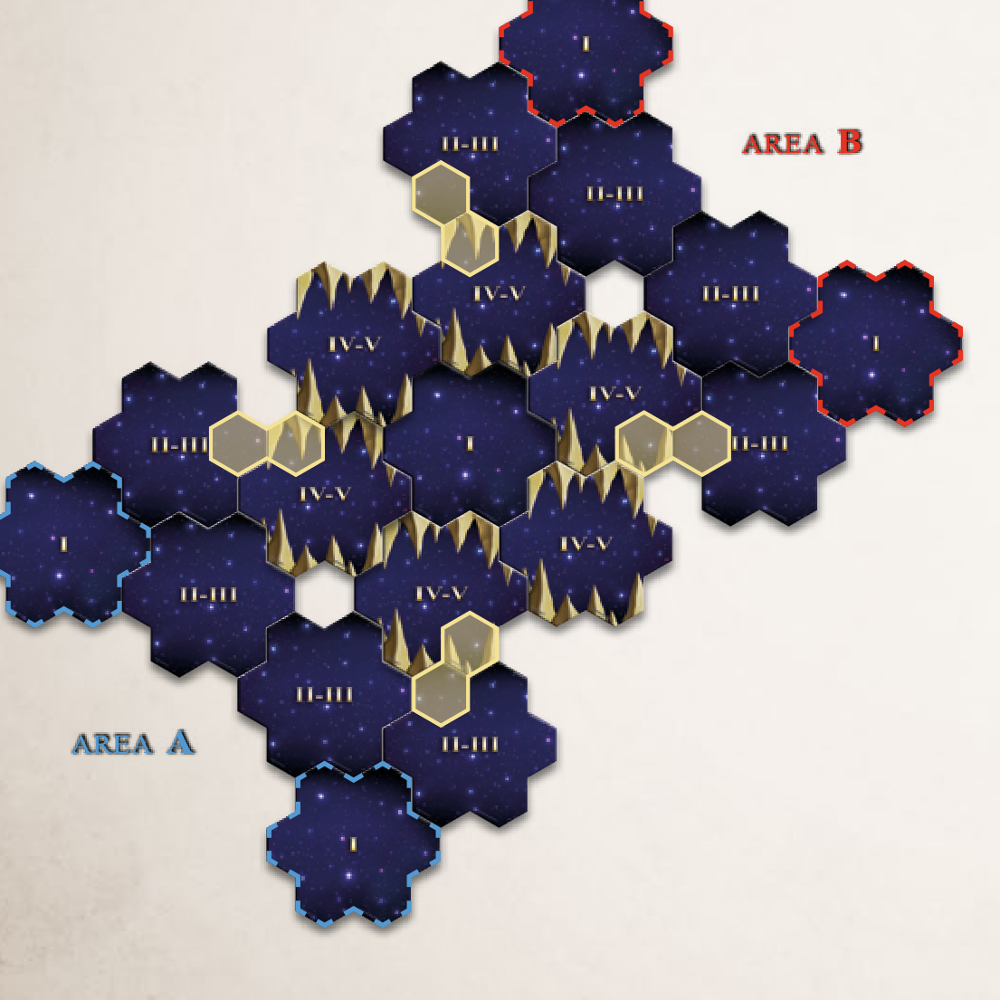
. Картинка со стр. 8.- 5 стартовых I. Один с городом (Town) Темницы: в базе это S2. Его не берут игроки. Остальные четыре — места союзов в областях A и B.
- 6 ближних подземных IV–V. В коробке Цитадели это U1–U6.
- 8 дальних II–III. Они на схеме.
- 4 жетона подземных врат (Subterranean Gate), на те поля, где они нарисованы. Какой фрагмент с каким связан, книга словами не пишет.
Особые правила
Правила альянса, стр. 6: победа и поражение общие. Артефакты меняют, когда герои стоят на соседних полях. Ресурсы можно передать в ход любого из двоих, соседство не нужно. Союзник не ставит флаг на поле, которое уже пометил другой игрок того же союза.
- Город (Town) Темницы защищают: Pack Evil Eyes, Pack Medusas, Pack Minotaurs, Few Manticores, Few Black Dragons.
- Когда за защиту своего города фракции платят золотом, можно пользоваться колодой Силы и Магии.
Победа
Союз побеждает одним из двух способов:
- захватить город (Town) на подземном тайле и удержать его следующий раунд;
- захватить один из вражеских городов и удержать его следующие 2 раунда.
Если условия победы выполнили оба союза, ничья. Если не выполнил ни один, проигрывают оба.
События
Событий по раундам нет.
Dungeon Keeper
Столкновение · 2 игрока · Цитадель
О миссии
Источник: книга миссий Цитадели, стр. 9–10. На странице стоит пометка Clash. Режим: столкновение, 2 игрока.
Вы — злой владыка Темницы, хозяин всего тёмного и коварного. Хозяин решил: пора, чтобы ваше зло просочилось на земли наверху и уничтожило глупцов, которые счастливо живут в Pleasantville.
Кто играет
2 игрока. Каждый сам за себя. Один из них обязан взять Темницу. Может ли второй тоже взять Темницу, книга не пишет.
Длина
12 раундов. Если к концу 12-го условие не выполнено, ничья.
Старт
Перед партией оба бросают по 2 кубика ресурсов (Resource Die). У кого сырых ресурсов на кубиках больше, тот выбирает, кто ходит первым, а кто второй. Что считать сырой суммой и что делать при равенстве, книга не расписывает.
Каждому:
- 10 золота, 3 стройматериала, 1 драгоценность.
- Доход: 10 золота, 0 стройматериалов, 0 драгоценностей.
- Бронзовое жилище (Dwelling) и гильдия магов (Mage Guild).
- 1 бронзовый отряд стороной Pack: самый дорогой по цене найма.
Стартовый бонус сложности действует. Нейтралы на полях — от той же сложности.
Вторичного героя нет ни у кого.
Карта
Соберите, как на картинке
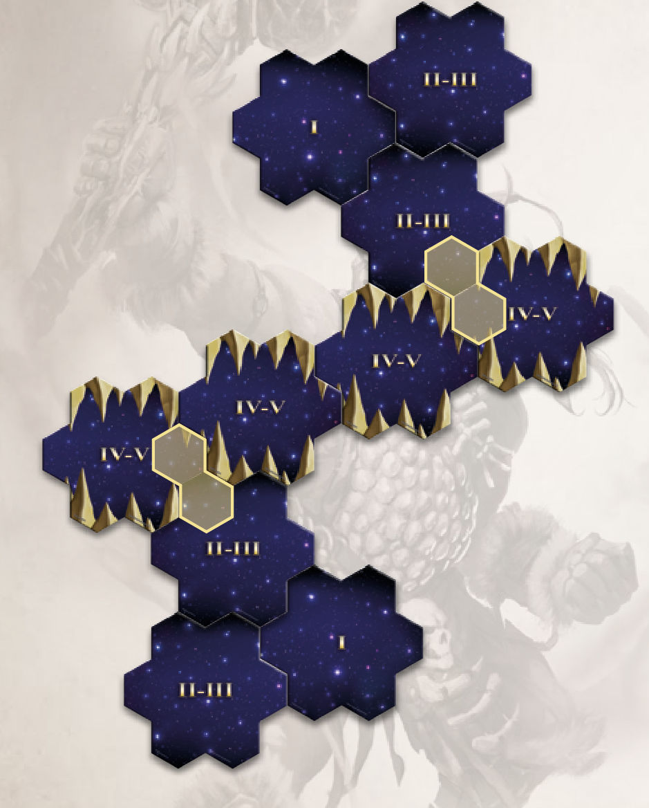
. Картинка со стр. 10.Особые правила
- На обелиске (Obelisk) игрок делает поиск (2) в колоде навыков, артефактов или заклинаний. Это одна колода на выбор или три поиска, книга не разделяет.
- Когда за защиту своего города (Town) фракции платят золотом, можно пользоваться колодой Силы и Магии.
Победа
Захватить город (Town) соперника или разбить его героя.
События
3-й, 6-й и 9-й раунды, в начале: главный герой второго игрока получает 1 очко передвижения.
Dwarven Tunnels
Кооператив · 2–3 игрока · Цитадель
Книга миссий Цитадели. Сценарий: стр. 12–13. Кооператив: стр. 11.
О миссии
Источник: книга миссий Цитадели, стр. 12–13. Правила кооператива этой книги — стр. 11. Режим: кооператив, 2–3 игрока.
Старые гномьи туннели давно кишат тварями. Крутые горы и густые леса закрывают путь к врагам и к союзнику, но эти туннели могут очень пригодиться, чтобы покорить мир.
Кто играет
2 или 3 игрока. Все заодно и вместе бьют сценарий. Фракцию книга не сужает. Вторичного героя нет ни у кого.
Нейтралов ведут по правилам боя ИИ для одиночной игры. Книга отсылает к основным правилам, «AI Combat», страница 33 той книги.
Длина
Срок зависит от сложности.
Для лёгкой сложности книга срок не даёт.
10 раундов.
11 раундов.
12 раундов.
Не уложились в срок — поражение. На лёгкой, где срока нет, это условие книга не задаёт.
Старт
Каждому:
- 14 золота, 4 стройматериала, 1 драгоценность.
- Доход: 10 золота, 0 стройматериалов, 0 драгоценностей.
- Бронзовое жилище (Dwelling).
- 3 бронзовых отряда стороной Few.
Стартовый бонус сложности действует. Нейтралы на полях — от той же сложности. На центральном тайле это нейтралы уровня VII.
Карта
Схема на двоих, стр. 13.
Схема на троих, стр. 13.
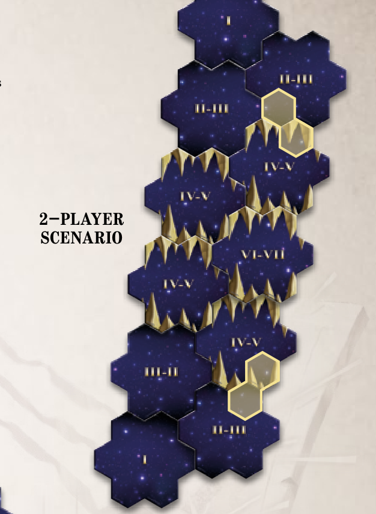
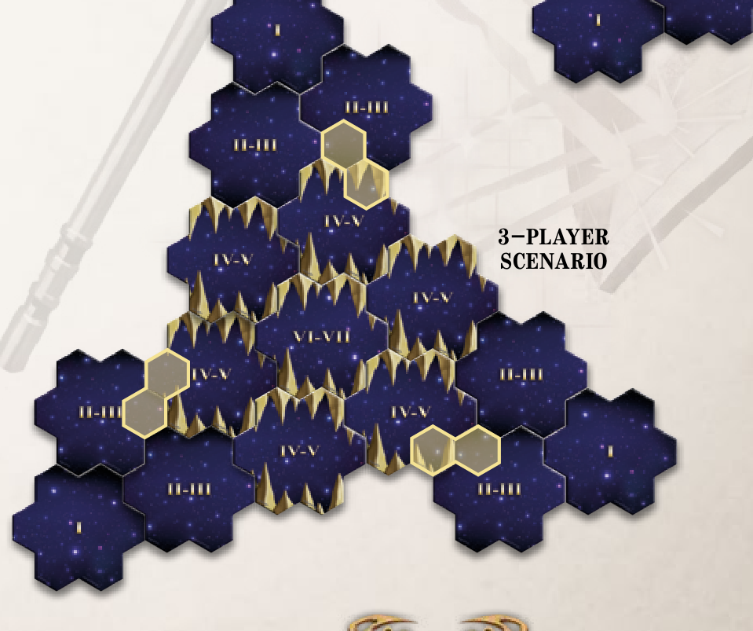
- Стартовых I — по числу игроков.
- Ближних подземных IV–V — по два каждому. В коробке Цитадели это тайлы U1–U6: для двоих четыре из них, для троих все шесть.
- 1 центральный подземный VI–VII. В коробке Цитадели это U7.
- Дальних II–III — по два каждому. Ни на одном не должно быть посёлка (Settlement).
- Жетоны подземных врат (Subterranean Gate): книга пишет «2 or 3», как на схеме выбранного числа игроков. Какой фрагмент с каким связан, словами не пишет.
Особые правила
Правила кооператива, стр. 11. На торговом посту, кроме обычного обмена, можно отдать ресурсы любому игроку. Обычный обмен — таблица торговли основных правил, страница 36 той книги. Если условие победы выполнил один игрок и сценарий не говорит иначе, партия сразу кончается и побеждают все. Здесь книга говорит иначе: победить должен каждый.
Во время сценария:
- В свой ход игрок может отдать другому стройматериалы и драгоценности, не заходя на торговый пост. Золото передавать нельзя.
- Бой с нейтралами уровня VII на центральном тайле можно начинать сколько угодно раз. Победить в нём каждый герой может только один раз: победивший герой сразу уходит с карты.
- Чтобы открыть центральный тайл, платят по 2 золота, 2 стройматериала и 2 драгоценности на каждого игрока. Для троих книга приводит пример: всего 6, 6 и 6. Взнос можно сложить как угодно. Может заплатить и один.
Победа
Каждый игрок побеждает в бою с нейтралами уровня VII на центральном тайле.
События
Событий по раундам нет.
Barbaric Brotherhood · 1. Harvest
Кампания · 1 игрок · Цитадель
Книга миссий Цитадели. Сценарий: стр. 17–18. Рассказ: стр. 19–21. Правила кампании: стр. 14–16.
1. Harvest
Источник: книга миссий Цитадели, стр. 17–21: подготовка 17–18, схема 18, рассказ 19–21. Правила кампании этой книги — стр. 14–16. Режим: кампания, 1 игрок, фракция Цитадель.
Два свирепых варвара, Crag Hack и Yog, сходятся в одном: вымести злых некромантов, которые сеют хаос в Эрафии. Вместе они хотят раздавить врагов и вернуть покой истерзанным землям.
Правила кампании
Книга Цитадели, стр. 14–16, поверх правил кампании базы.
- Доход в начале сценария: 10 / 0 / 0, если сценарий его не меняет.
- Стартовый бонус сценария заменяет бонус сложности.
- Герою ИИ сдаться нельзя. Герои ИИ ходят после игрока.
- Между сценариями: вернуть руку и сброс в колоду, отложить характеристики и специальность 1-го уровня, остальные специальности убрать, из оставшегося выбрать 5 карт и добавить к отложенным. Это стартовая колода следующего сценария. Уровень снова I. Свитки заклинаний в колоду не входят и дальше не переносятся.
- Проигрыш сценария: из колоды убрать всё, чего нет в текущей стартовой колоде.
- Смена героя между сценариями расписана на стр. 14. Герой должен быть той же фракции, что рекомендованный.
- Колода или навык ИИ, которые книга не отдала одной армии, общие. После боя колоду перемешивают целиком.
- Если заклинаний в колоде ИИ больше, чем карт Magic, это не ошибка. Кончилась колода заклинаний в бою — сброс перемешивают в новую. Как ИИ читает Stone Skin и заклинания по нескольким целям, стр. 15–16.
Подготовка игрока
Фракция: Цитадель. Рекомендованный герой: Yog. Можно взять другого героя Цитадели. Героя поставьте на поле города (Town) стартового тайла Цитадели. Тайл уже открыт.
Армия: Pack Goblins, Pack Wolf Raiders.
Ресурсы: 12 золота, 0 стройматериалов, 1 драгоценность. Доход: 10 / 0 / 0. Здания: бронзовое жилище (Dwelling), цитадель (Citadel).
Бонус сценария, один на выбор:
- Pack Orcs в армию;
- поиск (4) в колоде артефактов;
- +6 стройматериалов.
Стартовый бонус сложности заменён этим выбором. Нейтралы полей — от выбранной сложности, но колоды нейтралов урезаны, см. ниже. Армии Isra и Aislinn от шкалы не меняются.
Подготовка героев ИИ
Фракция: Некрополис. Двое: Isra и Aislinn. Две миниатюры Некрополиса. Isra — на поле города (Town) стартового тайла Темницы. Aislinn — на поле города стартового тайла Некрополиса.
Isra: Pack Skeletons, бронзовые нейтралы Skeletons, Pack Vampires, Few Liches, Few Dread Knights. Колода ИИ: 3 Might, 2 Magic.
Aislinn: Pack Skeletons, Pack Zombies, Pack Vampires, Pack Dread Knights. Колода ИИ: 5 Magic, 2 Skill.
Общая колода заклинаний: 3 Magic Arrow, 1 Curse, 1 Blind, 1 Stone Skin. Книга не делит её по героям.
Навык: заклинание Fireball. Книга не отдаёт его одной армии, по стр. 15 он общий. Когда навык срабатывает, положите на эту карту один кубик фракции Некрополиса. Когда кубиков станет два, прочитайте Fireball с силой заклинания 4.
Для рассказа отложите 3 карты Wall и 1 Arrow Tower.
Isra не ходит, пока не открыт тайл, соседний со стартовым тайлом Темницы. После этого она идёт к вашему герою и не соблюдает обычный порядок хода ИИ. Aislinn стоит в городе Некрополиса и не ходит.
Победа над армией ИИ даёт 1 опыт.
Карта
Соберите, как на картинке
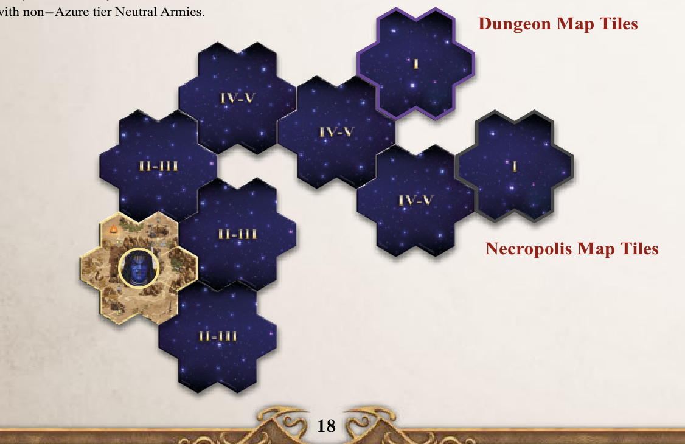
. Картинка со стр. 18.Нейтралы
Из колод нейтралов уберите все карты, кроме этих. Убранные и новые колоды сохраните до следующих сценариев кампании.
- Бронза: Rogues, Zombies, Wraiths, Harpies, Evil Eyes.
- Серебро: Nomads, Mummies, Vampires, Liches, Medusas.
- Золото: Enchanters, Dread Knights, Ghost Dragons, Manticores, Black Dragons.
Лазурных в списке нет.
Особые правила
Первый вход на обелиск (Obelisk) запускает рассказ. После этого каждый обелиск — пустое поле.
Победа и поражение
Победа: разбить обе вражеские армии.
Поражение: герой разбит в любом бою. Отступить из боя с нейтралами не лазурного уровня всё ещё можно.
События
1-й раунд: прочитайте «Проверка слухов».
4-й раунд: сбросьте все карты с руки, затем получите отрицательную мораль. Снимите все чёрные кубики со всех локаций. Эти локации можно посетить снова. Прочитайте «Гниющие земли».
10-й раунд, в конце: поражение.
Вход на обелиск (Obelisk): прочитайте «Хижина провидицы».
Начало боя с Isra: прочитайте «Isra».
Начало боя с Aislinn: прочитайте «Aislinn».
Сценарий завершён: прочитайте «Ничего личного».
Колода между сценариями
Пять шагов со стр. 14. Уровень снова I. Свитки дальше не идут.
Рассказ
- «Проверка слухов» — в 1-м раунде.
- «Гниющие земли» — в 4-м раунде.
- «Хижина провидицы» — первый вход на обелиск (Obelisk). В куске выбор.
- «Isra» — начало боя с Isra.
- «Aislinn» — начало боя с Aislinn. В куске расстановка стен.
- «Ничего личного» — когда сценарий завершён.
Проверка слухов (Checking out the Rumors)
Когда читать: 1-й раунд.
Вы медленно идёте сквозь бой. Вокруг приятный звон мечей, булав и топоров. Сшибка звенит и не стихает. Новобранцы, мимо которых вы проходите, кидают ошарашенные взгляды. Вам понятно почему. Такое зрелище не каждый день. И, увы, их берёт не стать, закалённая в битвах. Нет, другое: тёмно-синяя кожа, наследство матери, чародейки-джиннии. Она видела вас волшебником и немало сил положила, чтобы толкнуть на эту дорогу. Но в жилах кровь отца-варвара. Вы часто говорили себе: «Этим рукам меч, а не посох.» По тому, как сложилась жизнь, судьба согласна.
Несколько гоблинов под вашей рукой только что выскочили из ближней кукурузы и бегут к вам, а за ними волна зомби. Вы пинаете одного мертвеца, он отлетает на несколько футов, и метаете топор в другого, разрубая пополам. Потом хватаете гоблина и без труда бросаете его обратно за стену кукурузы. Крики… вы не уверены, чьи.
«Тут работает некромант», — говорите вы ближним. «Крестьяне по всей этой земле встают ходячими трупами. И ни один вельможа, ни один лорд не вышел это остановить. Я сам уничтожу эту напасть!» Вы кричите и бросаетесь в поле.
Когда пламя боя гаснет, вы смотрите на плодородные земли Эрафии. Край изнеженных вельмож, наивных селян и беззащитных крестьян. Несколько дней назад вы слышали слух: некроманты вторглись туда. Занятий интереснее нет, и вы идёте проверить слух. Некроманты Deyja, говорят, перебросили в Эрафию большие силы.
«Ничего личного», — повторяете вы про себя. Просто вы крепко не любите нежить и чёрную магию некромантов. Вы решили отдать им своё уменье вести людей и выгнать их из Эрафии.
Гниющие земли (The Decaying Lands)
Когда читать: 4-й раунд.
Вы выходите на развилку. Куда свернуть, неясно. Вы быстро останавливаете войско и берёте несколько разведчиков к ближнему утёсу: хочется понять, что впереди. Наверху становится ясно: выбор дороги — меньшая из забот. За развилкой гниющие деревья, след некромантов. Почва отравлена их мерзкой магией, она высасывает жизнь из всего, до чего дотянется. Мрачная картина до горизонта говорит: вы стоите на краю края, который некроманты только что забрали себе. Вас бесит, как мало вы можете. Вы закрываете глаза и сжимаете кулаки. Вы растили армию против этих тварей как могли, и всё равно не поспеваете за тем, как расползается их власть. Вернувшись к войску, вы слышите тревожный шёпот. К такому они не привыкли.
За столом в этом раунде: сброс всей руки, отрицательная мораль, чёрные кубики с локаций снять. См. «События».
Хижина провидицы (The Seer's Hut)
Когда читать: первый вход на обелиск (Obelisk).
В отличие от других варваров, большую часть жизни вы учили магию у волшебников Bracada. Всё чтобы угодить матери.
Полезным вам это не казалось, но именно та базовая выучка дала узнать слабую магическую ауру вокруг скромной хижины за холмом. Хижина провидицы. Туда и надо.
Вы толкаете скрипучую старую дверь и думаете, что сказали бы учителя о том, как вы применили их уроки. Не одобрили бы: вы так и не прочли книги, которые они задавали.
Пыль на окнах гасит свет, он неохотно ложится на дерево внутри. Глазам нужна минута. Потом картина странная: две старухи толстыми верёвками держат лича, третья метёт пол, усыпанный битой утварью и мебелью. Не почуй вы их магию раньше, может, и помогли бы. Может быть.
«Простите за беспорядок», — говорит та, что метёт, и деловито собирает битые банки и обломки полки в ведро. «В последнее время у нас много нежданных „гостей“… Где мои манеры? Садитесь», — и она показывает на один из уцелевших стульев.
«Мне привычнее седло, чем жёсткое дерево», — отвечаете вы и не садитесь. Одна из тех, кто держит лича, фыркает. «Но если я могу помочь мудрым провидицам, я готов. Если вы дадите мне свою силу взамен.»
Три женщины оглядывают вас с приговором. Им ясно хочется понять, не насмехаетесь ли вы. Потом одна начинает: «Ну… если вы дадите нам защиту…» — и её сразу перебивают. «…или поможете отвезти „это“ в ближнюю тюрьму…», «…мы могли бы…», «…войско рядом всё облегчит…», «…сказать, где найти циклопа, который живёт в уединении.»
Вы хотите ответить и встречаетесь глазами с личем на полу. В голове гудит мрачный голос: «Помоги мне сейчас же уйти отсюда, и я отдам всё, что знаю!»
Вы взвешиваете, глядя на эту сцену.
Выберите одно.
1. Если есть серебряное жилище, сбросьте отряды на 20 золота. У Pack в эту цену входят и найм, и усиление. Затем:
- постройте золотое жилище (Dwelling) бесплатно;
- кусок здесь кончается, продолжение не читайте;
- положите на поле кубик фракции. Сюда больше нельзя.
2. Получите отрицательную мораль. Затем:
- получите 20 золота;
- тяните из колоды артефактов, пока не выйдут две карты, которые дают отрядам бонус защиты (Defense). Одну возьмите в руку, вторую замешайте обратно;
- прочитайте продолжение ниже;
- положите на поле кубик фракции. Сюда больше нельзя.
Если нет серебряного жилища, первый вариант книга не открывает.
Продолжение, только после второго варианта. Вы киваете и говорите старым провидицам, что возьмёте на себя перевозку лича, но уйти надо сразу. За пределом их магии вы начинаете допрос. Xsi, как вы узнаёте, другие бросили, потому что она не согласилась со всем их планом. Не от доброго сердца, конечно. Столько убийств и обращений на земле Эрафии неминуемо вызвало бы войну с Deyja. Кто задумал дело, она сказать не может: её бросили раньше, чем она встретила того, кто за всем стоит. В благодарность за освобождение она вместо этого говорит, где золотая шахта, в которой она спрятала сильный щит.
Isra (Isra)
Когда читать: начало боя с армией Isra.
Вы идёте по земле, которую отравили некроманты, и подходите к глухому посёлку. Он, кажется, ещё держится против потока нежити. Люди на удивление бодры. Вы спрашиваете крестьянина, почему. «Как же, господин, потому что вы пришли нас спасти. И не только: в городе моей сестры другой варвар помогает им против некромантов. Значит, Эрафия и Krewlod, может быть, мирятся, да?» Вы только киваете и уходите. Не хочется гасить его надежду.
Вы берёте на заметку того другого варвара, у которого тоже беда с некромантами. Вдали орда скелетов. Один цепляет глаз. Тусклый коричневый шлем, чёрные пряди того, что когда-то было прибранными волосами, и от неё веет силой. Меньшая нежить ей послушна. Лич? По мере приближения аура темнеет, злее, как и ждут от такой твари… но она так слаба, что вы начинаете сомневаться: может, это обычный скелет в проклятом шлеме.
«Неважно…» — бормочете вы. И бросаетесь на орду. Войско за вами.
За столом: бой с армией Isra.
Aislinn (Aislinn)
Когда читать: начало боя с армией Aislinn.
Вы едете по дороге и вдруг встаёте: замок некроманта. По вашей карте здесь должен быть город, не замок. Ближе видно: он стоит на руинах старого эрафийского города. Кое-где ещё стены, они крошатся под тенью Некрополиса. Смердит так, что вас мутит, и крепнет решимость помочь людям этой земли. В других обстоятельствах вы бы оценили, как быстро подняли такую громаду. Но вы знаете, кто строил и чей костяной палец клал кирпичи, или что там пошло в дело. По спине холод.
Пылающий камень сбивает орка справа и выдёргивает вас из мрачных мыслей. Взгляд мечется от трупа к окнам замка, ищет, откуда удар. Вспышка магии, и вы видите морщинистое лицо вампирши в одном из окон. Она, кажется, снова собирает силу, чтобы осыпать вас метеорами. Пока вы смотрите, из замка выплёскивается армия нежити и всей массой бьёт по вашему войску.
За столом: карту Arrow Tower положите в один из углов на стороне ИИ и окружите тремя картами Wall. Армию ИИ поставьте в третий ряд боевой доски, в одну линию. Бой с армией Aislinn.
Ничего личного (Nothing Personal)
Когда читать: обе вражеские армии разбиты.
Коням нужен отдых. Вы съезжаете к краю дороги и велите стать на сегодня. Люди сразу ставят лагерь. Вы садитесь на ближний валун, достаёте флягу из когтя чудища и делаете несколько глотков воды. Чтобы убить время, листаете пожитки последнего разбитого некроманта: старая обрядовая утварь, несколько ржавых колец, бесполезные побрякушки, письма союзников в крае и книга по тёмной магии. Первая страница вызывает улыбку.
В академии магии вы влюбились в другую ученицу. Противоположности и правда тянутся: в отличие от вас, она была учёной и книжной. И как она любила магию. От этой мысли улыбка шире… и тут же горкнет. Это была её жизнь. Или должна была быть, если бы её не испортили. Свободное время она рылась в библиотеках в поисках тайных томов и в конце концов наткнулась на рукопись вроде той, что сейчас у вас.
«Идти против совета учителей — это у нас было общее…» — бормочете вы, и в словах сожаление. Понимаете, что сказали, и отбрасываете книгу. Она изучала книгу, и злые знаки её переделали. Вы встаёте и зло идёте к коню. В голове вспыхивает сумма, которую вы когда-то получили за похожий том, и вы почти сразу медлите. Деньги есть деньги, и сумма была не пустяк. Глубокий вдох, вы снова тянетесь за книгой. Кладёте руку на открытую страницу, и доходит: не случайно вы стали вспоминать прошлое.
«От искательницы знания, такой же, как ты, Vidomina», — написано на первой странице.
Вы сжимаете кулак и рвёте страницу. С яростной решимостью идёте к костру и бросаете проклятую книгу в огонь. Мимо ошеломлённых подчинённых вы проходите так, будто ничего необычного не было.
«Ничего личного», — говорите вы сквозь зубы и оглядываетесь. Увядшая трава, деревья, гниющие изнутри, потемневшая почва от прикосновения смерти. Невыносимый смрад тлена. Вы берёте на заметку, что вокруг… что злые некроманты сделали с землёй, которая была красивой.
Кто это сделал, заплатит. И заплатит дорого.
Barbaric Brotherhood · 2. Gathering the Legion
Кампания · 1 игрок · Цитадель
Книга миссий Цитадели. Сценарий: стр. 22–24. Рассказ: стр. 25–26. Правила кампании: стр. 14–16.
2. Gathering the Legion
Источник: книга миссий Цитадели, стр. 22–26: подготовка 22–23, схема 24, рассказ 25–26. Правила кампании — стр. 14–16. Режим: кампания, 1 игрок, фракция Цитадель.
Доход 10 / 0 / 0. Бонус сценария заменяет бонус сложности. Герою ИИ сдаться нельзя, герои ИИ ходят после игрока. Между сценариями — пять шагов со стр. 14, уровень снова I, свитки дальше не идут. Колода и навык, которые книга не отдала одной армии, общие.
Подготовка игрока
Фракция: Цитадель. Герой: Crag Hack. Можно взять другого героя Цитадели, стр. 14. Героя поставьте на поле города (Town) стартового тайла Цитадели. Тайл уже открыт.
Армия: Pack Goblins, Pack Wolf Raiders.
Ресурсы: 8 золота, 0 стройматериалов, 0 драгоценностей. Доход: 10 / 0 / 0. Здания: бронзовое жилище (Dwelling), магистрат (City Hall).
Бонус сценария, один на выбор:
- бронзовые Peasants. Few это или Pack, книга не пишет;
- +6 золота;
- поиск (4) в колоде заклинаний.
Стартовый бонус сложности заменён этим выбором. Нейтралы — из урезанных колод и от выбранной сложности. Армии врагов от шкалы не меняются. В 7-м раунде к Chasim и Velmor, если они ещё не разбиты, добавляют Few Champions.
Из жилищ своей фракции нанимать нельзя. Книга не пишет, снимается ли запрет, когда в 3-м и 7-м раундах жилища строят бесплатно.
Подготовка героев ИИ
Lord Chasim, Lord Velmor и Tyranell. Две миниатюры Замка: Chasim на поле города (Town) стартового тайла Замка, Velmor на поле города стартового тайла Некрополиса. Tyranell без миниатюры и на карту не выходит. Бой с ним — вход на поле города стартового тайла Темницы.
Chasim: Pack Halberdiers, Pack Griffins, Few Crusaders, Few Zealots.
Velmor: Few Marksmen, Few Crusaders, Pack Zealots.
Общая колода Chasim и Velmor: 3 Might, 1 Magic.
Tyranell: Pack Halberdiers, Pack Marksmen, Pack Zealots, Pack Crusaders, Few Champions. Колода ИИ: 4 Might, 2 Magic, 2 Skill.
Общая колода заклинаний: 2 Magic Arrow, 1 Lightning Bolt, 2 Cure. Книга не делит её по героям.
Навык: Offense. Книга не отдаёт его одной армии, по стр. 15 он общий.
Враги не ходят, пока это не включит событие. С 3-го раунда ходят Chasim и Velmor.
Если есть, выньте из колоды артефактов Arms of Legion, Head of Legion, Legs of Legion, Loins of Legion и Torso of Legion. Это отдельная стопка, колода Легиона. Если такая карта уже в колоде Силы и Магии героя, каждую замените картой Magic Arrow.
Победа над армией ИИ: поиск (2) в колоде Легиона, 1 опыт и 5 золота.
Карта
Соберите, как на картинке
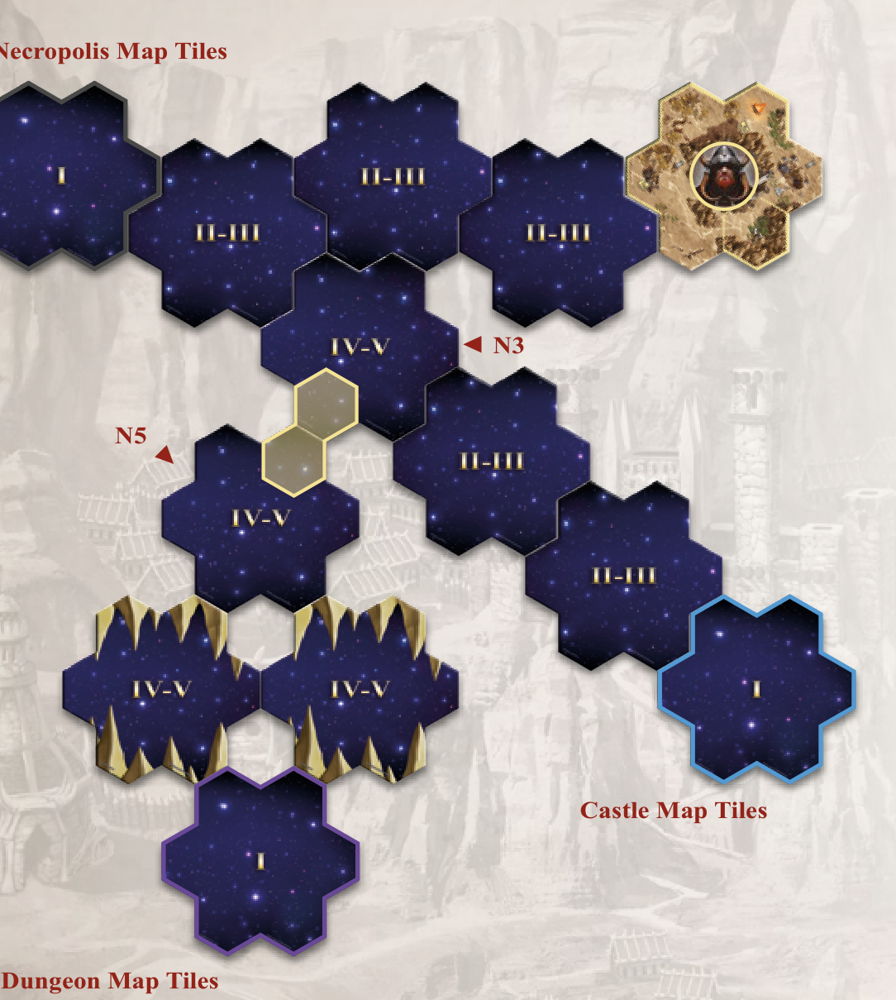
. Картинка со стр. 24.- Стартовые I: Некрополис S1, Темница S2, Замок S3, Цитадель S7. S7 уже открыт.
- Дальние II–III: 5 случайных из Замка F3, F6, F9, Некрополиса F1, F4, F7 и Цитадели F19, F20, F21. Книга не говорит, все пять из одной фракции или каждый из любой.
- Ближние IV–V: Замок N3 с обелиском (Obelisk), Темница N5 с обелиском и 2 случайных подземных из U1–U6.
- 1 жетон подземных врат (Subterranean Gate), как на схеме. Какой фрагмент с каким связан, книга словами не пишет.
Нейтралы
Уберите из колод все карты, кроме этих.
- Бронза: Rogues, Zombies, Wraiths, Harpies, Evil Eyes.
- Серебро: Nomads, Mummies, Vampires, Liches, Medusas.
- Золото: Enchanters, Dread Knights, Ghost Dragons, Manticores, Black Dragons.
После боя с нейтралами их карты замешайте обратно в свои колоды.
Один раз за раунд ресурсов, включая первый, и при первом входе на обелиск (Obelisk) можно взять 2 верхние карты из колоды нейтралов того уровня, для которого у вас есть жилище (Dwelling). Одного из них можно нанять, заплатив цену найма. Ненанятых замешайте обратно. «Первый вход на обелиск» книга пишет так, что это читается как первый вход на каждый обелиск. Один это обелиск на всю партию или каждый, она не разделяет.
Победа и поражение
Победа в тот миг, когда в колоде героя 3 карты Legion.
Поражение: герой разбит в любом бою. Отступить из боя с нейтралами не лазурного уровня всё ещё можно. Конец 10-го раунда без победы — поражение.
События
1-й раунд: прочитайте «Город Hartferd».
3-й раунд: бесплатно постройте серебряное жилище (Dwelling) Fort under the Nest. Chasim и Velmor начинают ходить. Прочитайте «Крестьяне и лорды».
7-й раунд: бесплатно постройте золотое жилище Mountain Caves. Если Chasim или Velmor ещё не разбиты, добавьте в их армии Few Champions. После дохода этого раунда заплатите 5 золота. Откройте оба подземных тайла. Прочитайте «Старый слуга».
10-й раунд, в конце: поражение.
Вход на подземные врата (Subterranean Gate): прочитайте «Стража».
Колода между сценариями
Пять шагов со стр. 14. Уровень снова I. Свитки дальше не идут.
Рассказ
- «Город Hartferd» — в 1-м раунде.
- «Крестьяне и лорды» — в 3-м раунде.
- «Старый слуга» — в 7-м раунде.
- «Стража» — вход на подземные врата (Subterranean Gate). В куске выбор.
Отдельного куска на победу книга не даёт.
Город Hartferd (The Town of Hartferd)
Когда читать: 1-й раунд.
Вы едете несколько дней почти без передышки, и войску невтерпёж остановиться. Их не винить: они едва стоят. Наконец трактир, и вы велите стать. Им велено взять комнаты, а сами вы садитесь на скамью снаружи. Солнце в Эрафии не такое злое, как в Krewlod. Но середина лета. И мех волков у налётчиков густой.
«В бою они хороши, а в такой дороге обычный конь был бы лучше», — ворчите вы и смахиваете пот из-под шлема.
Дни и недели поисков Sandro после его предательства ничего не дали. Волшебника, которого вы описываете, будто никто не видел. Имя кое-кто узнаёт и пожимает плечами, кто он и где. Удача не с вами. Вы решаете сменить шаг: может, тихий визит к родне, которая перебралась из Krewlod в Эрафию, прочистит голову.
Из трактира грохот и крики. Вы думаете, что это ваши устроили разнос, и встаёте проверить. Тут к вам несётся маленькая круглая фигура. Боитесь, что гадкий хобгоблин ловит минуту вашей слабости. Поправляете шлем и поднимаете топор. Ближе видно: лысеющий человек в богатом платье.
«По… по… пож…» — он не может отдышаться.
«Эй, тише, приятель. Не спеши. Я никуда не денусь, ха-ха…» Вы даёте самую дружелюбную улыбку, на какую способны, и незаметно прячете топор за спину.
От одной улыбки человек подпрыгивает.
«Вы… вы не герцог с подкреплением?» — спрашивает он со страхом.
Вы смотрите на себя, потом на него. И хохочете.
«Нет», — говорите вы, когда удаётся задушить смех. «Я Crag Hack. Родня живёт здесь… Где-то здесь. Я стал с людьми, чтобы…» За лысым двое ваших выбрасывают кого-то из окна. «…ОТДОХНУТЬ!» — орёте вы, перекрывая звук тела о землю. «У тебя, похоже, большая беда, дорогой…?»
«Timis. Мэр города Hartferd.»
Вы смотрите на несколько домов у дороги, откуда он пришёл. Город, значит?
«Помогите, господин… Crag Hack, если можно так. На нас свалилось тяжкое дело. Рыцарь по имени Tyranell украл наш городской артефакт, Head of Legion. Hartferd вообще на карте только из-за этого артефакта!» — выпаливает он. «Нам важно вернуть его. И ходят слухи, что другие части артефакта Легиона где-то рядом. Может, найдёте и их?» В голосе надежда. «Когда соберут полный артефакт, целую статую, Hartferd и правда станет славным городом. Награды большой мы не дадим, но вас будут чтить как настоящего героя и всегда будут рады.»
Пока Timis говорит, вы думаете, что снова ищете артефакты для кого-то. Может, и тут рука Sandro. Нет, слишком уж совпадение. И всё же, чтобы тебя звали героем, звучит неплохо. «Может, это как раз то, что поднимет дух. Потеха!» Вы и так бы помогли, а теперь их и две дюжины коней не удержат.
«Расскажи ещё про этого… Tyranell, да?» — спрашиваете вы и ведёте мэра к трактиру.
Крестьяне и лорды (The Peasants and the Lords)
Когда читать: 3-й раунд.
Сегодня вы прошли маленькую деревню. Вас встретила кучка крестьян с вилами. Увидели вас, и тон сразу стал таким: «Пожалуйста, не трогайте! Мы сделаем, как скажете, честное слово!»
«Эрафийцы такие трусы», — говорите вы, глядя, как один орк гордо поднимает новые вилы. Хмыканье за спиной: разведчица с докладом.
«Какие вести?» — вы оборачиваетесь.
«Вождь! В крае ещё две рыцарские силы. Ими ведут Lord Chasim и Lord Velmor. Оба хотят собрать Statue of Legion, и оба чужакам не рады.» Она достаёт карту. «Они сейчас здесь… и здесь. Другие части Легиона могут быть у них. Слухи: Tyranell прячется где-то на острове на юго-западе. Про остальные части почти ничего, разве что они могут быть под землёй где-то в крае.»
«Ладно, ладно. Ещё что?»
«Жители Hartferd отстраивают город, чтобы вам помочь.»
«Вот как?»
За столом: серебряное жилище строится бесплатно, Chasim и Velmor начинают ходить. См. «События».
Старый слуга (Old Retainer)
Когда читать: 7-й раунд.
Авангард в последней атаке взял занятного человека: старого слугу Tyranell. Из рыцарской службы его выставили. Теперь он сидит перед вами унылый, на песке. Сначала говорить не хотел. Стал на удивление разговорчив, когда вы сели рядом и принялись точить топор. Странные эти эрафийцы…
Из расспросов: Sandro собирался хорошо заплатить Tyranell, чтобы тот нашёл Head и другие части Легиона. Значит, этот лич и правда во всём этом замешан.
«…Tyranell просто ждёт, пока власти бросят его искать, и тогда продолжит своё дело», — заканчивает он.
«Значит, спрятался на том острове? Этот „великий и благородный“ герой? Уплыл, как крыса с корабля?»
«Или ушёл подземным ходом, к югу от здешнего Hill Fort.»
«Там есть такой туннель?»
«Они по всей Эрафии. Только за этот проход надо заплатить страже.»
«Ну надо же…»
Хозяином вы были не лучшим, но сказанное пригодится. И давить почти не пришлось. За вести вы даёте слуге золота и отпускаете. Быть у кого-то в долгу не ваш стиль, врагов и так хватает. Пока вы смотрите, как он уходит, прибывает гонец из Hartferd.
«Что такое?»
«Жители Hartferd отстраивают город, чтобы вам помочь.»
«И… это всё послание? Ладно…»
За столом: золотое жилище, Few Champions, 5 золота после дохода, оба подземных тайла открыть. См. «События».
Стража (Guards)
Когда читать: вход на подземные врата (Subterranean Gate).
Вы стоите перед воротами подземного хода. Стража у входа и правда есть, как вам сказали. Числом они меньше вашего войска, но по умению с ними придётся считаться. Целым из этой встречи вы не выйдете.
Стража пропустит, если заплатить пошлину. Заплатить и пройти по-эрафийски? Или проложить дорогу их костями, как велит варварский обычай?
Выберите одно:
- заплатите 15 золота, положите на поле кубик фракции, сюда больше нельзя;
- сбросьте отряды на 12 золота. У Pack в эту цену входят и найм, и усиление. Затем кубик фракции, сюда больше нельзя;
- вернитесь на поле, которое посещали последним.
Barbaric Brotherhood · 3. Secrets Revealed
Кампания · 1 игрок · Цитадель
Книга миссий Цитадели. Сценарий: стр. 27–29. Рассказ: стр. 30–31. Правила кампании: стр. 14–16.
3. Secrets Revealed
Источник: книга миссий Цитадели, стр. 27–31: подготовка 27–28, схема 29, рассказ 30–31. Правила кампании — стр. 14–16. Режим: кампания, 1 игрок, фракция Цитадель. Это последний сценарий кампании.
Доход 10 / 0 / 0. Бонус сценария заменяет бонус сложности. Герою ИИ сдаться нельзя, герои ИИ ходят после игрока. Между сценариями — пять шагов со стр. 14, уровень снова I, свитки дальше не идут. Колода и навык, которые книга не отдала одной армии, общие. Как ИИ читает заклинания по нескольким целям, стр. 15–16.
Подготовка игрока
Фракция: Цитадель. Герой: любой герой Цитадели. Поставьте его на поле города (Town) стартового тайла Цитадели. Тайл уже открыт.
Армия: Pack Goblins, Pack Wolf Riders, Pack Orcs.
Ресурсы: 10 золота, 3 стройматериала, 1 драгоценность. Доход: 10 / 0 / 0. Здания: бронзовое жилище (Dwelling), цитадель (Citadel), магистрат (City Hall).
Бонус сценария, один на выбор:
- +10 золота;
- +3 драгоценности;
- тяните из колоды артефактов, пока не выйдут 2 карты, которые дают бонус заклинаниям. Одну добавьте в колоду, остальные вытянутые замешайте обратно.
Стартовый бонус сложности заменён этим выбором. Нейтралы — из урезанных колод и от выбранной сложности. Армии названных врагов от шкалы не меняются. Армия Necromancer Attackers зависит и от раунда, и от шкалы, см. ниже. В бою с Moandor эффект Archery зависит от сложности.
Подготовка героев ИИ
Фракция: Некрополис. Четверо: Orc Chieftains, Necromancer Attackers, Nimbus и Moandor.
Orc Chieftains: бронзовые Goblins, бронзовые Wolf Riders, бронзовые Orcs, серебряные Ogres. Миниатюры нет. Бой — первый вход на посёлок (Settlement), вместо обычных нейтралов.
Necromancer Attackers: нейтральная армия уровня, равного номеру текущего раунда, делённому на 2, с округлением вверх. Состав этого римского уровня — из таблицы выбранной сложности, книга миссий базы, стр. 32. Если отрядов меньше пяти, добавьте Pack Skeletons. Одну миниатюру Некрополиса ставят на поле города (Town) тайла Темницы в 1-м, 4-м и 8-м раундах. Что делать с прежней миниатюрой, если она ещё стоит, книга не пишет.
Nimbus: Pack Zombies, Pack Wraiths, Pack Vampires, Pack Dread Knights. Колода ИИ: 2 Might, 4 Magic. Миниатюры нет. Бой — вход на центральное поле центрального тайла, вместо обычных нейтралов.
Moandor: Pack Vampires, Pack Dread Knights, Pack Ghost Dragons, Pack Liches, серебряные Liches. Колода ИИ: 5 Might, 2 Magic, 2 Skill. Миниатюры нет. Бой — вход на поле города Темницы, из рассказа.
Колода остальных героев ИИ, Orc Chieftains и Necromancer Attackers: 1 Might, 2 Magic. Книга пишет её одну на обоих.
Общая колода заклинаний: 3 Magic Arrow, 1 Lightning Bolt, 1 Slow.
Навык: артефакт Bowstring of the Unicorn's Mane. Когда навык срабатывает, положите на эту карту один кубик фракции Некрополиса. Если отряд армии Moandor выбросил «−1» и на карте есть хотя бы один кубик, снимите кубик и перебросьте кубик атаки.
Для рассказа отложите карту навыка Archery.
Победа над армией ИИ даёт 1 опыт.
Карта
Соберите, как на картинке
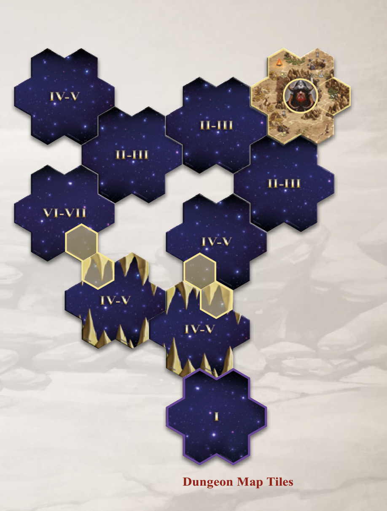
. Картинка со стр. 29.- Стартовые I: Темница S2 и Цитадель S7. S7 уже открыт.
- Дальние II–III: Цитадель F19, F20, F21.
- Ближние IV–V: Замок N6 без обелиска (Obelisk), Цитадель N13 без обелиска и 2 случайных подземных из U1–U6.
- Центральный VI–VII с утопией драконов (Dragon Utopia). В базе это C1.
- 2 жетона подземных врат (Subterranean Gate), как на схеме. Какой фрагмент с каким связан, книга словами не пишет.
На подземные врата нельзя войти, пока не помечено флагом центральное поле центрального тайла.
Нейтралы
Уберите из колод все карты, кроме этих.
- Бронза: Rogues, Zombies, Wraiths, Harpies, Evil Eyes.
- Серебро: Nomads, Mummies, Vampires, Liches, Medusas.
- Золото: Dread Knights, Ghost Dragons, Manticores, Black Dragons.
Enchanters в этом списке нет. В Harvest и Gathering the Legion они в золоте были.
После боя с нейтралами их карты замешайте обратно в свои колоды.
Победа и поражение
Победа: выиграть все бои с вражескими армиями.
Поражение: герой разбит в любом бою. Отступить из боя с нейтралами не лазурного уровня всё ещё можно. Конец 13-го раунда без победы — поражение.
События
1-й раунд: поставьте Necromancer Attackers на поле города (Town) тайла Темницы. Прочитайте «Два варвара».
4-й и 8-й раунды: снова поставьте Necromancer Attackers на это поле.
13-й раунд, в конце: поражение.
Первый вход на посёлок (Settlement): вместо обычных нейтралов бой с Orc Chieftains. После победы прочитайте «Золото есть золото».
Вход на центральное поле центрального тайла: вместо обычных нейтралов бой с Nimbus. После победы положите на поле кубик фракции и прочитайте «Nimbus».
Вход на поле города Темницы: прочитайте «Последний некромант в крае».
Сценарий завершён: прочитайте «Сбор союзников».
Колода между сценариями
Следующего сценария в книге нет. Если колоду сохраняют, шаги те же, стр. 14. Уровень снова I. Свитки дальше не идут.
Рассказ
- «Два варвара» — в 1-м раунде.
- «Золото есть золото» — после победы над Orc Chieftains.
- «Nimbus» — после победы над Nimbus.
- «Последний некромант в крае» — вход на поле города (Town) Темницы. Дальше бой с Moandor.
- «Сбор союзников» — когда сценарий завершён.
Два варвара (Two Barbarians)
Когда читать: 1-й раунд.
Пыль и пепел горящего строения, из которого вы только вышли, осыпали вашу тёмно-синюю руку. Вы смахиваете их походя и идёте на центральную площадь. Там Crag Hack смотрит на пожар вокруг. Перед ним на земле горящее тело.
Ещё один город некроманты обратили в тлеющие руины. Минуту вы оба смотрите, как пламя ест ближние строения.
«Нам, двум варварам, стоит радоваться, что мы нашли друг друга в земле чужаков», — начинаете вы.
«…»
«Оба мы идём по следу некромантов, но меня поражает, что вожди Эрафии этого будто не замечают.»
«…»
«Так дело не пойдёт», — думаете вы после ещё одной минуты тишины. «Впрочем, разговорчивого спутника я и не ждала. Crag Hack я искала и уговаривала примкнуть не сразу. Сначала ему и расследовать мою тревогу было незачем, пока я не упомянула его славную битву. На таких варваров это всегда действует.»
«Хоть череп у него не совсем пустой», — бормочете вы и оставляете его… смотреть, как горит огонь. Вскоре после того, как вы сошлись, вам попался кусок Эрафии, целиком взятый нежитью. Crag, кровожадный варвар, хотел ворваться и взять всех некромантов сам. Уговорить его остаться и собрать армию оказалось проще, чем вы думали. Довольно было сказать: соберёт армию — и за недели пройдётся по всей нежити этого края.
Но этот город и правда взяли некроманты? Пройдя немного, вы видите несколько трупов. Обычно они их не оставляют. Или, оставляя, не оставляют лежать так…
Вы идёте по неровной земле сбоку от посёлка и находите человека у края тропы, с большой раной в боку. Дышит он очень слабо. Видит вас и машет подойти. Не успеваете приблизиться: он показывает на восток и хрипло шепчет: «Моё золото… забрали… много орков… спешите…» Обмякшая рука падает, глаза пустеют.
Кто-то ещё прикрывает свои дела этим хаосом.
Золото есть золото (Gold is Gold)
Когда читать: победа над Orc Chieftains.
В той стороне, куда показал умирающий, вы находите кучку первобытных хижин из жердей. Оркский посёлок, без сомнения.
«Мы копим это золото годами! Вы его не возьмёте!» — кричит один орк перед самым боем.
«Будто золото и правда ваше», — думаете вы. Стирая кровь с клинка, вы отмечаете, что бой был хорош. Оркам это золото больше не нужно, и вы решаете его взять.
«С тех пор как я путешествую с Crag Hack, прошло несколько недель. Сначала моё расследование ему было ни к чему, а теперь он очень горит задать некромантам жару.» От этой мысли вы улыбаетесь. «На стоянке он рассказал, как волшебник по имени Sandro обманом вытянул у него четыре артефакта и не заплатил. Этого волшебника я не знаю, но буду смотреть, не попадётся ли кто под описание.»
Вы смеётесь про себя и понимаете: было безумием даже думать сойтись с этим… этим… этим варваром. Вам любопытна тактика воина старше и опытнее, и вы спросили, как он пойдёт на некромантов. Он сказал: «Строим и давим. Вонючих не бойся.»
«Ну, прямо, это уж точно», — бормочете вы и улыбаетесь. Этот варвар, верно, кинется в бой полуготовым, и вы рявкаете приказы: готовиться быстрее.
Города идут хорошо. Армия уже приличная. И всё же медленнее, чем хочется. Почему-то не отпускает чувство, что впереди большая беда. Вам это не нравится, и вы послали разведчиков смотреть край. Их не было долго, но чутьё верное: один только что примчался и говорит, что принёс вести о враге. Вести плохие.
«Они ударят со всех сторон, и их втрое больше!» — кричите вы, глядя в доклад. Силы некромантов куда крепче, чем вы думали. «Надо сейчас же сказать Crag Hack!»
За столом: посёлок вы берёте, но вместо обычной награды посёлка получаете 15 золота, и доход золота растёт на 5.
Nimbus (Nimbus)
Когда читать: победа над Nimbus.
Прошлый бой был тяжёл. Враг вёл армию крепче тех, что вы встречали, и магия у него была очень сильная. После боя вы валитесь на землю: облегчение и изнеможение.
Пока вы лежите, является Crag Hack. Силы у него, кажется, не кончаются, и он горит обсудить, как именно вы раздавите некромантов. У него уже была практика: он перебил многих некромантов за артефакты. Как он объясняет, те артефакты должны были стать билетом к золоту, земле и женщинам. Не стали, потому что Sandro обманул его на всей сделке. Теперь он просто хочет убивать, чтобы сбросить злость.
Послушав, вы начинаете раскладывать план: чем дольше он в некоторых местах подождёт, тем больше некромантов сможет раздавить. С мыслью он будто согласен… но что-то говорит вам, что плана он не удержится.
Последний некромант в крае (The Last Necromancer in the Region)
Когда читать: вход на поле города (Town) Темницы.
Вы послали двух разведчиков смотреть укрепления города. Вернулся один, и принёс больше, чем нужные вести. Он запомнил интересный разговор.
«Вот что я запомнил», — начинает разведчик. «„Это уже смешно, — сказал некромант. — Finneas Vilmar будет в ярости, когда услышит о наших потерях. Приказ был простой: прийти сюда и собрать армию. Мы и этого не можем! Я сниму голову этому варвару и сделаю из неё пресс для бумаг… когда поймаю…“ Солдат ответил: „Они ещё не победили, не бойтесь.“ От этого некромант только злее и заорал: „Я НЕ БОЮСЬ! Слышишь? Ничто на свете меня не пугает!“ Солдат сказал: „Так точно.“ А некромант орал дальше: „А теперь принеси мне головы этих грязных варваров! СЕЙЧАС!“ Вот это было смешно», — хмыкает разведчик. «…и на этом разговор кончился, госпожа.»
Вы берёте на заметку: когда этих некромантов не станет, надо навестить Finneas Vilmar. Сейчас надо смотреть на врага впереди. Вы поднимаете руку и собираете войско на последний некромантский стан в крае.
За столом: бой с армией Moandor. Прежде чем активируется любой отряд, Moandor включает для своей армии карту Archery.
На лёгкой и нормальной сложности берите базовый эффект Archery.
На тяжёлой и невозможной берите экспертный эффект Archery.
Сбор союзников (Gathering Allies)
Когда читать: сценарий завершён.
Сегодняшний бой выжал вас и войско досуха. Но когда Crag Hack нашёл вино в погребе последнего замка Некрополиса, большинство стало праздновать так, будто несколько дней подряд перед этим не дрались. Вы оставляете их и идёте в шатёр за заслуженным отдыхом. Там ждёт гонец с добрыми вестями. Вы с Crag Hack не одни бьётесь с этими некромантами. Следопыт и друид, Gelu и Gem, тоже держат силы нежити, но в границах AvLee. Вы не думали, что влияние некромантов достаёт так далеко. Вы быстро пишете письмо о своём положении и посылаете им, надеясь, что они встретятся с вами позже.
Отдав письмо одному из своих, вы не можете не думать: «Может, у них есть вести о личе Sandro, который обманул Crag Hack. Он похож на ось всего этого хаоса. А если так, он может знать, где Vidomina. Её надо найти, пока некроманты не испортят её до конца. Её надо остановить… так или иначе…»
Dragon's Blood · 1. Savaging the Scavengers
Кампания · 1 игрок · Набор целей
Книга миссий Набора целей. Сценарий: стр. 4–5. Рассказ: стр. 6–7.
1. Savaging the Scavengers
Источник: книга миссий Набора целей, стр. 4–7: подготовка 4–5, схема 5, рассказ 6–7. На странице пометка Dungeon Campaign. Режим: кампания, 1 игрок, фракция Темница. Отдельного порядка переноса колоды между сценариями книга не печатает.
Стартовый бонус сложности заменён бонусом сценария. Нейтралы по-прежнему от выбранной сложности.
Подготовка игрока
Фракция: Темница. Герой: Mutare. Поставьте её на пустое поле самого нижнего тайла, как на схеме. Это пустое поле должно быть самой нижней точкой карты. Если пустое поле — центр тайла, тайл можно повернуть как угодно.
Армия: Few Troglodytes, Few Harpies, Few Evil Eyes.
Стартовых ресурсов нет. Зданий нет. Дохода книга не пишет. Нанимать из строений города (Town) и производить ресурсы нельзя, пока не взят город на стартовом тайле.
Бонус сценария, один на выбор:
- добавить в армию Few Medusas;
- усилить Troglodytes и Harpies. Плату книга не пишет;
- поиск (4) в колоде артефактов.
Уровень героя не поднимается выше IV. Золотые жилища (Dwelling) строить нельзя. Второго героя нанять нельзя. С обелиска (Obelisk) вы ничего не получаете. Рёбра стартового тайла Темницы не действуют.
Подготовка героев ИИ
Фракция: Темница. Герои: Caomham и Preuet. Обоих изображают две миниатюры Замка. До события они стоят рядом с картой, не на ней.
Caomham не ходит. Его армия: нейтралы на один римский уровень выше текущего уровня героя. Состав этого уровня берётся из таблицы выбранной сложности, книга миссий базы, стр. 32. В том же бою у него ещё карты Arrow Tower, 3 Wall и Gate. Стоит он на обелиске (Obelisk), не в городе (Town). Как класть Wall, книга не пишет. Колода ИИ: 2 Might, 2 Magic.
Preuet ходит после вашего хода. Армия: Few Black Dragons и 2 случайные карты из серебряной колоды нейтралов. Найдите их до начала сценария. Колода ИИ: 2 Might, 2 Magic.
Общая колода заклинаний: 2 Fire Shield, 2 Blind. Ею пользуются оба. После каждого боя соберите её заново.
Карта
Соберите, как на картинке
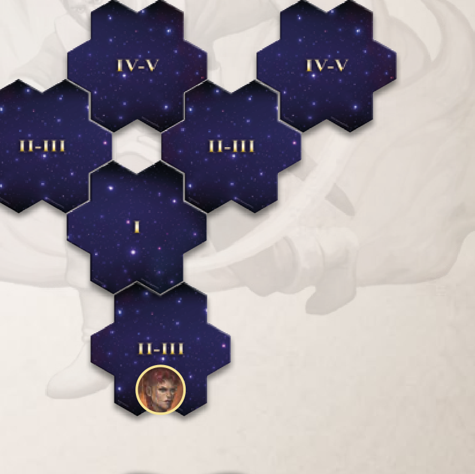
. Картинка со стр. 5.Город (Town) на стартовом тайле защищают нейтралы III уровня. Состав — из таблицы выбранной сложности.
Победа и поражение
Победа: разбить обоих, Caomham и Preuet.
Поражение: проигран один бой. Про отступление книга молчит. Конец 11-го раунда без победы — поражение, и всё потеряно.
События
1-й раунд: прочитайте «Слабые должны пасть».
5-й раунд: поставьте миниатюру Caomham на обелиск (Obelisk), ближайший к главному герою. Если открытых обелисков нет, он появляется, когда вы откроете первый.
8-й раунд: среди открытых тайлов найдите верхнее левое закрытое поле и поставьте туда Preuet. Какое поле считать закрытым, книга не пишет.
11-й раунд, в конце: поражение.
Захват города (Town) на стартовом тайле: прочитайте «Пещера мрака». Город защищают нейтралы III уровня. После захвата вы получаете бронзовое жилище (Dwelling), магистрат (City Hall), 25 золота, 6 стройматериалов, 3 драгоценности и доход золота 15. Про доход стройматериалов и драгоценностей книга не пишет.
Сценарий завершён: прочитайте «Это только начало».
Рассказ
- «Слабые должны пасть» — в 1-м раунде. В куске же условие захвата города (Town).
- «Пещера мрака» — захват города на стартовом тайле.
- «Это только начало» — когда сценарий завершён.
Слабые должны пасть (The Weak Must Fall)
Когда читать: 1-й раунд.
Вечер тёмный и мрачный. А может, это утро. Или полдень. Время в глубоких пещерах не разобрать, даже уроженцам Nighon.
Mutare пишет дневник. Военный дневник, если точно.
«Ordwald. Имя мне противно. Этот старик держит богатые земли Nighon, которые дал ему куда более великий отец. Время он растратил и для своего положения почти ничего не сделал. Я слишком долго стояла в его тени и у его границ.»
Mutare перечитывает строки и перекладывает перо: в зубах застрял кусок баранины, и с ним бой серьёзнее. Результатом она вроде довольна, кивает и захлопывает дневник.
«Ау…» — вскрикивает троглодит, который только что служил ей столом. Mutare лишь щурит глаза, и он тут же пропадает из виду.
Она машет ближнему отряду следовать и спешит к лошади. В седло садится одним движением и пускает коня в галоп. Замедляться, чтобы отдать приказ, она не стала. Слова гремят по пещерам.
«…мои лазутчики принесли вести. Два молодых и голодных лорда почти разом ударили по Ordwald. И, как ни странно, у них получается.»
«Может, они и правда так сильны», — подаёт один из её генералов, стараясь не отстать.
«Год назад он бы отбил их легко. Значит, Ordwald сдал, раз им так везёт», — продолжает она, не слушая.
«Не собрать ли всё войско и не задавить его одной большой армией?» — предлагает другой. Голос у него неуверенный.
«Хватит малого отряда. Время дорого. Мы терпеливо ждали, пока Ordwald оступится. На прошлой неделе он оступился. Пора его снять.»
За столом: город на стартовом тайле защищают нейтралы III уровня. После захвата — бронзовое жилище, магистрат (City Hall), 25 золота, 6 стройматериалов, 3 драгоценности и доход золота 15. Дальше читайте «Пещера мрака».
Пещера мрака (Gloom Cave)
Когда читать: захват города (Town) на стартовом тайле.
«Ordwald нет. Неудивительно, что земли взялись так легко», — слышите вы солдата.
Вы снимаете каблук со стула и даёте тяжести сделать своё. Хлоп. Стул падает на сырой пол вместе с пленником, который к нему привязан. Сил у того хватает только на слабый стон.
Допрос дал вот что: свои земли Ordwald не защищал, потому что ушёл искать легендарный Vial of Dragon Blood.
«Похоже, жизнь и отцовское состояние он положил на эту склянку. Считают, кто из неё выпьет, станет разумным драконом», — добавляет другой допросчик и вытирает руки.
«Ordwald не так глуп, как я думала», — признаёте вы.
«И всё же он стар.»
«Я найду и его, и склянку. Сначала надо убрать молодых лордов: они уже слышали новость и кусают мне пятки.» Вы улыбаетесь мысли и той возможности, которую даёт эта мелкая помеха. Caomham и Preuet тоже слышали про склянку. Если смогут, они пойдут за вами в Deep Caverns, следом за Ordwald. Сначала придётся убрать их. Какая жалость.
Когда разбиты оба вражеских героя, читайте «Это только начало».
Это только начало (Just Getting Started)
Когда читать: сценарий завершён.
Взмах меча брызжет свежей кровью на стену пещеры. На лице человека недоверие. Голова медленно отделяется от обмякшего тела.
«Это был Caomham? Preuet?» — думаете вы. Не то чтобы это важно.
Глаза следят за катящейся головой. Как когда-то раньше.
«Я всегда думала, что однажды стану сильной знатью», — продолжаете вы, глядя на голову. «Взять Rauric's Lands было только первым шагом. Но я думала, что это случится, когда я состарюсь, к 26 или 27. Склянка меняет весь счёт.»
Вы поднимаете взгляд. Войско ждёт приказа.
«Это только начало», — кричите вы им и поднимаете окровавленный меч. В ответ оглушительный рёв боевого клича.
Кто станет драконом, тот пробьётся на самые высокие места знати Nighon.
Dragon's Blood · 2. Blood of the Dragon Father
Кампания · 1 игрок · Набор целей
Книга миссий Набора целей. Сценарий: стр. 8–9. Рассказ: стр. 10–11.
2. Blood of the Dragon Father
Источник: книга миссий Набора целей, стр. 8–11: подготовка 8–9, схема 9, рассказ 10–11. На странице пометка Dungeon Campaign. Режим: кампания, 1 игрок, фракция Темница. Отдельного порядка переноса колоды между сценариями книга не печатает.
Стартовый бонус сложности заменён бонусом сценария. Нейтралы полей — от выбранной сложности. С 1-го раунда трудность каждого боя на карте на 1 выше по таблице поля основных правил (Field Difficulty Level Table, страница 35 той книги). Это не шкала лёгкая–невозможная: шкала по-прежнему задаёт состав нейтралов. Армии авангарда и стражей от шкалы не меняются.
Подготовка игрока
Фракция: Темница. Герой: Mutare или Alamar. Поставьте его на поле города (Town) стартового тайла.
Армия: Few Troglodytes, Few Harpies, Few Evil Eyes.
Ресурсы: 14 золота, 3 стройматериала, 1 драгоценность, и ещё +5 к доходу золота. Базовый доход книга не называет. Здания: бронзовое жилище (Dwelling), серебряное жилище, цитадель (Citadel).
Бонус сценария, один на выбор:
- поиск (3) в колоде артефактов;
- +4 драгоценности;
- усилить Evil Eyes, Troglodytes и Harpies. Плату книга не пишет.
Рёбра стартового тайла не действуют.
Подготовка героев ИИ
Фракция: Темница. Герои: Ordwald Vanguard и Dragon Guardians.
Врага изображает одна из двух миниатюр Замка. Какую взять, выбираете вы. До 4-го раунда она лежит рядом с картой. Стражи на карту не выходят: бой с ними — вход на поле утопии драконов (Dragon Utopia).
Ordwald Vanguard: серебряные Sharpshooters, 2 золотые карты Golems, золотые Enchanters. Sharpshooters и Enchanters найдите до начала. Golems: тяните золотую колоду, пока не выйдут две карты Golems, остальные замешайте обратно. Колода ИИ: 3 Might, 2 Magic. Колода заклинаний: 2 Curse.
Dragon Guardians: 2 случайные карты из лазурной колоды нейтралов и 1 случайная из золотой. Колода ИИ: 5 Might, 1 Skill. Навык: Armorer. Своей колоды заклинаний у стражей книга не даёт.
Авангард ходит после вас. Он идёт к утопии драконов кратчайшим путём и всё остальное игнорирует. За героем он не гонится. Если оба оказались на одном поле, он атакует. Вход на обелиск (Obelisk) не даёт авангарду ходить один ход.
Карта
Соберите, как на картинке
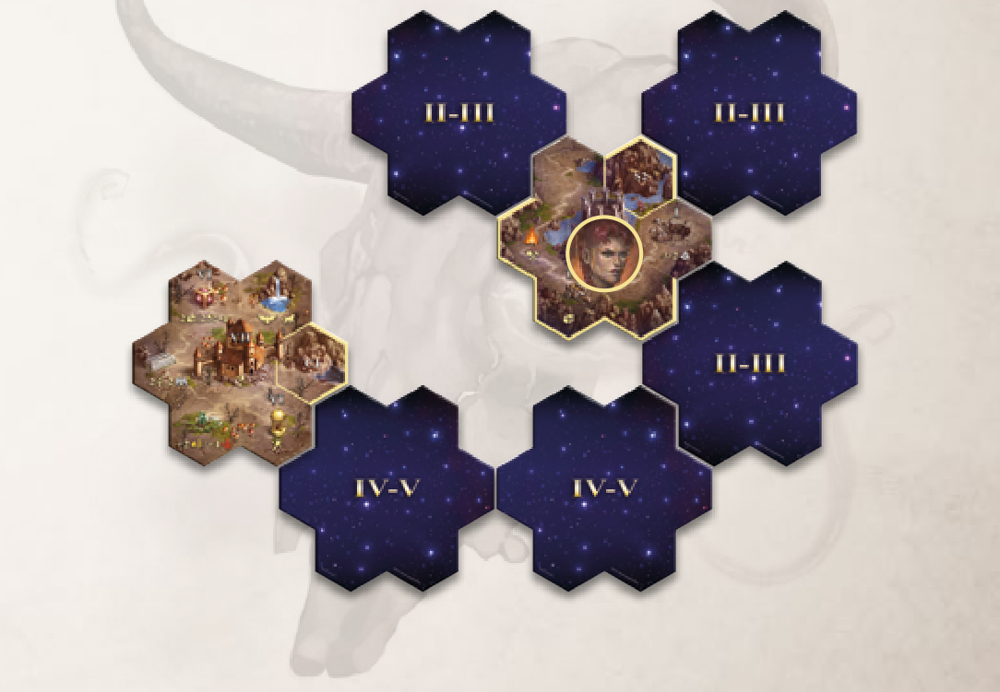
. Картинка со стр. 9. На схеме город (Town) стартового тайла и утопия драконов (Dragon Utopia) уже лицом. Герой стоит на городе.- Стартовый I: Темница S2.
- Дальние II–III: Темница F2, F5, F8.
- Ближние IV–V: Темница N2 и N5.
- Центральный VI–VII с утопией драконов. В базе это C1.
Закрытое поле — поле с жёлтой рамкой. По основным правилам на него нельзя войти. Книга сценария всё равно ставит на такое поле миниатюру.
Победа и поражение
Победа: разбить армию стражей в утопии драконов (Dragon Utopia). Победа над авангардом не обязательна.
Поражение: авангард дошёл до утопии драконов. Конец 11-го раунда без победы — поражение.
События
1-й раунд: прочитайте «Грань». С этого хода трудность каждого боя на карте выше на 1 до конца сценария.
4-й раунд: прочитайте «Время истекает». Поставьте миниатюру авангарда на закрытое поле верхнего правого дальнего тайла. Если тайл ещё закрыт, сначала откройте его.
11-й раунд, в конце: поражение.
Вход на поле утопии драконов (Dragon Utopia): бой со стражами. Прочитайте «Стражи драконов».
Сценарий завершён: прочитайте «Конец гонки».
Рассказ
- «Грань» — в 1-м раунде. В куске уровень и выбор про вторичного героя.
- «Время истекает» — в 4-м раунде.
- «Стражи драконов» — вход на поле утопии драконов (Dragon Utopia).
- «Конец гонки» — когда сценарий завершён. В книге у события имя короче, The End of Race. Это тот же кусок.
Грань (The Edge)
Когда читать: 1-й раунд.
Как обычно, вы пишете дневник, чтобы собрать мысли. Военный дневник.
«Я нашла Ordwald. Он близко к склянке, но его осторожность и медленный ум оставляют мне дорогу обойти его. Об Ordwald думать надо, а смотреть надо на артефакт. Vial of Dragon Blood даст мне ту грань, с которой я войду в ряд сильных лордов Nighon. Когда я пройду мимо него, там склянка, и при ней, без сомнения, стража… драконья стража. Чтобы взять склянку, надо разбить их, или Ordwald, или обоих.»
Едва закрыта последняя строка, к вам подбегает гонец.
«…на западе подземная река», — начинает он сбивчиво. «Начальник разведки уверен: армии Ordwald прошли здесь месяцев 6–8 назад. Сегодня у реки нашли тюрьму. Там сидит чернокнижник по имени Alamar. Он готов встать на сторону того, кто его выпустит. Показать путь, которым мы шли?»
Гонец смотрит и ждёт. Вы медленно кладёте перо и начинаете отдавать приказы. «Генерал Miah примет войско на моей старой базе у входа в Deep Caverns. Пусть устроит тяжёлую жизнь всякому лорду, который пойдёт следом: налёты, убитые лазутчики, ложные следы и смерть тем, кто слишком смел.»
Вы выходите с охраной. Малый отряд сможет проскочить незамеченным.
Комната быстро пустеет. Остаётся один гонец, всё ещё без ответа.
За столом: герой сразу получает один уровень. Это поиск (2) в колоде навыков.
В конце хода главного героя в этом раунде выберите одно:
- сразу бой с нейтралами III уровня. Они атакующая сторона, и этот бой можно продлить, не платя очки хода. Победа даёт вторичного героя. Книга не пишет, что этот герой — Alamar;
- +1 очко хода. Тогда вторичного героя нанять нельзя до конца сценария.
Время истекает (Time is Running Out)
Когда читать: 4-й раунд.
Века под землёй оставляют след. В такой среде живы только самые крепкие. Поэтому весть, что армия Ordwald прошла сквозь отряд Miah и идёт на вас, вас даже не дёргает.
Как и весть о её размере.
Хороший командир закладывает в план всё, что может случиться. Тогда, что бы ни вышло, вы побеждаете или хотя бы переживаете поражение. Rauric этого не понял. Поэтому вы так легко его убили и взяли его земли. Если Ordwald доберётся до склянки первым, вам, может быть, придётся бежать из Nighon…
За столом: миниатюра авангарда на закрытое поле верхнего правого дальнего тайла. Закрытый тайл сначала откройте.
Стражи драконов (Dragon Guardians)
Когда читать: вход на поле утопии драконов (Dragon Utopia).
Перед вами утопия драконов. Место полно магии: дорожка странно мягкая, по сторонам странные деревья. Неестественные цвета почти режут чувства. От этого мутит. Вы думаете о волшебных равнинах, о местах с деревьями и прочими вещами светлых земель и гадаете, не живут ли здесь зелёные или золотые драконы. Обычно они только на поверхности. Может, в таком месте их и найти. Хоть какое утешение за эти отвратительные зелёные цвета.
«Растениям быть бурыми, не зелёными», — ворчите вы и открываете древнюю дверь.
В башне по лестнице наверх в беспорядке лежат кости зверей всякого размера. Многие похожи на человеческие. Наверху большой зал, и его стерегут драконы. Древние, величественные. Они просто ждут, не двигаясь и не удивляясь. Может, даже не видят в вас угрозы?
За спиной лязг множества мечей, шипение злых горгон и тяжёлое дыхание минотавров.
Без слова вы поднимаете меч, и вся армия идёт в атаку.
Когда бой выигран, читайте «Конец гонки».
Конец гонки (The End of the Race)
Когда читать: сценарий завершён.
После боя утопия драконов в руинах. На стенах без счёта следы когтей тех, кто стерёг склянку. Пол багров от пролитой крови, и в ней медленно тонут окаменевшие чешуйки. У вас многие ранены… и ещё больше мертвы. Но теперь всему конец. Склянка сразу за этими громадными драконьими телами.
Могучие драконы.
Сильнейшие существа этого мира.
Все лежат на земле, мёртвые.
Все лежат перед вами.
Dragon's Blood · 3. Blood Thirsty
Кампания · 1 игрок · Набор целей
Книга миссий Набора целей. Сценарий: стр. 12–13. Рассказ: стр. 14–15.
3. Blood Thirsty
Источник: книга миссий Набора целей, стр. 12–15: подготовка 12–13, схема 13, рассказ 14–15. На странице пометка Dungeon Campaign. Режим: кампания, 1 игрок, фракция Темница. Это последний сценарий кампании. Отдельного порядка переноса колоды книга не печатает.
Стартовый бонус сложности заменён бонусом сценария. Нейтралы полей — от выбранной сложности. С 3-го раунда трудность каждого боя на карте на 1 выше по таблице поля основных правил (Field Difficulty Level Table, страница 35 той книги). Это не шкала лёгкая–невозможная. В армиях лордов и Ordwald записаны нейтралы IV уровня. Состав этого уровня берётся из той же таблицы, по выбранной сложности. Поднимает ли прибавка +1 этот уже названный IV уровень, книга не пишет.
Подготовка игрока
Фракция: Темница. Герой: Mutare или Alamar. Поставьте его на поле города (Town) стартового тайла.
Армия: Few Harpies, Few Minotaurs, Few Medusas.
Ресурсы: 20 золота, 5 стройматериалов, 2 драгоценности, и ещё +1 к доходу драгоценностей и +5 к доходу золота. Базовый доход книга не называет. Здания: бронзовое жилище (Dwelling), серебряное жилище, цитадель (Citadel).
Бонус сценария, один на выбор:
- добавить Few Black Dragons;
- добавить случайного дракона из лазурной колоды нейтралов;
- усилить Harpies, Minotaurs и Medusas. Плату книга не пишет.
Рёбра стартового тайла не действуют. Отряды Manticores использовать нельзя. В армии не больше двух отрядов драконов.
В утопии драконов (Dragon Utopia) можно нанимать драконов по цене на карте. Для этого нужно золотое жилище. Годится любой отряд драконов из лазурной колоды нейтралов.
Победа над героем ИИ даёт пол-уровня опыта. Так книга и пишет. В 1-м раунде это правило не прибавляют: там свои два уровня.
Подготовка героев ИИ
Фракция: Темница. Четверо: First Lord, Second Lord, Third Lord и Ordwald.
Их изображают четыре миниатюры: герои Замка и Некрополиса. До событий они лежат рядом с картой. Какая миниатюра кому, книга не пишет. В 3-м и 5-м раундах она говорит «миниатюра вражеского героя Темницы», в 7-м — миниатюра Ordwald.
First Lord: Pack Troglodytes, Pack Evil Eyes, 1 случайная золотая карта нейтралов. Найдите её до начала.
Second Lord: Few Manticores и нейтралы IV уровня.
Third Lord: Pack Manticores, 1 случайная золотая карта нейтралов и нейтралы IV уровня.
Ordwald: Pack Manticores, 1 случайная лазурная карта нейтралов и нейтралы IV уровня.
Общая колода лордов: 3 Might, 1 Magic. Общая колода заклинаний лордов: 1 Blind, 2 Magic Arrow. Обе общие на троих. После каждого боя соберите их заново.
Колода Ordwald: 5 Might, 2 Magic. Колода заклинаний: 2 Slow, 2 Stone Skin, 1 Blind. Про эти колоды книга сброса после боя не пишет.
Бой с героем ИИ идёт по очереди армий, не по тому, чья миниатюра перед вами: сначала First Lord, затем Second Lord, затем Third Lord, затем Ordwald.
Отдельного правила хода врагов книга не даёт. Есть только остановка: вход на обелиск (Obelisk) не даёт ходить всем врагам один ход, и каждый обелиск срабатывает так один раз.
Карта
Соберите, как на картинке
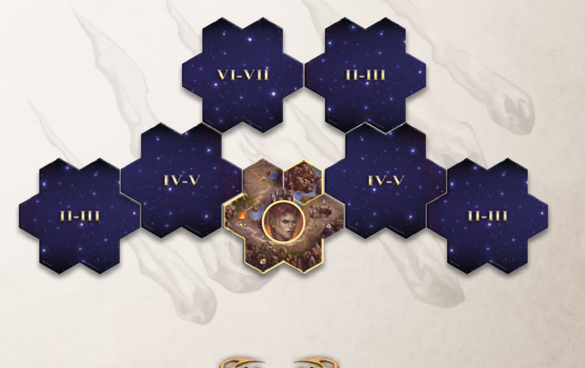
. Картинка со стр. 13. Город (Town) стартового тайла на схеме уже лицом, герой на нём.- Стартовый I: Темница S2.
- Дальние II–III: Темница F2, F5, F8.
- Ближние IV–V: Темница N2 и N5.
- Центральный VI–VII с утопией драконов (Dragon Utopia). В базе это C1.
Закрытое поле — поле с жёлтой рамкой. По основным правилам на него нельзя войти. Миниатюры врагов книга ставит именно на такие поля.
Победа и поражение
Победа: пережить все атаки героев врага. Армий четыре.
Поражение: проигран один бой. Про отступление книга молчит.
Срок сценария — 10 раундов. Что делать в конце 10-го, если победы ещё нет, книга не пишет.
События
1-й раунд: прочитайте «Некогда отдыхать». Сразу бой с первой вражеской армией. До боя нельзя нанимать и нельзя делать что-либо ещё: возьмите карты и вступайте в бой. После боя герой получает два уровня. Это поиск (2) в колоде навыков, дважды. Пол-уровня из общих правил этого сценария после этого боя не добавляют.
3-й раунд: прочитайте «Сея страх». С этого хода трудность каждого боя на карте выше на 1 до конца сценария. Бросьте кубик атаки и перебросьте «0».
- «+1»: миниатюра вражеского героя Темницы на закрытое поле самого правого дальнего тайла;
- «−1»: та же миниатюра на закрытое поле самого левого дальнего тайла.
Если тайл закрыт, сначала переверните его.
5-й раунд: прочитайте «Встречная ложь». Тот же бросок и те же два поля, снова миниатюра вражеского героя Темницы.
7-й раунд: прочитайте «Опоздал к пиру». Тот же бросок, но миниатюра Ordwald. Если на карте уже две миниатюры врагов, подождите, пока одного не разобьют, и поставьте следующего в конце раунда.
Сценарий завершён: прочитайте «Королева Nighon».
Рассказ
- «Некогда отдыхать» — в 1-м раунде.
- «Сея страх» — в 3-м раунде.
- «Встречная ложь» — в 5-м раунде.
- «Опоздал к пиру» — в 7-м раунде.
- «Королева Nighon» — когда сценарий завершён.
Некогда отдыхать (No Time to Rest)
Когда читать: 1-й раунд.
«Теперь Ordwald и его прихвостни хотят убить меня и выпить мою кровь. Они верят, что она изменит их так же, как склянка изменила меня.» Вы говорите тихо, и всех вокруг передёргивает.
Тело изменилось. Изменились вы. Рыжих волос нет. Нет и прежней мягкой уязвимой кожи: теперь по телу алая чешуя. На руках мощные когти, в челюсти острые как бритва зубы. Подчинённые смотрят на новый облик со страхом и восхищением. Кто-то отводит взгляд, стоит вам повернуться. Хорошо.
«Мою кровь они не выпьют. Это я выпью их…»
Едва сказано последнее слово, таран выносит двери, и маленькая шайка врагов бросается на вас, будто сама просит смерти.
За столом: возьмите карты и сразу бейте первую вражескую армию. До боя ничего нельзя. После боя два уровня: поиск (2) в навыках, дважды. Пол-уровня сверху не добавляют.
Сея страх (Spreading the Fear)
Когда читать: 3-й раунд.
Сегодня пришло письмо от генерала Miah. Он добыл вести и считает их верными. По меньшей мере двое лордов, что закрывают вам дорогу в Nighon, заключили союз.
«Не удивлюсь, если так и есть. Среди тех, с кем я сейчас бьюсь, дураков нет. Я всё равно их побью.» Вы смеётесь над предупреждением. «Будет чуть труднее, и победа от этого слаще.»
Вы смеётесь уже в голос, думая о грядущих боях. Останавливаетесь полюбоваться новыми когтями и ревёте гонцам: созвать лучших воинов.
Пора показать сомневающимся, что вам место среди сильнейшей знати Nighon.
«Значит, хотят пить мою кровь? Я искупаюсь в их!»
За столом: кубик атаки, «0» перебросить. «+1» — миниатюра на закрытое поле самого правого дальнего тайла. «−1» — на закрытое поле самого левого. Закрытый тайл сначала откройте.
Встречная ложь (Counter Lie)
Когда читать: 5-й раунд.
Вы неуклюже держите перо когтями.
«Надо ответить на ложь Ordwald…» — медленно начинаете вы в военном дневнике. «Если люди и правда поверят, что от моей крови становятся разумным драконом, каждый лорд на свете захочет меня убить. Лучшая ложь та, которую люди хотят слышать…»
С хрустом ломается ещё одно перо. Беря новое, вы думаете, что дальше. Быть сильнейшим рядом — одно из лучших чувств, но у него есть цена.
«Я послала генералу Miah весть: пусть на пограничье утечёт, что моя кровь только делает людей больными. Слух такой: я дала крови нескольким своим чемпионам, и они неделю или около того просто болели. С пограничья слух пойдёт по всему Nighon. Может, тогда в меня будут меньше целиться.»
За столом: тот же кубик и те же два закрытых поля, что в «Сея страх».
Опоздал к пиру (Late to the Party)
Когда читать: 7-й раунд.
Молодой разведчик кончает доклад и тут же выскакивает из комнаты. Вы покатываетесь со смеху. Или это сама новость вас так обрадовала? Ordwald наконец показывает лицо. Из склянки он напиться не может и теперь целится в вас. Это отчаяние?
«Может, я думала о нём слишком высоко?»
«Я послала гонца к мудрецу у Sinkhole Castle», — бормочете вы. «Просила найти доказательство: чтобы стать разумным драконом, надо пить кровь Отца драконов, а не мою. Золота я дала довольно. Пусть докажет.»
В комнате непривычно тихо. Раньше здесь было куда живее…
За столом: тот же кубик. «+1» — миниатюра Ordwald на закрытое поле самого правого дальнего тайла. «−1» — на самое левое. Если на карте уже две миниатюры врагов, следующего ставьте в конце раунда, когда одного из них разобьют.
Королева Nighon (Queen of Nighon)
Когда читать: сценарий завершён.
Ordwald мёртв.
Его прихвостни мертвы.
Вы сидите на золотой груде монет и блестящих артефактов и думаете, что дальше. В последнее время почему-то тянет спать на золоте.
«Ещё страннее, что исследователь из провала так и не доказал, будто моя кровь не делает драконом. Он только просит ещё золота и ресурсов. Но это неважно.»
Ordwald и его союзники: их земли и богатства мои. Скоро моим будет весь Nighon.
Rise of the Necromancer · 1. Target
Кампания · 1 игрок · Набор целей
Книга миссий Набора целей. Сценарий: стр. 16–17. Рассказ: стр. 18–19.
1. Target
Источник: книга миссий Набора целей, стр. 16–19: подготовка 16–17, схема 17, рассказ 18–19. На странице пометка Necropolis Campaign. Режим: кампания, 1 игрок, фракция Некрополис. Отдельного порядка переноса колоды между сценариями книга не печатает.
Стартовый бонус сложности заменён бонусом сценария. Нейтралы полей — от выбранной сложности. Армия Shiva берёт нейтралов того же римского уровня, что текущий уровень героя. Состав этого уровня — из таблицы выбранной сложности, Field Difficulty Level Table, страница 35 основных правил. Остальные отряды врагов от шкалы не меняются.
Подготовка игрока
Фракция: Некрополис. Герой: Sandro или Tamika. Поставьте его на центральное поле стартового тайла Некрополиса, не на город (Town).
Армия: Few Skeletons, Few Zombies.
Ресурсы: 25 золота, 3 стройматериала, 1 драгоценность. Дохода книга не пишет. Здание: бронзовое жилище (Dwelling).
Бонус сценария, один на выбор:
- усилить Zombies. Плату книга не пишет;
- поиск (3) в колоде артефактов;
- тяните колоду заклинаний, пока не выйдет карта, которая наносит урон. Её возьмите в руку, остальные вытянутые сбросьте.
Уровень героя не поднимается выше IV.
Подготовка героев ИИ
Фракция врагов в книге не названа: Undefined. Герои: Shiva и Jeddite. Обоих изображают две миниатюры Темницы. Поставьте их случайно на два оставшихся стартовых тайла, Замка и Темницы. Кто из них кто, в начале не назначено.
Shiva: нейтралы того же уровня, что текущий уровень героя, и серебряные Nomads. Nomads найдите до начала. Колода ИИ: 5 Might. Колоды заклинаний у Shiva нет.
Jeddite: Pack Evil Eyes, Pack Minotaurs, Pack Medusas. Колода ИИ: 1 Might, 2 Magic, 2 Skill. Колода заклинаний: 1 Stone Skin, 2 Magic Arrow.
Навык Jeddite: карта специальности Resurrection VI. Она среди карт специальности героя Темницы Alamar. Когда карта ИИ велит «использовать навык», положите один чёрный кубик на эту карту. Когда любой отряд армии Jeddite из-за атаки другого отряда должен упасть до 0 здоровья, снимите один чёрный кубик и примените Resurrection VI.
Оба врага ходят после вас.
Карта
Соберите, как на картинке . Картинка со стр. 17. Верхний старт уже лицом, герой на нём.
Победа и поражение
Победа: разбить обоих, Shiva и Jeddite.
Поражение: проигран один бой. Про отступление книга молчит. Конец 8-го раунда без победы — поражение.
События
1-й раунд: прочитайте «Дорогой Jeddite…».
6-й раунд: добавьте в армию Jeddite Few Manticores. Добавьте в армию Shiva ещё одну золотую карту нейтралов. Few это или Pack, книга не пишет.
8-й раунд, в конце: поражение.
Вход на обелиск (Obelisk): можно назначить, какая миниатюра кто. Прочитайте «Сделай сам». После этого кусок «Они ничему не учатся» пропускают.
Вы и вражеский герой на одном тайле: прочитайте «Они ничему не учатся», если обелиск это назначение ещё не отменил.
Сценарий завершён: прочитайте «Встань и сияй».
Рассказ
- «Дорогой Jeddite…» — в 1-м раунде.
- «Сделай сам» — вход на обелиск (Obelisk).
- «Они ничему не учатся» — первый раз на одном тайле с вражеским героем, если личности ещё не назначены через обелиск.
- «Встань и сияй» — когда сценарий завершён.
Дорогой Jeddite… (Dear Jeddite…)
Когда читать: 1-й раунд.
В мрачной зале своего дома Sandro смотрит в окно. В руках письмо старого знакомого.
«Sandro. Меня зовут Jeddite. Может, ты помнишь меня, если нежить ещё не затмила тебе память. Мы вместе учились у Ethric. Став некромантом, ты опозорил меня до конца: это я свёл тебя с Ethric. Надо было его послушать. С самого начала он сомневался, что ты мудро вынесешь груз магического знания. Ethric сказал мне о двух артефактах, что теперь у тебя. Знай, Sandro: на пути в Deyja ты меня не минуешь. Я в союзе с городом Оплота на севере, и они со мной против тебя. Я сниму артефакты с твоего гнилого трупа и верну их Ethric.»
Перечитав, Sandro комкает бумагу и оборачивается.
«А, вот и ты», — начинает он. «Наконец! У меня Cloak of the Undead King и Armor of the Damned! Планы взять Deyja можно начинать. И всё же… кажется, Ethric… мой старый учитель… меня всё-таки нашёл.»
Слова «мой старый учитель» он произносит насмешливо-пышно. Были бы на лице мышцы, тут бы и усмехнулся.
«Он был мной очень недоволен», — продолжает Sandro. «Нет, он был недоволен, что я стал некромантом, и хочет убрать эту… порчу… из своей карьеры. Ethric не дурак. Он разнёс, где я, тем, кто меня остановит. Часть лордов захочет артефакты себе. Другие захотят их уничтожить.»
В комнате тихо. Только ветер снаружи и треск дров в камине.
«Неважно. Я разобью этих глупцов, крепко побью учителя и пойду в Deyja. Там мои таланты оценят.»
«…ты сегодня ужасно молчалив», — добавляет Sandro и подходит к столу. Берёт одинокий череп.
«На прошлой неделе ты был куда разговорчивее!» Он заливается зловещим смехом, потом со вздохом отбрасывает череп и садится. Стол завален мятыми бумажками и как попало сложенными свитками. Щелчок костяных пальцев, и из тени выходит один скелет с подносом. На подносе одно перо.
«Дорогой Jeddite», — начинает он письмо. «Я получил твою угрозу. Мне теперь бежать и прятаться, испугавшись обещания меня остановить? Нет. Угроза только крепит мою решимость. Всех их я пущу на то, чтобы раздавить тебя и твоё войско. Артефакты я отнесу в Deyja и ими поднимусь наверх иерархии Deyja. Ты и твоя жалкая шайка меня не остановите. Встанешь на пути — я убью всякую живую душу под твоим началом и обращу их мёртвые тела на своё дело.
PS. Кстати, спасибо, что свёл меня с силой магии. Без твоей помощи я бы не достиг такого величия.
Sandro.»
Дописав, он осматривает бумагу до последней черточки. Потом комкает всё и зло швыряет за спину, чтобы начать снова.
«Я, SANDRO ВЕЛИКИЙ, получил твою угрозу…»
За столом: обелиск позволяет назначить, какая миниатюра кто. Дальше «Сделай сам». Если вы и миниатюра врага на одном тайле, читайте «Они ничему не учатся».
Сделай сам (Do It Yourself)
Когда читать: вход на обелиск (Obelisk).
Уверенно объявлять врагу свои намерения — обычно не ваш способ. Вам ближе обман или внезапный удар, не рыцарство цивилизованной войны. Но советникам вы платите много золота, чтобы они вскрывали слабости врагов, и совет их такой: «Разошлите по всем городам края, что артефакты у вас. Потом в мучительных подробностях объясните, как ужасно сильны вы станете, когда пустите их в дело. Скажите: не пропустят — вы примените артефакты в бою и наведёте на их землю тень смерти.»
И вот вы видите своих разведчиков. Вести плохие.
«А я им ещё и письма эти послал…» — думаете вы. «Пару советников надо потом повесить… Ах да. Я уже.»
Вдали, кажется, идёт вражеская армия. Разведчики не уверены, какая именно, но она явно ищет кого-то в ближних деревнях. Зло вы творите заклинание, чтобы видеть дальние земли, и бормочете: «Никчёмная шайка».
За столом: назначьте, какая миниатюра кто. Кусок «Они ничему не учатся» пропустите. Когда выиграны оба боя с врагами, читайте «Встань и сияй».
Они ничему не учатся (They Never Learn)
Когда читать: первый раз на одном тайле с вражеским героем, если обелиск (Obelisk) личности уже не назначил.
Jeddite стал сильным лордом и сильным чернокнижником. Вы узнали: он держит слово и от боя не отступал. Вы гадаете, изменит ли бой с бывшим другом его тактику. В конце концов обе стороны точно знают, что и как сделает другая…
Разведчики приносят весть. Делая вид, что вам важно то, что важно им, вы слушаете лепет о подходящей вражеской армии.
«Сколько люди ни живут, они ничему не учатся… пока живут…»
За столом: в первый раз входя на тот же тайл, что вражеский герой, бросьте кубик атаки. «0» перебросьте.
- «+1»: этот враг — Shiva, другой — Jeddite;
- «−1»: этот враг — Jeddite, другой — Shiva.
Когда выиграны оба боя, читайте «Встань и сияй».
Встань и сияй (Rise and Shine)
Когда читать: сценарий завершён.
После боя вы смотрите на поле. Оставшиеся скелеты и зомби доделывают последних уцелевших. Одна кучка скелетов поймала раненого алебардиста и шепчется. Спорят. О чём, вам любопытно…
Шпион приносит весть о раздоре среди врагов. Союзники старого друга Jeddite хотят забрать артефакты и сразу вернуть их Ethric. Два других союзных города Цитадели, на севере и на северо-востоке, хотят оставить артефакты себе. По словам советников, лорд Jabarkas, глава этих двух городов, незаконный младший брат Ethric и страдает комплексом невысокого человека.
Похоже, Jabarkas всегда завидовал весу старшего брата. Вы подозреваете: он думает, что с двумя артефактами ровня станет его уважать больше.
Вы позволяете себе зловещую улыбку. Душевные удары вам милее всего. Если повезёт, враги перебьют друг друга, и вы пройдёте в Deyja тенью в ночи.
Но с Ethric так легко не будет.
Вы смотрите на землю за спиной и на всю разбитую нежить последних боёв. Jeddite стал таким сильным чернокнижником, как говорили шпионы. Поднять его и дать старому другу увидеть, куда вы идёте? Может, он даже стал бы биться рядом, как в старые дни.
Вы стоите над трупом Jeddite.
Rise of the Necromancer · 2. Master
Кампания · 1 игрок · Набор целей
Книга миссий Набора целей. Сценарий: стр. 20–21. Рассказ: стр. 22–23.
2. Master
Источник: книга миссий Набора целей, стр. 20–23: подготовка 20–21, схема 21, рассказ 22–23. На странице пометка Necropolis Campaign. Режим: кампания, 1 игрок, фракция Некрополис. Отдельного порядка переноса колоды между сценариями книга не печатает.
Стартовый бонус сложности заменён бонусом сценария. Нейтралы полей — от выбранной сложности. Армия Ivor берёт нейтралов того же римского уровня, что текущий уровень героя. Состав этого уровня — из таблицы выбранной сложности, Field Difficulty Level Table, страница 35 основных правил. Остальные отряды врагов от шкалы не меняются.
Подготовка игрока
Фракция: Некрополис. Герой: Sandro или Tamika. Поставьте его на поле города (Town) нижнего правого стартового тайла Некрополиса.
Армия: Few Skeletons, Few Zombies, Few Wraiths.
Ресурсы: 3 стройматериала, 2 драгоценности. Золота в старте нет. Дохода книга не пишет. Здания: бронзовое жилище (Dwelling), серебряное жилище.
Бонус сценария, один на выбор:
- +5 драгоценностей;
- +9 стройматериалов;
- бесплатно построить здание Cover of Darkness.
Уровень героя не поднимается выше V.
Подготовка героев ИИ
Фракция врагов в книге не названа: Undefined. Герои: Ivor и Ethric. Оба ходят после вас.
Ethric изображает одна из двух миниатюр Темницы. Какую взять, выбираете вы. Поставьте её на верхний левый стартовый тайл. На схеме это город (Town) Темницы, уже лицом.
Ivor изображает одна из двух миниатюр Замка. Какую взять, выбираете вы. До 4-го раунда она лежит рядом с картой.
Ivor: серебряные Nomads и нейтралы того же уровня, что текущий уровень героя. Nomads найдите до начала. Колода ИИ: 4 Might, 1 Skill. Навык: Archery. В каждом бою первое срабатывание навыка берите как базовый эффект. Следующие в том же бою — как экспертный.
Ethric: Pack Minotaurs, Pack Medusas. Колода ИИ: 2 Might, 3 Magic. Колода заклинаний: 2 Stone Skin, 1 Magic Arrow.
Карта
Соберите, как на картинке . Картинка со стр. 21.
- Стартовые I: Некрополис S1 и Темница S2. Оба на схеме лицом. Ethric на верхнем левом, герой на городе (Town) нижнего правого.
- Дальние II–III: Некрополис F1, F4, F7.
- Ближние IV–V: 4 случайных из N1–N6 базовой коробки. Книга рядом пишет «choose from». Выбрать самому или тянуть вслепую, она не разделяет.
Победа и поражение
Победа: разбить обоих, Ivor и Ethric.
Поражение, если наступил конец 10-го раунда или потерян город (Town) вашей фракции. Можно ли город отбить, книга не пишет. Про отступление книга молчит.
События
1-й раунд: прочитайте «Тяжкие времена». Герой сразу получает один уровень. Это поиск (2) в колоде навыков.
4-й раунд: прочитайте «Письмо от V». Добавьте в армию Ethric Pack Evil Eyes. Поставьте миниатюру Ivor на ближайший открытый обелиск (Obelisk). Если открытых обелисков нет, он появляется, когда вы откроете первый.
6-й раунд: добавьте в армию Ethric Few Manticores.
10-й раунд, в конце: поражение.
Разбит один из вражеских героев: прочитайте «Ты влюблён».
Сценарий завершён: прочитайте «Путь в Deyja».
Рассказ
- «Тяжкие времена» — в 1-м раунде.
- «Письмо от V» — в 4-м раунде.
- «Ты влюблён» — победа над одним из двух врагов.
- «Путь в Deyja» — когда сценарий завершён.
Тяжкие времена (Dreadful Times)
Когда читать: 1-й раунд.
«Ethric всё не отстаёт…» — думаете вы, видя солдата, который бежит к вам без памяти.
«Тяжкие вести, господин!»
Вам говорят: кто-то вломился в ваши покои, изрезал бельё и вогнал большой меч в середину кровати. К мечу записка: «Sandro, смерть тебе и всем, кто за тобой пойдёт. Я заберу артефакты, которые ты украл.»
Подписи нет.
«Господин, простите: кто бы это ни был, он пришёл и ушёл незамеченным», — продолжает солдат. «И это не всё. Он забрал ваше спрятанное золото… всё.»
С рычанием вы поднимаете меч и сносите солдату голову. Спи вы в той кровати ночью, вас бы убили. Войско надо лучше учить обороне от тайных ударов.
От этого зрелища скелеты вокруг начинают дрожать и стучать костями. Справа вздох, полный трепета. Vidomina.
Пока слова Ethric мутят Эрафию, многие смотрят на вас. Но не все смотрят жадно.
Или, скорее, не в том смысле.
Vidomina — молодая волшебница и хочет стать некромантом. Пока она полезна. Пути разойдутся, когда вы минуете Ethric и войдёте в саму Deyja.
Vidomina и дальше показывает большой дар и упорство. День вы провели с советниками и сегодня не учили её, а вечером проверяете занятия. Смотрите, как она твердит заклинания при луне, и понимаете, что она ещё и красива. Вдруг глаза встречаются, и она тепло улыбается. Вы отворачиваетесь, на миг стыдясь этой слабости.
Некромантам таких чувств не положено.
Vidomina подходит и кладёт руку вам на плечо.
«Добрый вечер, учитель. Рада вас видеть. Сегодня мне не хватало вашей компании.» Вы смахиваете её руку.
«Первый урок на этот вечер: не будь так фамильярна. Некромант постоянно имеет дело со смертью, и мудро держать дистанцию даже с учителями.»
«Да, учитель», — отвечает Vidomina смущённо.
«Теперь второй урок. Не доверяй людям слишком, особенно живым. Весь день советники кормили меня вестями об этом крае, и я боюсь, что слишком на них опёрся. Иди и принеси собственное впечатление. Узнай, как сильны враги, сколько у них войска и какую магию они творят. Последние четыре города дались легко, но в ловушку самоуверенности я попадать не хочу. Мне нужна свежая пара глаз на то, что впереди. Иди.»
Вы смотрите, как Vidomina уезжает в первый одиночный выезд, и не можете решить: облегчение это или тревога.
«Какие тяжкие времена», — бормочете вы.
За столом: герой сразу получает один уровень. Это поиск (2) в колоде навыков. В 4-м раунде читайте «Письмо от V». Когда разбит один вражеский герой, читайте «Ты влюблён».
Письмо от V (A Message from V)
Когда читать: 4-й раунд.
Приходит письмо от Vidomina.
«Учитель, в этом крае два города Оплота. Ethric написал им, какая невероятная опасность исходит от вас из-за артефактов. К несчастью, один город населён гномами. Узнав, что один артефакт украден у их народа, они согласились биться с вами на стороне Ethric. Будьте осторожны в этом крае.
Подпись: Vidomina.»
«Vidomina. Предупреждает меня. Об опасности. МЕНЯ!? Ха!» — думаете вы.
Письмо вы аккуратно складываете и прячете в сумки.
«Готовьтесь к эльфам! Их следопыты идут!» — кричите вы одному из разведчиков.
Армия поднимается, а вы гадаете, как они встретят вражеское войско.
За столом: миниатюра Ivor на ближайший открытый обелиск. Если обелисков на карте нет, он появляется, когда откроете первый. В армию Ethric добавьте Pack Evil Eyes.
Ты влюблён (You Are in Love)
Когда читать: разбит один из двух вражеских героев.
«Он влюблён, говорю вам», — шепчет скелет-воин товарищам.
«Видели, как он на неё смотрит? Когда она уехала, у него чуть не заслезились глаза.»
«Заткнись, дурак», — предупреждает зомби. «За такой сплетней убивают.»
«Ха! Я не боюсь Sandro», — фыркает скелет.
«Да он так влюблён, что я уже не знаю, хватит ли у него духу вести нас в…»
Внезапная молния разбрасывает обугленные кости скелета во все стороны.
«Таких разговоров больше не будет. По местам», — рычит Sandro на уцелевших. Те быстро разбегаются по постам.
Проклятая человеческая слабость, одёргиваете вы себя. Не держать чувства крепче — и армии могут потерять веру в ваше командование.
«Где мои разведчики? Я хочу знать, что делает Ethric! И где мои советники…»
За столом: если миниатюра Ethric ещё на карте, он меняет поведение. К вашему герою он больше не идёт, а возвращается в свой город. Бой с ним в его городе: на его сторону поля боя добавьте Wall, Gate и Arrow Tower.
Заплатите 10 золота — и его миниатюра ходит только на 2 поля за раунд. Книга пишет «заплатите», не «можно заплатить». Что делать, если золота нет, она не пишет.
Путь в Deyja (Path to Deyja)
Когда читать: сценарий завершён.
Ethric нет. Последняя преграда на пути в Deyja снята. Последний, кто знал Sandro до того, как тот стал некромантом.
По крайней мере последний, кого вы помните.
«Надо ли мне чувствовать больше?» — гадаете вы. Человеческие слабости вам уже чужды.
Пока вы думаете о покойном учителе, собирается орда скелетов. Все готовы идти к следующей цели.
Rise of the Necromancer · 3. Duke Alarice
Кампания · 1 игрок · Набор целей
Книга миссий Набора целей. Сценарий: стр. 24–25. Рассказ: стр. 26–27.
3. Duke Alarice
Источник: книга миссий Набора целей, стр. 24–27: подготовка 24–25, схема 25, рассказ 26–27. На странице пометка Necropolis Campaign. Режим: кампания, 1 игрок, фракция Некрополис. Это последний сценарий кампании. Отдельного порядка переноса колоды книга не печатает.
Стартовый бонус сложности заменён бонусом сценария. Нейтралы полей — от выбранной сложности. Названные армии врагов от шкалы не меняются.
Подготовка игрока
Фракция: Некрополис. Герой: Sandro или Tamika. Поставьте его на поле города (Town) стартового тайла. На схеме он нижний правый и уже лицом.
Армия: Few Skeletons, Few Liches.
Ресурсы: 20 золота, 2 стройматериала, 4 драгоценности, и ещё +2 к доходу стройматериалов и +5 к доходу золота. Базовый доход книга не называет. Здания: бронзовое жилище (Dwelling), серебряное жилище, цитадель (Citadel).
Бонус сценария, один на выбор:
- добавить Few Vampires;
- +4 стройматериала;
- +2 драгоценности.
Победа над героем врага даёт на выбор 6 золота или 2 драгоценности. Книга не пишет, один это раз на всех или за каждого.
Подготовка героев ИИ
Фракция врагов в книге не названа: Undefined. Герои: Thorgrim, Melodia и Duke Alarice.
Thorgrim и Melodia изображают две миниатюры Замка. До события они лежат рядом с картой. Duke Alarice на карту не выходит. Бой с ним — из рассказа, на поле утопии драконов (Dragon Utopia).
Армии Thorgrim и Melodia одинаковые: Few Griffins, Few Crusaders, серебряные Sharpshooters, золотые Enchanters. Sharpshooters и Enchanters найдите до начала.
Колода Thorgrim: 3 Might, 1 Magic. Колода Melodia: 1 Might, 3 Magic. Общая колода заклинаний: 2 Bless, 1 Magic Arrow. После каждого боя соберите её заново.
Duke Alarice: Pack Crusaders, 2 серебряные карты Mummies, серебряные Sharpshooters, золотые Enchanters. Колода ИИ: 6 Might. Колоды заклинаний у него книга не даёт.
Враг не пользуется обычным ходом ИИ по карте, но очки хода у него всё равно 3. Он идёт к ближайшей миниатюре игрока кратчайшим путём. Ходит после вас. На карте это Thorgrim и Melodia: их ставят в «Грязные приёмы герцога».
Карта
Соберите, как на картинке . Картинка со стр. 25. Подписи на схеме говорят, куда какой ближний тайл.
- Стартовый I: Некрополис S1.
- Дальние II–III: 2 тайла Некрополиса из F1, F4, F7. Какие два, выбираете вы.
- Ближние IV–V: один из N1 или N4 и оба замковых, N3 и N6. Куда какой, подписано на схеме: верхний — N1 или N4, левый лицом и нижний — N3 или N6.
- Центральный тайл кластера — утопия драконов (Dragon Utopia). В базе это C1. На схеме у него нет подписи N.
В утопию драконов нельзя войти, пока не посещён обелиск (Obelisk).
Победа и поражение
Победа: разбить всех вражеских героев и выиграть бой в утопии драконов (Dragon Utopia).
Поражение, если наступил конец 11-го раунда или потерян город (Town) вашей фракции. Можно ли город отбить, книга не пишет. Про отступление книга молчит.
События
1-й раунд: прочитайте «Правление из тени». Герой сразу получает один уровень. Это поиск (2) в колоде навыков.
11-й раунд, в конце: поражение.
Вход на посёлок (Settlement): прочитайте «Стой, лорд Alarice!». Этот посёлок даёт золото: доход золота растёт на 10. Повторяется ли прибавка на следующем посёлке, книга не пишет.
Открыт второй ближний тайл: прочитайте «Грязные приёмы герцога».
Вход на поле утопии драконов (Dragon Utopia): прочитайте «Последние слова».
Сценарий завершён: прочитайте «Мои последние слова».
Обелиск
Обелиск (Obelisk) даёт 10 золота и разрешает герою войти в утопию драконов (Dragon Utopia). В рассказе прямо: чтобы войти, обелиск надо посетить.
Рассказ
- «Правление из тени» — в 1-м раунде.
- «Стой, лорд Alarice!» — вход на посёлок (Settlement).
- «Грязные приёмы герцога» — открыт второй ближний тайл.
- «Последние слова» — вход на поле утопии драконов (Dragon Utopia). Дальше бой с Duke Alarice.
- «Мои последние слова» — когда бой выигран и когда сценарий завершён. В книге имя куска в кавычках: My Last Words.
Правление из тени (Ruling from the Shadows)
Когда читать: 1-й раунд.
Очередной скелет разлетается в куски от удара молнии.
«Следующий урок: надо держать и некромантию, и заклинания», — спокойно замечаете вы. «Никто не будет ждать, пока поднимется твоя проклятая армия, пока ты возишься с кастом.»
Vidomina творит ещё одну молнию и одновременно поднимает нежить. Приём нелёгкий, но при её упорстве он к месту. Темп впечатляет.
«Как я говорил: по дороге в Deyja я встретил Finneas Vilmar. Честолюбивый и слегка глупый некромант. Здесь у него владения, и он хочет расширить свою власть. При моём умении убеждать он скоро окажется там, куда так рвётся.» Вы делитесь планом с Vidomina, она уже в войске.
«Учитель, почему вы не…» — начинает Vidomina, и вы сразу её обрываете.
«Сосредоточься. Когда ты правитель, за чужие ошибки винят тебя. И пытаются убить. Яд, клинок, магия. Выбирай. Мою кровать протыкают и без титула правителя.» Под конец вы смотрите ей в глаза. В прекрасные, глубокие глаза…
«Конечно, я буду тенью, которая шепчет ему приказы», — добавляете вы после паузы. «Finneas Vilmar молодой лорд и хочет власти. Аппетит жадный, а голова для тактики и политических игр слабая… Отличная марионетка. Он этого ещё не знает.»
Vidomina молча продолжает тренировку, и вы думаете о том, что впереди. Скоро Duke Alarice окажется среди мёртвых. Планы идут хорошо, вы готовите удар. Finneas с вашей тактикой не согласен, но его собственная — верная смерть. Он в плену мысли, что он тактический гений.
Скоро он увидит, что без вашей указки ему не выжить.
За столом: герой сразу получает один уровень. Это поиск (2) в колоде навыков.
Стой, лорд Alarice! (Stop, Lord Alarice!)
Когда читать: вход на посёлок (Settlement).
«Стоять!» — кричит голос из ниоткуда.
«Почему вы нас останавливаете?» — кричите вы в ответ.
«Мы уже сказали, лорд Alarice: мы к вам не присоединимся!»
«Я не лорд Alarice», — объясняете вы.
«О», — голосу явно легче. С крыши здания перед вами появляется гном. «Приветствую. Я Taruzdandu. Слава богам, что вы не лорд Alarice. Этот человек невыносим!»
«Да? Почему?»
«Он не отстаёт», — вздыхает гном. «Хочет, чтобы мы дали ему золота на какой-то захват или прочую чепуху. А нам, по правде, плевать на политику наверху. Мы хотим спокойно копать.»
«Вот как? О какой шахте речь?»
«Недалеко есть добрая золотая шахта, она даёт больше любой другой. Нам до неё не добраться, пока этот край не перестанут грабить ради ресурсов. Этот Sandro, говорят, тоже охотится за нашим золотом, не один Alarice.» Гном смотрит на вас пристально. «Эй, а вы не тот самый Sandro? Я слышал о вас худое. Говорят, вы убиваете всех подряд, чтобы армии были больше.»
«Я был бы рад таким смышлёным слугам в армии. Да, я Sandro, а вы для меня просто рекруты, которые ещё об этом не знают.»
Сказав это, вы идёте вперёд и берёте город.
За столом: этот посёлок добывает золото. Доход золота растёт на 10.
Грязные приёмы герцога (Duke's Dirty Tactics)
Когда читать: открыт второй ближний тайл.
Въезжая на поляну, вы замечаете вдали две армии, идущие к вам. Как это возможно? Разведчики ни о каких ближних армиях не докладывали. Они даже сказали, что путь чист. Если только…
«Это дело рук Duke Alarice», — говорите вы себе.
За столом: откройте оставшиеся два ближних тайла и поставьте обе миниатюры Замка на среднее поле каждого из этих тайлов. В подготовке ближних тайлов три. После второго «оставшиеся два» с этой тройкой книга не сводит.
Когда вы закончите ход, они начнут идти к ближайшей вашей миниатюре. Чтобы войти в утопию драконов, надо посетить обелиск.
Последние слова (Last Words)
Когда читать: вход на поле утопии драконов (Dragon Utopia).
Вечером вы настигаете Duke Alarice у жутких руин старой башни. Авангард быстро разделывается с его стражей, и он остаётся один, беспомощный. Такой маленький. Такой ничтожный.
Войско окружает его одинокую фигуру и почти прижимает к осыпающимся стенам.
Не спеша вы выходите вперёд и смотрите не на герцога, а на закат. Когда солнце медленно уходит за край, вы поворачиваетесь к нему.
«Последние слова будут?»
Несмотря на подавляющую армию, Duke Alarice не теряется. Гордость? По лицу лича всё равно мало что прочтёшь… И вдруг, без предупреждения и без тени страха, он шагает ближе… и роняет одно слово.
«ВОССТАНЬ».
Из земли между вами и герцогом лавиной лезут руки и тащат за собой остальное тело. Мумии в рваных тряпках. В тот же миг вокруг знакомый зловещий стон. И глаза, блестящие в темноте. Глаза мёртвых. Из руин по сторонам выходят все, кого ваше войско недавно убило, на последнюю схватку.
«Твоим грязным приёмам нет конца…» — бормочете вы.
За столом: перед боем положите одну из серебряных карт Mummies на свою сторону поля боя, в свободную клетку первого или второго ряда ваших отрядов фракции. Этот отряд Mummies атакует раньше любого другого. Остаётся ли он в армии после боя, книга не пишет.
Когда бой выигран, читайте «Мои последние слова».
Мои последние слова (My Last Words)
Когда читать: сценарий завершён.
Duke Alarice снова один.
Вы нервно озираетесь, стоя на кончиках костей. Но больше ничего не происходит. Человеческие слабости, одёргиваете вы себя.
С некоторым облегчением вы подходите к нему. В голове, или, может, в душе, крутятся всякие слова. Череп-то пуст, как у порядочного лича.
«Он ваш», — бормочете вы раненой нежити. Глаза загораются в темноте, и скоро воздух полон хруста костей и рвущейся плоти.
Уходя, вы спохватываетесь. «Хм. Я забыл забрать его корону.»
Оборачиваетесь: груда нежити закрыла место, где только что были останки Alarice. Были.
«Ну… понадобится новая. Finneas всё равно разницы не заметит», — бормочете вы, и несколько ближних скелетов начинают смеяться. Зло вы собираете в руках магию и кричите:
«За работу!»
The Dragon Slayer · 1. Crystal Dragons
Кампания · 1 игрок · Набор целей
Книга миссий Набора целей. Сценарий: стр. 28–29. Рассказ: стр. 29.
1. Crystal Dragons
Источник: книга миссий Набора целей, стр. 28–29: подготовка 28, схема 29, рассказ 29. На странице пометка Tower Campaign. Режим: кампания, 1 игрок, фракция Башня. Отдельного порядка переноса колоды между сценариями книга не печатает.
Стартовый бонус сложности заменён бонусом сценария. Нейтралы полей — от выбранной сложности. Армия кристального дракона от шкалы не меняется.
Подготовка игрока
Фракция: Башня. Герой: Dracon или Solmyr. Поставьте его на центральное поле стартового тайла, не на город (Town).
Армия: Few Gremlins, Few Gargoyles.
Ресурсы: 15 золота, 3 стройматериала, 1 драгоценность, и ещё +5 к доходу золота. Базовый доход книга не называет. Здания: бронзовое жилище (Dwelling), серебряное жилище.
Бонус сценария, один на выбор:
- +2 драгоценности;
- добавить Few Iron Golems;
- усилить Gremlins и Gargoyles. Плату книга не пишет.
Ближний тайл нельзя открыть, пока не открыты все дальние.
Подготовка врага
Враг: Crystal Dragon. На карту он не выходит. Бой — на обелиске (Obelisk).
Армия: 1 лазурная карта Crystal Dragons и серебряные Sharpshooters. Обе найдите до начала. Колода ИИ: 3 Might, 2 Magic. Колода заклинаний: 3 Magic Arrow.
Карта
Соберите, как на картинке . Картинка со стр. 29. Стартовый тайл уже лицом, герой на центральном поле.
Победа и поражение
Победа: посетить обелиск (Obelisk) и выиграть бой с врагом там.
Поражение: герой проиграл один бой. Про отступление книга молчит. Конец 9-го раунда без победы — поражение.
События
1-й раунд: прочитайте «Великое наследие — великие ожидания».
4-й раунд: прочитайте «Всё ближе». Вы получаете 2 драгоценности.
9-й раунд, в конце: поражение.
Вход на обелиск (Obelisk): прочитайте «Моё первое испытание». Что делать со вторым обелиском, книга не пишет.
Рассказ
- «Великое наследие — великие ожидания» — в 1-м раунде.
- «Всё ближе» — в 4-м раунде.
- «Моё первое испытание» — вход на обелиск (Obelisk).
Великое наследие — великие ожидания (Great Heritage Equals Great Expectations)
Когда читать: 1-й раунд.
Вы стоите на вершине самого высокого холма, какой нашли. Снежные долины уходят за видимый край, и линия неба с землёй тонет в дальнем тумане. За спиной верное войско ждёт приказа: вместе с вами, их господином, идти на драконов.
Мать учит истребителей драконов столько, сколько вы себя помните. Теперь очередь единственного сына. Она знает, как вы умны, и обычного задания дать не может. За вами только умение учить жрецов и магов до чародеев. В вашей власти маленькая деревня.
«Мать закончила подготовку к моему последнему испытанию», — начинаете вы, всё ещё спиной к войску. «Лучший кристалл, тайно взятый из пещер Krewlod, пошёл на великого драконьего голема. Собрать это существо — подвиг магии. Уничтожить его…» Вы поднимаете руку и сжимаете, будто хватаете невидимое. «…подвиг ещё больший. И всё же я слышал: высший подвиг истребителя драконов — убить редкого могучего Azure Dragon.»
Вы наконец оборачиваетесь и видите, что больше половины войска уже нет: готовят еду, ставят шатры, делают прочую нужную мелочь. Вы и хотели стать здесь лагерем на ночь, так что это кстати. Даже гордость берёт, что люди так хорошо читают ваши намерения. Вы киваете самым молодым новобранцам, которые ещё ждут приказа, и отпускаете их.
Задача: убить кристального дракона данным войском и доказать матери и всем остальным, что вы готовы быть истребителем драконов. Дело опасное. Будьте осторожны.
Всё ближе (Getting Closer)
Когда читать: 4-й раунд.
В нескольких шагах впереди на земле блеск. Вы велите стать и спрыгиваете с коня. Присев, осторожно поднимаете осколки кристалла, красновато блестящие в снегу. Узнаёте осколки и понимаете: кристальные драконы недовольны, что их прислужники вас не остановили. Вы усмехаетесь себе, и уверенности больше. Вы готовы… так вы себе говорите.
За столом: 2 драгоценности.
Моё первое испытание (My First Challenge)
Когда читать: вход на обелиск (Obelisk).
Прямо впереди наконец цель: кристальные драконы. Пара спит посреди долины, которой вы шли. Как вы и ждали.
Нельзя не залюбоваться мощью. Они целиком из красного кристалла и оживлены магией, и от них странная аура. Смотрите и замечаете: они полупрозрачны. Сквозь кристальные тела видна долина позади, окрашенная в кроваво-красный. Магические сердца глубоко в груди светят тела изнутри. Многие волшебники создают этих существ ради кристалла, который те роняют… так вы слышали.
Победить их — только первый шаг в жизни истребителя драконов, но какой шаг. Мать будет довольна, думаете вы и бросаетесь в бой.
За столом: бой с армией Crystal Dragon.
The Dragon Slayer · 2. Rust Dragons
Кампания · 1 игрок · Набор целей
Книга миссий Набора целей. Сценарий: стр. 30–31. Рассказ: стр. 32.
2. Rust Dragons
Источник: книга миссий Набора целей, стр. 30–32: подготовка 30–31, схема 31, рассказ 32. На странице пометка Tower Campaign. Режим: кампания, 1 игрок, фракция Башня. Книга прямо пишет: сценарий играется с дополнением Крепость. Если его нет, сценарий пропустите. Отдельного порядка переноса колоды книга не печатает.
Стартовый бонус сложности заменён бонусом сценария. Нейтралы полей — от выбранной сложности. Армии ржавых драконов от шкалы не меняются. После боя со второй армией, в куске «Вторая шахта», трудность каждого боя на карте на 1 выше по таблице поля основных правил (Field Difficulty Level Table, страница 35 той книги). Это не шкала лёгкая–невозможная.
Подготовка игрока
Фракция: Башня. Герой: Dracon или Solmyr. Поставьте его на центральное поле стартового тайла, не на город (Town).
Армия: Pack Gargoyles, Pack Iron Golems, Few Magi.
Ресурсы: 18 золота, 1 стройматериал, 3 драгоценности. Дохода книга не пишет. Здания: бронзовое жилище (Dwelling), цитадель (Citadel).
Бонус сценария, один на выбор:
- +5 стройматериалов;
- усилить Magi. Плату книга не пишет.
На пруд с самоцветами нельзя войти, пока не захвачены 3 шахты (Mine).
Победа над одной из армий ржавых драконов даёт 1 драгоценность и 1 опыт.
Подготовка врага
Три армии. На карту они не выходят: бой на шахтах (Mine) и на пруду, по рассказу.
Первая: 1 лазурная карта Rust Dragons.
Вторая: 1 лазурная карта Rust Dragons и 1 золотая карта Gold Golems.
Третья: 2 лазурные карты Rust Dragons и 2 золотые карты Gold Golems.
Карты найдите до начала. Общая колода на все три армии: 3 Might, 2 Magic. Общая колода заклинаний: 2 Curse. После каждого боя соберите обе заново.
Карта
Соберите, как на картинке . Картинка со стр. 31. Стартовый тайл уже лицом, герой на центральном поле.
- Стартовый I: Башня #S1.
- Дальние II–III: Башня #F2 и Крепость F14, F15.
- Ближние IV–V: Некрополис N1 и N4.
На каком поле шахта (Mine), а на каком пруд, книга схемой не подписывает. Это поля самих тайлов.
Победа и поражение
Победа: захватить все шахты (Mine) и пруд с самоцветами и разбить армии, которые их защищают.
Поражение: герой проиграл один бой. Про отступление книга молчит. Конец 11-го раунда без победы — поражение.
События
Шахта (Mine) на стартовом тайле Башни: прочитайте «Подвиг, достойный героя».
Дальше шахты идут по цепочке из рассказа: «Первая шахта», «Вторая шахта», «Третья шахта».
Пруд с самоцветами: прочитайте «Последняя схватка». До трёх захваченных шахт входить туда нельзя. После боя второй армии книга отдельно пишет, что на пруд уже можно.
Рассказ
- «Подвиг, достойный героя» — шахта (Mine) на стартовом тайле.
- «Первая шахта» — следующая шахта. Боя нет.
- «Вторая шахта» — следующая шахта. Бой с первой армией.
- «Третья шахта» — следующая шахта. Выбор, потом бой со второй армией.
- «Последняя схватка» — пруд с самоцветами. Бой с третьей армией.
Подвиг, достойный героя (A Task Worthy of the Hero!)
Когда читать: шахта (Mine) на стартовом тайле Башни.
Вы смотрите карту края. Разведчики, только что ушедшие из шатра, говорят: ржавые драконы кормятся у шахт близ города Ochre. Неудивительно. Они живут и кормятся в серных шахтах. Эти редкие звери прогнали крестьян, и теперь их пропитание под угрозой.
«Как герой, я должен сделать это для горожан!» — восклицаете вы себе, чтобы укрепить решимость. «Но делаю я это, чтобы отточить навык. Где много ржавых драконов, лазурный может быть рядом…»
Главная атака ржавых драконов — концентрированная кислота. Она проедает самый крепкий доспех. Бой обещает многое.
Когда войдёте на поле с шахтой, читайте «Первая шахта».
Первая шахта (The First Mine)
Когда читать: следующая шахта (Mine) после вступления.
Вы ждёте, что могучие твари выйдут на армию, и входите в одну из первых шахт края, где завелись драконы. К разочарованию, вместо огненного взгляда ржавых драконов вас встречают тишина и пыль, которая мягко садится на голову. Шахта брошена. Почему? Вы копаетесь в загадке и скоро узнаёте простую правду: здесь больше нечего есть. Им нечего.
«В этих туннелях теперь никто не добудет…» — бормочете вы.
Люди Bracada держали жителей Krewlod на расстоянии, владея шахтами. Теперь шахты взяли ржавые драконы, и все ресурсы этой земли уйдут. Если кто-нибудь их не остановит. Людям нужна помощь, а вашему навыку — заточка.
Когда войдёте на другое поле с шахтой, читайте «Вторая шахта».
Вторая шахта (The Second Mine)
Когда читать: следующая шахта (Mine).
Входя в кристальную шахту, вы слышите крики, полные смерти: от таких иной человек сошёл бы с ума. Вы идёте на слабый свет, он будто глубоко в пещере. Ближе видите драконов, которые держат человека. Тот поворачивает голову и едва слышно говорит: «Помогите нам».
За столом: бой с первой армией ржавых драконов. На отряд Rust Dragons положите жетон паралича. После этого боя трудность каждого боя на карте выше на 1 до конца сценария.
Когда войдёте на другое поле с шахтой, читайте «Третья шахта».
Третья шахта (The Third Mine)
Когда читать: следующая шахта (Mine).
Долгий путь через горы и лес. По дороге вы находите очень старого человека на земле. Повязка на голове, перевязь на шее. Он без сознания, если не мёртв. Вы закрываете глаза, качаете головой и решаете избавить землю от драконов, которые это сделали.
Люди, которые вас знают, сами вызываются похоронить тело. Оставить его гнить нельзя. И всё же даже крошечная задержка грозит потерей следа врага…
Выберите одно:
- ослабьте один свой отряд с Pack до Few. Затем возьмите жетон положительной морали;
- возьмите отрицательную мораль.
Идя по горам, вы видите красновато-оранжевый блеск в недалёком небе. Подходя к шахте, чувствуете лёгкий ветер. Драконы садятся, и вы улыбаетесь точности срока.
«В этот раз пострадают только драконы», — говорите вы себе.
За столом: бой со второй армией. После боя на поле пруда с самоцветами уже можно войти. Когда войдёте туда, читайте «Последняя схватка».
Последняя схватка (The Final Confrontation)
Когда читать: пруд с самоцветами.
Вы подходите к пруду с самоцветами, кишащему драконами. Волна тошнотворной едкой вони бьёт в ноздри и гонит завтрак обратно. Вы сразу закрываете рот и из последних сил держитесь. Не без труда вам удаётся сдержаться. Некоторым из людей везёт меньше. Запах невыносимо плох. Солнце палит кровь, покрывшую серу. Драконы здесь поработали. Вы идёте вперёд. У самого входа в пруд вас чуть не сшибает лавина старателей. С одного взгляда видно, как они избиты и сломлены. Не желая им дальнейших мук, вы бежите убить драконов, которые их терзают.
За столом: бой с третьей армией.
The Dragon Slayer · 3. Faerie Dragons
Кампания · 1 игрок · Набор целей
Книга миссий Набора целей. Сценарий: стр. 33–34. Рассказ: стр. 35–37.
3. Faerie Dragons
Источник: книга миссий Набора целей, стр. 33–37: подготовка 33–34, схема 34, рассказ 35–37. На странице пометка Tower Campaign. Режим: кампания, 1 игрок, фракция Башня. Книга прямо пишет: сценарий играется с дополнением Оплот. Если его нет, сценарий пропустите. Отдельного порядка переноса колоды книга не печатает.
Стартовый бонус сложности заменён бонусом сценария. Нейтралы полей — от выбранной сложности. Названные армии сказочных драконов от шкалы не меняются. После боя с первой такой армией трудность каждого боя на карте на 1 выше по таблице поля основных правил (Field Difficulty Level Table, страница 35 той книги). Это не шкала лёгкая–невозможная.
Подготовка игрока
Фракция: Башня. Герой: Dracon или Solmyr. Поставьте его на центральное поле стартового тайла, не на город (Town).
Армия: Pack Gargoyles, Pack Iron Golems, Few Magi.
Ресурсы: 15 золота, 5 стройматериалов, 1 драгоценность, и ещё +5 к доходу золота. Базовый доход книга не называет. Здания: бронзовое жилище (Dwelling), серебряное жилище, цитадель (Citadel).
Бонус сценария, один на выбор:
- +4 драгоценности;
- усилить Magi. Плату книга не пишет.
Пока не войдёте на поле со знаком кубика сокровищ, тайлы открывать нельзя. Книга не помечает, какое это поле. Герой начинает на уже выложенном стартовом тайле, так что поле должно быть на нём.
После захвата первого посёлка (Settlement) каждый следующий посёлок читается своим куском рассказа.
Подготовка врага
Три армии. На карту они не выходят.
Первая: 1 лазурная карта Faerie Dragons.
Вторая: 1 лазурная карта Faerie Dragons и 1 золотая карта Trolls.
Третья: 2 лазурные карты Faerie Dragons и 1 золотая карта Trolls.
Карты найдите до начала. Колода на все три: 5 Might. Колоды заклинаний книга не даёт. Про сбор колоды после боя тоже не пишет.
В «Третьей встрече» бой не с этими армиями, а с обычной стражей посёлка (Settlement).
Карта
Соберите, как на картинке . Картинка со стр. 34. Стартовый тайл в центре уже лицом. Дальние перемешайте и кладите рубашкой в любом порядке.
Победа и поражение
Победа: захватить все посёлки (Settlement) на карте и затем выиграть бой у шкатулки Пандоры.
Поражение: герой проиграл один бой. Про отступление книга молчит. Конец 13-го раунда без победы — поражение.
События
1-й раунд: прочитайте «Озорной сказочный дракон».
Поле со знаком кубика сокровищ: прочитайте «Первая встреча…?».
Захвачен первый посёлок (Settlement): прочитайте «Добрый совет».
Дальше посёлки и шкатулка идут цепочкой из рассказа: «Мерцание», «Иллюзия», «Третья встреча», «Последний угнетённый посёлок», «Последний разговор».
Рассказ
- «Озорной сказочный дракон» — в 1-м раунде.
- «Первая встреча…?» — поле со знаком кубика сокровищ.
- «Добрый совет» — захвачен первый посёлок (Settlement).
- «Мерцание» — вход на поле посёлка из «Доброго совета». Бой с первой армией.
- «Иллюзия» — после этого боя.
- «Третья встреча» — следующий посёлок. Бой обычной стражи.
- «Последний угнетённый посёлок» — следующий посёлок. Бой со второй армией.
- «Последний разговор» — шкатулка Пандоры. Бой с третьей армией.
Озорной сказочный дракон (Mischievous Faerie Dragon)
Когда читать: 1-й раунд.
Вы исколесили даль и, кажется, упёрлись в тупик. Ища знаменитых и неуловимых лазурных драконов, вы слышали о встречах на западе. Склонившись над картой в шатре, вы заново проходите длинную цепь следов, которая привела сюда, и находите только озорного сказочного дракона, который дурачит местных. Сначала досада. Потом выясняется: их не один, а несколько, и они переносят города, девиц и вообще мутят воду. Тут вы видите возможность.
«И всё же сказочного дракона я не видел», — признаётесь вы офицеру рядом. «А об этих отъявленных смутьянах известно до обидного мало.»
«Хм, так они что-то умеют?»
«Да. Известное лежит скорее в сказках, чем в магических томах.»
«А, вот такого рода.»
«Кто говорит, они невидимы. Кто говорит, они творят заклинания.»
«Жутко.»
«Но ростом они, говорят, всего три фута. Не знаю, чего ждать и как проверят мой навык. И всё же чем больше я знаю, тем лучше готов к лазурным.»
Решив, что перед лазурными драконами практика не помешает, вы берётесь помочь людям Bracada избавиться от угрозы. Но по карте дело может быть куда хуже мелких проделок. Если сказочных драконов не уберут за шесть месяцев, ни одна деревня вдоль берега не устоит.
«Мой лорд, есть что доложить.» Знакомый голос снаружи шатра заставляет обернуться. Офицер, с которым вы говорили последнюю четверть часа… только что подходит к входу.
«Разве ты не…» Вы начинаете и сразу замолкаете, оглядевшись.
В шатре, кроме вас, никого.
«А?»
За столом: войдя на поле со знаком кубика сокровищ, читайте «Первая встреча…?». До этого тайлы открывать нельзя.
Первая встреча…? (The First Encounter…?)
Когда читать: поле со знаком кубика сокровищ.
Идя лесом, вы находите шкатулку. Такие вы видели и быстро решаете не открывать. Отойдя на несколько шагов, понимаете: любопытство всё же сильнее. Поворачиваетесь и тянете руку открыть. Вдруг из леса выскакивает лепрекон и садится на крышку, не давая открыть. Вы не очень понимаете, что случилось, лепрекона раньше не видели и просто сидите, разглядывая его. После долгой паузы он нарушает тишину: «Я Erik! А вы кто будете?» Пока вы называете имя, гадаете, что этому малому нужно. «Я знаю, что тут творится. Поэтому и хотел дать совет… Ни при каких обстоятельствах не открывайте эту шкатулку», — говорит лепрекон и похлопывает её по боку. Вы уже хотите спросить почему, и он исчезает клубом дыма. Остаётесь со шкатулкой… и странным чувством, что уже встречали его.
Выберите одно:
- бросьте два кубика сокровищ и выберите один результат;
- положительная мораль и ещё 1 очко хода.
Когда захватите первый посёлок, читайте «Добрый совет».
Добрый совет (Good Advice)
Когда читать: захвачен первый посёлок (Settlement).
Едва вы оставляете посёлок, видите человека на земле: он из последних сил пытается добраться домой. Будучи человеком чести, вы снова перед нравственным выбором. Ему нужна помощь, и другим людям, которых эти твари терзают в иных местах, тоже. Каждая минута здесь — минута, на которую дольше страдают другие. Мать учила помогать нуждающимся, но о таком выборе не говорила.
Когда войдёте на поле с посёлком, читайте «Мерцание».
Выберите одно:
- получите 1 очко хода, затем отрицательную мораль. Продолжение этого куска пропустите;
- в следующий ход потеряйте 1 очко хода, но откройте два тайла на выбор.
Вы решаете ему помочь. Около часа уходит, чтобы довести его до дома. Едва вы уверены, что он дома и в безопасности, поворачиваетесь уйти. Тянетесь к двери, старик приходит в себя и делится с вами рассказом и тем, как лежит земля.
Мерцание (A Shimmer)
Когда читать: вход на поле посёлка (Settlement) из «Доброго совета».
Вы идёте посёлком. Телеги брошены на улицах в беспорядке, людей нет. Заглядываете в трактир: пустые места и недоеденная еда. Это сказочные драконы обратили всех в бегство. На холме посреди города гарнизон местных наёмников. Или должен быть. «Если кто-то остался, я найду их там.» Стараясь ненадолго удержать надежду, вы начинаете подъём. Проходя гарнизон, видите слабое мерцание сразу за маленьким холмом впереди. Вы знаете, кто там. И гадаете, нет ли другой дороги. Решаете, что нет, и идёте. На гребне видите лепрекона: он машет вам. Существо выступает вперёд и останавливается прямо перед вами.
«Я решил: раз вы меня всё равно не послушаете, не стану предупреждать о сказочных драконах, которые стерегли гарнизон», — говорит он.
«Большое спасибо. Без вас было даже приятно», — огрызаетесь вы, теряя терпение.
«Если вы будете таким, я не скажу, что один сказочный дракон ушёл и сейчас вернётся с подмогой», — говорит лепрекон и снова исчезает клубом дыма.
За столом: бой с первой армией. На отряд Faerie Dragons положите жетон паралича. После боя читайте «Иллюзия». Трудность каждого боя на карте с этого боя выше на 1 до конца сценария.
Иллюзия (The Illusion)
Когда читать: победа над первой армией.
Побив сказочных драконов, вы оглядываетесь. Через миг зрение начинает плыть, и так же быстро, как началось, иллюзия спадает. Оглядевшись снова, вы замечаете: город вовсе не брошен. Это процветающий город.
Когда войдёте на поле следующего посёлка, читайте «Третья встреча».
Третья встреча (The Third Encounter)
Когда читать: следующий посёлок (Settlement).
Перед вами является лепрекон, качает головой и смеётся себе. Вы не удивлены. Его веселье вас тревожит, и вы спрашиваете, чему он так рад.
«Вы нарочно никого не слушаете?» — говорит лепрекон и снова хихикает.
Слушать его не хочется, и вы проходите мимо: если не обращать внимания, он уйдёт. К досаде, не уходит. Просто идёт рядом и читает лекцию, почему его надо слушать. После часов и часов этой болтовни вы понимаете, что его выходки уже по-настоящему утомили. Зло оборачиваетесь и пытаетесь снести ему голову тыльной стороной ладони. В тот миг, когда рука касается тела, он исчезает. Он так раздраконил вас, что вы продолжаете путь к сказочному дракону, бормоча себе под нос.
За столом: бой с обычной стражей этого посёлка, не с названной армией сказочных драконов. Когда войдёте на поле следующего посёлка, читайте «Последний угнетённый посёлок».
Последний угнетённый посёлок (The Last Oppressed Settlement)
Когда читать: следующий посёлок (Settlement).
Разведчики сегодня были заняты, и вы решили осмотреть край сами. Знать повседневные дела своих людей полезно командиру и расширяет взгляд.
Идея была плохая.
Сейчас вы бежите от нескольких сказочных драконов. Хотите побольше пространства между собой и ими и спешите по тропе. Оборачиваетесь посмотреть, сколько уже расстояния до этих… этих… тварей, и видите: около 50 шагов. Поворачиваете голову обратно к дороге и чуть не падаете: лепрекон стоит прямо перед вами.
«Я же говорил!» — кричит он. «Ну же. Что я сказал? Повторите со мной: „Ни при каких обстоятельствах не открывайте эту шкатулку“. Вы меня не послушали, да? Хе-хе, в следующий раз послушаете.» Лепрекон смеётся.
Снова, едва вы можете задать вопрос, он исчезает.
За столом: бой со второй армией. Когда войдёте на поле со шкатулкой Пандоры, читайте «Последний разговор».
Последний разговор (The Last Talk)
Когда читать: шкатулка Пандоры.
Перед вами на земле таинственная шкатулка Пандоры. Вы уже тянете к ней руки и замечаете, что за вами наблюдает лепрекон. Он сидит на чём-то вроде очень старого пня.
«Снова здравствуйте», — говорит лепрекон с ухмылкой.
«Здравствуйте», — отвечаете вы и гадаете, почему он на вас не зол. Не так давно вы даже пытались снести ему голову голыми руками…
Все гадания кончаются, когда существо мерцает и тает. Где сидел один лепрекон, сидят три стаи сказочных драконов. Понимая, что этот дракон дурачил вас всё это время, вы смотрите на трёх тварей и гадаете, которая настоящая.
За столом: бой с третьей армией.
The Dragon Slayer · 4. Azure Dragons
Кампания · 1 игрок · Набор целей
Книга миссий Набора целей. Сценарий: стр. 38–39. Рассказ: стр. 40.
4. Azure Dragons
Источник: книга миссий Набора целей, стр. 38–40: подготовка 38–39, схема 39, рассказ 40. На странице пометка Tower Campaign. Режим: кампания, 1 игрок, фракция Башня. Это последний сценарий кампании. Отдельного порядка переноса колоды книга не печатает.
Стартовый бонус сложности заменён бонусом сценария. Нейтралы полей — от выбранной сложности. Названные армии драконов от шкалы не меняются. После захвата первого обелиска (Obelisk) трудность каждого боя на карте на 1 выше до конца сценария по таблице поля основных правил (Field Difficulty Level Table, страница 35 той книги). Это не шкала лёгкая–невозможная. Поднимает ли прибавка уже названные армии драконов, книга не пишет.
Подготовка игрока
Фракция: Башня. Герой: Dracon или Solmyr. Поставьте его на центральное поле стартового тайла, не на город (Town).
Армия: Pack Gargoyles, Pack Magi.
Ресурсы: 30 золота, 4 стройматериала, 2 драгоценности, и ещё +5 к доходу золота. Базовый доход книга не называет. Здания: бронзовое жилище (Dwelling), серебряное жилище, цитадель (Citadel).
Бонус сценария, один на выбор:
- поиск (3) в колоде навыков;
- поиск (3) в колоде заклинаний;
- поиск (3) в колоде артефактов.
В утопию драконов (Dragon Utopia) нельзя войти, пока не взяты все обелиски (Obelisk).
Подготовка врага
Четыре армии. На карту они не выходят.
На обелисках (Obelisk), каждую только один раз, и какую взять — выбираете вы:
- Crystal Dragons: 1 лазурная карта Crystal Dragons;
- Black Dragons: Few Black Dragons;
- Azure Dragons: 1 лазурная карта Azure Dragons.
В утопии драконов (Dragon Utopia) армия Dragons: 1 лазурная карта Crystal Dragons, Few Black Dragons и 1 лазурная карта Azure Dragons.
Карты со звёздочкой в книге найдите до начала. Общая колода на всех врагов: 3 Might, 2 Magic. Общая колода заклинаний: 2 Stone Skin, 2 Magic Arrow. После каждого боя соберите обе заново.
После захвата обелиска выберите: 2 драгоценности или 7 золота.
Карта
Соберите, как на картинке . Картинка со стр. 39. Стартовый тайл уже лицом, герой на центральном поле.
Победа и поражение
Победа: посетить все 3 обелиска (Obelisk) и затем разбить армию в утопии драконов (Dragon Utopia).
Поражение: герой проиграл один бой. Про отступление книга молчит. Конец 11-го раунда без победы — поражение.
События
1-й раунд: прочитайте «Последнее испытание».
11-й раунд, в конце: поражение.
Вход на обелиск (Obelisk): бой с одной из трёх армий, Crystal Dragons, Black Dragons или Azure Dragons. Каждую можно выбрать только один раз. После захвата обелиска: 2 драгоценности или 7 золота. После первого захваченного обелиска трудность каждого боя на карте выше на 1 до конца сценария.
Вход в утопию драконов (Dragon Utopia) возможен, когда взяты все три обелиска. Там бой с армией Dragons.
Сценарий завершён: прочитайте «Пустая победа».
Рассказ
- «Последнее испытание» — в 1-м раунде.
- «Пустая победа» — когда сценарий завершён.
Последнее испытание (The Final Challenge)
Когда читать: 1-й раунд.
Вы стоите посреди двора своего замка. Войско собралось вокруг и ждёт речи.
«Я нашёл гнездо могучих лазурных драконов. Я нашёл и свою судьбу. Лазурные драконы гнездятся недолго и ведут свиту драконов всех цветов.» Вы кричите изо всех сил. Заметив, как по рядам идёт волна нервозности, добавляете: «Испытание велико, но я решился. Готовьтесь, скоро выходим!»
«Пора», — говорите вы себе, готовясь к долгому пути. Этого мига вы ждали долго. Собрав всю храбрость, какая есть, вы выходите на последнее испытание, то, что докажет ваше величие как истребителя драконов. Лазурные драконы.
Пустая победа (Feeling Hollow)
Когда читать: сценарий завершён.
Вы победно стоите на мёртвом драконе. Армия разломала чешую и поделила между собой. Теперь куски чешуи носят на шее и на доспехе как обереги. Все ещё боятся, но знание, что того, кого звали непобедимым, можно убить, подняло дух. Вы прошли испытание, которое задала великая мать. Могучий истребитель драконов.
И всё же… что-то не так.
«Моя победа пуста», — шепчете вы себе. «Не понимаю почему. Я сделал то, о чём мечтает только избранные. Наедине с собой я чувствовал, что этот зверь будет ключом к давно искомому покою.»
Вы выдёргиваете одну чешуйку из крыла мёртвого дракона.
«Я ошибался.» Вы роняете её на землю.
«Неудовлетворённость шевелится, и я гадаю… гадаю, что дальше?»
Ascension
Столкновение · 4 игрока · Набор целей 2
О миссии
Источник: книга миссий Набора целей 2, стр. 11–12. На странице пометка Clash. Четыре лорда, два края. Режим: стычка, 4 игрока. Свои фракции.
Два края легко удержать и трудно вторгнуться. Стартовый бонус сложности действует поверх ресурсов сценария. Нейтралы — от выбранной сложности.
Подготовка
Игроки делятся на две команды по двое. Команда занимает одну половину карты, Area A или Area B, и вместе выбирает, кто на каком стартовом тайле этой половины. Какая команда какой цвет на схеме, книга не пишет.
Каждому:
- 10 золота, 4 стройматериала, 0 драгоценностей;
- доход 10 / 0 / 0;
- бронзовое жилище (Dwelling) и цитадель (Citadel);
- 3 бронзовых отряда стороной Few. Какие именно, книга не пишет.
Вторичного героя нет. Союзники не атакуют друг друга. Ресурсы союзнику передают через торговый пост. В 3-м, 6-м и 9-м раундах передать можно и без поста.
Карта
Соберите, как на картинке . Картинка со стр. 12. Две половины, Area A и Area B.
- 4 стартовых I.
- 8 дальних II–III.
- 6 ближних IV–V.
- 2 центральных VI–VII.
Коды тайлов книга не называет: любые подходящие из ваших коробок.
Победа
Партия идёт 10 раундов. Когда все закончили ход 10-го раунда, команды проводят две дуэли.
Команды бросают кубик атаки, пока у одной не выпадет больше. Та команда единогласно называет двух дуэлянтов: одного своего и одного из чужой команды. Оставшиеся двое — вторая пара.
Побеждает команда, которая выиграла все дуэли. Если побед поровну, ничья. Что делать, если сама дуэль не выявила победителя, книга не пишет. Более ранней победы книга не даёт.
Emerald Isles
Столкновение · 4 игрока · Набор целей 2
Книга миссий Набора целей 2. Сценарий: стр. 13–14. Морские тайлы: стр. 5.
О миссии
Источник: книга миссий Набора целей 2, стр. 13–14. На странице пометка Clash. Изумрудные острова на большом морском пути. Режим: стычка, 4 игрока. Свои фракции.
Стартовый бонус сложности действует поверх ресурсов сценария. Нейтралы — от выбранной сложности.
Подготовка
Каждому:
- 13 золота, 4 стройматериала, 0 драгоценностей;
- доход 10 / 0 / 0;
- бронзовое жилище (Dwelling) и гильдия магов (Mage Guild);
- 3 бронзовых отряда стороной Few. Какие именно, книга не пишет.
Если герой начинает ход на морском тайле, до движения бросьте кубик атаки. Герой получает очки хода, равные результату. Что делать с «0» и «−1», книга не пишет.
Потерял город (Town): герои этого игрока сразу уходят из партии, игрок проиграл.
С моря на море и с земли на землю ходят обычно. С моря на землю тоже. С земли на море ход движения кончается: нерастраченные очки не сгорают, ими ещё можно продлить бой на этом поле, но дальше в этот ход не идут, и карты тут не помогают. Это правило морских тайлов, стр. 5 этой книги.
Карта
Соберите, как на картинке . Картинка со стр. 14.
- 4 стартовых I.
- 8 дальних II–III.
- 2 ближних IV–V.
- 4 ближних морских IV–V.
- 2 центральных морских VI–VII.
Коды книга не печатает. Два центральных морских тайла есть в Наборе целей 2: #C4 и #C5. Ближние морские там #N8–#N11. В Причале центральный морской один.
Победа
Побеждает тот, кто выбил всех остальных.
Если к концу 16-го раунда этого нет, оставшиеся игроки заканчивают ничьей. Событий по раундам нет.
Realm of Chaos
Столкновение · 2 или 4 игрока · Набор целей 2
О миссии
Источник: книга миссий Набора целей 2, стр. 15–17. На странице пометка Clash. Режим: стычка, 2 или 4 игрока. Свои фракции.
Добро хочет уничтожить зло, нейтралы хотят всё себе, зло хочет уничтожить мир. Стартовый бонус сложности действует поверх ресурсов сценария. Нейтралы полей — от выбранной сложности. Армия утопии от шкалы не меняется: её собирают из случайной фракции.
Подготовка
Каждому:
- 10 золота, 4 стройматериала, 1 драгоценность;
- доход 10 / 0 / 0;
- бронзовое жилище (Dwelling) и магистрат (City Hall);
- 3 бронзовых отряда стороной Few. Какие именно, книга не пишет.
До начала картами городов (Town) вытяните случайную свободную фракцию. Из её отрядов соберите армию ИИ на защиту утопии драконов (Dragon Utopia):
- 1 Pack самого дорогого по найму бронзового;
- 2 Pack серебряных;
- 2 Few золотых.
Колода заклинаний ИИ: 2 Magic Arrow, 1 Lightning Bolt, 1 Haste, 1 Disrupting Ray.
Колода ИИ: 3 Might, 2 Magic.
Карта
Схема на двоих, стр. 17.
Схема на четверых, стр. 17.
- Стартовых I: по числу игроков.
- Дальние II–III: 4 на двоих, 6 на четверых.
- Ближние IV–V: 6 на двоих, 4 на четверых.
- Центральный VI–VII с утопией драконов (Dragon Utopia). В базе это C1.
Остальные коды книга не называет.
Утопия и кубик
Вход на поле утопии — бой с армией ИИ. Победитель кладёт на поле кубик своей фракции. Утопию можно посещать снова, каждый раз другой фракцией. Кубиков на поле может быть несколько.
Если стартовый игрок победил эту армию, остальные ещё ходят, чтобы у всех было поровну сыгранных ходов. Когда число раундов сравнялось, партия кончается. Если утопию взял не стартовый игрок, книга такого уравнивания не пишет.
В начале своего хода, после дохода и карты Astrologers Proclaim, каждый бросает кубик атаки. На «−1» можно перемешать колоду заклинаний ИИ, взять верхнюю и сделать одно:
- Magic Arrow: выберите свой отряд стороной Pack или Few и удалите его из колоды отрядов;
- Lightning Bolt: выберите Few серебряного или Pack бронзового и удалите его из колоды отрядов;
- Haste: главному герою +1 очко хода;
- Disrupting Ray: в первом в этот ход бою с нейтралами уровня I–V те не пользуются особыми умениями.
Карту после эффекта замешайте обратно.
Победа
Побеждают те, кто разбил армию ИИ в утопии драконов (Dragon Utopia).
Если к концу 14-го раунда этого не случилось, проиграли все. Событий по раундам нет.
Loss of Innocence
Столкновение · 3 игрока · Набор целей 2
О миссии
Источник: книга миссий Набора целей 2, стр. 18–19. На странице пометка Clash. Годами страны жили в мире, теперь лорды сошлись в два лагеря. Режим: стычка, 3 игрока. Свои фракции.
Стартовый бонус сложности действует поверх ресурсов сценария. Нейтралы — от выбранной сложности.
Подготовка
Каждому:
- 10 золота, 2 стройматериала, 1 драгоценность;
- доход 15 / 2 / 1;
- бронзовое жилище (Dwelling) и гильдия магов (Mage Guild);
- 1 Pack самого дорогого по найму бронзового отряда.
Платя золото за защиту своего города (Town), можно пользоваться колодой Силы и Магии.
У героя с жетоном грааля на 1 меньше очков хода.
Главный герой, разбитый вражеским героем, выбывает, и этот игрок проиграл сценарий. Кто разбил главного героя, получает 15 золота.
Кто разбил героя с жетоном грааля, забирает жетон себе. Если герой с жетоном сдался, жетон остаётся на поле сдачи. Если его разбила нейтральная армия, жетон остаётся на поле, где его разбили.
Карта
Соберите, как на картинке . Картинка со стр. 19.
- 3 стартовых I.
- 3 дальних II–III.
- 3 ближних IV–V.
- Центральный VI–VII с полем грааля. В базе это C2.
Остальные коды книга не называет.
Победа
Партия кончается, когда остался один игрок или когда игрок привёз грааль в свой город (Town). Этот игрок победил.
Если к концу 11-го раунда этого нет, проиграли все. Событий по раундам нет.
Crimson and Clover
Столкновение · 2–4 игрока · Набор целей 2
О миссии
Источник: книга миссий Набора целей 2, стр. 20–21. На странице пометка Clash. Туман, корабль на мели, пустой замок. Режим: стычка, 2–4 игрока. Свои фракции.
Стартовый бонус сложности действует поверх ресурсов сценария. Нейтралы — от выбранной сложности.
Подготовка
Каждому:
- 17 золота, 3 стройматериала, 3 драгоценности;
- доход 10 / 2 / 0;
- бронзовое жилище (Dwelling);
- 3 бронзовых отряда стороной Few. Какие именно, книга не пишет.
Сдаваться нельзя.
Потерял контроль над своим городом (Town) или герой разбит в любом бою: игрок проиграл партию. Кто разбил главного героя, получает 20 золота.
Все двусторонние монолиты (Monolith) связаны между собой. Про цветные пары книга здесь молчит. Жетонов: по одному на игрока и ещё один. Если жетонов или миниатюр монолита не хватает, недостающие замените любыми другими и считайте их двусторонними монолитами.
Карта
Соберите, как на картинке . Картинка со стр. 21, нарисована на четверых. Для двоих и троих берите столько карманов игроков, сколько игроков. Три ближних тайла в центре остаются. Отдельной схемы на двоих и троих книга не даёт.
- Стартовых I: по числу игроков.
- Дальних II–III: по два на игрока.
- 3 ближних IV–V.
- Двусторонние монолиты (Monolith), как на схеме: у каждого игрока и один в центре.
Остальные коды книга не называет.
Победа
К концу 14-го раунда побеждает тот, кто выбил больше всех остальных игроков.
Если это условие не выполнено, проиграли все. Ничью за первое место книга не разбирает. Событий по раундам нет.
Makers of Sorrows · 1. A Devilish Plan
Кампания · 1 игрок · Набор целей 2
Книга миссий Набора целей 2. Сценарий: стр. 25–27. Рассказ: стр. 28–30. Правила кампании: стр. 22–24.
1. A Devilish Plan
Источник: книга миссий Набора целей 2, стр. 25–30: подготовка 25–26, схема 27, рассказ 28–30. Правила кампании — стр. 22–24. На странице пометка Inferno Campaign. Нужны дополнения Оплот и Инферно. Режим: кампания, 1 игрок, фракция Инферно.
Война жестока. Даже если выполнить всё, что она требует, награды может не быть. Это лучше всех знает Xex, верный слуга господина Xeron.
Стартовый бонус сложности заменён бонусом сценария. Нейтралы полей — от выбранной сложности. Армия королевы от шкалы не меняется. Армия разведчиков берётся из той же таблицы, но уровень зависит от номера раунда.
Правила кампании
Книга Набора целей 2, стр. 22–24, поверх правил кампании базы.
- Доход в начале сценария: 10 / 0 / 0, если сценарий его не меняет.
- Стартовый бонус сценария заменяет бонус сложности.
- Герою ИИ сдаться нельзя. Герои ИИ ходят после игрока.
- Карта навыка ИИ велит взять карту: возьмите ещё одну карту ИИ и сделайте её эффект.
- Карты ИИ, которые повышают защиту или запускают такие карты, лежат на отряде, пока ими не защитятся от одной атаки. Кладите их так, как клал бы живой игрок.
- Между сценариями: рука и сброс возвращаются в колоду. Отложите все карты характеристик и специальность 1-го уровня. Остальные специальности уберите. Из оставшегося выберите 5 карт и добавьте к отложенным. Это стартовая колода следующего сценария. Запишите её состав. Уровень снова I. Свитки заклинаний в колоду не входят и дальше не переносятся.
- Проигрыш сценария: из колоды уберите всё, чего нет в текущей стартовой колоде.
- Герой — любой Инферно. Смена героя между сценариями и при повторе: на шаге 3 замените характеристики и специальность 1-го уровня на карты нового героя. Были усиленные характеристики — можно снять у нового героя карты того же типа и положить усиленные. На шаге 4 любую карту, что осталась после шага 3, можно заменить стартовой способностью нового героя и картами Magic Arrow. Вторую копию способности так не добавить. Magic Arrow не больше четырёх. Затем выберите 5 карт и добавьте их к специальности 1-го уровня и характеристикам нового героя.
- Нейтралов в армиях ИИ книга называет ярусом и именем. Найдите карты до начала.
- Колода или навык, которые книга не отдала одной армии, общие. После боя перемешайте использованные и неиспользованные карты.
- Заклинаний в колоде ИИ может быть больше, чем карт Magic. Это не ошибка. Колода заклинаний кончилась в бою — сброс перемешайте в новую. После боя колоду и сброс перемешайте вместе.
- Не хватает копий, потому что карты уже в стартовой колоде героя: можно взять другие. Один и тот же отряд у нескольких героев ИИ, а копий нет: готовьте без этой карты и кладите её в армию в момент боя. Навык ИИ другой картой не заменить: заберите нужную карту у своего героя и компенсируйте поиском (3) в её колоде. Нет заклинания ИИ — вместо него Magic Arrow. Своему герою не хватает заклинания, артефакта или способности — поиск (3) в соответствующей колоде.
Weakness. Отряд ИИ сейчас атакует, и будет контрудар: наложите заклинание на контратакующего и снизьте атаку. Контрудара не будет: карту ИИ, которая запустила заклинание, под низ колоды ИИ, а само заклинание замешайте обратно.
Подготовка игрока
Фракция: Инферно. Герой: любой герой Инферно. Поставьте его на поле города (Town) стартового тайла Инферно. Тайл уже открыт.
Армия: Few Magogs, Few Cerberi.
Ресурсы: 10 золота, 2 стройматериала, 1 драгоценность. Доход: 10 / 0 / 0. Здания: бронзовое жилище (Dwelling), цитадель (Citadel).
Бонус сценария, один на выбор:
- поиск (4) в колоде артефактов;
- тяните заклинания, пока не найдёте два из школы огня. Одно оставьте в руке, остальные сбросьте, колоду перемешайте;
- +7 золота.
В 1-м раунде у главного героя на 1 меньше очков хода.
Жёлтые рамки на стартовых тайлах не действуют.
Подготовка врага
Двое: Gold Dragon Queen и Rampart Scouts.
Королева на карте — миниатюра отряда Gold Dragons из Оплота, на поле утопии драконов (Dragon Utopia) центрального тайла. Она не ходит.
Армия королевы: Pack Gold Dragons, Pack Unicorns, золотые Black Dragons, лазурные Faerie Dragons. Колода: 3 Might, 3 Magic.
Gold Dragons и Black Dragons бьют иначе. Когда такой отряд ходит, он сначала ищет соседние друг с другом отряды игрока, чтобы задеть больше одной цели. Несколько таких групп — где больше отрядов старшего яруса. Всё ещё несколько — группа, в которой отряд ближе к гибели: наименьшая разница между здоровьем и текущим уроном. И тогда несколько — выбираете вы. Соседних отрядов игрока нет: бейте тех, кто не стоит рядом ни с одним отрядом ИИ.
Особое умение Faerie Dragons: цель — отряд старшего яруса. Несколько — тот, кто ближе к гибели, тем же способом. Всё ещё несколько — выбираете вы.
Разведчики — три миниатюры, герои Оплота и Замка. На карте их нет, пока не скажет событие. У них 2 очка хода. Список приоритетов хода ИИ они не читают и идут кратчайшим путём к армии королевы.
Армия разведчиков: нейтралы таблицы Field Difficulty Level, страница 35 основных правил. Уровень равен номеру текущего раунда, делённому на два и округлённому вверх. Столбец — выбранная сложность. Если отрядов меньше пяти, добавьте Pack Elves. Колода: 2 Might, 1 Magic.
Общая колода заклинаний: 1 Weakness. Книга не отдаёт её одной армии.
Победа над героем ИИ: 8 золота.
Карта
Соберите, как на картинке . Картинка со стр. 27. На схеме опечатка книги: Casle.
- Стартовые I: Замок S3, Оплот S4, Инферно S6. Тайл Инферно уже лицом, герой на поле города (Town).
- Дальние II–III: 3 случайных из Замка F3, F6, F9 и Оплота F10–F12.
- Ближние IV–V: Замок N3 с обелиском (Obelisk), Оплот N7 с обелиском.
- Центральный VI–VII с утопией драконов (Dragon Utopia). В базе это C1.
Победа и поражение
Победа: разбить армию Gold Dragon Queen.
Поражение: любой разведчик вошёл на поле с миниатюрой королевы, или герой проиграл любой бой, или вы потеряли контроль над своим городом (Town). Из боя с нейтралами не лазурного яруса отступить всё ещё можно. Конец 12-го раунда без победы — поражение. Xenofex вами недоволен.
События
1-й раунд: у главного героя на 1 меньше очков хода. Прочитайте «Верность Xex».
4-й раунд: прочитайте «Донесение о силах AvLee». Миниатюру разведчиков поставьте на поле города (Town) стартового тайла Замка.
6-й раунд: прочитайте «Корабли у южного берега». Миниатюру разведчиков поставьте на поле города стартового тайла Оплота.
8-й раунд: миниатюру разведчиков поставьте на поле города стартового тайла Замка. Отдельного рассказа нет.
12-й раунд, в конце: победы нет — поражение.
Вход на обелиск (Obelisk), где ещё нет вашего кубика: прочитайте «Хижина провидца» и выполните один вариант. После этого положите на поле свой кубик фракции.
Сценарий выигран: прочитайте «Железный подход».
Рассказ
- «Верность Xex» — в 1-м раунде.
- «Донесение о силах AvLee» — в 4-м раунде.
- «Корабли у южного берега» — в 6-м раунде.
- «Хижина провидца» — вход на обелиск (Obelisk) без вашего кубика.
- «Железный подход» — сценарий выигран.
Верность Xex (Xex Loyalty)
Когда читать: 1-й раунд.
«…С ифритами, которых ты мне дал, мы вскрыли подземную жилу и подняли вулкан», — доложил Xyron. По коже бегали огненные вспышки. «Воздух понемногу становится приятно серным, так что рабочие могут быть снаружи. Крепость из-за этого растёт куда быстрее. А если бы ты видел тот огонь…» Языки пламени на коже стали длиннее и извилистее, как минуту назад, когда он говорил о вулкане. Его, одного из сильнейших командиров, приставили ко мне среди многих других, чтобы помочь вторжению в Эрафию. Дисциплины и уважения к старшинству я от него не дождался.
«Не растекайся. Мне нужны факты. Я должен знать, успеем ли мы ударить. Эти повелители Темницы ползут под землёй к столице Эрафии, как личинки. А нам надо готовить удар по союзникам Эрафии…»
«…По длинноухим жителям AvLee. Знаю, Xex», — перебил Xyron. «Не мучай свой череп архидьявола. Он и так краснее, чем надо. Наслаждайся резнёй, вдохни едкую вонь в воздухе. Вокруг крепости сейчас прекрасно: свежерасплавленный камень крутится прямо под ногами…»
«Вон. Сейчас. Мне докладывать королю Xenofex. Промедления он не потерпит!»
Пламя Xyron чуть осело, и он вышел даже без кивка. «Наглость!» — подумал я. Пусть он один из старейших еретиков здесь. Пусть он из первых ифритов, что вели нас до Ночи падающих звёзд. Пусть он силён. Но это он выпустил одного из Предков из нашей тюрьмы. Жалкий провал тюремщика: его свалил никчёмный варвар. Пусть скажет спасибо, что тогда служил более милостивому правителю. Сегодня такую негодность не простили бы.
Я откинулся в кресле и смотрел на стопки бумаг. «Это совместное вторжение с Nighon идёт не так, как я видел. Темп недопустим. Эльфов на юго-восточном берегу Эрафии много. Зелёные и золотые драконы этих земель добавляют им силы. Прежде чем взять край и повернуть войска на Steadwick, этих драконов надо уничтожить. А работы на крепости едва начаты… Был бы здесь господин Xeron…» Эта мысль грела сильнее, чем сгорели бы донесения в руках. «Ещё в детстве его так уважали. Он бы поставил их на место…»
Я повернулся к пергаменту и стал писать:
Наши подчинённые справились. Им удалось поднять вулкан и поставить крепость в…
Донесение о силах AvLee (Report on AvLee Forces)
Когда читать: 4-й раунд.
«Главные силы AvLee мы нашли. Горстка моих разведчиков прошла мимо их башен и заклинаний обнаружения. Но подозрение растёт. Следы вечно не спрятать. Скоро понадобятся меры жёстче, чтобы порвать им сведения. Я составил список целей, которые мы… Эй! Сидеть!» Последние слова прозвучали так, что я едва сам не сел. Приказ был псу: церберу, который грыз одну из моих бумаг.
Fiona — всего лишь человеческий сосуд для нескольких младших демонов, но на неё из подчинённых можно положиться: остра, дисциплинирована и чертовски деловита. О её адских питомцах этого не скажешь.
«Да», — начал я спокойно и вытащил из одной пасти цербера донесение Xyron о лаве. В бумаге стало на две дыры больше. Две другие головы рычали, но пёс стоял: хозяйку он слушается. «С силами, которые ведёт Xeron, разберутся они. Пошли к нему гонца со всеми находками. Мы займёмся сильнейшим союзником AvLee, королевой золотых драконов. Надо найти логово и покончить с ней. Эльфы от этого ослабнут и меньше будут мешать плану уничтожить Эрафию. Времени тут нет, так что выгоднее ударить, пока она ничего не знает. Тогда собрать силы она не успеет.»
«Как прикажете, ваше превосходительство. Тогда я ещё посмотрю, нет ли гонцов, которые могли бы предупредить её о нас. С ними разберёмся сразу», — предложила она и поправила каштановые волосы, торчащие из рогатого шлема.
«Отлично. Иди и сделай так, чтобы нами гордились.»
Fiona коротко поклонилась и свистнула псу. Тот сразу вскочил к ней и вышел следом.
Корабли у южного берега (Warships on the Southern Coast)
Когда читать: 6-й раунд.
Сегодня я зашёл в шатёр одного из командиров спросить про донесение. Гонец только что сунул мне бумажку: «они все мертвы». Якобы он «слишком устал», чтобы писать подробнее. Как будто это оправдание. И что мне тогда ставить в СВОЁ донесение? Нормы армии сами себя не заполнят.
Громким «бамф» я перенёсся прямо за спину молчуну. Zydar едва не подпрыгнул, и фолиант выпал из огненных рук на пол.
«„Внешнее вмешательство магических потоков в стихийную магию“», — прочёл я вслух, поднимая книгу. «Вижу, ты был очень занят. Та-а-ак устал.»
«Магический поток этого мира не как на нашем плане, а от силы моих заклинаний зависит…» — пробормотал ифрит сквозь зубы. На лице у него всегда странная гримаса, смесь усмешки и злости: ни улыбки, ни ярости.
«Ещё слово, и я превращу этот хлам в аккуратную кучку пепла.» От места, где палец держал фолиант, пошла струйка дыма. «Перенести тебя на середину океана? Интересно, надолго ли хватит твоего пламени. Или пусть Fiona спустит на тебя самого бешеного из своих питомцев? Научат ли тебя иерархии?» Голос поднимался с каждым словом: злость на негодность подчинённых росла. Но тираду мне закончить было не суждено.
В шатре посветлело: вошёл ещё один ифрит, Rashka. Он ничего не сказал, но я узнал его. От одного присутствия было нечем дышать. Словно огромный пожар еле уместили в одно тело. В комнате стало тихо.
«Говори», — приказал я, собирая себя.
«Новые донесения от гонцов Nighon», — начал он спокойно, низким баритоном. «Они пишут, что флот военных кораблей Enroth высадился на южном берегу Эрафии. Кто им командует и каков он точно, мы ещё не знаем. Они просят наши сведения, чтобы узнать о флоте больше.»
«Силы Kendal у Steadwick, заперты так, что никого на подмогу позвать не должны. Roland Ironfist этот флот, очевидно, вести не может. Кто-то новый?» — подумал я вслух.
«Их планы те же», — продолжил Rashka. «Они тянут подземные ходы, чтобы укрепиться вдоль юго-восточного берега. Так смогут перебрасывать больше подкреплений из Nighon.»
Мысли забегали. В войну вошёл новый игрок, и сильный. Это не мелкий лорд соседнего королевства. На юг без крепкой опоры никто высаживаться не посмел бы. И всё же остановить наше вторжение сейчас некому. Почему же эта новость так тревожит?
«Этот разговор продолжим позже! В следующий раз докладывай сразу, как вернёшься с войском! Больше ошибок я не допущу!» — рявкнул я Zydar и перенёсся из шатра. Мгновение спустя тихим «бамф» его фолиант снова оказался на столе и глухо ударился о дерево.
Хижина провидца (Seer’s Hut)
Когда читать: вход на обелиск (Obelisk) без вашего кубика.
Выберите один вариант. Когда событие сделано, положите на поле свой кубик фракции.
Совет шамана. Разведчики доносят: край рядом богат ресурсами, а к югу есть шаман, который знает эти места и, может быть, поможет.
- Откройте один дальний тайл и положите свой кубик фракции на все места, которые дают ресурсы. Когда берёте эффект такого места, снимите кубик и удвойте полученный ресурс. Для шахт (Mine) и посёлков (Settlement) удвойте только разовую награду, не доход.
Рытьё в руинах. Вы наткнулись на руины брошенной алхимической лаборатории. Под завалом может что-то лежать, но искать придётся время.
- Потратьте 1 очко хода и бросьте 2 кубика ресурсов. Результаты, которые дают драгоценности, берите как обычно. За каждый другой результат получите 1 стройматериал.
Железный подход (The Iron Approach)
Когда читать: сценарий выигран.
Последний удар пришёлся по королеве драконов. Огромное золотое тело рухнуло, и в воздух пошла волна пыли и пепла. Я остановился посмотреть на разорение вокруг: обугленная земля и сломанные деревья, картина полного запустения. Слева молча стоял Xyron и глазел на выжженный край, будто на шедевр. Даже без вулкана поблизости поле боя, кажется, дотянуло до его мерок.
Земля темнела с каждой секундой и жадно впитывала кровь дракона. Вдали гремели победные крики. Я обернулся на них и увидел Fiona: она выходила из одного из ближних домов. За ней шёл цербер. В двух пастях — избитый и окровавленный полурослик. Третья голова голодно роняла слюну на болтающуюся конечность пленника. К моему удивлению, полурослик тихо застонал. Он ещё держался за жизнь. Для такого низкого существа цепкость достойная.
Демониачка опустилась передо мной на колено и склонила голову. «Ваше превосходительство, мы допросили разведчиков, что стояли здесь. Пока мы ловили всех, кто мог сообщить королеве драконов о нападении, южные прошли свободно. Из их показаний мы собрали кое-что о южном флоте. Новости плохие», — она на миг запнулась, будто мерила мою реакцию. «Силами Enroth на юге командует Catherine Ironfist, дочь покойного короля Gryphonheart Эрафии. Войско у неё большое, и на берегу уже плацдарм. Если сведения AvLee верны, времени нет. Не поспешим — она вполне может дойти до Steadwick раньше нас.»
Makers of Sorrows · 2. Strike the Iron While It's Cold
Кампания · 1 игрок · Набор целей 2
Книга миссий Набора целей 2. Сценарий: стр. 31–33. Рассказ: стр. 34–35. Правила кампании: стр. 22–24.
2. Strike the Iron While It's Cold
Источник: книга миссий Набора целей 2, стр. 31–35: подготовка 31–33, схема 33, рассказ 34–35. Правила кампании — стр. 22–24. Нужны дополнения Оплот и Инферно. Режим: кампания, 1 игрок, фракция Инферно.
Стартовый бонус сложности заменён бонусом сценария. Нейтралы полей — от выбранной сложности. Армии Kendal и названные отряды авангарда от шкалы не меняются. К авангарду книга добавляет нейтралов уровня IV и V той же таблицы.
Правила кампании
Те же, что в «A Devilish Plan»: книга стр. 22–24. Доход в начале, если сценарий его не меняет: 10 / 0 / 0. Бонус сценария заменяет бонус сложности. Герою ИИ сдаться нельзя, герои ИИ ходят после игрока. Между сценариями уровень снова I, в стартовую колоду следующего уходят характеристики, специальность 1-го уровня и 5 выбранных карт. Свитки дальше не переносятся. Проигрыш сбрасывает колоду к текущей стартовой. Общие колоды после боя перемешивают целиком. Нехватку копий закрывают, как на стр. 23.
В этом сценарии в общей колоде заклинаний Cure и Weakness.
Cure. Снимите урон с отряда ИИ, у которого жетонов урона больше всего, начиная со старшего яруса. Урона ни у кого нет: карту ИИ, которая запустила заклинание, под низ колоды ИИ, а Cure замешайте обратно.
Weakness. Отряд ИИ сейчас атакует, и будет контрудар: наложите заклинание на контратакующего и снизьте атаку. Контрудара не будет: карту ИИ под низ колоды, заклинание замешайте обратно.
Осада ИИ. Arrow Tower — стрелковый отряд серебряного яруса. Сначала стрелки того же яруса, потом младшие стрелки по убыванию яруса, потом старшие по возрастанию. Стрелков нет — пешие и летающие в том же порядке. Несколько целей — кто ближе к гибели: наименьшая разница между здоровьем и текущим уроном. Всё ещё несколько — выбираете вы. Стены и ворота без отдельной схемы ставьте, как ставил бы живой игрок: ворота перед пешим отрядом с высшей инициативой. По умолчанию отряды стены не бьют: перелетают или идут к цели через ворота. Нельзя — защищаются.
У Kendal отдельно: Pack Unicorns поставьте перед картой ворот, на его стороне доски.
Подготовка игрока
Фракция: Инферно. Герой: любой герой Инферно. Поставьте его на поле города (Town) стартового тайла Инферно. Тайл уже открыт.
Армия: Few Cerberi.
Ресурсы: 25 золота, 2 стройматериала, 2 драгоценности. Доход: 10 / 0 / 0. Здания: бронзовое жилище (Dwelling), серебряное жилище, цитадель (Citadel), ворота замка (Castle Gate).
Бонус сценария, один на выбор:
- вторичный герой и Few Demons в армию;
- +20 золота;
- Few Evil Eyes, Few Medusas и Few Minotaurs в армию.
Вторичного героя нанять в ходе сценария нельзя. Бонус, если выбран, даёт его до начала.
Жёлтые рамки на стартовых тайлах не действуют.
Карта Astrologers Proclaim, которая меняет число очков хода или снимает с карты чёрные кубики: не делайте её и возьмите другую.
Задерживающие войска
До начала соберите из нейтралов отдельную колоду Delaying Troops Reinforcements:
- бронза: Harpies, Evil Eyes, Troglodytes, Familiars, Magogs, Cerberi;
- серебро: Medusas, Minotaurs, Demons, Pit Lords;
- золото: Manticores, Black Dragons, Efreet, Arch Devils.
Пока героя нет, города (Town) можно защищать отдельной стопкой Delaying Troops. Это не армия героя. В начале она пуста. Первый набор в неё — в 1-м раунде: это не действие города и жетон населения переворачивать не нужно. Позже, когда нанимаете отряды жетоном населения, можно нанять их не в армию героя, а в Delaying Troops. Тогда берите карты не из отрядов своей фракции, а из колоды подкреплений выше.
Оба героя, если второй есть, и Delaying Troops могут пользоваться вашей колодой Силы и Магии и эффектами эксперта.
После боя, если до лимита руки не хватает хотя бы 2 карт, возьмите 2 карты.
Подготовка врага
Трое: General Kendal, первая волна авангарда Ironfist, вторая волна.
Kendal на карте нет и миниатюры нет. Бой — когда ваш герой входит на поле города (Town) стартового тайла Замка.
Армия Kendal: Pack Elves, Pack Zealots, Pack Unicorns, Few Pegasi, Few Archangels, карты Wall, Gate и Arrow Tower. Колода: 2 Might, 4 Magic.
Первая волна: Pack Marksmen и нейтралы уровня IV выбранной сложности, таблица Field Difficulty Level, страница 35 основных правил. Колода: 1 Might, 1 Magic.
Вторая волна: Pack Crusaders и нейтралы уровня V той же таблицы и той же сложности. Колода: 3 Might, 1 Magic.
Волны — миниатюры Оплота и Замка. На карту по событиям. До 8-го раунда миниатюры на карте — первая волна. С 8-го — вторая.
Герои ИИ список приоритетов хода не читают, но очков хода у них 3. Идут кратчайшим путём к ближайшей миниатюре вашего героя или к городу.
Общая колода заклинаний: 1 Cure, 1 Weakness.
Победа над героем ИИ: 10 золота.
Город взят: положите на него чёрный кубик и снимите с карты миниатюру той армии ИИ. Дальше герои ИИ считают это поле пустым.
Карта
Соберите, как на картинке . Картинка со стр. 33.
- Стартовые I: Замок S3, Инферно S6. Тайл Инферно уже лицом, герой на поле города (Town).
- Дальние II–III сверху: 2 случайных из Инферно F16 (в гиде подписан F13)–F18 (в гиде подписан F15), Некрополиса F1, F4, F7 и Темницы F2, F5, F8.
- Дальние II–III снизу: все дальние Замка F3, F6, F9 и Оплота F10–F12.
- Ближние IV–V: Некрополис N1 и N4, Инферно N11 и N12.
- Центральный VI–VII со случайным городом (Random Town). В коробке Инферно это C5.
Победа и поражение
Победа: отметить кубиком каждый обелиск (Obelisk) на карте и затем захватить город (Town) Замка.
Поражение: герой проиграл любой бой. Из боя с нейтралами не лазурного яруса отступить можно. Потеря контроля над своими городами сама по себе поражением не считается. Конец 13-го раунда без победы — поражение: войско королевы Catherine Ironfist дошло до столицы Эрафии, Steadwick.
С 6-го раунда: как только чёрный кубик стоит на двух ваших городах, победа нужна до конца следующего раунда. Нет — поражение.
С 10-го раунда: то же, но хватает чёрного кубика уже на одном городе.
События
1-й раунд: прочитайте «Марш через ад, чтобы создать ад». Герой сразу получает один уровень опыта. Вместо поиска (2) в колоде способностей найдите Logistics и добавьте в стартовую руку. Наймите отряды в Delaying Troops. Это не действие города (Town), жетон населения не переворачивайте. Положите свой кубик фракции на поле случайного города (Random Town) центрального тайла: город ваш. Откройте два самых нижних дальних тайла. Поверните их так, чтобы пустые поля были у самого низа карты, если так можно. На одно пустое поле положите 2 синих кубика Замка, на другое — 3.
2-й раунд: миниатюру авангарда поставьте на поле с 2 кубиками Замка.
3-й раунд: миниатюру авангарда поставьте на поле с 3 кубиками Замка.
5-й раунд: миниатюру авангарда поставьте на поле с 2 кубиками Замка.
6-й раунд: миниатюру авангарда поставьте на поле с 3 кубиками Замка. С этого момента два города с чёрным кубиком запускают срок до конца следующего раунда.
8-й раунд: прочитайте «Мы окружены». С этого момента миниатюры авангарда на карте — вторая волна.
10-й раунд: с этого момента один город с чёрным кубиком запускает срок до конца следующего раунда.
13-й раунд, в конце: победы нет — поражение.
Вход на обелиск (Obelisk) без вашего кубика: заплатите 5 золота и 1 драгоценность, затем положите свой кубик. Заплатить нечем — этот пункт пропустите. Затем получите 1 очко хода. Плата и очко хода — разные пункты книги.
Герой входит на поле города стартового тайла Замка: прочитайте «Последняя связь» и начните бой с армией General Kendal.
Сценарий выигран: прочитайте «Победа, которая никому не нужна».
Рассказ
- «Марш через ад, чтобы создать ад» — в 1-м раунде.
- «Мы окружены» — в 8-м раунде.
- «Последняя связь» — вход на поле города (Town) стартового тайла Замка.
- «Победа, которая никому не нужна» — сценарий выигран.
Марш через ад, чтобы создать ад (Marching Through Hell to Create Hell)
Когда читать: 1-й раунд.
Темно и залито красным. Стены шатра шли полосами кровавого света из осколка кристалла. Из темноты на меня смотрела пара светящихся глаз. Xenofex слушал.
«…Catherine Ironfist призвала помощь Bracada и AvLee. Она знает, что мы близко к Steadwick», — закончил я доклад.
«Мы должны зан… Steadwick, пока она не пришла. Как только мы… столицу Эрафии, даже Catherine Ironfist не… из наших рук», — ответил Xenofex. Образ мигал, голос обрывался. Башни для заклинания поставили недавно, и плетение было далеко не устойчивым. «Тебя стоит поздравить с тем, что уже сделано… опустошили восточную Эрафию и теперь на расстоянии удара от столицы Эрафии, Steadwick…»
«Тогда нам вести атаку и ударить сейчас?» — спросил я с надеждой.
«Твоя роль другая. Войска Nighon уже… у твоей позиции. Работайте с ними и удержите земли к югу от Steadwick… задержите силы Ironfist. Надо выиграть время, пока подойдут другие армии… этого должно хватить.»
«Сколько времени?»
«Всего четыре месяца.» Слова обожгли спину. «Докладывай о положении регулярно.»
«Но… если мы останемся здесь, как мы к вам присоединимся?»
«Потому и надо послать меньший отряд на север и поставить башни для заклинания врат. Мы перенесём… войска и ударим с двух сторон!»
«Как пожелаете, господин», — ответил я сквозь зубы, пока образ гас. «Вот это загрузили!» — пробормотал я, меряя шатёр. Без заклинания в нём стало заметно темнее и меньше красного. «Связь — это почти дойти до их ворот и поставить башни в точных местах! Мало того, силы придётся растянуть на два фронта, а армии Ironfist почти у порога. Четыре месяца! Они ждут, что мы продержим их четыре целых месяца! И откуда деньги на обе армии?»
Я резко остановился и собрал мысли. Не теряя минуты, перенёсся из шатра. Остался только резкий «бамф».
Командиры уже ждали новых задач. Я начал прямо:
«Положение тяжёлое. Первое…»
Мы окружены (We Are Surrounded)
Когда читать: 8-й раунд.
Криками умирающих солдат был полон воздух. Для уха дьявола это прекрасный гимн… если бы эти голоса не были нашими. Мы умирали. Не ревели победно, давя тех, кто ниже, а давили нас. Так быть не должно.
Я отпихнул нижнюю половину разорванного трупа Magog и подошёл к лестнице на внешние стены. Живот ещё горел, вспоротый взрывом огненного шара. Я только собрался лезть, как воздух разорвал оглушительный удар. Сверху на меня летела лавина камней. Я инстинктивно перенёсся обратно в шатёр. Отдёрнул ткань у входа и увидел, как Arrow Tower, к которой я шёл, оседает в груду щебня. Вопрос, насколько продвинулся враг, этим закрыт.
Я активировал красный осколок и начал доклад, перекрикивая шум:
«Силы королевы Catherine задержаны достаточно, у вас ещё хотя бы два месяца до столицы, но наши собственные силы понесли большие потери.» В проходе показались огненные фигуры Zydar и Xyron. Я поднял руку, чтобы они молчали. «Не дайте их жертве пропасть.» И выключил заклинание.
«Не тратьте моё время», — рыкнул я, не глядя на них.
«Демоны остановили группу, что прорвала стену и пошла в атаку», — пробормотал Zydar сквозь зубы. «Пролом заделываем с помощью Medusas, Magogs отжимают врага за стены…»
«…Он хочет сказать, что вечно мы их не удержим, Xex», — закончил за него Xyron.
«И?» — отрезал я, поворачиваясь. «На юге наши по-прежнему бросаются на пути армий королевы Catherine, а она всё идёт на север. Войска господина Xeron держат подкрепления AvLee на севере и не дают окружить нашу армию. Мы здесь последняя линия! Удержим или нет, неважно. Землю надо удержать!»
Zydar не успел ответить: небо вдруг потемнело от залпа стрел. Он и Xyron инстинктивно подняли руки. Залп вспыхнул и пролился пеплом, а не смертью.
«Мы окружены», — спокойно заметил Xyron.
«Вон. Не беспокойте, если нечего доложить по делу!» — приказал я. Zydar быстро вышел: ему явно хотелось из поля зрения.
«Так и дальше будешь — сломаешь себя», — настоял Xyron, уже уходя.
«Я не просил совета.»
«Тебе правда стоит начать радоваться мелочам.» Он покачал головой и вышел.
Последняя связь (Final Connection)
Когда читать: герой входит на поле города (Town) стартового тайла Замка.
Внешние стены Steadwick встали перед нами. Сложены примитивно и нелепо, но тверды, как гора. Только горы не обязаны рассыпаться, а эти — да.
Под ночным покровом разведчики Fiona тихо сняли стражу. С летающими отрядами мы поставили силы внутри города. Когда башни накрыли магией достаточно места, остался один кусок: точка переноса в объятии стен. С ней город можно залить, пока они не успеют ответить.
Но едва большая часть войск оказалась внутри, из тени прогремел голос.
«Вы правда думали проскользнуть незамеченными? Что мы не видели след разрушений, которым вы ползли к нашей столице? Мы вас впустили!» Слова принадлежали крепкому рыцарю, вышедшему в лунный свет. General Morgan Kendal. Рядом группа магов. Один щёлкнул пальцами, и трупы снятой стражи стали кучами грязи. Ещё щелчок — тени на стенах разошлись, и там стояли эльфийские лучники, готовые пустить стрелы.
«Прихвостни Bracada», — выругался я сквозь зубы. «Держите их! Нам только выиграть время!» — крикнул я войскам, которые наспех собирали последние врата переноса.
Когда ставите армию General Kendal на доску, Pack Unicorns поставьте перед картой ворот, на его стороне.
Победа, которая никому не нужна (A Victory Nobody Needed)
Когда читать: сценарий выигран.
Первые лучи солнца ползли над горизонтом, и я поставил последний кусок точки переноса. Наконец. Я активировал заклинание врат и сразу перенёсся на верх сторожевой башни, чтобы не мешать: армии Eeofol хлынули в Steadwick. Сверху я смотрел, как мои силы крушат всё внутри их укреплений.
За воротами собралась ещё большая армия. Среди войск я узнал знакомую фигуру: господин Xeron. Рёв минотавров и мантикор рядом подтвердил, что союзники тоже начали штурм.
Солдат Kendal тем временем отжимали, иногда в самом прямом смысле: даже высокие щиты не держали поток дьяволов в город. Тщетно. Пользуясь хаосом, я перенёсся в их строй, прямо за спину самого General Kendal.
«План разваливается, да?» — пробормотал я.
Он попытался обернуться и выхватить меч, но я коротко ударил его в висок. Он потерял сознание.
«Спасибо за немного развлечения, „генерал“. Из тебя выйдет отличный подарок к встрече», — усмехнулся я и подхватил обмякшее тело.
Громким «бамф» я исчез. Солдаты остались в полном смятении. Командира нет, началась паника, строй бросили, и они вразброд пытались держать наступающих дьяволов. Я смотрел на резню с безопасного расстояния и смаковал вид…
Но торжество было коротким. К полудню я собрался с другими генералами оценить вторжение. Столицу взять — победа заметная, а на других фронтах куда хуже. С помощью полуросликов войска AvLee неуклонно выбивают нас со своих земель. У Bracada своей военной силы немного, но их магия делает их куда более сильным и опасным союзником, чем мы ждали. По землям, которые они уже заняли, контрудар по ним невозможен. Первые успехи Nighon тем временем спущены: эти бесполезные личинки не удержали взятое, и армии Ironfist понемногу возвращают все потерянные земли. Чтобы держать их, армии придётся растянуть по Эрафии до предела.
Получив сведения от Lucifer Kreegan, господин Xeron приказал нам вернуться в Eeofol и готовить припасы к тому, что впереди. Сам он остался на новом задании: защищать Steadwick вместе с войсками Nighon. Подчинённым тоже раздали новое. Fiona ведёт разведгруппы. Zydar отправлен к клану Kreelah стеречь наших пленных. Остальные… рассеяны по всей Эрафии. Оглядываясь, может, и мне стоило остаться. Если бы я предвидел, как всё пойдёт…
Makers of Sorrows · 3. Keepers of Sorrows
Кампания · 1 игрок · Набор целей 2
Книга миссий Набора целей 2. Сценарий: стр. 36–38. Рассказ: стр. 39–42. Правила кампании: стр. 22–24.
3. Keepers of Sorrows
Источник: книга миссий Набора целей 2, стр. 36–42: подготовка 36–38, схема 38, рассказ 39–42. Правила кампании — стр. 22–24. Нужны дополнения Сопряжение и Инферно. Режим: кампания, 1 игрок, фракция Инферно. Последний сценарий кампании.
Стартовый бонус сложности заменён бонусом сценария. Нейтралы полей — от выбранной сложности, пока события не сдвинут уровень боя. Армии трёх врагов от шкалы не меняются.
Правила кампании
Те же, что в «A Devilish Plan»: книга стр. 22–24. Доход в начале, если сценарий его не меняет: 10 / 0 / 0. Бонус сценария заменяет бонус сложности. Герою ИИ сдаться нельзя. Герои ИИ ходят после игрока. Между сценариями уровень снова I, в стартовую колоду следующего уходят характеристики, специальность 1-го уровня и 5 выбранных карт. Свитки дальше не переносятся. Проигрыш сбрасывает колоду к текущей стартовой. Навык, который книга отдала одному врагу, только его. Общую колоду заклинаний после боя перемешивают целиком. Нехватку копий закрывают, как на стр. 23.
В общей колоде заклинаний Chain Lightning и Cure.
Chain Lightning и прочие заклинания по нескольким целям. Цель — любой отряд, рядом с которым один или два отряда игрока. Сначала группы, где больше отрядов старшего яруса. Несколько таких — та, где отряд ближе к гибели: наименьшая разница между здоровьем и текущим уроном. Всё ещё несколько — выбираете вы. Соседних отрядов игрока нет: бейте тех, кто не стоит рядом ни с одним отрядом ИИ. И это нельзя: заклинание не применяйте, карту ИИ, которая его запустила, под низ колоды ИИ, а заклинание замешайте обратно.
Cure. Снимите урон с отряда ИИ, у которого жетонов урона больше всего, начиная со старшего яруса. Урона ни у кого нет: карту ИИ под низ колоды, Cure замешайте обратно.
Навык призыва. Когда карта навыка срабатывает, положите на это заклинание один кубик Сопряжения. Когда кубиков два и в армии ИИ в этом бою меньше двух элементалей этой стихии, снимите все кубики и примените Summon Elemental с силой 4. Призванного поставьте в первую пустую клетку передней линии, считая слева у стороны ИИ. Колода ИИ кончилась, а на заклинании ещё есть кубик: примените Summon Elemental с силой 2.
Подготовка игрока
Фракция: Инферно. Герой: любой герой Инферно. Поставьте его на поле города (Town) стартового тайла Инферно. Тайл уже открыт.
Армия: Few Familiars, Few Magogs, Few Cerberi.
Ресурсы: 8 золота, 0 стройматериалов, 1 драгоценность. Доход: 10 / 0 / 0. Здания: бронзовое жилище (Dwelling), серебряное жилище, цитадель (Citadel), ворота замка (Castle Gate), серные грозовые тучи (Brimstone Stormclouds).
Бонус сценария, один на выбор:
- поиск (5) в колоде артефактов;
- тяните заклинания, пока не найдёте три из школы огня. Одно оставьте в руке, остальные сбросьте, колоду перемешайте;
- усильте Few Cerberi до Pack.
Вторичный герой появляется в 1-м раунде на пустом поле стартового тайла Инферно. Какие у него отряды, книга не пишет. На поля с обелиском (Obelisk) ему входить нельзя.
Подготовка врага
Трое: Eternal Ocean, Crystal Guards, Fire Keepers. Миниатюр нет, на карту они не выходят. Бой — на последнем невзятом непустом поле названного стихийного тайла. Если это поле сторожит нейтральная армия, обычный бой не проводите.
Eternal Ocean, тайл воды: Pack Storm Elementals, Pack Ice Elementals, Pack Magic Elementals, золотые Enchanters. Колода: 1 Might, 2 Magic, 3 Skill. Навык: заклинание Summon Water Elemental.
Crystal Guards, тайл земли: Pack Magma Elementals, золотые Diamond Golems, лазурные Crystal Dragons. Колода: 4 Might, 2 Skill. Навык: заклинание Summon Earth Elemental.
Fire Keepers, тайл огня: Pack Energy Elementals, Pack Phoenixes, лазурные Phoenixes. Колода: 1 Might, 3 Magic, 2 Skill. Навык: заклинание Summon Fire Elemental.
Общая колода заклинаний: 1 Chain Lightning, 1 Cure.
Победа над героем ИИ: 5 золота.
После победы над этой армией перенесите главного героя, у воды книга пишет «вашего героя», на обелиск (Obelisk), где стоит ваш кубик фракции. Кубик снимите и положите на его место чёрный.
Карта
Соберите, как на картинке . Картинка со стр. 38. Три односторонних монолита (Monolith), как на схеме: по одному у тайлов земли, огня и воды.
- Стартовый I: Инферно S6, уже лицом. Герой на поле города (Town).
- Дальние II–III: 2 случайных из Инферно F16 (в гиде подписан F13)–F18 (в гиде подписан F15).
- Ближние IV–V: все ближние базы, N1–N6.
- Ближние стихий IV–V: один случайный огонь из N14 и N15, одна случайная вода из N16 и N17, одна случайная земля из N20 и N21.
С 1-го раунда и до конца сценария у всех ближних, кроме стихийных, уровень боя на один ниже. Таблица Field Difficulty Level, страница 35 основных правил: IV становится III, V становится IV.
С 9-го раунда и до конца у стихийных ближних уровень боя на один выше: IV становится V, V становится VI.
Победа и поражение
Победа: разбить всех трёх врагов.
Поражение: герой проиграл любой бой. Из боя с нейтралами не лазурного яруса отступить можно. Конец 13-го раунда без победы — поражение. Планы Xeron и Lucifer сорваны.
К концу 9-го раунда надо разбить хотя бы одного врага. Нет — поражение, господин недоволен.
К концу 11-го надо разбить хотя бы двоих. Нет — поражение.
События
1-й раунд: прочитайте «Перемены, перемены». Герой сразу получает один уровень опыта. Вместо поиска (2) в колоде способностей сделайте поиск (4). Вторичного героя поставьте на пустое поле стартового тайла Инферно. С этого хода ближние, кроме стихийных, на уровень боя ниже.
3-й раунд: прочитайте «Правда освободит».
6-й раунд: прочитайте «Терпение — не сильная сторона дьяволов».
9-й раунд: прочитайте «Планы внутри планов». К концу раунда нужен хотя бы один разбитый враг. Со этого хода стихийные ближние на уровень боя выше.
11-й раунд: прочитайте «О твоей матери». К концу раунда нужны хотя бы двое разбитых врагов.
13-й раунд, в конце: победы нет — поражение.
Обелиск (Obelisk) без чёрного кубика: положите свой кубик фракции, получите 1 очко хода и поставьте главного героя на жетон монолита (Monolith) рядом с неоткрытым тайлом. Какой из нескольких, книга не пишет.
Последнее невзятое непустое поле стихийного тайла земли: обычный бой с нейтралами пропустите, бой с Crystal Guards. После победы главный герой переходит на обелиск со своим кубиком. Кубик снимите, на его место — чёрный.
То же поле тайла огня: бой с Fire Keepers, затем то же с обелиском. Книга пишет «вашего героя», не «главного».
То же поле тайла воды: бой с Eternal Ocean, затем то же. Книга пишет «вашего героя».
Сценарий выигран: прочитайте «Всё хорошо, что кончается плохо».
Рассказ
- «Перемены, перемены» — в 1-м раунде.
- «Правда освободит» — в 3-м раунде.
- «Терпение — не сильная сторона дьяволов» — в 6-м раунде.
- «Планы внутри планов» — в 9-м раунде.
- «О твоей матери» — в 11-м раунде.
- «Всё хорошо, что кончается плохо» — сценарий выигран.
Перемены, перемены (Changes, Changes)
Когда читать: 1-й раунд.
Я шёл через лагерь к маленькому дому, который как-то уцелел после нашей прошлой атаки. Господин Xeron занял его под временную квартиру.
«…неудачник, который сорвал наше вторжение», «…нынче, чтобы водить армии, довольно лизать нужные сапоги», «…слышал, Xeron родился от эрафийского рыцаря и суккуба, пусть скажет спасибо, что вообще ходит среди нас», «…мутная кровь стоит над нами». Обрывки разговоров я ловил, проходя лес шатров и костров. Лицо держал спокойным, но отмечал, откуда каждый голос.
После битвы за Steadwick прошло несколько месяцев. Вторжение провалилось. Столицу отбили. Теперь это оплот обороны Catherine Ironfist. Но это уже не имело значения: Xenofex мёртв, и мертва его мечта завоевать весь континент Antagarich. У преемника свои планы на Kreegan. И не все в эти планы вписывались.
Я постучал в дверь маленького дома. Ответа нет. Толкнул и вошёл.
«…мой верный Xeron, тебе дана славная задача: найти артефакты, чтобы собрать Клинок Армагеддона», — красный осколок кристалла звучал мягко и властно и показывал лицо рогатого дьявола с бородой и блестящими острыми зубами. Lucifer Kreegan, новый правитель Eeofol. «Прошлые провалы в сторону: для этого дела ты подходишь лучше всех. Так сказали мои видения.»
«Будет сделано», — ответил господин Xeron и благоговейно опустился на колено перед образом.
«Трое стихийных героев, что когда-то одолели тебя, найдены и пока, кажется, сидят на месте. Они дразнят тебя тем, что собрали искомое раньше, чем ты пришёл. Сосредоточься на задании. Не дай мелочам вроде гордости встать на пути. Xenofex был глупцом и позволил себе спесь. Это и привело его к гибели от рук тех героев из Эрафии», — сказал Lucifer, и по лицу расползлась злая ухмылка.
«…герои из Эрафии», — тихо отозвалось у меня в голове.
Стук в дверь заставил меня перенестись наружу. Два демона с избитым пленником ждали, чтобы войти.
«А… „мудрец“, полагаю?» — спросил я. Демоны молча кивнули.
Я схватил пленника за ворот и без усилия поднял в воздух. Он повис, как тряпичная кукла. Мелкий ничтожный человек, тёмные черты, кустистые усы. Разорвать его на месте хотелось почти нестерпимо, но я сдержался.
«Вы справились. Дальше я. Ступайте.»
С «бамф» и облаком серы я перенёсся обратно в комнату.
«…Тебя выбрали за верность и упорство. Не подведи. Я буду следить», — закончил Lucifer. Его жёсткий взгляд погас на кристалле последним.
Господин Xeron встал и обернулся ко мне, когда я уронил мудреца на пол. Человек стал отряхиваться, будто вонь демонического переноса можно смахнуть.
«Ты то, что я ищу, человек?» — спросил господин Xeron и глянул на меня за подтверждением.
Я кивнул, и лицо Xeron смягчилось от облегчения.
«Я он, судья Sleen, мастер-мудрец и историк тайного», — ответил пленник. Вид был нервный, но поклон глубокий.
«Расскажи всё, что знаешь о трёх героях Сопряжения. Я узнаю то, что знаешь ты, или вырву сердце из груди и перекушу.»
Sleen сглотнул.
«Это Fiur огненного домена, Ciele Вечного океана и Erdamon, тот, что с плана земли. Fiur стережёт Щит проклятых, Ciele — Меч адского пламени, Erdamon — Кирасу серы. Если сложить их правильно, из трёх выходит оружие огромной силы. Имя ему самое подходящее: Клинок Армагеддона.»
«Прекрасно, человек. Может, проживёшь ещё час», — поддел его господин Xeron. «И скажи, где мне найти этих героев?» Пальцы выстукивали друг о друга.
«Fiur — на юго-западе. Где двое других, я не знаю, ваша несвятость», — сочился Sleen. Глаза бегали по комнате: на господина он смотреть почему-то не мог. «Но я был бы счастлив и польщён, если бы вы позволили мне узнать, где эта неуловимая пара.»
«Хорошо, мудрец. Но если через неделю не принесёшь то, что я ищу, я пошлю Xex за твоим ещё бьющимся сердцем к ужину. А теперь ВОН!»
Я схватил жалкое подобие мудреца и перенёсся наружу. Тащил его через лагерь и смотрел осторожно. Sleen был спокоен, и лицо кривилось почти… довольно?
«Ты ему солгал…» — начал я холодно. Sleen дёрнулся. Скользкая манера сменилась, но вместо страха было недоумение. Он молчал.
«Нет…» — я собрал мысль. «То, что ты сказал, правда. Но ты что-то опустил… умолчал…?»
Взгляд впился в него. Самообладание посыпалось, будто одного взгляда хватило, чтобы его расплавить.
«А… кажется, я ошибся. Те демоны справились не так хорошо. Но время ещё есть, не бойся, дорогой „мудрец“. Это ещё можно поправить», — сказал я с наигранным утешением и толкнул его к одному из шатров. Мне нужна была минута, чтобы всё разложить и решить, как подойти к недавнему союзнику, так что шли мы пешком, длинной дорогой.
«Xyron, ты мне нужен кое для чего.»
«Xex?» — удивился Xyron, переводя взгляд с меня на Sleen с явным любопытством. «Для чего?»
«Радоваться мелочам», — ответил я и широко улыбнулся.
Правда освободит (The Truth Will Set You Free)
Когда читать: 3-й раунд.
Я шёл к фигуре, подвешенной на двух цепях. В углу темницы Xyron чистил свои «инструменты». Пришлось забрать слова назад: тюремщик из него и правда отличный.
«Итак, дорогой „мудрец“, разбить этих троих стихийных героев недостаточно», — свёл я то, что он говорил всю неделю.
«Нет», — прохрипел он сквозь опухшие губы. «У каждого готов путь бегства… на их родной план. Дойдут — вам за ними не последовать.»
«Но?» — надавил я и ткнул пальцем в сломанное ребро.
«Угх… пути пока привязаны к этому миру. Пока они их не включат. Есть обелиски… на них вырезаны знаки. Это врата. Но разобрать древние надписи…»
«Не проблема», — перебил я и многозначительно глянул на Xyron. «Дальше.»
«На их планах есть группы, которые стерегут врата и держат их устойчивыми. Fiur создал Хранителей огня. Личные солдаты Erdamon собрались в группу, которую он зовёт Кристальной стражей. Ciele оставила это Вечному океану, стороне, к которой принадлежит сама. На их языке они зовутся…»
Я ущипнул переносицу. «Замечательно… ещё больше путаных имён.»
«Довольно. Я услышал, что нужно», — сказал я и поднял руку. Цепи ослабли, и он рухнул на холодный пол. «Приведи себя в порядок. Господин Xeron всё ещё ждёт твои сведения о Ciele и Erdamon, которые ты „собрал“ за эту неделю», — добавил я, глядя, как он слабо ползёт. «И ещё: будь почтительнее к моему господину.» Голос был ледяной.
Я дал ему минуту оправить одежду и растереть затёкшие руки. Кивнул Xyron и схватил Sleen. Громким «бамф» мы вынырнули в реальность, в центре военной комнаты господина. Я без паузы бросил Sleen на пол. Лицо господина скривилось в зубастой ухмылке, и он смотрел сверху на жалкое подобие человека: сломанного и избитого.
«Доброе утро, Sleen. Что привело тебя к моей двери в этот прекрасный пасмурный день?»
Sleen перекатился на спину и попытался сфокусировать глаза.
«Я несу вам вести», — он глянул на меня и сглотнул, «…ваше превосходительство. О двух героях Сопряжения, которых вы ищете. Ciele Волнорез — у города Phaedral, а город крепко укреплён. Erdamon Проводник земли…» — скользкий человек докладывал, а мои мысли уже ушли.
«Пока господин Xeron дойдёт до любого из стихийных героев, мне надо закрыть им пути бегства. Если его словам верить, врата будет стеречь отборная сила. И хуже того, бой будет на их земле. Как ни поверни…» Я очнулся, только когда имя хлестнуло, как плеть.
«XEX! Убери этого жалкого червя. Куда-нибудь… неприятно.»
«Н-но… вы обещали…» — слабо заикнулся Sleen.
Я кивнул господину, схватил Sleen за запястье и «бамфнул» прочь.
Мы вынырнули высоко в небе. Начали падать, Sleen орал так, будто хотел выдохнуть лёгкие до дна, а я выбирал, где его оставить. «Мне приказал господин. Не то чтобы мне это нравилось…» Внизу я увидел бой: армия архимагов какого-то молодого волшебника и стая фиолетовых драконов с крыльями бабочек. Я открыл рот так же широко, как Sleen, только в улыбке.
Терпение — не сильная сторона дьяволов (Patience Is Not Devils’ Strong Suit)
Когда читать: 6-й раунд.
Я перечитал письмо Zydar в последний раз, сжёг бумагу в руках и пошёл к покоям господина Xeron.
«Как я и думал, знаки, которыми элементали ходят между планами, похожи на наши. Разобраться с ними — не трудное. А вот найти врата…» Я пережёвывал задачу, когда молодой демон-гонец пронёсся мимо сломя голову и меня вовсе не заметил.
«Угх, у молодых демонов никакого уважения! Соберись, Xex!» — напомнил я себе. «Sleen дал их примерные места. Сложить с данными о пространственных и магических сбоях в краях… посчитать длины волн… Но время уходит. Надо действовать, пока силы господина не дошли до героев…»
Мысли оборвались, когда я понял: гонец влетел прямо в покои господина Xeron. По спине прошла жгучая волна.
Я сразу перенёсся следом, но поздно. Господин Xeron уже держал демона за горло и поднял над полом. Он ненавидит, когда его прерывают посреди плана, тем более в такие ранние предрассветные часы.
«Господин, я передаю весть от наших лазутчиков в Спорных землях», — гонец ловил воздух на полуслове. «Они говорят о встрече стихийных лордов Сопряжения и королевы Catherine. Ещё говорят, две армии договорились. Теперь они союзники», — успел прохрипеть демон, и ему смяли горло. Господин взревел и хрястнул мёртвое тело гонца об пол.
«Приведите Sleen! Я хочу знать, почему эта мелочь ушла от его внимания. Я хочу знать, почему королева Catherine ещё жива! Я хочу знать, почему меня ОКРУЖАЮТ неумехи!» — крикнул он всем, потом увидел меня. «Xex! Убери этот бесполезный мешок грифоньего помёта с глаз. Мне надо думать.»
Планы внутри планов (Plans in the Plans)
Когда читать: 9-й раунд.
Я стоял в углу военной комнаты и молча слушал разговор Lucifer и господина Xeron. Моё «побочное дело» шло без заметных срывов, и господин мог целиком показать новому королю, на что способен. Укрепить его место в эти шаткие времена было нужно и для его замыслов, и чтобы выжить.
«Когда соберёшь все части, их силу надо извлечь и влить в новую форму», — голос Lucifer гремел по комнате, раскладывая следующие шаги. «Великий кузнец-алхимик Khazandar, алхимик и оружейник громкой славы, единственный во всём Antagarich, у кого есть знание и умение собрать Клинок Армагеддона. Найди его, Xeron. Найди и заставь сделать Клинок. Не согласится — мучай, пока не согласится. Моё видение станет явью, и исполнишь его ты.»
Господин глубоко поклонился и кончил заклинание.
«Мой поиск священен, его дал мне сам король», — объявил он с горячей страстью и повернулся ко мне. «Я искал по континенту реликвии, которых он хочет. Стоило подойти близко, таинственный герой уносил добычу. Снова и снова другие вставали на пути. Но это прошлое. Скоро я верну украденное. Я гонялся за этими так называемыми героями месяцами. Теперь они в углу. Они отдадут реликвии, или жизни… или и то и другое. А теперь, друг мой, приведи Sleen. Польза от него ещё не кончилась», — закончил он с улыбкой.
О твоей матери (About Your Mother)
Когда читать: 11-й раунд.
«Да, я ему передам», — кивнул я Fiona. Обычно она шлёт разведчика или гонца. В этот раз пришла сама. Зная, что за новость, я её понимаю. Но к господину Xeron решил отнести слово сам.
Я постучал. Услышав позволение, вошёл. Он увидел моё лицо и понял: вести тяжёлые. Я опустился на колено, как велит обычай, но он только махнул рукой: вставай и докладывай.
«Господин, с сожалением сообщаю: ваша мать убита в бою. Это тот бледный воин, что так нас изводит. Она билась храбро и пала от этого проклятого в одном из набегов, которые он водит. Мне правда жаль, господин.»
«Оставь меня», — услышал я. Голос твёрдый, но пустой.
Я вышел и замер у дверей. Сначала тихий всхлип. Потом смех без всякой радости. Потом смех вырос в сорванную ярость. Дальше проклятия и стул, разбитый об пол.
Я повернулся и ушёл. Пусть сам борется с горем и злостью.
Всё хорошо, что кончается плохо (All’s Well That Ends Bad)
Когда читать: сценарий выигран.
Я просмотрел последний доклад союзников: последний путь бегства этих несчастных героев отрезан. Как раз вовремя. Вскоре пришла весть об успехе господина Xeron: он взял последнюю часть клинка. Возвращение в лагеря встретили рёвом и ликованием толпы Kreegan. В празднующей толпе я заметил нескольких молчаливых дьяволов, на лицах меньше радости. Но доверие большинства — то, что господину сейчас нужнее всего. Несогласных можно отложить. Время разобраться с ними ещё будет…
Когда Xeron прибыл, я собрал всех его командиров, чтобы ввести его в последние дела. После совета притащил «мудреца» Sleen к месту встречи, хотя точнее было бы «впихнул». Господин Xeron обернулся к маленькому человеку, который дал ему столько стоящих сведений. Тот заметно потел и дрожал. Кажется, червяк наконец поверил угрозе, что господин съест его сердце.
«Несу вести, ваше превосходительство», — выговорил Sleen со страхом. «Великого кузнеца Khazandar держат в простой хижине где-то в туннелях, которые повелители Nighon оставили, когда не так давно вторглись в Эрафию. Найти его будет легко: охрана густая.»
«Поздравляю, Sleen. Ты превзошёл мои ожидания в том, насколько ты умел и полезен. Может, есть тебя и не придётся», — ответил он с ухмылкой тёмной уверенности. «Но на твоём месте я бы не строил долгих планов», — добавил он и дал знак увести.
Я «бамфнул» с Sleen за лагерь и ждал, пока он исчезнет в тенях. Убедившись, что он ушёл живым, я неспешно пошёл к военной комнате. Дьяволы вокруг были пьяны торжеством последнего успеха. Перед глазами у них складывалась новая мечта. Это казалось таким знакомым. Я думал о вестях, о победах, о провалах. Так знакомо и так зловеще. В каждом углу тени старых ошибок, которые повторяют себя.
В мыслях я задержался, пока все встречи не кончились. Ждал, чтобы поговорить с господином. С другом.
К вечеру я перенёсся в его военную комнату. Он был глубоко в тактических картах. Я опустился перед ним на колено. Тишину он заметил, подошёл и положил руку мне на плечо.
«Что такое, мой верный друг? Опять дурные вести? Со мной можешь говорить спокойно.»
«Господин, вести у меня тяжёлые.» Я встал и посмотрел ему в глаза. «Лазутчики доносят: королева Catherine и её силы теперь идут на сам Kreelah. Наши северные линии не пробили её оборону настолько, чтобы встать в Эрафии. И у меня есть причины думать, что король Roland усилил её и сам ударил в Eeofol.»
«Я всё это слышал», — ответил он с ожиданием.
Я глубоко вдохнул и продолжил:
«Господин, боюсь, нас могут разбить.»
«НИКОГДА!»
Щеку резануло болью, и я поехал по полу. Он ударил меня тыльной стороной ладони по лицу.
«Не верю, до чего они меня довели. Больше я провала не потерплю. Хочу, чтобы всех перерезали. Убейте всех. Не оставляйте никого в живых, ИДИ!!!» — проорал он после минуты тишины. Я оглянулся на него, прежде чем выполнять приказ. Господин и слуга.
Уходя от его покоев, я всё ещё слышал рёв ярости.
«Знай, Catherine Ironfist: у меня будет месть. Клянусь Эребом Тёмным, я сдеру кожу с костей твоего ребёнка, и ты будешь смотреть. Ты ответишь моим гневом за эту дерзость!»